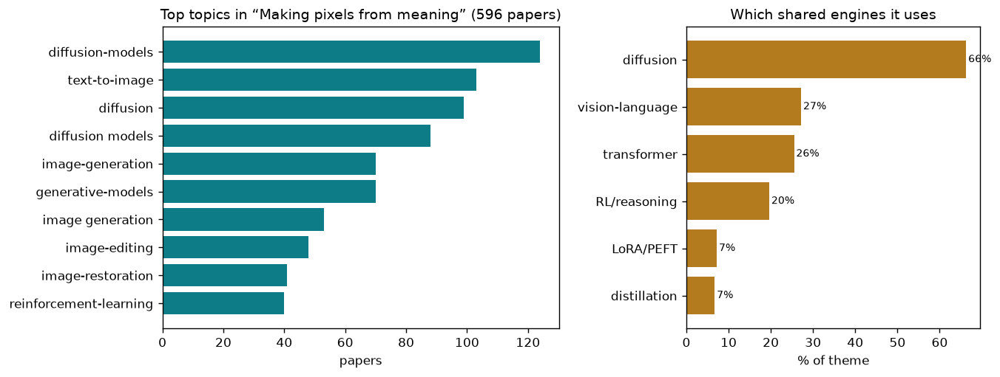

the reverse bridge — turning an idea or instruction into an image
596 papers · the reverse bridge — turning an idea or instruction into an image
Humans live in a semantic world. We think in concepts, intentions, and meanings. Yet the camera captures only pixels — raw numbers arranged in a grid. Computer vision has spent decades learning to close the gap one direction: turning pixels into meaning, via recognition and understanding. But the reverse gap remains genuinely hard: how do you turn a meaning — an idea, an instruction, a concept — back into pixels? How do you encode "a small dog wearing a red hat sitting on a blue chair in sunlight" into visual form? Or "make this face happier" or "remove the shadow from this object" or "synthesize what this scene looks like in rain"?
This is not a simple inversion. The mapping from pixels to meaning is many-to-one: infinite photos can show the same concept. But the reverse is one-to-infinite: one instruction maps to infinitely many valid images. A diffusion model or autoregressive pixel generator cannot simply memorize; it must learn to hallucinate *plausibly*, respecting both physics and aesthetics, while staying faithful to the user's intent. The challenge grows sharper at scale: as images grow larger, as instructions grow more complex (multiple objects, intricate relationships, nuanced edits), as conditions grow more exotic (infrared, aerial, pathology, rare diseases), the pixel synthesis problem explodes in dimensionality.
Why does this matter? Because generative vision is becoming a fundamental tool—not just for art or entertainment, but for scientific discovery (simulating scenarios, detecting anomalies, restoring degraded imagery), for robotics (imagining future states before acting), for accessibility (describing unseen worlds), for data augmentation (creating training examples when real ones are scarce). Every practical system that turns meaning into pixels is also a test bed for how well we can bridge the conceptual and the visual.
The field attacks this in two main ways: by refining the core generative primitives (diffusion, flow matching, autoregressive decoding) to be faster, more controllable, and higher-fidelity; and by adding structure on top—reasoning, decomposition, language grounding, reward signals—to steer synthesis toward human intent. Neither approach is sufficient alone; the best results combine both.
Diffusion models are powerful but slow; generating a single image can require dozens of denoising steps. The field has converged on knowledge distillation as the primary solution: train a lightweight student to mimic a teacher's output in far fewer steps, or even a single step. WaDi preserves weight parameter directions during distillation to maintain fidelity. LogCD explicitly models local-to-global consistency relationships during few-step distillation. LIFT and PLACE decomposes the residual into coarse and fine components with adaptive weighting for stable compression. Just-in-Time exploits spatial token redundancy in Diffusion Transformers by dynamically reducing the token subspace. The challenge is balancing speed with quality—newer work like NAMI uses progressive rectified flow transformers with staged resolution decomposition for 64% speedup. Some push the envelope further: MeanFlow Transformers combine staged training with representation autoencoders, while Learning Straight Flows learns trajectory-level efficiency in variational flow matching. At the extreme, Extending One-Step Image Generation pushes one-step synthesis all the way to open-ended text-to-image, and ChordEdit applies optimal transport theory to derive a low-energy one-step editing field.
Raw diffusion often fails on nuanced instructions—artists need fine control over color, lighting, style, composition. The field has learned to disentangle the latent space so that independent controls map to independent effects. Learning Latent Proxies for Controllable Single-Image Relighting learns disentangled latent proxies for fine-grained light control. CFG-Ctrl enables fine-grained modulation of classifier-free guidance strength across timesteps. LightMover achieves independent control over light color, intensity, and spatial position. ConceptPrism uses residual tokens to enable independent concept control in personalized models. Camera Control for Text-to-Image learns factorized geometric camera representations that transfer to unseen objects. MMDIR introduces instruction-driven document restoration with multimodal conditioning. The hard part is knowing *what* to disentangle: UniLight unifies previously incompatible lighting modalities through contrastive learning. Guiding Diffusion with Semantically Degraded Conditions reveals a token dichotomy (content tokens vs. context-aggregating tokens) that enables principled semantic degradation for controlled generation.
Generative models often fail subtle tests: they may ignore part of the prompt, generate anatomically wrong hands, miss compositional constraints, or produce unsafe content. The field has adopted reinforcement learning to optimize for human preferences and specific quality metrics, replacing post-hoc filtering with online improvement. Self-Corrected Image Generation combines latent-space reward optimization with explainability for self-corrected diffusion. The Image as Its Own Reward uses high-quality reference images as dense visual supervision signals within adversarial optimization. Style-GRPO applies semantic-aware preference optimization for style transfer. Expand and Prune uses proxy reward estimation at intermediate denoising checkpoints to filter trajectories. HiCoGen combines hierarchical compositional decomposition with RL refinement for structured text-to-image. DRM treats diffusion models themselves as reward backbones to evaluate noisy intermediate latents. Resolving the Identity Crisis uses group-wise counterfactual diversity rewards to penalize cross-sample repetition. GDRO achieves offline group-level reward optimization via implicit functions. Fine-Grained GRPO decomposes preference signals for finer-grained alignment in flow models. GRPO-Guard regulates implicit over-optimization in flow matching via ratio normalization.
Not all instructions are visual; many are linguistic ("make the sky more dramatic"). Tighter language grounding and reasoning improve both understanding of intent and synthesis quality. SynthRGB-T uses language-vision guidance for diverse RGB-T image translation. Language-Free Generative Editing learns visual conditioning directly from image pairs without text dependency. UniEdit-I edits in a unified VLM's CLIP semantic latent space for artifact-free closed-loop editing. Re-Align uses structured in-context visual reasoning (output captions + relation tags) to guide both generation and editing. Thinking-while-Generating interleaves textual reasoning within autoregressive pixel generation itself. Hint2Gen bridges understanding and generation via code-structured hints. META-CoT enhances granularity and generalization in image editing through chain-of-thought. RETOUCHIQ deploys MLLM agents with generalist reward models for subjective image retouching. ARM-Thinker augments reward models with agentic tool use and visual reasoning for evidence gathering.
Complex scenes with multiple objects, relationships, and constraints benefit from explicit decomposition—generating parts independently and composing them. Beyond Patches introduces the first autoregressive multimodal font generation with explicit global style awareness. FARMER unifies normalizing flows with autoregressive models for tractable likelihood estimation. Masked Region Transformer handles text-to-layers, image-to-layers, and layers-to-layers generation with native support for overflow. MagicQuill V2 deconstructs user intent into explicit visual layers (content, spatial, structural, color). Can We Build Scene Graphs formulates scene graph generation as joint continuous-discrete flow matching. HierAmp applies hierarchical autoregressive amplification for generative dataset distillation. FlowComposer fuses primitive velocity fields for attribute and object flows in compositional zero-shot learning. DrivePTS addresses inter-condition dependency in driving scene generation through progressive learning. CoLoGen addresses Concept-Localization conflict through progressive staged training. Ar2Can decomposes multi-character generation into Architect-Artist roles with spatially-grounded face matching.
Not all generative tasks are general image synthesis; many target specific domains (medical, infrared, driving, rare objects) with domain-specific degradations or constraints. Specialized conditioning and architectures yield better quality with less compute. UniRain applies retrieval-augmented generation for dataset distillation in deraining. Disentanglement-wise Image Dehazing unifies multi-domain dehazing through physics-grounded manifold consensus. RawMetaDiff uses meta-guided diffusion for RAW image enhancement in extreme darkness. IF-Bench benchmarks MLLMs on infrared images with training-free generative visual prompting. HG-Lane generates realistic lane scenes under adverse weather with spectral regularization. Toward Real-world Infrared SR introduces a thermal-aware framework for heat-edge mismatch in infrared super-resolution. MERIT enables efficient multi-domain RAW image translation with camera-agnostic processing. Multinex identifies luminance-color decoupling as a bottleneck in low-light enhancement. SearchAD provides the first large-scale semantic retrieval dataset for rare objects in autonomous driving. RDFace benchmarks rare disease facial analysis at the few-shot regime. Adaptive Auxiliary Prompt Blending dynamically adjusts auxiliary prompt influence for target-faithful diffusion generation.
Generative models excel not just at creation but at editing—removing objects, changing lighting, restoring degraded images, or recomposing scenes. You Only Erase Once enables single-pass object erasure without artifacts via efficient few-step distillation. Group Editing achieves efficient batch image editing with cross-image consistency. Towards Robust Sequential Decomposition for Complex Image Editing shows that synthetic data enables robust sequential decomposition. Beyond Sequential Tools unifies VLM-guided multi-expert collaborative restoration in a single pass. Residual Diffusion Bridge Model unifies diffusion bridge models through residual modulation. HierEdit combines low-res proxy guidance with hierarchical local-window attention for 4K editing without 4K data. SketchDeco uses latent-space composition for sketch colorization. MaskDimE applies adaptive dual-mask mechanisms for visual counterfactual explanations. Say Cheese enables consistent natural language edits across portrait collections. Decoupled Residual Denoising Diffusion Models isolates domain harmonization from semantic mapping for image-to-image translation. Delta Rectified Flow Sampling introduces time-dependent shift terms to cancel background drift. Cycle-Consistent Tuning provides implicit regularization for layered decomposition.
Robots and autonomous systems need not just to see and think, but to imagine and act. Generative models serve as world models and planners. ShowUI-π uses continuous flow matching to generate smooth multi-step GUI manipulation policies. Drive My Way personalizes Vision-Language-Action models via long-term user embeddings. DynBridge unifies imagination and control through shared interaction dynamics. HybridDriveVLA combines Visual Chain-of-Thought that anticipates future scenes with Tree-of-Thought deliberation. DriveVLN extends vision-language navigation to mapless autonomous driving with diffusion-based planning. Physical Object Understanding learns physical properties through differentiable physics-aware world models. Efficient Hybrid SE3-Equivariant Visuomotor Flow Policy achieves SE3-equivariance via spherical harmonics. PALM combines affordance reasoning with explicit progress tracking for long-horizon manipulation.
Training data is expensive to collect and label. Generative models can synthesize high-quality training examples, but naïve synthesis often produces distribution shift or shortcuts. The field has developed methods to ensure synthetic data is realistic and useful. Accelerating Diffusion Model Training under Minimal Budgets is the first dataset condensation framework for diffusion models with difficulty-aware scoring. EVLF injects cross-attention fusion at the early encoder interface so text guides feature learning. Diffusion-Based Native Adversarial Synthesis distinguishes on-manifold hard samples from off-manifold perturbations. How Far Can We Go With Synthetic Data scales sound source localization training via text-to-X generative models. When Pretty Isn't Useful shows newer T2I models paradoxically worsen as training data generators despite visual improvements. ChimeraLoRA uses multi-head LoRA for coordinated synthetic dataset generation with independent objective control. MARVAL is the first distillation framework for masked autoregressive models. Image-based Outlier Synthesis generates realistic OOD examples from in-distribution data for OOD detection.
Fast, high-quality, single-step synthesis is now practical—models like NAMI, Learning Straight Flows, and ChordEdit demonstrate that rectified flow and optimal transport can replace 20–50 step diffusion with minimal quality loss. Personalized generation (via LoRA, embedding, residual tokens) is reliable and well-understood. Specialized domains (medical, infrared, rare objects) now have benchmarks and tailored architectures. Editing within semantic latent spaces is artifact-free. Multi-expert and hierarchical decomposition enable complex compositional scenes.
What remains open: long-range reasoning and consistency in very large-scale synthesis (generating feature films, not frames); robust handling of rare or adversarial concepts without mode collapse or overfitting to spurious correlations; true zero-shot adaptation to entirely new domains without any fine-tuning; and reliable, transparent alignment of generative intent with human values at scale. The field still struggles with anatomical correctness, fine details, and the subtle failure modes that emerge only in real-world deployment. The bridge from meaning to pixels has been partly built; the remaining spans are longer and more intricate.
The theme above is broad. Here are the distinct sub-problems inside it — each in plain terms: the big-picture problem, then how the field tackles it, then representative papers.
The problem. A modern image generator usually makes a picture by starting from noise and cleaning it many times. Each cleanup pass asks a huge network to look again. That gives quality, but it also means waiting, paying for compute, and losing the feeling of direct manipulation. The first-principles problem is a tradeoff between correction and cost: more correction makes the picture better, but every correction consumes time, memory, and energy.
The approaches. One route teaches a fast student to copy a slow teacher so the same noise-to-image trip takes one or a few big steps. Another route keeps several steps but reuses work that barely changed, skips easy image regions, or spends effort only where uncertainty is high. A third route makes the numbers cheaper to store and move. Underneath all of them is the same measurement question: which parts of the computation still change the final picture, and which parts are just expensive repetition?
▸ Collapsing many steps into one
Problem. The refinement process takes dozens of full network passes because each small step only nudges the image; the cost is dominated by the sheer number of steps rather than any single one. Approach. A fast student learns to reproduce a slow teacher's final result in one or a few passes (distillation), or the model learns straighter noise-to-image paths so fewer stops are needed to travel the same distance.
The fundamental point. The multi-step trajectory carries far more information than the endpoint needs, so the whole journey can be compressed into a single jump if the map is learned directly.
WaDi: Weight Direction-aware Distillation for One-st… · LogCD: Local-to-global Consistency Distillation for … · Extending One-Step Image Generation from Class Label… · LIFT and PLACE: A Simple, Stable, and Effective Know… · Flash-DMD: Towards High-Fidelity Few-Step Image Gene…
▸ Skipping redundant work inside the steps
Problem. Even when you keep the steps, most of the computation inside each one repeats itself or is spent on regions of the image that are already easy, wasting effort uniformly regardless of difficulty. Approach. Methods cache and reuse features across steps, prune tokens or layers, upsample cheaply, and adaptively spend more compute only where and when the image is genuinely hard.
The fundamental point. Generation effort is deeply non-uniform in space and time, so treating every pixel and every step as equally expensive is the real waste.
Training-free Mixed-Resolution Latent Upsampling for… · Denoising, Fast and Slow: Difficulty-Aware Adaptive … · SODA: Sensitivity-Oriented Dynamic Acceleration for … · Just-in-Time: Training-Free Spatial Acceleration for… · TAP: A Token-Adaptive Predictor Framework for Traini…
▸ Splitting and shrinking the machine
Problem. A single network is a fixed monolithic cost; you cannot make it faster without either shrinking it or spreading its work, both of which risk breaking the delicate numerics that make images coherent. Approach. One line prunes and repairs the network with second-order sensitivity, another splits inference across GPUs with cheap communication, and another merges or assembles specialized models to cut redundant capacity.
The fundamental point. The network's size and its single-device execution are separable engineering choices, not intrinsic to producing a good image.
2ndMatch: Finetuning Pruned Diffusion Models via Sec… · Otil: Accelerating Diffusion Model Inference via Com… · DiffGraph: An Automated Agent-driven Model Merging F… · PixelRush: Ultra-Fast, Training-Free High-Resolution…
▸ Predicting several tokens at once
Problem. Generators that emit an image token by token are slow because each token waits for the last, making the sequence length itself the bottleneck no matter how small each prediction is. Approach. Speculative and parallel decoding draft multiple tokens ahead and verify them in a single pass, or use lookahead and guided decoding to accept several correct guesses together.
The fundamental point. The strict left-to-right dependency in token generation is largely illusory — many future tokens are predictable enough to commit in parallel.
SJD-PAC: Accelerating Speculative Jacobi Decoding vi… · FastHybrid: Accelerating Hybrid Autoregressive Image… · RewardFlow: Generate Images by Optimizing What You R… · Stable Mean Flow: Lyapunov-Inspired One-Step Flow Ma…
The problem. Every image model rests on a mathematical recipe for how randomness becomes structure. The dominant recipes (denoising diffusion) work but are not obviously the best or most efficient way to do it, and small choices about the objective, the noise, or the representation the model draws on quietly cap quality and speed. This sub-theme is about re-examining those foundations rather than tweaking a fixed one.
The approaches. Flow-matching and mean-flow methods reframe generation as learning a smooth velocity field that carries noise to data, aiming for straighter, faster trajectories. Others move generation back into raw pixel space instead of a compressed latent, or borrow ideas from normalizing flows and autoregressive prediction so the model builds an image piece by piece. A parallel line reworks the tokenizer or autoencoder that defines the model's working canvas, since a better internal representation makes everything downstream easier.
▸ Generation as a smooth velocity field
Problem. Denoising diffusion learns a noisy, meandering path from randomness to data; the curvature of that path is what forces many slow steps, so the recipe itself limits speed. Approach. Flow-matching and mean-flow methods learn a velocity field that carries noise to data along straight or near-straight trajectories, and study what makes that field stable to train.
The fundamental point. The straightness of the noise-to-data map is a design variable, and choosing it well dissolves the step-count problem at its root.
MeanFlow Transformers with Representation Autoencode… · Functional Mean Flow in Hilbert Space · Transition Models: Rethinking the Generative Learnin… · Understanding, Accelerating, and Improving MeanFlow … · Improved Mean Flows: On the Challenges of Fastforwar…
▸ Drawing in pixels, not a compressed proxy
Problem. Modern models generate inside a compressed latent space to save compute, but that compression is a lossy middleman that quietly caps fidelity and couples the generator to a separate autoencoder. Approach. These works move generation back into raw pixel space with transformers designed for it, sometimes decoupling frequency bands or letting the model simply denoise directly.
The fundamental point. The latent bottleneck is a convenience, not a necessity, and pixel-space generation is viable once the architecture is built for it.
Back to Basics: Let Denoising Generative Models Deno… · PixelDiT: Pixel Diffusion Transformers for Image Gen… · FARMER: Flow AutoRegressive Transformer over Pixels · DeCo: Frequency-Decoupled Pixel Diffusion for End-to… · DiP: Taming Diffusion Models in Pixel Space
▸ Reworking the internal canvas
Problem. Every model draws on a tokenizer or autoencoder that defines its working representation; a mediocre canvas makes every downstream task harder, yet it is usually treated as fixed infrastructure. Approach. A better tokenizer or continuous representation is designed so more image fits in fewer, more robust tokens, making both training and high-resolution synthesis easier.
The fundamental point. The quality ceiling of a generator is set upstream by the representation it lives in, so improving the canvas beats tuning the painter.
DDT: Decoupled Diffusion Transformer · MacTok: Robust Continuous Tokenization for Image Gen… · LacTokGen: Latent Consistency Tokenizer for 1024-pix… · Frequency-Aware Flow Matching for High-Quality Image…
▸ Borrowing invertible and autoregressive recipes
Problem. Diffusion is only one mathematical route from noise to structure; other families of generative math have exact likelihoods or piecewise construction that diffusion lacks. Approach. Normalizing flows are made bidirectional between data and noise, and autoregressive-over-pixels or multimodal flow formulations build the image piece by piece under a different objective.
The fundamental point. Denoising is not the only valid grammar of generation, and rival formulations expose properties diffusion cannot offer.
Bidirectional Normalizing Flow: From Data to Noise a… · Flow Matching for Multimodal Distributions · Socratic-Geo: Synthetic Data Generation and Cross-Mo… · Towards Training-Free Scene Text Editing
The problem. A model trained only to reproduce its data does not know what humans actually prefer — sharper faces, correct object counts, no artifacts, pleasing composition. Preference lives in a person's judgment, not in the training pixels, so you have to inject an external notion of good and push the generator toward it without wrecking the diversity and fidelity it already has.
The approaches. The workhorse is reinforcement learning with a reward: build a model that scores images for quality or alignment, then fine-tune the generator to chase that score, often with policy-optimization schemes adapted from language models (GRPO and its many variants). A related line replaces the reward with direct preference optimization from pairs of better-and-worse images. Recurring struggles are reward-hacking (the model games the score) and mode collapse (it converges to a few safe outputs), which spawn work on diversity-aware, group-level, and instance-level credit assignment.
▸ Chasing a learned reward
Problem. A model trained to copy its data has no notion of what a person finds good, so an external scorer must be built and the generator pushed to maximize it. Approach. A reward model scores images for quality or alignment, and the generator is fine-tuned with policy optimization borrowed from language models to climb that score.
The fundamental point. Human preference is an external signal that must be manufactured into a differentiable target, because it is simply not present in the training pixels.
CRAFT: Aligning Diffusion Models with Fine-Tuning Is… · DRM: Diffusion-based Reward Model With Step-wise Gui… · RewardFlow: Generate Images by Optimizing What You R… · Reward Sharpness-Aware Fine-Tuning for Diffusion Mod… · GRPO-Guard: Mitigating Implicit Over-Optimization in…
▸ Learning taste from comparisons
Problem. A numeric reward is hard to calibrate and easy to game, but people find it far easier to say which of two images is better than to assign an absolute score. Approach. Direct and pairwise preference optimization trains the generator on better-versus-worse image pairs, and instance-aware schemes assign credit at finer granularity.
The fundamental point. Relative judgments are a more honest and stable encoding of preference than absolute scores, and they can drive alignment without an explicit reward number.
PaCo-RL: Advancing Reinforcement Learning for Consis… · Towards Fine-Grained Attribution: Instance-Aware Pre… · The Image as Its Own Reward: Reinforcement Learning … · Self-Corrected Image Generation with Explainable Lat…
▸ Fighting reward hacking and mode collapse
Problem. When a generator relentlessly maximizes a reward it learns to game the scorer and to collapse onto a few safe outputs, trading away the diversity and fidelity it started with. Approach. Diversity-aware, group-level, and directionally-decoupled objectives spread credit across trajectories and directions so the model improves without narrowing.
The fundamental point. Optimizing any fixed proxy for taste inevitably corrodes diversity, so preserving variety must be built into the objective, not hoped for.
Expand and Prune: Maximizing Trajectory Diversity fo… · GDRO: Group-level Reward Post-training Suitable for … · Taming Preference Mode Collapse via Directional Deco… · DiverseGRPO: Mitigating Mode Collapse in Image Gener… · Neighbor GRPO: Contrastive ODE Policy Optimization A…
▸ Letting the model reward itself
Problem. External reward models are expensive to build and can disagree with the generator's own competence, raising the question of whether a model can supply its own notion of good. Approach. A model's own understanding or confidence is turned into an intrinsic reward, so its comprehension grades and steers what it generates.
The fundamental point. A capable model already contains an implicit standard of quality, and surfacing that internal signal can replace an external judge.
Learning to Generate via Understanding: Understandin… · Improving Text-to-Image Generation with Intrinsic Se… · StyleDoctor: Towards Specialist Reward Model for Sty… · The Image as Its Own Reward: Reinforcement Learning …
The problem. Often you do not want a fresh image but a small, faithful change to an existing one — remove this object, recolor that shirt, follow a written instruction — while leaving everything else untouched. This is hard because the model must understand which region and which attribute the instruction refers to, apply a precise local change, and preserve the rest of the image exactly.
The approaches. Many methods invert a real photo back into the model's latent space and then re-generate under a modified instruction, with tricks for fast, faithful inversion. Others manipulate attention or fuse features so the edit lands only where intended, add continuous strength controls or sliders for how much to change, and chain multi-turn edits while keeping earlier content stable. A growing set couples a reasoning language model to the editor so complex, multi-step instructions get decomposed before pixels move.
▸ Getting a real photo back into the model
Problem. To edit a real image the model must first recover the noise or latent that would regenerate it exactly, and doing this fast and faithfully is a bottleneck for real-time editing. Approach. Fast inversion methods find the latent for a real photo in one or few steps, then re-generate it under a modified instruction while keeping the reconstruction faithful.
The fundamental point. Editing a real image is fundamentally an inverse problem — you must reconstruct the model's private path to the photo before you can alter it.
FlashIn: Fast and Accurate Image Inversion for Real-… · InverFill: One-Step Inversion for Enhanced Few-Step … · ChordEdit: One-Step Low-Energy Transport for Image E… · BiFM: Bidirectional Flow Matching for Few-Step Image…
▸ Landing the change only where it belongs
Problem. An instruction refers to one region and one attribute, but a naive edit bleeds into the rest of the image; the model must localize the change and preserve everything else exactly. Approach. Attention is manipulated or fused so the edit is confined to the intended region, high-frequency detail is protected across turns, and object-level transforms are targeted precisely.
The fundamental point. Faithful editing is mostly about what to leave untouched, so the hard problem is preservation rather than change.
Precise Object and Effect Removal with Adaptive Targ… · The Devil is in Attention Sharing: Improving Complex… · FreqEdit: Preserving High-Frequency Features for Rob… · NEAF: Natural Image Editing with Attention Fusion fo…
▸ A dial for how much to change
Problem. Edits are usually all-or-nothing, but real creative control needs a continuous knob — retouch a little or a lot — and a way to align that knob with human preference. Approach. Continuous strength controls and sliders expose the edit magnitude as a tunable dimension, tuned with human-preference post-training and generalist reward feedback.
The fundamental point. Edit intensity is a genuine continuous axis of intent that a single instruction cannot capture, so it deserves its own explicit control.
Kontinuous Kontext: Continuous Strength Control for … · HP-Edit: A Human-Preference Post-Training Framework … · InstantRetouch: Efficient and High-Fidelity Instruct… · RETOUCHIQ: MLLM Agents for Instruction-Based Image R…
▸ Reasoning out complex instructions before editing
Problem. Complex, multi-step, or ambiguous instructions require understanding intent and decomposing it, which a pixel-level editor alone cannot do. Approach. A reasoning language model is coupled to the editor to interpret and break down the instruction, or reinforcement learning teaches text-instructed geometric moves, before any pixels change.
The fundamental point. Instruction editing is two problems in disguise — comprehension and execution — and the comprehension half is a language-reasoning task.
ReasonEdit: Towards Reasoning-Enhanced Image Editing… · Talk2Move: Reinforcement Learning for Text-Instructe… · RAW-Domain Degradation Models for Realistic Smartpho…
The problem. Text alone is a blunt instrument: it cannot pin down a specific person's face, a brand's exact logo, a precise layout, or a chosen lighting. To be useful for real creative work the generator must be conditioned on richer signals and hold them faithfully, without leaking, blending, or forgetting them across a scene. The fundamental difficulty is disentangling identity, style, layout, and appearance so each can be controlled independently.
The approaches. Personalization methods teach the model a new subject or style from a few examples, often via lightweight adapters, and fight the trade-off between resembling the reference and staying flexible. Layout and composition methods add spatial grounding so objects land in the right place and multiple subjects keep separate identities. A distinct thread targets physical appearance — lighting, color, camera viewpoint — as controllable knobs, and another isolates and transfers just the style or just the content from a reference.
▸ Learning a subject or style from a few shots
Problem. Text cannot name a specific person's face or a particular style, so the model must absorb a new concept from a handful of examples while staying flexible enough to place it in new scenes. Approach. Lightweight adapters and encoders teach the model a new subject or style, explicitly disentangling it from other attributes to fight the copy-versus-flexibility trade-off.
The fundamental point. A concept and its context are separable, and personalization succeeds only to the degree it isolates identity from everything else.
ConceptPrism: Concept Disentanglement in Personalize… · UniVerse: A Unified Modulation Framework for Segment… · Omni-Attribute: Open-vocabulary Attribute Encoder fo… · Unified Customized Generation by Disentangled Reward… · CRAFT-LoRA: Content-Style Personalization via Rank-C…
▸ Placing objects and keeping identities apart
Problem. When several subjects share a scene the generator blends or swaps their identities and ignores where each should sit; spatial and identity grounding are missing from text. Approach. Layout and composition control add spatial grounding, and multi-to-multi matching keeps multiple identities distinct and consistent across the image.
The fundamental point. Identity and position are signals text cannot carry, so multi-subject fidelity requires an explicit binding of who goes where.
ConsistCompose: Unified Multimodal Layout Control fo… · Scaling Multi-Identity Consistency for Image Customi… · Semantic Alignment for Pose-Invariant Identity Prese…
▸ Physical knobs: light, color, viewpoint
Problem. Real creative work needs control over lighting, color, and camera angle as independent physical dials, but generators fold these into a single entangled output. Approach. Dedicated tokens and latent proxies expose lighting, intensity, color, and viewpoint as controllable inputs that can be moved without disturbing scene content.
The fundamental point. Appearance factors that are physically independent in the world can be re-exposed as independent controls inside a generator.
Learning Latent Proxies for Controllable Single-Imag… · LightMover: Generative Light Movement with Color and… · TokenLight: Precise Lighting Control in Images using… · Camera Control for Text-to-Image Generation via Lear… · All-in-One Slider for Attribute Manipulation in Diff…
▸ Separating style from content
Problem. Transferring just the look of a reference, or just its subject, requires cleanly splitting style from content — two things that are deeply entangled in any single image. Approach. Methods decouple content and style from a single reference and transfer one of them, sometimes region-by-region, in a training-free and semantically-aware way.
The fundamental point. Style and content are separable factors even within one image, and isolating either is the prerequisite for controllable transfer.
StyleGallery: Training-free and Semantic-aware Perso… · SplitFlux: Learning to Decouple Content and Style fr… · RegionRoute: Regional Style Transfer with Diffusion …
The problem. Prompts that require counting, spatial relations, world knowledge, or several conditions at once routinely break generators — they produce three legs, ignore 'to the left of', or invent facts. The root problem is that turning a demand into a picture is itself a reasoning task, and a model that draws in one shot has no chance to plan, check, or correct. This sub-theme tries to give generation an inner deliberation step.
The approaches. One direction interleaves textual chain-of-thought with the drawing so the model reasons, generates, inspects, and revises. Another unifies understanding and generation in a single model so its own comprehension can grade and reward what it produces (self-evaluation, intrinsic rewards). Test-time scaling searches over multiple candidate generations and keeps the best, while compositional methods decompose a complex scene into parts, scene graphs, or curricula before assembling the final image.
▸ Reasoning interleaved with drawing
Problem. A model that draws in one shot cannot plan, inspect, or correct, so prompts needing counting or ordering come out wrong with no chance of repair. Approach. Textual chain-of-thought is interleaved throughout visual generation so the model reasons, generates, inspects, and revises as it goes.
The fundamental point. Turning a demand into a picture is itself a reasoning process, and interleaving deliberation with drawing gives it the steps it needs.
Thinking-while-Generating: Interleaving Textual Reas… · ThinkGen: Generalized Thinking for Visual Generation · Visual-Aware CoT: Achieving High-Fidelity Visual Con… · UniT: Unified Multimodal Chain-of-Thought Test-time …
▸ One model that both understands and generates
Problem. If a model could grade its own output it would need no external judge, but generation and comprehension are usually separate systems that cannot talk to each other. Approach. Understanding and generation are unified in one model so its own comprehension provides self-evaluation and intrinsic rewards for what it produces.
The fundamental point. A model that understands images already holds the standard to judge the ones it makes, closing the loop without outside supervision.
UniVerse: Empower Unified Generation with Reasoning … · Unified Multimodal Models as Auto-Encoders · Learning to Generate via Understanding: Understandin… · OSPO: Object-Centric Self-Improving Preference Optim…
▸ Searching over candidates at test time
Problem. Any single generation is a gamble; a hard prompt is likely to fail on the first try even from a good model, and one shot gives no way to recover. Approach. Test-time scaling generates many candidates, or builds the image piece by piece, and keeps or routes to the best according to a scorer.
The fundamental point. Spending more compute at inference — sampling and selecting — trades cheaply for quality that no single forward pass can guarantee.
Progress by Pieces: Test-Time Scaling for Autoregres… · OctoT2I: A Self-Evolving Agentic Text-to-Image Route… · UniT: Unified Multimodal Chain-of-Thought Test-time … · Advancing Image Classification with Discrete Diffusi…
▸ Decomposing the scene before assembling it
Problem. Complex scenes with many conditions overwhelm a monolithic generator, which cannot hold all the relations at once and drops or garbles some. Approach. Scenes are broken into parts, hierarchies, scene graphs, or synthetic curricula and assembled compositionally, with reward modeling to enforce spatial relations.
The fundamental point. Compositional structure that is explicit in language must be made explicit in the generation process, not left for a single pass to infer.
HiCoGen: Hierarchical Compositional Text-to-Image Ge… · Synthetic Curriculum Reinforces Compositional Text-t… · Enhancing Spatial Understanding in Image Generation … · Circuit Mechanisms for Spatial Relation Generation i…
The problem. The everyday reverse-bridge is repairing a degraded photo: low light, noise, blur, haze, rain, reflections, compression, lens flaws. Here the 'meaning' is the clean scene the camera failed to capture, and it must be hallucinated back plausibly without inventing false detail. It is hard because real-world degradations are varied, often mixed, and rarely have matching clean references to learn from.
The approaches. Diffusion priors are repurposed as strong generative priors that fill in missing detail, frequently squeezed into one-step models for practical super-resolution and enhancement. All-in-one and foundation approaches handle many degradation types with a single model, routing by degradation or retrieving priors, and framing restoration as an inverse problem with guidance. Physics-based methods model the actual sensor, optics, or turbulence to synthesize realistic degradations to train on, and self-supervised schemes learn to restore without paired clean data.
▸ Squeezing generative priors into one step
Problem. Diffusion priors can plausibly fill missing detail in a degraded photo, but their many-step cost makes practical super-resolution and enhancement too slow to deploy. Approach. Strong diffusion priors are distilled into one-step models for super-resolution and enhancement, with explicit control over the fidelity-versus-realism balance.
The fundamental point. The detail a generator can hallucinate is exactly what a damaged photo lost, and that prior can be delivered in a single practical step.
IFCSR: Inference-Free Fidelity-Realism Control for O… · Bridging Fidelity-Reality with Controllable One-Step… · DreamSR: Towards Ultra-High-Resolution Image Super-R… · Language-Guided One-Step Diffusion Model for Nightti… · Residual Diffusion Bridge Model for Image Restoratio…
▸ One model for many kinds of damage
Problem. Real degradations come mixed and varied — low light, blur, haze, glare — yet training a separate specialist per degradation does not scale to the messy real world. Approach. All-in-one and foundation models handle many degradations at once by routing on degradation type, planning frequency-aware execution, or retrieving the right prior.
The fundamental point. Diverse degradations share enough structure that a single model can span them, if it can identify and route to the right restoration behavior.
UniLDiff: Unlocking the Power of Diffusion Priors fo… · FAPE-IR: Frequency-Aware Planning and Execution Fram… · Reflection Separation from a Single Image via Joint … · Dynamic Exposure Burst Image Restoration
▸ Modeling the physics of the sensor
Problem. Restoration needs paired clean-and-degraded data that rarely exists for real cameras, and synthetic degradations that ignore real optics teach the model the wrong corruption. Approach. Physics-based models of the sensor, optics, glare, or RAW pipeline synthesize realistic degradations to train on, capturing how real cameras actually fail.
The fundamental point. Realistic training data comes from modeling the actual physical cause of the damage, not from generic noise added after the fact.
RawMetaDiff: Unlocking Extreme Darkness from Dual-Ex… · Learning Latent Transmission and Glare Maps for Lens… · RAW-Domain Degradation Models for Realistic Smartpho… · 2-Shots in the Dark: Low-Light Denoising with Minima…
▸ Restoring without clean references
Problem. For most real degradations there is no matching clean image to learn from, so supervised restoration is impossible where it is most needed. Approach. Self-supervised and zero-shot schemes learn to restore without paired data, using self-similarity, distribution alignment, or a surrogate oracle for what clean should look like.
The fundamental point. The clean scene can be inferred from structure within the degraded image itself, removing the dependence on paired ground truth.
Self-supervised Dynamic Heterogeneous Degradation Mo… · CASR: A Robust Cyclic Framework for Arbitrary Large-… · Multinex: Lightweight Low-light Image Enhancement vi… · Face2Scene: Using Facial Degradation as an Oracle fo…
The problem. Real labeled data is scarce, expensive, privacy-sensitive, or long-tailed, so researchers use generators to manufacture training examples. The catch is that synthetic images only help if they are diverse, correctly labeled, and close enough to the real distribution — otherwise they teach the downstream model the wrong thing, and much of this work is about making generated data actually improve real tasks.
The approaches. Generative augmentation synthesizes labeled examples for classification, segmentation, and detection, with care to cover rare classes and preserve object semantics. Dataset distillation goes further, compressing a whole dataset into a small set of highly informative synthetic images, often via diffusion with distribution- or manifold-matching. Privacy-driven work generates synthetic stand-ins for sensitive identities or under federated and differential-privacy constraints, and a critical strand studies why synthetic data sometimes fails as training material.
▸ Synthesizing labeled examples for real tasks
Problem. Labeled data for classification, segmentation, and detection is scarce and long-tailed, and rare classes are exactly the ones hardest to collect. Approach. Generators synthesize labeled examples with care to cover rare classes and preserve object semantics, sometimes via concept-aware adapters or contextual synthesis.
The fundamental point. A generator can manufacture supervision, but only if the synthetic label stays faithful to the synthetic pixels it describes.
MatchMask: Mask-Centric Generative Data Augmentation… · Beyond Objects: Contextual Synthetic Data Generation… · Concept-Aware LoRA for Domain-Aligned Segmentation D… · OntoAug: Rethinking Generative Data Augmentation via… · Decision Boundary-aware Generation for Long-tailed L…
▸ Compressing a dataset into a few images
Problem. Even abundant data is expensive to train on, raising the question of whether a whole dataset's teaching value can be packed into a tiny set of images. Approach. Dataset distillation compresses a corpus into a few highly informative synthetic images using diffusion with distribution-, manifold-, or learnability-guided matching.
The fundamental point. A dataset's usefulness for training is far more compressible than its raw size, and diffusion can carve out that essential core.
Mitigating The Distribution Shift of Diffusion-based… · IMS3: Breaking Distributional Aggregation in Diffusi… · DMGD: Train-Free Dataset Distillation with Semantic-… · ManifoldGD: Training-Free Hierarchical Manifold Guid… · Grid Distillation: Compositional Image Distillation …
▸ Synthetic stand-ins for sensitive data
Problem. Much needed data involves private identities or is bound by privacy constraints, so real examples cannot be shared or even collected freely. Approach. Generators produce synthetic stand-ins for sensitive identities, guided by reinforcement or built to satisfy federated and differential-privacy constraints.
The fundamental point. Utility and privacy can be partly decoupled, letting synthetic data carry the training signal without carrying the real person.
Reinforcement-Guided Synthetic Data Generation for P… · EVLF: Early Vision-Language Fusion for Generative Da… · ChimeraLoRA: Multi-Head LoRA-Guided Synthetic Datase…
▸ Why synthetic data fails
Problem. Beautiful generated images often make poor training material, and without understanding why, adding synthetic data can silently hurt the downstream model. Approach. This line diagnoses the distribution shift and semantic gaps that make text-to-image outputs unreliable as training data, and studies outlier and boundary cases.
The fundamental point. Visual realism is not the same as training usefulness, and the gap between them is the real obstacle to using generators as data factories.
When Pretty Isn't Useful: Investigating Why Modern T… · Image-based Outlier Synthesis With Training Data · Learnability-Guided Diffusion for Dataset Distillati…
The problem. Once anyone can conjure convincing images, new hazards appear: hidden backdoors, jailbreaks that bypass safety, stolen prompts, copyright infringement, and impersonation. In parallel, the field cannot improve what it cannot measure, yet judging a generated image's quality, faithfulness, and honesty is itself unsolved. This sub-theme covers both the defensive/adversarial side and the measurement side.
The approaches. Attack work exposes weaknesses — planting backdoors in models or LoRAs, poisoning retrieval knowledge bases, red-teaming for unsafe or infringing content, and stealing prompts — while defenses add safety guidance, backdoor detection, fingerprinting, and anonymization. On the evaluation side, benchmarks probe editing, composition, color, culture, and reasoning, and vision-language models are recruited as automated judges and reward models that score alignment and detect artifacts or hallucinations.
▸ Attacks: backdoors, jailbreaks, and theft
Problem. Once anyone can conjure images, attackers can hide triggers in models or adapters, bypass safety guards, poison knowledge bases, or steal prompts and identities. Approach. Red-teaming plants imperceptible backdoors, masquerades malicious LoRAs as benign, and uses language models to jailbreak generators into unsafe or infringing output.
The fundamental point. A generator's flexibility is also its attack surface, and the same conditioning that enables control enables covert manipulation.
Towards Human-Imperceptible Backdoor Attacks on Text… · When LoRA Betrays: Backdooring Text-to-Image Models … · GenBreak: Red Teaming Text-to-Image Generation Using… · Unleashing Stealthy Backdoor Pandemic by Infecting a… · Hidden Dangers of Compositional Generation: Diagnosi…
▸ Defenses: detection and protection
Problem. If attacks can be hidden inside models and outputs, the field needs ways to detect tampering and to protect people and works from unauthorized generation. Approach. Defenses detect backdoors from behavioral deviation, add safety guidance, fingerprint models, and proactively immunize faces against identity-preserving personalization.
The fundamental point. Covert manipulation of a generator leaves detectable traces, and vulnerable subjects can be protected before they are ever exploited.
No Way To Steal My Face: Proactive Defense Against I… · BlackMirror: Black-Box Backdoor Detection for Text-t… · Roots Beneath the Cut: Uncovering the Risk of Concep… · 2-Shots in the Dark: Low-Light Denoising with Minima…
▸ Benchmarks for what generators do
Problem. The field cannot improve what it cannot measure, yet editing faithfulness, composition, color, and cultural coverage each need their own careful yardstick. Approach. Purpose-built benchmarks probe editing, image-to-image, color fidelity, cultural gaps, and actively map where text-to-image models fail.
The fundamental point. Each distinct capability of a generator demands its own measurement, because a single aggregate score hides exactly the failures that matter.
Omni IIE Bench: Benchmarking the Practical Capabilit… · FailureAtlas: Mapping the Failure Landscape of T2I M… · I2I-Bench: A Comprehensive Benchmark Suite for Image… · GenColorBench: A Color Evaluation Benchmark for Text… · Where Culture Fades: Revealing the Cultural Gap in T…
▸ Vision-language models as automated judges
Problem. Human evaluation cannot scale to the volume of generated images, so an automated judge is needed that reliably scores alignment and catches artifacts. Approach. Vision-language models are recruited as reward models and judges that score interleaved text-image output, style fidelity, and detect hallucinations or artifacts.
The fundamental point. A model that understands images can stand in for a human evaluator, turning subjective judgment into a scalable, reusable signal.
Multimodal RewardBench 2: Evaluating Omni Reward Mod… · StyleDoctor: Towards Specialist Reward Model for Sty… · I2I-Bench: A Comprehensive Benchmark Suite for Image…
Each cluster connects a family of related papers from first principles, with an animated diagram and the papers grouped by approach.

Left: the theme's most common topics. Right: how much it leans on each shared engine.
| Paper | Code |
|---|---|
| 3M-TI: High-Quality Mobile Thermal Imaging via Calibration-free Multi-Camera Cross-Modal D | work-submit/3MTI |
| Accelerating Diffusion via Hybrid Data-Pipeline Parallelism Based on Conditional Guidance | kaist-dmlab/Hybridiff |
| AdaIAT: Adaptively Increasing Attention to Generated Text to Alleviate | XianguiKang/AdaIAT.git |
| Adapting In-context Generation for Enhanced Composed Image Retrieval | JThuge/DAIG |
| Beyond Sequential Tools: A Unified VLM Agent System for Photographic Post-Processing via D | chaofengc/IQA- |
| Beyond Single Images: A Comprehensive Benchmark for Album-Level Vision-Language Understand | QwenLM/Qwen3-VL |
| Beyond Strict Pairing: Arbitrarily Paired Training for High-Performance Infrared and Visib | yanglinDeng/IVIF |
| BiGain: Unified Token Compression for Joint Generation and Classification | Greenoso/BiGain |
| BiProLoRA: Bilevel Prompt LoRA for Real Scene Recovery | Defender0527/BiProLoRA |
| Black-box Membership Inference Attacks on the Pre-training Data of Image-generation Models | wanghl21/SD-MIA |
| BlackMirror: Black-Box Backdoor Detection for Text-to-Image Models via Instruction-Respons | Ferry-Li/BlackMirror |
| Bridging Fidelity-Reality with Controllable One-Step Diffusion for Image Super-Resolution | Chanson94/CODSR |
| CLIP Is Shortsighted: Paying Attention Beyond the First Sentence | TRAILab/DeBias-CLIP.git |
| CRAFT-LoRA: Content-Style Personalization via Rank-Constrained Adaptation and Training-Fre | Skylanding/CraftLoRA |
| CogniEdit: Dense Gradient Flow Optimization for Fine-Grained Image Editing | yl4467/CogniEdit |
| ColorFLUX: A Structure-Color Decoupling Framework for Old Photo Colorization | jantic/DeOldify |
| Compositional Text-to-Image Generation Via Region-aware Bimodal Direct Preference Optimiza | anzeameol/BiDPO |
| Concept-Aware LoRA for Domain-Aligned Segmentation Dataset Generation | huggingface/peft |
| Consistency Beyond Contrast: Enhancing Open-Vocabulary Object Detection Robustness via Con | bozhao-li/CCL |
| Curriculum Group Policy Optimization: Adaptive Sampling for Unleashing the Potential of Te | PRIS-CV/CGPO |
| DA-VAE: Plug-in Latent Compression for Diffusion via Detail Alignment | taited/clip- |
| DBMSolver: A Training-free Diffusion Bridge Sampler for High-Quality Image-to-Image Transl | snumprlab/dbmsolver |
| DDT: Decoupled Diffusion Transformer | MCG-NJU/DDT |
| DPAR: Dynamic Patchification for Efficient Autoregressive Visual Generation | dsrivastavv/DPAR |
| DRM: Diffusion-based Reward Model With Step-wise Guidance | jjaxonx/DRM |
| DVAR: Dynamic Visual Autoregressive Modeling for Image Super-Resolution | YuZheng9/DVAR |
| DeCo: Frequency-Decoupled Pixel Diffusion for End-to-End Image Generation | Zehong-Ma/DeCo |
| Decision Boundary-aware Generation for Long-tailed Learning | keepdigitalabc-svg/DBG |
| Decoupled Residual Denoising Diffusion Models for Unified and Data Efficient Image-to-Imag | HKU-HealthAI/DRDD |
| Degradation-Consistent Test-Time Adaptation for All-in-One Image Restoration | tonia86/DCTTA |
| Degradation-Robust Fusion: An Efficient Degradation-Aware Diffusion Framework for Multimod | YShi-cool/DRFusion |
| Denoising, Fast and Slow: Difficulty-Aware Adaptive Sampling for Image Generation | CompVis/patch-forcing |
| Design Your Ad: Personalized Advertising Image and Text Generation | JD-GenX/Uni-AdGen |
| DiP: Taming Diffusion Models in Pixel Space | NJU-PCALab/DiP |
| DiT360: High-Fidelity Panoramic Image Generation via Hybrid Training | Insta360-Research-Team/DiT360 |
| Diff-SemiER: Transparency-Aware Adaptive Fusion Diffusion Model with Generative Prior for | JiahaoLi03/Diff-SemiER |
| Differentiable Vector Quantization for Rate-Distortion Optimization of Generative Image Co | CVL-UESTC/RDVQ |
| Diffusion Probe: Generated Image Result Prediction Using CNN Probes on Early Cross-Attenti | Alibaba-YuFeng/DiffusionProbe |
| Diffusion-Based sRGB Real Noise Generation via Prompt-Driven Noise Representation Learning | JK-the-Ko/PNG |
| Disentangled Textual Priors for Diffusion-based Image Super-Resolution | JL6666JL/DTPSR |
| Divide, Conquer, and Aggregate: Asymmetric Experts for Class-Imbalanced Semi-Supervised Me | PHPJava666/DCA |
| DreamOmni2: Multimodal Instruction-based Editing and Generation | dvlab-research/DreamOmni2 |
| DreamSR: Towards Ultra-High-Resolution Image Super-Resolution via a Receptive-Field Enhanc | jerrydong0219/DreamSR |
| Dual-Level Confidence based Implicit Self-Refinement for Medical Visual Question Answering | pmhDL/DuCoR.git |
| Dynamic Exposure Burst Image Restoration | akshaydudhane16/Burstormer |
| Efficient Hybrid SE3-Equivariant Visuomotor Flow Policy via Spherical Harmonics | zql-kk/E3Flow |
| Efficient Weighted Sampling via Score-based Generative Models | Heasung-Kim/ef |
| Elucidating the Design Space of Arbitrary-Noise-Based Diffusion Models | PerceptionComputingLab/EDA |
| Envision, Attend, Then Respond: Counterfactual Hallucination Mitigation in Large Vision-La | Lyxxx1211/CVPR2026-EnAR |
| EpiAgent: An Agent-Centric System for Ancient Inscription Restoration | blackprotoss/EpiAgent |
| Extending One-Step Image Generation from Class Labels to Text | AMAP-ML/EMF |
| FAPE-IR: Frequency-Aware Planning and Execution Framework for All-in-One Image Restoration | Programmergg/FAPE-IR |
| FlowDIS: Language-Guided Dichotomous Image Segmentation with Flow Matching | Picsart-AI-Research/FlowDIS |
| FlowFixer: Towards Detail-Preserving Subject-Driven Generation | black-forest-labs/flux |
| FoundIR-v2: Optimizing Pre-Training Data Mixtures for Image Restoration Foundation Model | cschenxiang/FoundIR-v2 |
| GDPO-SR: Group Direct Preference Optimization for One-Step Generative Image Super-Resoluti | Joyies/GDPO |
| GuideFlow: Constraint-Guided Flow Matching for Planning in End-to-End Autonomous Driving | adept-thu/GuideFlow |
| HATS: Hardness-Aware Trajectory Synthesis for GUI Agents | JiuTian-VL/HATS |
| HG-Lane: High-Fidelity Generation of Lane Scenes under Adverse Weather Conditions | zdc233/HG-Lane |
| Head-wise Adaptive Rotary Positional Encoding for Fine-Grained Image Generation | Studentxll/HARoPE |
| HiCoGen: Hierarchical Compositional Text-to-Image Generation in Diffusion Models via Reinf | krea-ai/flux- |
| HierAmp: Coarse-to-Fine Autoregressive Amplification for Generative Dataset Distillation | Oshikaka/HIERAMP |
| Hist2Style: Histogram-Guided Stylization with Bilateral Grids | chaofengc/IQA- |
| IMS3: Breaking Distributional Aggregation in Diffusion-Based Dataset Distillation | Westlake-AGI-Lab/IMS3 |
| Improving Diffusion Generalization with Weak-to-Strong Segmented Guidance | Westlake-AGI-Lab/SGG |
| Improving Text-to-Image Generation with Intrinsic Self-Confidence Rewards | huggingface/peft |
| InfiniBench: Infinite Benchmarking for Visual Spatial Reasoning with Customizable Scene | pittisl/infinibench |
| It's Never Too Late: Noise Optimization for Collapse Recovery in Trained Diffusion Models | anneharrington/divgen |
| JANUS: A Lightweight Framework for Jailbreaking Text-to-Image Models via Distribution | dimshimmer/JANUS |
| JarvisEvo: Towards a Self-Evolving Photo Editing Agent with Synergistic Editor-Evaluator O | krea-ai/flux- |
| LLaDA-MedV: Exploring Large Language Diffusion Models for Biomedical Image Understanding | LLM-VLM-GSL/LLaDA- |
| LLaDA-V: Large Language Diffusion Models with Visual Instruction Tuning | ML-GSAI/LLaDA-V |
| LacTokGen: Latent Consistency Tokenizer for 1024-pixel Image Generation by 256-token Input | unsplash/datasets |
| Low-Rank Residual Diffusion Models | JF-Tan/LRDM |
| MMDIR: Multimodal Instruction-Driven Framework for Mixed-Degradation Document Image Restor | xiaomore/MMDIR |
| MMFace-DiT: A Dual-Stream Diffusion Transformer for High-Fidelity Multimodal Face Generati | krea-ai/flux- |
| Making Training-Free Diffusion Segmentors Scale with the Generative Power | Darkbblue/goca |
| MaskDiME: Adaptive Masked Diffusion for Precise and Efficient Visual Counterfactual Explan | clguo/MaskDiME |
| MeanFlow Transformers with Representation Autoencoders | sony/mf-rae |
| Missing No More: Dictionary-Guided Cross-Modal Image Fusion under Missing | harukiv/DCMIF |
| Multi-Patch Global-to-Local Transformer Architecture For Efficient Flow Matching and Diffu | quandao10/MPDiT |
| Omni IIE Bench: Benchmarking the Practical Capabilities of Image Editing Models | Young-2000/OmniIIEBench |
| One-Step Diffusion Transformer for Controllable Real-World Image Super-Resolution | RedMediaTech/ODTSR |
| OpenFS: Multi-Hand-Capable Fingerspelling Recognition with Implicit Signing-Hand Detection | AIRC-KETI/OpenFS |
| OpenVision 2: A Family of Generative Pretrained Visual Encoders for Vision and Vision-Lang | UCSC-VLAA/OpenVision |
| OrionEdit: Bridging Reference and Source Images for Generalized Cross-Image Editing | cityuhkai/OrionEdit |
| Otil: Accelerating Diffusion Model Inference via Communication-Efficient Multi-GPU Paralle | uplaoli/OTIL-PROJECT |
| P-Flow: Prompting Visual Effects Generation | showlab/P-Flow |
| PSR: Scaling Multi-Subject Personalized Image Generation with Pairwise Subject-Consistency | wang-shulei/PSR |
| ParaUni: Enhance Generation in Unified Multimodal Model with Reinforcement-driven Hierarch | JosephTiTan/ParaUni |
| Physics-Consistent Diffusion for Efficient Fluid Super-Resolution via Multiscale Residual | lizhihao2022/ReMD |
| Pluggable Pruning with Contiguous Layer Distillation for Diffusion Transformers | OPPO-Mente-Lab/Qwen- |
| PosterReward: Unlocking Accurate Evaluation for High-Quality Graphic Design Generation | krea-ai/flux- |
| ProcessMaker: A Generalized Process Visualization Framework with Adaptive Sequence Steps o | Molly260/ProcessMaker |
| Qwen-Image-Layered: Towards Inherent Editability via Layer Decomposition | QwenLM/Qwen- |
| RDFace: A Benchmark Dataset for Rare Disease Facial Image Analysis | Kkathyf/RDFace |
| Reading or Reasoning? Format Decoupled Reinforcement Learning for | DocTron-hub/FD-RL |
| RealUnify: Do Unified Models Truly Benefit from Unification? A Comprehensive Benchmark | FrankYang-17/RealUnify |
| ReasonEdit: Towards Reasoning-Enhanced Image Editing Models | stepfun-ai/Step1X-Edit |
| Region-Adaptive Sampling for Diffusion Transformers | mseitzer/pytorch-fid |
| Rejection Mixing: Fast Semantic Propagation of Mask Tokens for Efficient DLLM Inference | Serpientw/ReMix-DLLM |
| Residual Connections Harm Generative Representation Learning | xiao7199/decayed_ |
| Residual Diffusion Bridge Model for Image Restoration | MiliLab/RDBM |
| Resolving Endpoint Underfitting in Diffusion Bridges via Noise Alignment | gyr02/NADB |
| Retrieve-to-Restore: Efficient All-in-One Image Restoration with a Retrieval-Based Degrada | cscxwang/R2R |
| SDUIE: Semi-Supervised Diffusion for Underwater Image Enhancement with Quant-Text Dual Con | Xiaofeng-life/SDUIE |
| SIGMA: Selective-Interleaved Generation with Multi-Attribute Tokens | auihund/SIGMA |
| SIMPLEPOSTER: A SIMPLE BASELINE FOR PRODUCT POSTER GENERATION | XLabs-AI/x-flux |
| SODA: Sensitivity-Oriented Dynamic Acceleration for Diffusion Transformer | leaves162/SODA |
| Scone: Bridging Composition and Distinction in Subject-Driven Image Generation via Unified | Ryann-Ran/Scone |
| Seeing is Improving: Visual Feedback for Iterative Text Layout Refinement | FolSpark/VFLM |
| Semantics Lead the Way: Harmonizing Semantic and Texture Modeling with Asynchronous Latent | hustvl/LightningDiT |
| SemiGDA: Generative Dual-distribution Alignment for Semi-Supervised Medical Image Segmenta | taozh2017/SemiGDA |
| ShiftLUT: Spatial Shift Enhanced Look-Up Tables for Efficient Image Restoration | Sailor-t/ShiftLUT |
| SkyReels-Text: Fine-Grained Font-Controllable Text Editing for Poster Design | SkyworkAI/SkyReels-Text |
| Smoothing the Score Function to Enhance Generalization in Diffusion Models | XinyuZhou2001/smoothing |
| SplitFlux: Learning to Decouple Content and Style from a Single Image | yangyt46/SplitFlux |
| TUDSR: Twice Upsampling-Diffusion for Higher Super-Resolution | wuer5/TUDSR |
| Taming Generative Diffusion Model for Task-Oriented Infrared Imaging | csmty/InfraredIR |
| Taming Sampling Perturbations with Variance Expansion Loss for Latent Diffusion Models | CVL-UESTC/VE-Loss |
| TextPecker: Rewarding Structural Anomaly Quantification for Enhancing Visual Text Renderin | CIawevy/TextPecker |
| The Image as Its Own Reward: Reinforcement Learning with Adversarial Reward for Image Gene | showlab/Adv-GRPO |
| TherA: Thermal-Aware Visual-Language Prompting for Controllable RGB-to-Thermal Infrared Tr | donkeymouse/TherA |
| ThinkGen: Generalized Thinking for Visual Generation | jiaosiyuu/ThinkGen |
| Too Vivid to Be Real? Benchmarking and Calibrating Generative Color Fidelity | ZhengyaoFang/CFM |
| Toward Real-world Infrared Image Super-Resolution: A Unified Autoregressive Framework | JZD151/Real-IISR |
| Towards Training-Free Scene Text Editing | lyb18758/TextFlow |
| Towards Universal Computational Aberration Correction in Photographic Cameras: A Comprehen | XiaolongQian/UniCAC |
| Transition Models: Rethinking the Generative Learning Objective | WZDTHU/TiM |
| UCAN: Unified Convolutional Attention Network for Expansive Receptive Fields in Lightweigh | hokiyoshi/UCAN |
| UPLiFT: Efficient Pixel-Dense Feature Upsampling with Local Attenders | mwalmer-umd/UPLiFT |
| Ultra-Low Bitrate Perceptual Image Compression with Shallow Encoder | LuizScarlet/AEIC |
| Understanding, Accelerating, and Improving MeanFlow Training | seahl0119/ImprovedMeanFlow |
| Uni-DAD: Unified Distillation and Adaptation of Diffusion Models for Few-step Few-shot Ima | yaramohamadi/uni-DAD |
| UniFusion: A Unified Image Fusion Framework with Robust Representation and Source-Aware Pr | dusongcheng/UniFusion |
| UniRain: Unified Image Deraining with RAG-based Dataset Distillation and Multi-objective R | QianfengY/UniRain |
| UniVerse: A Unified Modulation Framework for Segmentation-Free, Disentangled Multi-Concept | discus0434/aesthetic- |
| Unified Customized Generation by Disentangled Reward Modeling | bytedance/USO |
| Unleashing Stealthy Backdoor Pandemic by Infecting a Single Diffusion Model | ML-Security-Research-LAB/Eidolon |
| VAR RL Done Right: Tackling Asynchronous Policy Conflicts in Visual Autoregressive Generat | ByteVisionLab/NextFlow |
| VOSR: A Vision-Only Generative Model for Image Super-Resolution | cswry/VOSR |
| VVS: Accelerating Speculative Decoding for Visual Autoregressive Generation via Partial Ve | HyattDD/VVS |
| VibeToken: Scaling 1D Image Tokenizers and Autoregressive Models for Dynamic Resolution Ge | SonyResearch/VibeToken |
| Virtual Immunohistochemistry Staining with Dual-Aligned Multi-Task Feature Guidance | U-RBook/VSMT |
| VisionDirector: Vision-Language Guided Closed-Loop Refinement for Generative Image Synthes | krea-ai/flux- |
| Visual Personalization Turing Test | zhengxuJosh/Awesome-RAG-Vision |
| WISER: Wider Search, Deeper Thinking, and Adaptive Fusion for Training-Free Zero-Shot Comp | Physicsmile/WISER |
| WaDi: Weight Direction-aware Distillation for One-step Image Synthesis | gudaochangsheng/WaDi |
| When Lines Meet Textures: Spatial-Frequency Aligned Diffusion Features for Cross-Sparsity | Mofr77/SFA-DIFT |
| WiseEdit: Benchmarking Cognition- and Creativity-Informed Image Editing | beepkh/WiseEdit |
Combine fine-tuned models across different tasks without labeled data, reducing computational overhead.
Problem Existing approaches can work in homogeneous set- tings where all target tasks are classification but often fail when tasks span classification and regression
Approach We introduce Null-Space Compression (NSC) Merging, a label-free, output-agnostic method that sets merge weights from adapter geometry
Clean up grainy, dark photos using just two reference images instead of needing thousands of examples.
First-principles read. This paper is about training low-light denoisers from almost no captured data. The everyday problem is learning a camera's night noise from one noisy shot and one dark frame instead of collecting a large paired dataset.
Paper focus. Learning-based low-light denoisers require large paired datasets of clean and noisy images, which are laborious to collect. Noise synthesis offers alternative but existing methods either use simplified parametric models requiring complex calibration or neural approaches.
Hidden idea. The hidden mathematical idea is sensor-noise synthesis: model brightness-dependent noise directly and sample the remaining structured noise in the Fourier domain.
Why it matters. This matters because clean low-light pairs are hard to gather. If the noise process can be estimated cheaply, denoisers become practical for more cameras and settings.
Problem Learning-based low-light denoisers require large paired datasets of clean and noisy images, which are laborious to collect. Noise synthesis offers alternative but existing methods either use simplified parametric models requiring complex calibration or neural approaches requiring large clean-noisy pairs.
Approach General noise synthesis method requiring only one noisy image and one dark frame per ISO setting. Models signal-dependent noise with Poisson distribution via linear regression. Introduces Fourier-domain spectral sampling algorithm for signal-independent noise, generating diverse realistic noise realizations while maintaining spatial and statistical properties.
Contribution Practical and unified Fourier-domain spectral sampling approach for accurate signal-independent noise synthesis from minimal data (one dark frame) without parameter calibration.
2ndMatch recovers pruned diffusion model performance by fine-tuning with second-order Jacobian matching to preserve gradient structure.
Problem Pruned diffusion models lose performance. Naive fine-tuning doesn't recover capabilities effectively.
Approach 2ndMatch fine-tunes pruned diffusion models by matching second-order Jacobian information. Identifies structurally important weights through gradient analysis, preserves these during pruning, fine-tunes remaining parameters matching gradient structure of original model.
Contribution Second-order Jacobian matching for efficient fine-tuning of pruned diffusion models.
Sharpen thermal camera images using visible light without manually aligning the two camera views.
First-principles read. 3M-TI is about improving low-resolution mobile thermal images using ordinary camera views without precise calibration. The everyday problem is that heat cameras see in the dark but are blurry, while RGB cameras are sharp but do not directly measure heat.
Paper focus. Mobile thermal imaging suffers from low spatial resolution and poor textural fidelity due to hardware constraints. Existing RGB-guided methods require laborious pixel-level camera calibration, limiting practical deployment and robustness.
Hidden idea. The hidden mathematical idea is latent cross-modal alignment: match thermal and visible-image evidence inside a learned representation where small camera misalignments are easier to tolerate than in raw pixels. Diffusion then uses the sharper modality as guidance without pretending the cameras line up perfectly.
Why it matters. This matters because practical devices are rarely perfectly calibrated. Calibration-free alignment makes thermal enhancement more deployable for driving, robotics, and safety settings where darkness, weather, and cheap hardware all matter.
Problem Mobile thermal imaging suffers from low spatial resolution and poor textural fidelity due to hardware constraints. Existing RGB-guided methods require laborious pixel-level camera calibration, limiting practical deployment and robustness.
Approach Proposes 3M-TI, calibration-free framework using cross-modal self-attention (CSM) module replacing standard self-attention in diffusion UNet. Performs alignment in VAE latent space rather than pixel space. Designs data augmentation strategy simulating misalignment to learn robust cross-modal correspondence without explicit registration. Incorporates one-step latent diffusion for artifact suppression.
Contribution First to enable calibration-free thermal super-resolution by learning cross-modal alignment in latent space with intentional misalignment augmentation, avoiding pixel-level registration.
Numerical style codes replace reference images, enabling reproducible and new style generation for image synthesis.
First-principles read. CoTyle is about controlling image style with a compact numerical code. The everyday problem is creating, sharing, and reproducing a visual style without long prompts, reference images, or LoRA files.
Paper focus. Existing generative stylization methods rely on lengthy text prompts, reference images, or LoRA fine-tuning; they struggle with style consistency, limited creativity, and cannot create novel unseen styles while enabling reproducible sharing.
Hidden idea. The hidden mathematical idea is discrete style-space modeling: learn a style codebook, condition generation on code entries, and train an autoregressive model to sample new style codes.
Why it matters. This matters because style is hard to describe exactly in words. A code can become a stable handle for consistent and novel visual appearance.
Problem Existing generative stylization methods rely on lengthy text prompts, reference images, or LoRA fine-tuning; they struggle with style consistency, limited creativity, and cannot create novel unseen styles while enabling reproducible sharing.
Approach CoTyle trains a discrete style codebook via contrastive learning to map images of same style to similar embeddings. Conditions text-to-image diffusion model on codebook outputs. Trains autoregressive transformer as style generator modeling distribution of style indices via next-token prediction.
Contribution First open-source framework for code-to-style generation; numerical codes replace reference images or prompts enabling novel style creation, consistency, and reproducibility simultaneously.
Change an image's style instantly without retraining the generator.
First-principles read. This paper is about personalizing image generation to a style without training. The everyday problem is borrowing the style from reference images while keeping the requested content controllable.
Paper focus. Personalizing generative models (e.g., text-to-image diffusion) to specific artistic styles or subject identities requires either fine-tuning on limited data or using pre-computed embeddings. Training-based personalization is expensive and data-hungry; pre-computed methods are.
Hidden idea. The hidden mathematical idea is SVD feature decomposition: split reference features into dominant style directions and content directions, then blend the right components at inference.
Why it matters. This matters because users want fast personalization from a few examples. Decomposition can separate what should transfer from what should stay unchanged.
Problem Personalizing generative models (e.g., text-to-image diffusion) to specific artistic styles or subject identities requires either fine-tuning on limited data or using pre-computed embeddings. Training-based personalization is expensive and data-hungry; pre-computed methods are rigid.
Approach Uses Singular Value Decomposition (SVD) to decompose learned features into orthogonal components corresponding to style and content. During inference: (1) extract features from reference style/subject images; (2) perform SVD to separate style components (low-rank, dominating variation) from content; (3) blend decomposed features from reference and target distributions to achieve personalized generation without retraining.
Contribution First training-free personalization using SVD-based feature decomposition for disentangling style from content in generative models.
Swap heads in photos realistically across different angles and expressions using synthetic training data.
First-principles read. AHS is about swapping or synthesizing heads under varied poses, expressions, hair, and body context. The everyday problem is that a face edit should remain believable outside tight face crops, including the neck, hairstyle, shoulders, and surrounding image.
Paper focus. Existing head swapping methods rely on limited face-centered cropped datasets with restricted view angles, struggling with diverse expressions, varying hairstyles, and natural full-body blending. Current approaches lack mechanisms for controlling pose and expression during.
Hidden idea. The hidden mathematical idea is synthetic coverage expansion: use controlled reenactment to generate training cases that expose the model to poses and expressions missing from ordinary self-supervised data. Dense pose and normal cues tell the generator what geometry to preserve.
Why it matters. This matters because face and head editing breaks when training data covers only easy centered faces. Synthetic augmentation widens the range of transformations the model has practiced before deployment.
Problem Existing head swapping methods rely on limited face-centered cropped datasets with restricted view angles, struggling with diverse expressions, varying hairstyles, and natural full-body blending. Current approaches lack mechanisms for controlling pose and expression during training.
Approach AHS uses diffusion models with synthetic data augmentation strategy. It introduces a head reenactment model to generate diverse training samples with varied expressions and poses. Conditioning uses merged DensePose maps and normal maps for precise expression and pose control. Single-model architecture handles full upper-body images without extensive preprocessing.
Contribution First head swapping method using synthetic data augmentation via head reenactment models to overcome self-supervised training limitations, enabling zero-shot generalization across diverse expressions, poses, and hairstyles.
Reward model thinks-acts-verifies by invoking tools to gather evidence and verify claims, replacing static single-pass scoring with explicit reasoning.
First-principles read. ARM-Thinker is about making reward models judge multimodal answers by gathering evidence instead of guessing from one pass. The everyday problem is grading an answer about a document or image by looking up the relevant page, zooming into details, and checking the claim before scoring it.
Paper focus. Existing reward models suffer from hallucination, weak visual grounding, and inability to use tools for verification on complex multimodal tasks like long-document QA and multi-step instruction following. Single-pass, non-interactive reward scoring cannot handle.
Hidden idea. The hidden mathematical idea is reward as an evidence-gathering trajectory: the judge alternates between thinking, using tools, observing results, and deciding. The score is grounded in a sequence of verifiable observations rather than a hidden impression.
Why it matters. This matters because reward models shape what other models learn. If the judge hallucinates or misses evidence, training rewards the wrong behavior; tool-based verification makes the feedback loop more trustworthy.
Problem Existing reward models suffer from hallucination, weak visual grounding, and inability to use tools for verification on complex multimodal tasks like long-document QA and multi-step instruction following. Single-pass, non-interactive reward scoring cannot handle evidence-grounded reasoning requiring sequential retrieval, cross-page verification, and fine-grained perception.
Approach ARM-Thinker operates as an agentic reward model with explicit think-act-observe cycles. At each step i: (1) Thought θi: reasoning/planning in <think> tags; (2) Action: invoke tool ti from tool set T or emit final answer <answer>; (3) Observation oi: environment executes tool, returns results (text/image) in <tool_response> tags. Trajectory τ = {(θ0, t0, o0), ..., (θL, tL, oL)} captured. Multimodal tools: (1) 19 Instruction-Following Check Tools for linguistic/structural validators; (2) Image Crop/Zoom-in tools for fine-grained visual inspection; (3) Document Retrieval tools (by query or index) for multi-page navigation. Indexed memory map stores texts (resp_1, resp_2, etc.) and imgs (image paths) for lightweight structured retrieval. Training pipeline: (1) Difficulty-filtered preference data from LLaVA-Critic (general QA) + agentic data (DeepEyes, MM-IFEngine, MP-DocVQA); generate negative responses via GPT-4o-mini; (2) SFT & Cold Start using Qwen2.5-VL-7B baseline on high-quality multimodal CoT trajectories with explicit tool invocations; (3) Two-stage GRPO: Stage 1 uses Rtool = Rf + Rtry*I(tool_calls>0) to encourage tool exploration; Stage 2 uses hierarchical Racc with Ra (answer correctness), Rsucc (tool contribution credit), maintaining format Rf and exploration Rtry.
Contribution Agentic reward modeling with explicit think-act-verify loop enabling tool invocation for evidence gathering and verification, replacing static single-pass scoring.
Train high-quality image generators 233 times faster by using only 0.8% of ImageNet as a condensed dataset.
First-principles read. This paper is about training diffusion models with a much smaller set of carefully chosen examples. The everyday problem is that full image collections are expensive to train on, but a tiny dataset must still teach the model the variety and difficulty of the original world.
Paper focus. Training large-scale diffusion models on millions of images is extremely expensive. Dataset condensation—learning a small synthetic dataset that preserves the training utility of the full dataset—has shown success for discriminative classifiers but has not been adapted to.
Hidden idea. The hidden mathematical idea is difficulty-aware data condensation: score which images provide strong learning signal for denoising, sample across easy and hard cases, and attach compact visual-language features so each selected example carries more information.
Why it matters. This matters because generative training cost blocks smaller teams and repeated experimentation. Condensation asks which examples actually move the model's distribution, not merely how many images are available.
Problem Training large-scale diffusion models on millions of images is extremely expensive. Dataset condensation—learning a small synthetic dataset that preserves the training utility of the full dataset—has shown success for discriminative classifiers but has not been adapted to generative diffusion models, which have fundamentally different training objectives and require data to capture the full generative distribution rather than class decision boundaries.
Approach D2C (Dataset Condensation for Diffusion) consists of two phases. In the Select phase, a diffusion difficulty score is computed for each image as the negative class-conditional log-likelihood under a pretrained diffusion model: score = −log p_θ(x|c). Images are sorted by difficulty within each class, and interval sampling at a fixed denoising step k draws a balanced set spanning easy to hard examples. In the Attach phase, each selected image is augmented with a DC-Embedding: a compact representation built from a T5 text encoder (for semantic context), a 1D convolution, and an MLP fused with a class embedding. Visual information from DINOv2 patch features is attached via a cosine-similarity alignment loss between the diffusion encoder and the DINOv2 features. Training with the condensed dataset plus DC-Embeddings achieves 233× speedup over vanilla SiT-XL/2 and 100× speedup over REPA while using only 0.8% of ImageNet data.
Contribution First dataset condensation framework specifically designed for diffusion model training, using a difficulty-aware scoring function and compact DC-Embeddings that attach DINOv2 visual features to condensed samples.
Speed up image generation on two GPUs by splitting guided and unguided paths separately, running 2-3x faster without losing quality.
First-principles read. This companion record is about the same acceleration problem from the scheduling angle: diffusion generation is slow, and naive parallel execution does not scale cleanly. The everyday problem is coordinating several GPUs so they reduce waiting time without introducing visible mistakes.
Paper focus. Diffusion model inference remains computationally expensive. Current distributed parallelism methods suffer from noticeable generation artifacts and fail to achieve substantial acceleration proportional to the number of GPUs.
Hidden idea. The hidden mathematical idea is discrepancy-based scheduling: monitor how far the conditional and unconditional denoising branches diverge, and use that signal to decide when data parallelism or pipeline parallelism is the safer use of hardware.
Why it matters. This matters because the fastest hardware plan depends on the current denoising step. Adaptive scheduling turns guidance strength into a runtime signal for balancing speed and fidelity.
Problem Diffusion model inference remains computationally expensive. Current distributed parallelism methods suffer from noticeable generation artifacts and fail to achieve substantial acceleration proportional to the number of GPUs.
Approach Proposes hybrid parallelism framework combining condition-based partitioning (partitioning conditioned and unconditioned denoising paths) with adaptive parallelism switching (optimally enabling pipeline parallelism according to denoising discrepancy). Avoids patch-based partitioning which causes boundary artifacts.
Contribution First hybrid data-pipeline parallelism approach for diffusion inference exploiting conditional guidance structure to achieve beyond-linear scaling without quality degradation.
Hybrid parallelism exploits classifier-free guidance dual paths for faster diffusion inference.
First-principles read. This paper is about making diffusion inference faster across multiple GPUs without creating image artifacts. The everyday problem is that a generator often computes a conditional path and an unconditional path, and those two branches can be scheduled more intelligently.
Paper focus. Diffusion model inference remains computationally expensive. Current distributed parallelism methods suffer from noticeable artifacts and sublinear acceleration failing to achieve speedup proportional to number of GPUs.
Hidden idea. The hidden mathematical idea is guidance-aware parallelism: split work according to the two denoising paths used for classifier-free guidance, then switch pipeline behavior depending on how different those paths are at the current step.
Why it matters. This matters because distributed speedups often break image quality when they cut the picture into awkward pieces. Using the model's own guidance structure creates a cleaner parallelization axis.
Problem Diffusion model inference remains computationally expensive. Current distributed parallelism methods suffer from noticeable artifacts and sublinear acceleration failing to achieve speedup proportional to number of GPUs.
Approach Proposes hybrid parallelism framework combining condition-based data partitioning with adaptive parallelism switching. Leverages conditional and unconditional denoising paths as data-partitioning perspective. Adaptively enables optimal pipeline parallelism according to denoising discrepancy between paths.
Contribution First to exploit classifier-free guidance dual-path structure for hybrid data-pipeline parallelism, achieving beyond-linear speedup while maintaining generation quality.
Reduce false claims in vision-language models by selectively ignoring images when your model becomes too confident in made-up text.
Problem Hallucination has been a significant impediment to the development and application of current Large Vision- Language Models (LVLMs).
Approach assigned to image tokens during the generation process, thereby emphasizing the importance of visual information and reducing the hallucination rate. Although such meth- ods are intuitive and attractive, we observed that the reduced hallucination rates achieved by these methods often come at the cost of degraded linguistic capability. Fig. 1 illustrates a case of degradation in linguistic capa- bi
Contribution Proposes novel approach to address the problem
Find images matching both a visual reference and text description by fine-tuning text-to-image models efficiently.
First-principles read. This paper is about improving composed image retrieval with better synthetic training triplets. The everyday problem is finding an image like this reference but with a requested change, when few real annotated examples exist.
Paper focus. Composed Image Retrieval (CIR) aims to find target images using both reference images and relative text descriptions. Supervised methods require expensive manual annotations, while zero-shot approaches suffer from domain gaps. Few-shot CIR methods produce low-quality pseudo.
Hidden idea. The hidden mathematical idea is domain-adaptive in-context generation: fine-tune a text-to-image model with a few target examples so it produces realistic reference-text-target triplets for retrieval training.
Why it matters. This matters because retrieval models need examples of edits, but manual triplets are expensive. Better synthetic triplets close the gap between few-shot data and the target domain.
Problem Composed Image Retrieval (CIR) aims to find target images using both reference images and relative text descriptions. Supervised methods require expensive manual annotations, while zero-shot approaches suffer from domain gaps. Few-shot CIR methods produce low-quality pseudo triplets.
Approach Domain-Adaptive In-context Generation (DAIG) consists of three components: (1) In-context generative tuning using CIR-LoRA, a parameter-efficient fine-tuning technique with Mixture-of-Experts that adapts a T2I model (Flux.1-dev) to target domains using only 32 few-shot samples and 15,000 training steps. (2) Domain-Adaptive In-context Generation pipeline that uses an LLM to generate diverse textual triplets following an instruction template, then synthesizes them into high-fidelity image triplets via the adapted T2I model. (3) Two-stage CIR training: Distributionally Robust Synthetic Pretraining (DRSP) applies Gaussian-based perturbations to visual features during pretraining on synthetic data to broaden the distribution and prevent overfitting, while Fine-grained Real-world Adaptation (FRA) fine-tunes on real annotations using angular margin loss for discriminative pair matching.
Contribution First work to adapt T2I models with few-shot domain-specific data using parameter-efficient fine-tuning (CIR-LoRA with MoE) to generate unbiased, domain-aligned CIR triplets without quality degradation.
Control robots more smoothly by picking action step sizes that fit the current situation.
First-principles read. This paper is about choosing how many robot actions to commit to before replanning. The everyday problem is that long action chunks are smooth but may ignore new information, while short chunks react quickly but can become jerky.
Paper focus. VLA models use fixed action chunk sizes determined via empirical tuning, creating a tradeoff: large chunks reduce responsiveness to new information while small chunks increase jerky mode-jumping behavior. Fixed chunk sizes are suboptimal across diverse manipulation tasks,.
Hidden idea. The hidden mathematical idea is entropy-controlled commitment: when the action distribution is confident, execute a longer chunk; when uncertainty is high, choose a shorter chunk and replan sooner.
Why it matters. This matters because real manipulation needs both stability and reactivity. Adaptive chunking lets a VLA policy decide how far into the future it should trust itself at each moment.
Problem VLA models use fixed action chunk sizes determined via empirical tuning, creating a tradeoff: large chunks reduce responsiveness to new information while small chunks increase jerky mode-jumping behavior. Fixed chunk sizes are suboptimal across diverse manipulation tasks, lacking principled, scalable solutions.
Approach Adaptive Action Chunking (AAC): inference-time strategy exploiting action entropy to dynamically select chunk size at each timestep. Low action entropy implies high-quality predictions enabling longer chunks for efficiency and consistency; high entropy indicates unreliable predictions requiring shorter chunks for frequent replanning and improved reactivity. Computes maximum differential point of average action entropy across chunk sizes ensuring minimum action magnitude. Operates without additional training or architectural modifications.
Contribution First training-free, architecture-agnostic adaptive action chunking approach using action entropy for dynamic chunk size selection at inference-time across diverse robotic manipulation tasks.
Guide image generation to precisely follow your instructions without losing control over the generated content.
Problem Text-to-image diffusion models often generate images that don't fully respect the input prompt. Using multiple prompts (main + auxiliary) can improve fidelity but requires careful blending strategy. Static blending weights may not adapt to different prompt interactions.
Approach Proposes adaptive prompt blending for diffusion models. Likely: (1) uses auxiliary prompts alongside main prompt to guide generation; (2) learns or computes adaptive blend weights during inference based on prompt semantics and current diffusion state; (3) integrates auxiliary prompt guidance through attention or loss weighting that changes across diffusion steps; (4) may use learned predictor or heuristic to determine optimal blending per step.
Contribution First adaptive prompt blending strategy for diffusion models that dynamically adjusts auxiliary prompt influence for improved target faithfulness.
Problem Unrestricted adversarial examples based on generative models have limited transferability and robustness against defenses due to stochastic noise coupling in diffusion pipelines and perturbations in normal-to-manifold directions.
Approach AdvFM perturbs the learned velocity field in flow-matching dynamics rather than pixel space. Reconstructs perturbations at t=1 and converts to velocity-field changes, amplifying PGD steps. Lookahead variant optimizes two-point objective over current and rolled-out reconstructions.
Contribution First flow-matching-based unrestricted adversarial attack; perturbs velocity fields for improved transferability and defense resilience via deterministic transport and manifold-tangent perturbations.
DiDiCM models image classification as discrete diffusion over class labels, using concrete scores to improve robustness under data scarcity.
First-principles read. This paper is about treating classification as a gradual denoising problem over labels. The everyday problem is that a corrupted or uncertain image may not support one clean class answer immediately; the model should reason through uncertainty instead of jumping straight to a label.
Paper focus. Standard image classifiers trained with cross-entropy loss optimize P(c|x) rather than P(c|y) when y is a corrupted or degraded version of x, introducing stochastic biases that degrade performance under high uncertainty. This gap is largest in high-uncertainty settings such as.
Hidden idea. The hidden mathematical idea is discrete diffusion over class probabilities: start from a noisy label distribution and learn the reverse process that moves probability mass toward the most plausible class.
Why it matters. This matters because ordinary classifiers can be biased under corruption or limited data. Modeling label uncertainty directly gives classification a more careful path from ambiguity to decision.
Problem Standard image classifiers trained with cross-entropy loss optimize P(c|x) rather than P(c|y) when y is a corrupted or degraded version of x, introducing stochastic biases that degrade performance under high uncertainty. This gap is largest in high-uncertainty settings such as corrupted inputs or limited training data.
Approach Discrete Diffusion Classification Modeling (DiDiCM) defines a continuous-time forward diffusion process over class label distributions q(c_t|y) using a uniform transition rate matrix R_t = sigma_t*(11^T - KI), which gradually transforms the clean posterior P(c|y) toward a uniform distribution over K classes. The reverse process is defined via the Concrete Score S_t(i,j;y) = q(c_t=i|y)/q(c_t=j|y), a generalization of the continuous score function to the discrete label domain. A scoring model s_theta is trained with a weighted DiDiCM loss (variant of score entropy) to approximate columns of S_t. Two efficient reverse simulation strategies are proposed: (1) DiDiCM-CP (class probabilities), which exploits the rank-one structure of S_t to reduce K^2 model evaluations per step to just 1 by normalizing a single model call, operating on the probability vector p(c_t|y) in RK; (2) DiDiCM-CL (class labels), which samples N discrete label paths from the reverse process and estimates the posterior by Monte Carlo averaging of one-hot encodings. The DiDiRN architecture adapts ResNet for DiDiCM by adding SiLU+Linear conditioning layers to each residual block that inject embeddings of the noisy class label c_t and noise level t, enabling direct comparison with ResNet-50 baselines on ImageNet under varying resolution and data regimes.
Contribution DiDiCM is the first discrete diffusion framework specifically designed for image classification, modeling P(c|y) as a tractable reverse diffusion over class labels via the Concrete Score, achieving superior accuracy under corrupted or limited data conditions.
Generate hand poses that follow user instructions and respect object geometry using diffusion and affordance learning.
First-principles read. AffordGrasp is about generating hand grasps that match both object shape and intended use. The everyday problem is that grasping a cup by the handle is different from holding it by the rim, even though both involve the same object.
Paper focus. Semantic grasp generation struggles with large modality gaps between 3D object geometry and textual instructions, often lacking explicit spatial or semantic constraints, resulting in physically invalid or semantically inconsistent grasps. Existing approaches fail to distinguish.
Hidden idea. The hidden mathematical idea is affordance-conditioned diffusion: predict the interaction-relevant object region, sample hand poses in a compact latent space, and adjust the distribution so contact and semantics agree.
Why it matters. This matters because grasp synthesis is not just geometry fitting. The right hand pose depends on what the user intends to do with the object, so affordance bridges language, shape, and physical contact.
Problem Semantic grasp generation struggles with large modality gaps between 3D object geometry and textual instructions, often lacking explicit spatial or semantic constraints, resulting in physically invalid or semantically inconsistent grasps. Existing approaches fail to distinguish between different interaction intents (e.g., grasping a handle vs. rim of a cup).
Approach AffordGrasp uses a diffusion-based framework with affordance-aware latent representation of hand poses. It includes an Affordance Generator predicting interaction-relevant object regions, VAE for low-dimensional hand pose latent representation, and a Distribution Adjustment Module enforcing physical contact consistency and semantic alignment during sampling.
Contribution Cross-modal diffusion for semantic grasp synthesis using object affordances as bridge between 3D geometry and language, with distribution adjustment module enforcing physical and semantic constraints.
Three-agent system autonomously detects and fixes image artifacts in text-to-image outputs via adaptive inpainting.
First-principles read. Agentic Retoucher is about fixing small defects in generated images after the first image is made. The everyday problem is that a prompt may produce a good picture with broken hands, distorted text, odd faces, or object mistakes that need local repair.
Paper focus. Text-to-image diffusion models like SDXL and FLUX produce small-scale distortions in limbs, faces, text, and object interactions. Existing refinement approaches either use costly iterative regeneration or rely on VLMs with weak spatial grounding, leading to semantic drift.
Hidden idea. The hidden mathematical idea is perception-reasoning-action repair: detect artifact regions, diagnose what is wrong, and choose localized inpainting actions guided by user preference.
Why it matters. This matters because full regeneration is slow and can change parts that were already correct. A repair loop treats image generation as an editable process rather than a one-shot gamble.
Problem Text-to-image diffusion models like SDXL and FLUX produce small-scale distortions in limbs, faces, text, and object interactions. Existing refinement approaches either use costly iterative regeneration or rely on VLMs with weak spatial grounding, leading to semantic drift.
Approach A hierarchical decision-driven framework with three collaborative agents: (1) perception agent learns contextual saliency for fine-grained distortion localization, (2) reasoning agent performs human-aligned diagnostic inference via preference alignment, (3) action agent adaptively plans localized inpainting guided by user preference. Introduces GenBlemish-27K dataset with 27K annotated artifact regions across 12 categories.
Contribution Reformulating post-generation correction as a perception-reasoning-action loop with collaborative agents for autonomous artifact diagnosis and refinement.
Train text-to-image models on narrative multi-character scenes using reward models measuring character count, composition, story fit.
Problem Text-to-image diffusion models excel at single-object generation but struggle with multi-character narrative scenes, where multiple characters must be accurately depicted, spatially coherent, and semantically aligned with a story prompt. Existing reward models are trained for generic image quality and do not capture narrative-specific dimensions such as character count accuracy, inter-character relationship plausibility, and narrative faithfulness.
Approach The authors construct NI-RLHF, a 10,000-pair human preference dataset of narrative images rated along three axes: character accuracy, spatial composition, and narrative alignment. On top of this dataset they train NIReward, a reward model built on Qwen2-VL that produces both critique text and a scalar reward score via dual heads. The critique head generates natural-language explanations of preference, and the reward head outputs a continuous score used for optimization. For policy learning, they propose ADPO (Adaptive Diffusion Policy Optimization), which integrates three components: Dominating Comparison filtering to remove near-tie pairs, Rejection Sampling to select high-reward generations as positives, and Adaptive Weighted Learning that adjusts per-sample loss weights based on reward margin. The diffusion model is fine-tuned end-to-end using the combined ADPO objective, with the frozen NIReward providing training signal.
Contribution The first RLHF pipeline specifically designed for multi-character narrative image generation, featuring a critique-integrated reward model (NIReward) and the ADPO training procedure with dominating comparison, rejection sampling, and adaptive weighting.
Adjust face attributes like brightness or expression in generated images with a single trained model.
First-principles read. This paper is about controlling many image attributes with one slider system instead of training a new slider for every attribute. The everyday problem is changing smile, age, hair, lighting, or style without accidentally changing unrelated traits.
Paper focus. Existing slider methods follow One-for-One paradigm requiring separate training for each attribute, causing parameter redundancy and poor scalability. Traditional prompt engineering enables coarse control but inadvertently affects unrelated attributes.
Hidden idea. The hidden mathematical idea is sparse attribute directions: decompose text embeddings into a small set of meaningful control axes, then activate selected directions to edit attributes independently.
Why it matters. This matters because useful editing needs continuous control and disentanglement. A shared sparse attribute space scales better than one separate control module per edit.
Problem Existing slider methods follow One-for-One paradigm requiring separate training for each attribute, causing parameter redundancy and poor scalability. Traditional prompt engineering enables coarse control but inadvertently affects unrelated attributes.
Approach Proposes All-in-One Slider using Attribute Sparse Autoencoder decomposing text embedding space into sparse, semantically meaningful attribute directions. Trains once on common portrait prompts to create unified latent space where individual attributes correspond to sparse neuron activations, enabling disentangled control via selective activation.
Contribution Single lightweight module achieving disentangled multi-attribute control via sparse autoencoder on text embeddings, enabling zero-shot manipulation of unseen attributes through compositional recombination.
Detects industrial anomalies across different domains by representing them as structured spatiotemporal vector fields.
Problem Industrial anomaly detection models trained on one domain (e.g., textures) fail to generalize to different target domains (e.g., objects) due to distributional shift. Cross-domain anomaly detection requires transferring anomaly knowledge without access to target-domain anomalous samples at training time.
Approach The paper proposes Residual Event Fields (REF), a diffusion-based anomaly representation that encodes anomaly-specific information as a spatiotemporal vector field rather than raw pixel features. Given an input image and its reconstructed normal counterpart (produced by a pre-trained diffusion model), REF computes per-pixel residuals along three channels: temporal residual Rt (reconstruction error at each diffusion step), magnitude residual Mt (difference in denoising magnitude), and directional residual Qt (cosine distance of denoising vectors). These three channels together form a structured field that is sensitive to anomalous regions but stable for normal ones. For cross-domain transfer, a Cross-domain Field Alignment (CFA) module aligns source and target REF distributions using three alignment losses: temporal consistency loss (matching cross-time residuals), CORAL loss (second-order statistical alignment of field features), and Procrustes alignment (geometric alignment of field orientations). The combined REF+CFA model is trained on source domain anomalies and evaluated on target domains at test time without retraining.
Contribution Representing anomalies as a three-channel spatiotemporal residual field derived from diffusion score functions, enabling structured cross-domain transfer through field-level distribution alignment.
Generate realistic documents by synthesizing large amounts of HTML and CSS training data.
First-principles read. AnyDoc is about generating editable documents across many categories. The everyday problem is producing flyers, forms, slides, reports, and other layouts without overflow or category-specific generators.
Paper focus. Document generation across diverse categories remains challenging due to limited application scope, suboptimal representations, and data scarcity. Existing methods are category-specific and struggle with handling multiple document types or maintaining editability.
Hidden idea. The hidden mathematical idea is HTML/CSS document supervision plus height-aware reward optimization: synthesize structured editable documents at scale and penalize content that exceeds its layout bounds.
Why it matters. This matters because documents are structured objects, not flat pictures. Editability and layout validity are part of correctness.
Problem Document generation across diverse categories remains challenging due to limited application scope, suboptimal representations, and data scarcity. Existing methods are category-specific and struggle with handling multiple document types or maintaining editability.
Approach AnyDoc establishes a five-stage automated data synthesis pipeline to generate 265,206 HTML/CSS documents across 111 categories and 32 styles. The framework fine-tunes MLLMs on this DocHTML dataset and introduces Height-Aware Reinforcement Learning (HARL) built on GRPO to penalize content overflow during generation.
Contribution Unified HTML/CSS representation for multi-task document generation with scalable synthesis pipeline and overflow mitigation via HARL post-training.
Generate images with multiple distinct people by first planning positions, then rendering each identity separately.
First-principles read. Ar2Can is about generating scenes with multiple distinct people without merging their identities or miscounting them. The everyday problem is asking for three named people in one picture and getting three correctly placed, separate faces.
Paper focus. Text-to-image generation of scenes with multiple distinct humans consistently fails: models merge identities, duplicate faces, and miscount people because spatial layout and identity rendering are conflated in a single-stage generation.
Hidden idea. The hidden mathematical idea is architect-artist decomposition: first plan the canvas layout for each person, then render identities with spatially grounded face and pose rewards.
Why it matters. This matters because multi-person generation entangles counting, placement, and identity. Separating layout from rendering gives each constraint a clearer job.
Problem Text-to-image generation of scenes with multiple distinct humans consistently fails: models merge identities, duplicate faces, and miscount people because spatial layout and identity rendering are conflated in a single-stage generation.
Approach Ar2Can two-stage framework: (1) Architect module predicts spatial layouts (bounding boxes +/- pose). Two variants: Architect-A uses Qwen-2.5-0.5B with autoregressive bounding box regression (L1 + GIoU losses + special <C> tokens); Architect-B uses Flux-Schnell fine-tuned with GRPO using count accuracy + HPSv3 rewards. (2) Artist module: Flux-Kontext fine-tuned with GRPO using compositional rewards: count accuracy (r_count), prompt alignment (r_hps = HPSv3), spatially-grounded face matching (r_face = Hungarian matching on centroids + ArcFace identity similarity), and pose alignment (r_pose). Token sharing and dropping: extract only canvas tokens within bounding boxes (2x reduction), assign identical RoPE positional encodings to overlapping regions. Curriculum over person count N in {2,3,4,5,6,7}.
Contribution Two-stage Architect-Artist decomposition with spatially-grounded face matching reward (Hungarian centroid matching + ArcFace identity similarity) and token sharing/dropping for efficient multi-identity rendering; trained primarily on synthetic multi-human data.
Pinpoint where image generators make creative choices when you leave details unspecified in your text prompt.
Problem Text-to-image diffusion models make implicit decisions filling in underspecified details, but mechanism is opaque. Existing localization via prompt injection focuses on explicit conditioning, masking implicit decision mechanisms that operate differently from explicit text conditioning.
Approach Introduces probing-based localization avoiding prompt engineering confounds. Generates images from underspecified prompts, retrospectively labels outputs using external classifier, trains linear probes on intermediate activations to measure layer-wise discriminability. Proposes Implicit Choice-Modification (ICM) for precise intervention on identified layers.
Contribution First to distinguish implicit decision localization from explicit prompt conditioning using linear probing, revealing self-attention layers as primary decision point rather than cross-attention.
Conditional deblurring generates pseudo-labels preserving skin tone, lighting, and expression during face identity transfer.
Problem Face swapping requires transferring identity while preserving target attributes (pose, expression, skin tone, lighting, makeup), but masked conditional inpainting removes crucial appearance cues, resulting in misaligned attributes. Lack of ground truth data makes supervised training infeasible.
Approach APPLE is a diffusion-based teacher-student framework. Teacher model generates high-quality pseudo-labels via conditional deblurring (instead of inpainting) that preserves global attributes, combined with attribute-aware inversion for fine-grained detail preservation. Student learns from clean pseudo-labels under direct editing objective rather than masked conditions, achieving better attribute consistency.
Contribution First face swapping framework using high-quality pseudo-label generation via conditional deblurring and attribute-aware inversion, enabling student models to achieve superior attribute preservation without complex inference conditioning.
Forecast black hole plasma motion from blurry telescope images to measure spin and viewing angle.
Problem Event Horizon Telescope images of black holes are static and resolution-limited (~20 µas beam), hiding the complex plasma dynamics necessary for interpreting accretion flow. Extensive GRMHD simulations are expensive (weeks on supercomputer), making parameter space exploration infeasible.
Approach BHCAST comprises three stages: (1) Dynamics Forecasting: U-Net architecture learns next-frame mapping f(x_t) → x_{t+1} from blurry initial state through multi-scale Laplacian pyramid loss. Loss combines supervision at multiple scales: Lap_k(I) = G_k(I) - Upscale(G_{k+1}(I)) for levels k ∈ {0,1,2,6}, with coarsest level replaced by mean flux Φ(I) = (1/HW)∑_ij I(i,j). Model autoregressively forecasts up to 100 steps (500 GM/c³ or 10,000 seconds on Sgr A*) while maintaining stability via attractor-based dynamics. Log-normalization compresses dynamic range for stability. (2) Feature Extraction: From forecasted sequences, extract interpretable plasma features including pattern speed Ω (rotation rate), pitch angle Φ (spiral angle), asymmetry A, and rotation curve slope via cylinder plot time-averaging. (3) Parameter Inference: XGBoost gradient-boosting model trained on plasma features predicts black hole spin a* and viewing inclination angle i, providing robust uncertainty quantification.
Contribution First physics-informed framework combining neural dynamics forecasting with inverse problem formulation to unlock temporal evolution from static blurry astronomical images, enabling efficient black hole parameter estimation.
Use image-generation models directly for removing noise and blur instead of building new tools.
Problem Modern diffusion models predict noise (ε-prediction) or velocity (v-prediction) rather than clean images, which is not classical denoising. This becomes problematic in high-dimensional spaces where networks struggle to predict off-manifold noised quantities.
Approach JiT (Just Image Transformers): Plain Vision Transformer on image patches using direct x-prediction. Architecture: Divides image into non-overlapping patches (p×p), embeds each patch linearly, adds positional embedding, processes through stack of Transformer blocks, outputs linear predictor projecting back to patch dimensions. Conditioned on time t and class label via adaLN-Zero. Key innovation: Shows that x-prediction outperforms ε/v-prediction in high-dimensional spaces. Demonstrates 9 possible combinations of loss space and prediction space; x-prediction is critical when patch dimensionality approaches/exceeds hidden size. Toy experiment: d-dimensional data buried in D-dimensional space shows x-prediction succeeds where ε/v-prediction fail as D increases. ImageNet experiments: JiT/16 (p=16, 256×256 resolution) and JiT/32 (p=32, 512×512) with high-dimensional patches (768 and 3072-d respectively).
Contribution Advocates returning to classical denoising by directly predicting clean images (x-prediction) in diffusion models, showing this enables plain Transformers to handle high-dimensional pixel spaces without pre-training, tokenizers, or auxiliary losses.
Touch up faces beautifully by learning what photographers prefer, then exploring edits safely without drift.
Problem Face retouching faces a fundamental trade-off: supervised learning on labeled data fails to capture subjective human aesthetic preferences due to pixel-level label mimicry, while online RL introduces stochastic noise artifacts from accumulated drift that harm fidelity.
Approach BeautyGRPO uses reinforcement learning with a reward model trained on FRPref-10K dataset covering five retouching dimensions (skin smoothing, blemish removal, texture quality, clarity, identity preservation). Dynamic Path Guidance (DPG) stabilizes stochastic trajectories by dynamically computing anchor-based ODE paths and replanning guided trajectories at each timestep.
Contribution Dynamic Path Guidance that balances exploration and fidelity by using label images as stability anchors within sampling rather than as paired ground-truth, enabling reward-driven optimization while preventing trajectory drift.
Restore blurry or degraded photos to the highest quality by learning from a quality-assessment model.
First-principles read. This paper is about restoring real images when the supposed ground truth is not always the best-looking target. The everyday problem is improving a blurry or damaged photo when the training reference may itself be mediocre.
Paper focus. Existing image restoration methods assume ground-truth supervision provides perfect reference quality, but GT datasets often contain images with inconsistent perceptual fidelity, causing models to converge to average quality rather than pursuing the highest achievable perceptual.
Hidden idea. The hidden mathematical idea is quality-prior restoration: use no-reference image-quality models to guide reconstruction toward perceptually stronger outputs beyond imperfect ground truth.
Why it matters. This matters because restoration models inherit the ceiling of their training targets. A quality prior gives the model a signal for what people would prefer visually.
Problem Existing image restoration methods assume ground-truth supervision provides perfect reference quality, but GT datasets often contain images with inconsistent perceptual fidelity, causing models to converge to average quality rather than pursuing the highest achievable perceptual quality.
Approach IQPIR introduces an Image Quality Prior extracted from pre-trained No-Reference Image Quality Assessment (NR-IQA) models to guide restoration. It uses a quality-conditioned Transformer where NR-IQA scores serve as conditioning signals, a dual-codebook architecture that separates common and high-quality-specific features, and discrete representation-based quality optimization to avoid over-optimization in continuous spaces.
Contribution The integration of NR-IQA priors at multiple training stages combined with a dual-codebook strategy that explicitly disentangles high-quality features from generic reconstruction priors.
Generate realistic training images for fine details by adding realistic context around the main subject.
Problem Fine-tuning text-to-image models with few real examples for synthetic data generation risks overfitting and reduces diversity, while failing to capture fine-grained visual differences needed for classification tasks like distinguishing aircraft models.
Approach BOB (Beyond OBjects) extracts class-agnostic contextual attributes (background, pose) from real examples via captioning, explicitly conditions T2I fine-tuning on these attributes, and marginalizes them out during generation by randomly sampling attribute pairs across the dataset to avoid spurious inter-class associations.
Contribution Incorporating rich contextual attributes during both fine-tuning and generation to prevent overfitting while preserving T2I generative priors and reducing inter-class associations.
Autoregressive model generates fonts by capturing global style from few examples while adapting character-specific shapes.
Problem Font generation from few examples requires capturing global font characteristics while adapting to specific character shapes. Patch-based methods struggle to maintain consistency across diverse characters.
Approach Proposes an autoregressive model for few-shot font generation that: (1) Uses multimodal input combining style examples and character specifications; (2) Maintains global font characteristics through style embedding; (3) Generates characters autoregressively with awareness of previously generated characters; (4) Incorporates structural priors for character topology.
Contribution First autoregressive approach for multimodal few-shot font generation with explicit global style awareness.
Generate pathology images with diagnostic meaning by distilling medical concepts from pathology text-image models.
Problem Pathology generative models largely optimize for perceptual realism without diagnostic grounding. Three core bottlenecks prevent semantically controllable pathology image generation: (1) scarcity of large high-quality image-text corpora, (2) lack of precise fine-grained semantic control forcing reliance on non-semantic inputs, and (3) terminological heterogeneity where diverse phrasings for the same diagnostic concept break text conditioning.
Approach UNIPATH has three main components. (1) Understanding Backbone: a frozen pathology MLLM (Patho-R1 7B) that provides stable diagnostic semantics. (2) Generation Backbone: a 0.6B DiT (PixArt-alpha derived) trained with Flow Matching objective. (3) Multi-Stream Control (MSC): the key innovation—three parallel streams feeding into the DiT. The High-Level Semantics (HLS) stream appends Nq=64 learnable queries to the prompt embedding and processes the combined sequence through the frozen MLLM; the query hidden states at the final layer are extracted as Diagnostic Semantic Tokens (DST) via an MLP projection, distilling paraphrase-invariant diagnostic semantics. The Raw-Text Stream (RTS) passes the original prompt embedding through a dedicated MLP to preserve literal intent. The Prototype Stream (PS) retrieves morphologically relevant real image patches from an 8K prototype bank using hybrid retrieval: CONCH-encoded global semantic similarity (text+vision indices) and local fine-grained keyword matching via inverted index; retrieved UNI2-h features are projected via an MLP. The three streams are concatenated into Ccomp and injected into the DiT via cross-attention. Training uses a two-stage strategy: Stage 1 trains on 2.65M pairs for visual-textual alignment; Stage 2 fine-tunes on 50K high-quality annotated pairs. Data was curated from 69,044 HISTAI WSIs using knowledge-guided retrieval and K-means sampling, with descriptions generated by PathGen-LLaVA and re-annotated by Gemini-2.5 Pro/GPT-5.
Contribution The first pathology generation framework that distills phrasing-invariant Diagnostic Semantic Tokens from a frozen pathology MLLM via learnable queries, combined with prototype-based morphological control, to achieve both terminological robustness and component-level histological controllability.
Restore damaged photos in one shot using a smart system that analyzes what's wrong and blends expert models adaptively.
Problem Real-world image restoration involves complex, coupled degradations requiring iterative sequential tool invocation, which leads to error accumulation and artifact propagation. Existing all-in-one models lack generalization to real-world data.
Approach Brain-hands-pen architecture: (1) VLM Orchestrator (Qwen2.5-VL-72B) performs intent understanding and image diagnostics, generating restoration plan with dense prompts and expert weights; (2) Expert LoRAs adapted to K,V matrices only, dynamically merged via weighted sum; (3) Diffusion backbone (Flux-Kontext) executes single-pass restoration; (4) Lightweight allocation branch trained via DPO aligns VLM weights with human preferences by discretizing continuous weight space into K bins.
Contribution First unified VLM-guided collaborative expert fusion framework replacing sequential pipelines with single-pass dynamic restoration.
AlbumBench reveals that current vision-language models struggle with photo album organization requiring joint reasoning over 30-100 visually similar images.
First-principles read. AlbumBench is about understanding a whole photo album, not one image. The everyday problem is selecting, rating, grouping, and summarizing dozens of similar event photos according to a user's intent.
Paper focus. Vision-language models (VLMs) have been extensively benchmarked on single-image and small-set multi-image tasks, but their ability to understand personal photo albums—large collections of 30–100 images from a single life event—remains unstudied. Album understanding requires.
Hidden idea. The hidden mathematical idea is set-level visual reasoning: compare many images jointly so relevance depends on context, repetition, variation, and the user's organization goal.
Why it matters. This matters because personal photo tasks are about collections. A model that handles single images may still fail when meaning comes from the album as a whole.
Problem Vision-language models (VLMs) have been extensively benchmarked on single-image and small-set multi-image tasks, but their ability to understand personal photo albums—large collections of 30–100 images from a single life event—remains unstudied. Album understanding requires jointly reasoning over dozens of visually similar images to fulfill user-specific organization intents, a capability not captured by existing multi-image benchmarks.
Approach AlbumBench is constructed from the CUFED dataset, sourcing 641 albums with 27,051 images across 23 event types from Yahoo Flickr Creative Commons. Four tasks are defined: Intent Selection (select images matching a user query; F1/precision/recall/mAP metrics), Intent Rating (rate image relevance 0–3; accuracy/MAE/RMSE metrics), Group Labeling (assign each image a semantic group label given predefined groups; ARI/NMI/Jaccard/F1 metrics), and Group Clustering (group images without predefined labels; same metrics). Each task is evaluated under two context modes: visual context (all album images given to the model) and language context (album caption + single image). Twenty VLM configurations are evaluated including GPT-5, Gemini-2.5-Pro, InternVL3.5, Qwen3-VL, and Keye-VL-1.5 in both instruct and thinking variants.
Contribution First comprehensive benchmark specifically for album-level VLM evaluation, covering intent-based selection, rating, and clustering over 30–100 image albums with 5 human annotations per image.
Train thermal and visible light image fusion with misaligned image pairs, not perfect pairs.
Problem Infrared-visible image fusion (IVIF) requires large quantities of strictly aligned image pairs for training, but collecting such data is costly and labor-intensive due to synchronization and registration challenges. Existing methods are also limited by narrow cross-modal relationships within paired datasets, restricting generalization performance.
Approach Proposes Arbitrarily Paired Training Paradigm (APTP) and Unpaired Training Paradigm (UPTP) that relax strict alignment requirements. Establishes theoretical objective for APTP reflecting complementarity between UPTP and traditional Strictly Paired Training Paradigm (SPTP). Develops three lightweight baselines across CNN, Transformer, and GAN architectures. Uses pixel-level self-supervised supervision signals enabling arbitrary pixel-level combinations of cross-modal sources without requiring strictly consistent content.
Contribution First to systematically challenge and overcome the strict pairing paradigm in IVIF by enabling training on unaligned or arbitrarily paired multimodal data, achieving 100x data efficiency improvement.
Improves robot actions from messy training data using selective just-in-time human intervention.
First-principles read. This paper is about making robot manipulation not only succeed but succeed cleanly. The everyday problem is avoiding sloppy timing, bad contact, or awkward paths that finish the task but would be unacceptable in real use.
Paper focus. Vision-Language-Action models for manipulation inherit mixed-quality execution from heterogeneous human demonstrations, where implicit task constraints (proper timing, alignment, contact avoidance) are only partially satisfied, limiting execution quality beyond task success.
Hidden idea. The hidden mathematical idea is critic-guided just-in-time intervention: learn an elegance score for hidden task constraints and override the base policy only at moments where quality is about to degrade.
Why it matters. This matters because success labels are too coarse. Robots need feedback about how actions are executed, not only whether the final state happened.
Problem Vision-Language-Action models for manipulation inherit mixed-quality execution from heterogeneous human demonstrations, where implicit task constraints (proper timing, alignment, contact avoidance) are only partially satisfied, limiting execution quality beyond task success.
Approach Introduces LIBERO-Elegant benchmark with explicit success and elegance criteria. Trains Elegance Critic via Calibrated Q-Learning to estimate execution quality. Uses Just-in-Time Intervention (JITI) monitoring critic confidence to intervene only at decision-critical moments. Decouples execution (base VLA) from evaluation (critic), enabling non-invasive refinement.
Contribution Non-invasive refinement framework that separates execution from evaluation, using selective just-in-time interventions guided by an elegance critic trained on implicit task constraints.
Improve image cleanup by teaching models on better reference images.
Problem Model performance in real-world image restoration is limited by the quality of ground-truth images in datasets. Practical constraints in data acquisition often result in suboptimal ground truth: deblurring datasets use video frames with camera shake, denoising datasets use averaged noisy captures that are blurred.
Approach Proposes a supervision enhancement framework using one-step diffusion-based super-resolution to generate perceptually enhanced ground truth variants. Introduces a conditional frequency mask generator that adaptively fuses frequency components from original ground truth and super-resolved variants, preserving semantic consistency while enriching perceptual details.
Contribution Novel approach to enhance ground truth supervision through frequency-domain mixup, addressing a critical bottleneck in real-world restoration without requiring architectural changes to existing models.
Fix medical images (denoise, enhance) on a single model that keeps learning new restoration tasks without losing old skills.
Problem All-in-one medical image restoration models face two critical challenges: spatial modality interference (conflicting gradients from MRI, CT, PET) degrades performance, and temporal static-world assumptions ignore continuous clinical data streams, causing catastrophic forgetting when learning sequentially from heterogeneous domains with missing modalities.
Approach ROME framework follows a disentangle-optimize-consolidate paradigm. First, Modality-Invariant Disentanglement via Adversarial Balancing (MIDAB) establishes strategic adversarial balance between content preservation and modality erasure forces, creating a unified modality-invariant feature manifold. Building on this foundation, Adaptive Feature Consolidation (AFC) combats forgetting by dynamically locating optimal feature consolidation points via prediction networks and a novel diversity loss, performing feature-level interpolation within the unified manifold.
Contribution First framework to jointly address spatial modality conflict and temporal catastrophic forgetting in lifelong medical image restoration by establishing modality-invariant feature manifolds as the foundation for feature consolidation.
Edit photos with one or two steps instead of many, without needing separate models for different editing types.
Problem Few-step diffusion/flow matching models suffer from poor forward process approximation leading to degraded editing quality. Existing few-step inversion methods rely on pretrained generators and auxiliary modules, limiting scalability and generalization across architectures.
Approach BiFM jointly learns generation and inversion in a single flow matching model by directly estimating average velocity fields in both image-to-noise and noise-to-image directions, constrained by shared instantaneous velocity field. Uses continuous time-interval supervision stabilized by bidirectional consistency objective and lightweight time-interval embedding. Can integrate into SiT, MMDiT and other diffusion/flow backbones, enabling one-step inversion without auxiliary modules.
Contribution Unified bidirectional flow matching framework that naturally learns inversion by integrating the ODE in both time directions, eliminating need for auxiliary inversion networks while maintaining generation quality.
Frequency-aware token compression preserves both image generation quality and classification accuracy in diffusion models.
Problem Token compression methods for accelerating diffusion models (token merging, downsampling) are optimized solely for generation quality, but when diffusion models are repurposed for classification via diffusion classifiers, these accelerations disproportionately degrade discriminative performance compared to synthesis quality, creating a significant gap between what 'looks good' and what 'classifies well'.
Approach BiGain consists of two frequency-aware, training-free operators. First, Laplacian-Gated Token Merging (L-GTM): applies a 2D Laplacian filter to hidden token maps to compute per-location frequency magnitudes measuring local contrast. Within each spatial grid, tokens with lowest Laplacian scores (spectrally smooth, low-frequency) are selected as destination anchors, others as source tokens. Top r% most similar source-destination pairs are merged via equal-weight averaging, encouraging compression in smooth regions while preserving high-contrast tokens carrying edges and textures. Second, Interpolate-Extrapolate KV-Downsampling (IE-KVD): downsamples keys and values using a controllable interpolation/extrapolation Dα,s between nearest-neighbor and average pooling, while keeping queries at full resolution. This preserves fine-grained localization and attention precision needed for classification while reducing attention FLOPs from O(N²d) to O(NN'd). Both operators are architecture-agnostic, applied at inference time without retraining, and compatible with diffusion classifier decision rules.
Contribution First framework to jointly study and preserve both generation and classification under accelerated diffusion models, using frequency-aware compression (balanced spectral retention) as a design principle to protect discriminative utility without sacrificing synthesis quality.
Treats prompts as hyperparameters to guide fine-tuning adapters, enabling diffusion models to fix real degraded images without retraining.
Problem Diffusion-based scene recovery models trained on synthetic degraded images generalize poorly to real degraded scenes due to the distribution gap between synthetic and real degradations, producing texture distortions and failing on unseen degradation types.
Approach BiProLoRA has two sequential phases. In Self-Supervised Distribution-Fidelity Learning (DFL), lightweight zero-convolution adapters Aπ are inserted into the VAE encoder-decoder pathway and trained with L1 loss on real degraded images only (task-irrelevant data), calibrating the latent space to real distributions without altering the denoising UNet. In Bilevel Prompt LoRA, prompt embeddings theta (treated as hyperparameters) and LoRA parameters omega are jointly optimized via bilevel programming: the upper-level objective minimizes ℓreal(theta, omega*(theta)) on real data while the lower-level constraint finds omega*(theta) = argmin_omega ℓsyn(omega, theta; Dsyn). This is approximated with a penalty-based single-level formulation using a mirror LoRA copy updated for T inner steps on synthetic data to approximate the lower-level optimum. The primary LoRA gradient gω = ∇ωℓreal + λ∇ωℓsyn; the prompt gradient gθ = ∇θℓreal + λ(∇θℓsyn - ∇θℓsyn(˜ωT)). The base model is SD-Turbo; ℓsyn uses L2 + LPIPS; ℓreal uses CLIP-based contrastive loss with degraded/clean image positive/negative prompts. lambda=0.2 balances real adaptation and synthetic knowledge preservation.
Contribution Framing prompt-LoRA co-training as bilevel hyperparameter optimization, where prompts act as hyperparameters steering LoRA's synthetic training, enabling their complementary mutual reinforcement for robust synthetic-to-real adaptation.
Remove demographic bias from vision-language models by projecting out bias-aligned directions, without harming task accuracy.
Problem Vision-language models encode and amplify demographic biases, causing biased associations and misaligned predictions. Prior coordinate-wise debiasing methods (SFID) assume bias is localized to specific embedding dimensions, but this oversimplifies how bias is actually distributed across entangled, subspace-structured representations.
Approach Proposes Subspace Projection Debiasing (SPD) using Iterative Null-space Projection (INLP) to identify attribute-predictive subspaces through iterative linear classifiers. Projects embeddings onto the orthogonal complement to remove attribute-specific components, then reinjects a neutral mean from low-confidence samples to preserve semantic fidelity and prevent off-manifold drift.
Contribution Geometric framework treating bias as distributed subspaces rather than coordinate-sparse, enabling more complete and robust debiasing with better cross-dataset generalization.
Generate images 200x faster than prior methods by learning separate forward and reverse flows without invertibility constraints.
First-principles read. BiFlow is about making normalizing flows generate quickly without forcing the same network to be exactly invertible. The everyday problem is learning one path from image to noise and a separate fast path from noise back to image.
Paper focus. Standard Normalizing Flows require explicit invertibility of the forward process, constraining architecture choices and requiring computable Jacobian determinants. Recent advances like TARFlow use autoregressive formulations that achieve powerful architectures but require.
Hidden idea. The hidden mathematical idea is learned bidirectional transport: train a likelihood-based forward map, then distill a reverse map that approximates the inverse trajectory without strict architectural invertibility.
Why it matters. This matters because exact invertibility can make models slow or rigid. Decoupling directions gives flows more architectural freedom and faster sampling.
Problem Standard Normalizing Flows require explicit invertibility of the forward process, constraining architecture choices and requiring computable Jacobian determinants. Recent advances like TARFlow use autoregressive formulations that achieve powerful architectures but require thousands of sequential steps at inference, making sampling extremely slow and difficult to parallelize.
Approach BiFlow introduces a two-stage approach: (1) train a forward model Fω that maps data to noise using standard NF likelihood maximization, (2) learn a separate reverse model Gε that approximates its inverse without requiring explicit invertibility. Three reverse learning strategies are explored: naive distillation (MSE on final output), hidden distillation (aligning intermediate states but requiring repeated projections), and hidden alignment (proposed, aligning projected reverse hidden states εi(hi) with forward states xi via learnable projection heads, enabling full trajectory supervision while maintaining architectural flexibility). BiFlow eliminates explicit score-based denoising by integrating denoising directly into the reverse model. The reverse model uses bidirectional non-causal Transformer attention, enabling single-pass generation (1-NFE). Norm control strategies stabilize training by clipping forward transformation parameters and normalizing reverse intermediate states. CFG is integrated by training on range of guidance scales, enabling flexible inference-time guidance.
Contribution First normalizing flow method that decouples forward and reverse processes, learning an approximate learned inverse instead of requiring explicit invertibility, enabling efficient bidirectional Transformer architectures and achieving 1-NFE generation with improved quality.
Run transformer models twice as fast by using single-bit numbers to compute which parts of images matter most.
Problem Transformer attention mechanisms have quadratic computational complexity in sequence length, creating a bottleneck for vision and diffusion models on high-resolution tasks. Existing quantization approaches use 8-bit or 4-bit representations, but achieving sub-4-bit (binary) attention remains challenging due to extreme information loss and optimization instability.
Approach BinaryAttention quantizes attention queries and keys to 1-bit representations via learned bias terms and quantization-aware training. It replaces floating-point dot products with distance-based and direction-based mechanisms computable via bit-wise operations. A hybrid quantization scheme applies 8-bit precision to attention weights and values, enabling end-to-end acceleration. Self-distillation techniques mitigate quantization errors and ensure sign-aligned similarity between binary and full-precision attention.
Contribution The demonstration that essential similarity relationships in attention can be preserved via binary quantization when combined with learnable bias and careful training, enabling efficient hardware-friendly attention without accuracy loss.
Detect if images were in pre-training data by perturbing text instructions and measuring cross-modal response changes.
Problem Existing membership inference attacks (MIAs) rely on image perturbation methods that are effective for fine-tuning data but fail to detect pre-training data in diffusion models, where memorization is weaker and only black-box access is available.
Approach Proposes SD-MIA framework leveraging cross-modal data perturbation: analyzes how diffusion models denoise target images under perturbed textual instructions. Uses textual perturbations to induce controlled embedding shifts, then employs cross-modal relevance estimation and maximum-relevance pooling to discriminate membership.
Contribution Shifts from image-space to text-space perturbations, exploiting structural asymmetry where text embeddings remain unnoised and locally overfitted textual-visual mappings exist for pre-training data.
Detects backdoor attacks on text-to-image models by identifying misalignment between prompts and generated visual patterns.
Problem Detecting backdoored text-to-image models under black-box settings is challenging, especially for recent attacks where backdoored generations are visually diverse. Existing methods like UFID assume high image-level similarity in backdoor outputs, but this assumption fails for object replacement, patch, and style attacks.
Approach BlackMirror uses two components: MirrorMatch performs fine-grained pattern-level analysis via vision-language models to detect instruction-response deviations (misalignments between prompts and generated patterns), and MirrorVerify validates these deviations across multiple pattern-masked prompts to assess cross-prompt stability as a backdoor signal.
Contribution The framework shifts from image-level similarity analysis to semantic pattern-level deviation detection, leveraging instruction-response misalignment and cross-prompt stability as backdoor signals rather than visual consistency.
Eliminates boundary artifacts in block-based learned compression through adaptive boundary handling and context-aware reconstruction.
Problem Block-based learned image compression achieves high compression ratios but suffers from blocking artifacts at block boundaries. These artifacts degrade visual quality, especially at high compression rates. Existing approaches using padding or global context modeling add computational overhead.
Approach Proposes novel technique to eliminate blocking artifacts in block-based learned compression through adaptive boundary handling and context-aware reconstruction without explicit padding or large context windows.
Contribution Block-based learned compression framework that effectively removes blocking artifacts while maintaining computational efficiency.
Samples images outside the training distribution by conditioning on learned concept boundaries.
Problem Text-to-image diffusion models are highly capable at reproducing concepts from their training distribution but are constrained in synthesizing truly novel, out-of-distribution concepts. Existing creativity methods (BASS, ConceptLab) are limited to discrete pairwise concept combination or fully unconditional exploration—leaving a gap between semantically constrained generation and unguided creative search that prevents fine-grained, controllable synthesis of genuinely unknown concepts.
Approach DisTok is an encoder-decoder framework that unifies conditional and unconditional creative generation. The Distribution Encoder maps arbitrary class probability distributions (e.g., [Butterfly: 0.5, Zebra: 0.5]) into a latent representation vector. The Creative Decoder transforms latent vectors—either encoded from a given distribution or randomly sampled from a Gaussian prior—into novel concept tokens that can be directly embedded into natural language prompts for any T2I model. Training is driven by a Concept Pool P initialized with tokens of known concepts. At each iteration, concept pairs (c1, c2) are sampled from P, their distributions are encoded, and the decoder generates a creative concept token tcrt. Token quality is supervised by aligning the adaptive prompt ('a photo of a [tcrt]') with restrictive reference prompts ('a [c1] [c2]' and 'a photo of a cute pet') through vision-language model guidance. Additionally, latent vectors are periodically sampled from a Gaussian prior and decoded into novel tokens; generated images are queried through a vision-language model to infer their class distributions, which are then used to supervise distribution alignment, forming a self-reinforcing feedback loop. The resulting tokens from both processes are added back to P, enabling iterative composition of increasingly complex class distributions. DisTok is trained on known class concepts from CangJie and at inference generates creative concept tokens in one forward pass, achieving up to 13x speedup over BASS and 40x over ConceptLab.
Contribution DisTok introduces Distribution-Conditional Generation—conditioning image synthesis on soft class probability distributions rather than discrete labels—enabling both fine-grained controllable concept fusion and open-ended creative exploration via a unified encoder-decoder that directly produces novel concept tokens for T2I models.
Problem One-step diffusion methods for super-resolution suffer from three limitations: inferior fidelity due to information loss from compression encoding, insufficient region-discriminative activation of generative priors, and misalignment between text prompts and semantic regions.
Approach CODSR proposes three components: (1) LQ-guided feature modulation leveraging original uncompressed information from low-quality inputs for high-fidelity conditioning; (2) region-adaptive generative prior activation using Sobel-based gradient maps to distinguish high/low-frequency regions and add adaptive noise; (3) text-matching guidance using noun-level masks to enforce spatial consistency between text embeddings and semantic regions.
Contribution First to combine LQ-guided feature modulation, region-adaptive prior activation, and text-visual alignment in one-step diffusion super-resolution.
Measure image zoom quality by matching what humans actually see instead of pixel numbers.
Problem Widely used SR evaluation metrics (PSNR, SSIM, LPIPS) often fail to reflect true perceptual quality and human preferences for reconstructed images. This inconsistency between metric scores and human perception limits ability to accurately assess SR model progress.
Approach Conducts comprehensive analysis of full-reference and no-reference metrics through large-scale user study. Proposes Relative Quality Index (RQI), a simple yet effective framework that assesses relative quality discrepancy between image pairs by constructing dense training pair comparisons, enabling fine-grained evaluation of subtle perceptual differences.
Contribution First comprehensive analysis identifying limitations of existing SR metrics (distortion-oriented FR, perception-oriented FR, NR) and proposing RQI framework addressing key issues: fidelity assessment, handling suboptimal ground-truth quality, and fine-grained evaluation of high-quality results.
Relocalize a vehicle in rain or snow by denoising LiDAR readings to match clean-weather patterns.
Problem LiDAR-based place recognition degrades severely in adverse weather (rain, snow, fog) because precipitation corrupts point cloud structure, causing large descriptor distribution shifts between weather conditions.
Approach C-LaV uses a three-stage pipeline: (1) LiDAR scan is converted to a 3-channel BEV (bird's eye view) image with height, intensity, and density channels; (2) a frozen DINOv2-Base (ViT/14) encoder extracts features from the BEV representation; (3) a conditional Diffusion Transformer (DiT) flow-matching denoiser uses ODE integration to transport noisy weather-corrupted latent features to the clean-weather feature manifold. The final descriptor is produced by a SALAD head: 64 cluster centers x 128-D aggregated + 256-D global context = 8448-D descriptor. The flow-matching ODE is conditioned on weather information and uses conditional flow matching (CFM) loss. Evaluated on KITTI, NCLT, and Boreas with 3m frame spacing.
Contribution Applying conditional flow matching in the latent feature space (not pixel space) to transport weather-degraded LiDAR BEV features to a clean-weather distribution, followed by SALAD descriptor aggregation for robust place recognition.
Time-varying guidance schedule improves diffusion generation quality without retraining by decaying guidance with denoising steps.
Problem Classifier-Free Guidance (CFG) in diffusion models uses a fixed guidance scale throughout the denoising process, which is theoretically unjustified and practically suboptimal: a single guidance weight cannot balance fidelity and diversity uniformly across all noise levels.
Approach C2FG derives closed-form bounds on the score discrepancy — the L2 distance between conditional and unconditional score predictions — for both Variance-Preserving SDE (VP-SDE) and Variance-Exploding SDE (VE-SDE) formulations. For VP-SDE, the score discrepancy decays as O(exp(-t)), meaning guidance is most needed at high noise levels (t→1) and contributes diminishing returns at low noise levels (t→0). Based on this analysis, the paper proposes a time-adaptive CFG schedule: ω(t) = ω₀ · exp(λ(1 − t/t_max)), a cosine-exponential decay that starts with high guidance at early denoising steps and smoothly reduces it toward the end. This schedule requires no model retraining or additional parameters and can be dropped into any existing CFG-based pipeline. Experiments are conducted on DiT-XL/2 (class-conditional ImageNet-256) and SiT-XL/2 with REPA, measuring FID, Inception Score, Precision, and Recall.
Contribution First score discrepancy analysis under VP-SDE/VE-SDE that derives a theoretically grounded time-varying CFG schedule, showing fixed CFG is suboptimal and that exponential decay of guidance weight yields consistent FID improvements.
Training-free diffusion extension handles correlated Gaussian noise for improved image restoration.
First-principles read. CARD is about restoring images when the noise is correlated rather than independent pixel speckle. The everyday problem is that blur, sensor artifacts, compression, or structured degradation can damage nearby pixels together.
Paper focus. Denoising diffusion models have achieved state-of-the-art performance in image restoration by modeling the pro- cess as sequential denoising steps. However, most ap- proaches assume independent and identically distributed (i.
Hidden idea. The hidden mathematical idea is correlation-aware inverse diffusion: model the degradation covariance so restoration removes structured noise patterns instead of assuming every pixel error is unrelated.
Why it matters. This matters because the wrong noise model creates the wrong repair. Correlation-aware restoration is important when real degradation has shape, direction, or shared structure across the image.
Problem Denoising diffusion models have achieved state-of-the-art performance in image restoration by modeling the pro- cess as sequential denoising steps. However, most ap- proaches assume independent and identically distributed (i.
Approach We introduce Correlation Aware Restoration with Diffusion (CARD), a training-free extension of DDRM that explicitly handles correlated Gaussian noise
Contribution We introduce Correlation Aware Restoration with Diffusion (CARD), a training-free extension of DDRM that explicitly handles correlated Gaussian noise
Route image edits to specialized experts based on content and intent, preserving semantic coherence.
Problem Image editing models struggle to apply context-aware edits that maintain semantic consistency with the input image. Routing editing expertise based on content and user intent is challenging in existing unified frameworks.
Approach Proposes CARE-Edit framework using condition-aware expert routing. Routes editing requests to specialized experts based on image content and edit type. Trains mixture-of-experts with routing network that learns to select appropriate experts for different editing conditions. Maintains semantic and structural consistency through context-aware fusion.
Contribution First image editing framework with condition-aware expert routing for specialized, context-sensitive edits.
Find the right AI model adaptations by testing how they behave instead of trusting descriptions.
First-principles read. CARLoS is about finding the right LoRA adapter from a huge messy collection. The everyday problem is selecting a model by what it actually changes in generated images, not by unreliable tags or popularity.
Paper focus. Explosion of community-created Low Rank Adapters (LoRAs) creates unstructured ecosystem. Existing discovery methods depend on unreliable user descriptions and biased popularity metrics. LoRA creators provide minimal documentation, leaving users to trial-and-error selection with.
Hidden idea. The hidden mathematical idea is behavioral LoRA representation: summarize each adapter by semantic direction, effect strength, and consistency after testing it across prompts and seeds.
Why it matters. This matters because adapter ecosystems are too large for trial and error. Behavioral retrieval makes model choice evidence-based.
Problem Explosion of community-created Low Rank Adapters (LoRAs) creates unstructured ecosystem. Existing discovery methods depend on unreliable user descriptions and biased popularity metrics. LoRA creators provide minimal documentation, leaving users to trial-and-error selection with unpredictable results.
Approach Proposes CARLoS, large-scale framework characterizing LoRAs without additional metadata. Analyzes 650+ LoRAs by generating images with diverse prompts/seeds to assess behavior. Uses CLIP embeddings and semantic differences to define three-part representation: Direction (CLIP-space vector of semantic shift), Strength (scalar quantifying effect significance), Consistency (scalar quantifying effect stability). Efficient retrieval framework matches textual queries to semantically relevant LoRAs while filtering overly strong or unstable ones.
Contribution Behavioral representation of LoRAs via semantic direction, strength, and consistency enabling generation-based retrieval independent of unreliable metadata.
Single-model super-resolution handles extreme zoom levels by stabilizing texture across scales.
First-principles read. The paper is about enlarging images by arbitrary large amounts without leaving the scale range the model understands. The everyday problem is zooming far beyond the original image without letting blur and artifacts snowball.
Paper focus. Arbitrary-scale super-resolution (ASISR) models degrade sharply when inference scale exceeds the training range due to cross-scale distribution shift. Direct ultra-magnification causes noise, blur, and artifacts to accumulate. Cascading multiple SR networks avoids distribution.
Hidden idea. The hidden mathematical idea is cyclic distribution alignment: repeatedly move between scales while keeping each step inside a familiar image distribution and reusing self-similarity.
Why it matters. This matters because one-shot huge magnification creates a distribution shift. CASR makes large-scale super-resolution a controlled cycle instead of a single risky jump.
Problem Arbitrary-scale super-resolution (ASISR) models degrade sharply when inference scale exceeds the training range due to cross-scale distribution shift. Direct ultra-magnification causes noise, blur, and artifacts to accumulate. Cascading multiple SR networks avoids distribution shift but introduces parameter redundancy and lacks flexibility. Training on larger scale ranges makes optimization intractable.
Approach CASR decomposes a large scale factor s into K sub-steps (each sk <= smax from training) and applies a single SR model iteratively. Two key modules address the two bottlenecks. The Superpixel-based Structural Alignment Module (SSAM) addresses distribution drift: at each iteration, a lightweight Superpixel Segmentation Network (SSN adapted from SuperPixel-FCN with 35% channel pruning + knowledge distillation) partitions the input into perceptually coherent superpixel regions, smoothing out accumulated artifacts and noise while preserving essential structure. A normalized depth constraint from a pretrained DepthAnything model provides complementary geometric cues, correcting spatial misalignment without being corrupted by artifacts. Together, superpixel and depth representations form a dual stable representation fed to the SR backbone. The Self-Similarity Aware Refinement Module (SARM) addresses cross-patch inconsistency: after the SR backbone processes individual patches, SARM applies a correlation-guided loss that captures repetitive structures within the image by enforcing consistency between corresponding regions (leveraging self-similarity of natural images). A cross-attention mechanism uses global semantic features from the low-resolution input to maintain cross-patch coherence during reassembly. The SR backbone is a diffusion-based U-Net that operates on fixed-size patches. This cyclic process iterates until the target resolution is reached.
Contribution CASR is the first cyclic single-model ASISR framework that explicitly addresses both distribution drift (via SSAM with superpixel structural alignment and depth constraints) and cross-patch texture inconsistency (via SARM with correlation-guided self-similarity), enabling stable ultra-large-scale super-resolution.
First-principles read. CAST is about image search that changes as the user gives feedback. The everyday problem is shifting the search space after each dialogue turn so new intent changes what counts as similar.
Paper focus. Existing interactive text-to-image retrieval methods operate in a static multimodal embedding space throughout all dialogue rounds, failing to capture subtle embedding shifts when users update their search intention through multi-round interactions.
Hidden idea. The hidden mathematical idea is context-conditioned latent transformation: learn a low-rank direction and strength that warp the embedding space for the current retrieval round.
Why it matters. This matters because interactive search is not static. The model must update the geometry of similarity as the user's goal becomes clearer.
Problem Existing interactive text-to-image retrieval methods operate in a static multimodal embedding space throughout all dialogue rounds, failing to capture subtle embedding shifts when users update their search intention through multi-round interactions.
Approach Proposes Context-Aware Space Regulator (CASR) with two components: Context-Aware Low-Rank Projector (CLP) learns transformation direction based on intent context, and Context-Guided Modulator (CGM) determines projection strength. Framework dynamically transforms multimodal latent space per dialogue round.
Contribution First to propose dynamic latent space transformation for interactive retrieval; lightweight, plug-and-play design with low computational overhead enabling context-aware semantic alignment.
Problem Standard classifier-free guidance in diffusion models applies uniform guidance, failing to provide fine-grained control over which aspects of generation are guided. Content-specific guidance is needed for precise control.
Approach Proposes CFG-Ctrl framework where guidance strength is adaptively controlled based on generation content and temporal dynamics. Implements control mechanism that modulates classifier-free guidance at different denoising steps and spatial regions. Uses learned routing to determine per-element guidance strength.
Contribution First to enable fine-grained, control-based modulation of classifier-free guidance in diffusion models.
CLIP models skip most of long captions, focusing only on opening sentences; this work trains them to use text throughout.
Problem CLIP models fine-tuned on long captions exhibit systematic bias towards early tokens and summary sentences. When caption information is moved deeper into text (via permutation or removal of opening summary), retrieval performance degrades significantly, indicating the model does not effectively utilize information distributed throughout longer captions.
Approach DeBias-CLIP applies three caption-level augmentations to mitigate summary-sentence shortcuts: (1) Remove opening summary sentence from training captions; (2) Randomly sample remaining sentences without preserving order, creating variable-length captions; (3) Add prefix padding tokens to shift sampled content to later positions in the sequence, increasing exposure of positional embeddings. Uses Long-CLIP's framework (linear positional embedding interpolation from 77 to 248 tokens) but with modified caption preparation. Trains with dual contrastive losses on both long captions and sampled+padded short captions with weighted sum.
Contribution First to identify and mitigate the summary-sentence shortcut bias in CLIP models through simple caption-level augmentations (remove summary, subsample, pad) without adding trainable parameters or requiring multi-stage training.
Build cameras that can still see clearly when their lenses are muddy, wet, or fogged up with a new dataset.
First-principles read. CLP is about semantic segmentation when mud, water, or condensation contaminates a camera lens protector. The everyday problem is recognizing the road scene even when blur, refraction, occlusion, and color shifts are physically on the lens cover.
Paper focus. Physical lens contamination from mud, water droplets, and condensation on camera lens protectors remains largely unexplored in semantic segmentation, yet is critical for autonomous systems. Existing robustness datasets lack realistic contamination, aligned clean-degraded pairs,.
Hidden idea. The hidden mathematical idea is paired physical degradation benchmarking: capture aligned clean and contaminated images at controlled lens-protector distances with dense labels.
Why it matters. This matters because deployed cameras get dirty in the real world. Robust perception has to survive optical artifacts that standard clean-image benchmarks never measure.
Problem Physical lens contamination from mud, water droplets, and condensation on camera lens protectors remains largely unexplored in semantic segmentation, yet is critical for autonomous systems. Existing robustness datasets lack realistic contamination, aligned clean-degraded pairs, and dense segmentation labels, and ignore the impact of lens-to-protector spacing on degradation patterns.
Approach The CLP dataset captures 4,800 degraded images paired with originals across three contamination types (mud, water droplets, condensation) at four lens-to-protector distances (0cm, 1cm, 3cm, 5cm) using a custom 3D-printed protector holder for precise geometric control. Dense semantic segmentation labels span 125 object categories with 19,203 instances. Comprehensive experiments evaluate diverse segmentation and restoration models across domain generalization, foundation models, data scaling, and joint restoration-segmentation pipelines.
Contribution First real-world dataset with physically-realistic lens protector contamination at multiple distances, paired clean-degraded images with precise geometric alignment, and dense semantic segmentation annotations—exposing gap-induced refraction effects ignored by prior work.
Detect when AI-generated images look too much like copyrighted characters, protecting intellectual property from automated infringement.
First-principles read. COPYLENS is about detecting generated images that resemble copyrighted characters. The everyday problem is judging infringement-like similarity at scale without relying on slow manual review for every image.
Paper focus. Text-to-image generation models can produce highly resembling images of copyrighted characters that are difficult to distinguish from official depictions, raising IP infringement concerns. Manual copyright verification is labor-intensive and domain-specific, and existing methods.
Hidden idea. The hidden mathematical idea is copyright-aware prompt optimization: iteratively tune detector prompts against human-alignment scores so the vision-language judge focuses on character-specific evidence.
Why it matters. This matters because generated character lookalikes are hard to police with generic similarity. Prompt learning makes the detector's questions closer to the copyright task.
Problem Text-to-image generation models can produce highly resembling images of copyrighted characters that are difficult to distinguish from official depictions, raising IP infringement concerns. Manual copyright verification is labor-intensive and domain-specific, and existing methods show limited alignment with human judgments.
Approach COPYLENS is a few-shot prompt optimization framework that establishes a closed-loop refinement between a large vision-language model (LVLM) detector and an LLM optimizer. The LLM generates candidate prompts guided by meta-prompting, evaluated by the LVLM using Cohen's Kappa scores measuring consistency with human annotations. Key components include Token Learning Rate (TLR) for controlled textual modification, TLR Decay for dynamic refinement, and memory-based exemplar optimization combining short-term prompt history and long-term distilled guidance.
Contribution First few-shot prompt optimization framework specifically designed for copyrighted character detection, explicitly improving both instruction and exemplar optimization through novel TLR-based components and memory-guided learning.
Guide image generation by moving probability mass to match different target distributions.
Problem Flow Matching models produce curved trajectories due to random or batch-wise couplings, increasing discretization error and reducing sample quality in generation.
Approach Introduces COT-FM that clusters target samples and assigns each cluster dedicated source distributions obtained by reversing pre-trained FM models. Alternates optimization of target vector field and source distributions via batch-wise optimal coupling per cluster. Plug-and-play approach compatible with existing FM architectures.
Contribution Cluster-wise optimal transport with reversed source distributions straightens learned vector fields without architectural changes.
Mix multiple personalized styles without retraining by cleanly separating content from style in LoRA adapters.
First-principles read. CRAFT-LoRA is about combining personalized content and style adapters without tangling them together. The everyday problem is generating your dog in a watercolor style without the style changing the dog's identity or the dog adapter ruining the style.
Paper focus. Combining multiple LoRA modules for personalized generation suffers from entanglement between content and style representations, insufficient control guidance, and unstable weight fusion requiring additional training.
Hidden idea. The hidden mathematical idea is rank-constrained disentanglement: force content and style changes into controlled low-dimensional directions, then fuse adapters differently across diffusion steps.
Why it matters. This matters because personalization often fails by mixing concepts too strongly. Cleaner subspaces make multi-LoRA composition more predictable.
Problem Combining multiple LoRA modules for personalized generation suffers from entanglement between content and style representations, insufficient control guidance, and unstable weight fusion requiring additional training.
Approach CRAFT-LoRA uses rank-constrained backbone fine-tuning with low-rank projection residuals to encourage learning decoupled content/style subspaces. An expert encoder with specialized branches enables semantic extension and precise control via selective adapter aggregation. A training-free timestep-dependent classifier-free guidance scheme adjusts noise predictions across diffusion steps without retraining.
Contribution The framework achieves content-style disentanglement through rank-constrained adaptation and enables stable multi-LoRA fusion via timestep-aware classifier-free guidance without requiring additional training.
First-principles read. CRAFT is about aligning diffusion models with very little data. The everyday problem is choosing a small set of strong training images so supervised fine-tuning can move the model toward preferred outputs.
Paper focus. Aligning diffusion models to human preferences is challenging due to dependency on either high-quality image datasets (for SFT) that are costly or large-scale preference datasets (for DPO-style methods) that may be inconsistent. Existing methods also suffer from high.
Hidden idea. The hidden mathematical idea is composite reward filtering: score candidate images with multiple reward signals, keep the best examples, and fine-tune as a data-selected proxy for preference optimization.
Why it matters. This matters because preference alignment can be expensive and noisy. Better data selection can replace much heavier optimization when the selected examples carry the right signal.
Problem Aligning diffusion models to human preferences is challenging due to dependency on either high-quality image datasets (for SFT) that are costly or large-scale preference datasets (for DPO-style methods) that may be inconsistent. Existing methods also suffer from high computational cost.
Approach CRAFT introduces Composite Reward Filtering (CRF) to construct high-quality training datasets from limited samples, followed by enhanced supervised fine-tuning. Theoretically proves that CRAFT optimizes a lower bound of group-based reinforcement learning, bridging SFT with selected data and RL. Achieves strong alignment with only 100 training samples.
Contribution A self-curated, computationally efficient fine-tuning paradigm that eliminates large-scale preference dataset dependency while achieving 11-220× faster convergence than DPO-style baselines.
Create benchmarks for multimodal AI that require genuine cross-modal reasoning, not shortcuts from single image or text alone.
Problem Most multimodal benchmarks fail to assess true cross-modal reasoning as answers can often be inferred from single modality alone. Training data lacks complementary interleaved image-text content enforcing multi-hop reasoning, causing VLMs to hallucinate poorly grounded reasoning.
Approach CRIT dataset (cross-modal multi-hop reasoning) constructed via graph-based automatic pipeline. Uses graphs to represent entities, attributes, relationships from reliable manual annotations. Programmatically samples sub-graphs guaranteeing complex multi-hop relationships. Generates questions using LLMs avoiding cyclical VLM biases.
Contribution Graph-based automatic data generation pipeline ensuring complementary multimodal information and complex reasoning without relying on VLMs, enabling reliable evaluation and training of cross-modal reasoning capabilities.
Detect when AI image models are illegally fine-tuned without seeing internals.
Problem Detecting unauthorized fine-tuning and distribution of protected text-to-image models through commercial APIs is difficult. Existing watermarking requires pre-deployment access and can be removed; existing fingerprinting requires internal model access unavailable in black-box API settings.
Approach Proposes Compositional Semantic Fingerprinting (CSF), which probes models with compositional semantic combinations rare in fine-tuning data using conditioning inspired by formal semantics. Samples multiple generations for underspecified prompts, converts outputs to category distributions via zero-shot classification, and makes statistical lineage decisions via Bayesian attribution framework with quantified uncertainty.
Contribution First black-box fingerprinting method for text-to-image models exploiting sparse semantic compositions that persist through fine-tuning; provides asymmetric advantage as new prompts can be generated post-deployment; training-free and requires no pre-deployment modifications.
CTCal corrects semantic text-image misalignment in diffusion models by aligning noisy timestep attention to cleaner representations.
First-principles read. CTCal is about making text-to-image diffusion follow fine-grained prompt details more faithfully. The everyday problem is binding the right color, texture, or relation to the right object before the image structure is already set.
Paper focus. Text-to-image diffusion models suffer from semantic misalignment—generated images often fail to faithfully reflect fine-grained text attributes such as color, texture, and object relationships. The root cause lies in inaccurate cross-attention maps during large denoising.
Hidden idea. The hidden mathematical idea is cross-timestep self-calibration: use cleaner low-noise attention maps as a teacher to correct noisy high-timestep attention for important nouns.
Why it matters. This matters because early denoising decisions shape the whole image. If attention is wrong early, later detail cannot reliably fix semantic binding.
Problem Text-to-image diffusion models suffer from semantic misalignment—generated images often fail to faithfully reflect fine-grained text attributes such as color, texture, and object relationships. The root cause lies in inaccurate cross-attention maps during large denoising timesteps that govern coarse semantic structure. Existing solutions typically require large-scale retraining or complex architectural modifications.
Approach CTCAL samples two timesteps per denoising step: a large 'student' timestep t_stu and a small 'teacher' timestep t_tea=0. It performs two forward passes—one from the noisy latent at t_stu and one from a near-clean estimate at t_tea—and extracts cross-attention maps A_stu and A_tea respectively. POS-based noun-token selection isolates semantically relevant tokens from the text prompt. A supervision loss aligns A_stu toward A_tea for the selected tokens, guiding the model to produce semantically accurate attention early in denoising. A pixel-semantic joint optimization applies a lightweight autoencoder that projects latent features into pixel space, enabling both semantic and perceptual alignment. Subject response alignment regularization prevents over-guidance by penalizing large deviations from the baseline attention. A timestep-aware adaptive weighting lambda_t = t_stu / T_train scales the loss contribution, giving stronger calibration at large timesteps where misalignment is most severe.
Contribution CTCAL introduces a training-free cross-timestep self-calibration mechanism that uses low-noise attention maps at small timesteps as a supervision signal to correct semantically inaccurate attention at large timesteps.
Enables precise viewpoint control in text-to-image models by learning factorized camera representations that transfer across objects.
Problem Current text-to-image models struggle to provide precise camera viewpoint control using natural language alone, often hallucinating incorrect poses, collapsing to biased canonical angles, or producing inconsistent geometry across trials. Natural language is inherently ambiguous and discrete for viewpoint specification.
Approach The method augments text prompts with parametric camera viewpoint tokens using a lightweight MLP encoder. Camera viewpoint is parameterized using 5 parameters: θ = (θaz, θel, r, θpitch, θyaw) in spherical coordinates where azimuth and elevation define camera position, radius (in object diameters) defines distance, and pitch/yaw define camera rotation. Parameter encoding applies sine/cosine to azimuth (handling periodicity), normalizes radius to [0,1], and uses radian values for angles. An MLP maps encoded parameters to token embeddings (dimension d) concatenated with text embeddings. Training uses a two-part dataset: (1) large rendered dataset with 3,111 objects across 4 categories (animals, vehicles, people, furniture) rendering 120 viewpoints each (~373K images) for geometric supervision, and (2) photorealistic augmented images using commercial generation system with rendered objects at known poses (~6.6K images) for appearance and background diversity. Joint training fine-tunes text-to-image backbone (Harmon) with viewpoint MLP using separate learning rates (2×10⁻⁴ for MLP, 2×10⁻⁵ for backbone).
Contribution First to learn factorized geometric camera representations that transfer to unseen object categories and enable precise multi-parameter camera control in text-to-image generation with global scene understanding, outperforming both prior token-based and novel-view synthesis methods.
Predict image relationships by generating scene graphs continuously instead of labeling objects.
Problem Conventional scene graph generation (SGG) treats predicate and object class assignment as multi-label classification, leading to long-tail bias and inability to represent the continuous, compositional nature of visual relationships.
Approach FlowSG models scene graph generation as a joint flow matching problem over a hybrid discrete-continuous state space. Discrete object and predicate classes are encoded via VQ-VAE quantization of visual features. A graph transformer backbone with FiLM-based Relation-modulated Self-Attention (ReSA) and Flow-conditioned Message Aggregation (FMA) processes the scene. Continuous bounding box coordinates are predicted via Conditional Flow Matching (CFM) using an ODE solver. Discrete semantic labels (objects, predicates) are predicted via Discrete Flow Matching (DFM) using a Continuous-Time Markov Chain (CTMC). Both flows are trained jointly with shared transformer blocks (5 blocks). CLIP ViT-B/16 provides image-level conditioning. At inference, the model progressively builds scene graphs by denoising from a prior distribution over both continuous geometry and discrete semantics simultaneously.
Contribution First formulation of scene graph generation as joint continuous-discrete flow matching on a hybrid state space, replacing classification with a generative progressive denoising paradigm.
Identity-preserving diffusion paths generate diverse caricatures while maintaining subject identity and facial characteristics.
Problem Sketch-based caricature synthesis faces a fundamental conflict: when combining identity and shape conditions in diffusion models, they create destructive interference causing outputs to collapse toward either bland portraits or unrecognizable distortions.
Approach Introduce CaricHarmony, a training-free method that maintains three parallel diffusion paths during inference: Pi (pure identity), Ps (pure shape), and Pi+s (harmonized output). Use cross-attention energy functions that guide Pi+s toward balance through Eshape (sketch fidelity via layout and semantic alignment) and Eid (token-level correspondence matching).
Contribution First explicit solution to condition signal contamination in diffusion models by using parallel uncontaminated reference paths to resolve ID-shape conflicts.
Skeleton constraints let diffusion models create artistic charts that fuse data with visual style.
Problem Creating pictorial charts that seamlessly blend visual elements with data requires balancing data faithfulness against visual aesthetics. Existing spatial control methods rely on dense structural cues (edges, depth maps) designed for natural images, which are ill-suited for the rigid structure of charts and can conflict with creative visual deformations.
Approach ChArtist is a diffusion transformer-based framework using skeleton-based spatial control that encodes only data-encoding chart information (bar heights, line trends, pie angles). It applies two task-specific LoRA modules for spatial control (LoRAS) and subject control from reference images (LoRAR). A Spatially-Gated Attention mechanism sequentially modulates interactions between spatial and subject control to prevent cross-condition interference. The framework was trained on a new CHARTIST-30K dataset of 30,000 skeleton-reference-pictorial chart triplets.
Contribution The skeleton-based spatial control representation that captures only data-encoding dimensions while enabling expressive visual deformations, combined with Spatially-Gated Attention for managing dual-control interference.
Generate diverse synthetic data with independent control over multiple attributes using parallel LoRA heads.
Problem Synthetic dataset generation with controlled variation requires balancing multiple objectives (diversity, fidelity, controllability). Single-task approaches miss opportunities for multi-objective optimization. LoRA-based adaptation enables efficient fine-tuning, but multi-head variants for coordinated dataset generation remain unexplored.
Approach Proposes ChimeraLoRA framework using multiple LoRA heads to guide synthetic dataset generation, enabling coordinated control over different aspects of generated data through parallel adaptation heads.
Contribution Multi-head LoRA approach for coordinated synthetic dataset generation with independent control over multiple generative objectives.
Enables real-time image editing by computing stable control fields from optimal transport theory.
Problem One-step text-to-image models enable unprecedented synthesis speed, but applying existing training-free editors to them fails due to erratic, high-energy control fields from naive vector arithmetic. This causes severe object distortion and loss of consistency in non-edited regions.
Approach ChordEdit reframes editing as a dynamic optimal transport problem, deriving a principled low-energy control strategy. Instead of naive drift differencing, it computes a Chord Control Field as a time-weighted average: û_t = (t·R(x_τ,t-δ) + δ·R(x_τ,t))/(t+δ), where R is the observable proxy field (drift difference). This temporal kernel smoothing provides L2-contraction guaranteeing numerical stability while reducing local truncation error. The method is training-free, inversion-free, and model-agnostic, supporting noise-prediction models (SD-Turbo) and velocity models (InstaFlow). Optional lightweight proximal refinement enhances target semantics post-editing.
Contribution First to apply dynamic optimal transport theory to one-step image editing, deriving a theoretically-grounded low-energy control field that stabilizes naive drift differences and enables stable single-step inference.
Text-to-image models fail at spatial relations despite handling single objects well; mechanistic analysis reveals circuit bottlenecks.
First-principles read. This paper is about why diffusion transformers fail at spatial relations like left of or above. The everyday problem is tracing which internal circuit makes two objects appear in the requested arrangement.
Paper focus. Diffusion Transformers for text-to-image generation frequently fail to generate correct spatial relations between objects as specified in text prompts, despite improving at generating accurate single-object attributes.
Hidden idea. The hidden mathematical idea is causal circuit analysis for spatial generation: train controlled DiTs, ablate attention paths, and identify mechanisms that encode object relations.
Why it matters. This matters because fixing spatial generation requires knowing where the relation is computed. Mechanistic circuits turn failure into a diagnosable system.
Problem Diffusion Transformers for text-to-image generation frequently fail to generate correct spatial relations between objects as specified in text prompts, despite improving at generating accurate single-object attributes.
Approach Train DiTs from scratch on a controlled minimal dataset with two objects and eight spatial relations, using different text encoders (random token embedding vs. T5). Use mechanistic interpretability to reverse-engineer the circuits implementing spatial relation generation through attention analysis, ablation, and causal intervention.
Contribution First mechanistic analysis revealing how Diffusion Transformers encode and implement spatial relations, showing that circuit mechanisms differ drastically based on text encoder choice.
CoD trains a compression-specific diffusion model from scratch with image conditioning instead of text for ultra-low bitrate coding.
Problem Existing diffusion codecs rely on text-to-image foundation models like Stable Diffusion, where text conditioning is suboptimal for compression—text priors are inefficient for fine-grained spatial details and prevent end-to-end joint optimization with differentiable rate-distortion objectives.
Approach Trains CoD, a compression-oriented diffusion foundation model from scratch on open image-only datasets. Architecture: native image encoder Θ compresses images into tokens, feeds through information bottleneck for ultra-low bitrates, then diffusion model Φ decodes pixels conditioned on image tokens via end-to-end differentiable training. Can replace Stable Diffusion in existing downstream codecs like DiffC.
Contribution First diffusion foundation model explicitly designed for compression with native image conditioning instead of text, enabling joint optimization of compression and generation with differentiable rate-distortion objectives.
Problem Unified conditional image generation across diverse tasks (inpainting, grounding, controllable synthesis, customized generation, instruction-based editing) is challenging because different tasks require fundamentally different internal representations. Some require conceptual understanding for semantic synthesis, while others rely on localization cues for spatial precision. Forcing heterogeneous tasks to share a single representation leads to representational conflict and unstable training.
Approach CoLoGen builds on FLUX.1 diffusion architecture with two key components: (1) Progressive Representation Weaving (PRW) - operates within each multi-modal attention block with a dynamic router (Noisy Router: w = hWr + ε ⊙ softplus(hWn)) and pool of N specialized experts serving as Key-Value projection modules. Top-1 selection activates single most relevant expert. Residual is added to base projection yielding final Kh and Vh. Source latent Query attends to its adapted KV pair first (self-attention), then noisy/text latents attend to concatenated context from all modalities. (2) Progressive Staged Training with 5 steps: Endogenous Pre-training on mask inpainting (3M synthetic from JourneyDB, ADE20k, COCOStuff) and image grounding (1M from RefCOCO variants, LVIS); Conditional Injection on controllable generation (20M: Multigen, depth, Canny, edges); Instruction-Image Alignment on customized generation (200K) and instruction editing (1.6M: OmniEdit, MagicBrush). Veteran Gate Routing Supervision regularizes expert assignment with loss Lveteran = α·|Ut - ρ| encouraging usage ratio ρ. Total loss combines diffusion loss + veteran routing loss.
Contribution First to explicitly identify and address Concept-Localization representational conflict through progressive staged training with dynamic expert routing, enabling single unified model to achieve task-specific competitiveness.
Executable code provides verifiable ground truth, proving perception not reasoning limits STEM visual understanding.
Problem Multimodal LLMs (MLLMs) underperform on STEM visual reasoning tasks. It is unclear whether the bottleneck lies in visual perception or reasoning capability. Existing evaluation methods use problem-solving accuracy as a proxy for perception, which only measures problem-relevant understanding and not comprehensive visual comprehension.
Approach CodePercept establishes code as the perceptual medium for STEM images through two complementary training tasks and a new benchmark. The ICC-1M dataset (1M Image-Caption-Code triplets) is constructed via three pipelines: Image Reproduction (FIR) generates Python/matplotlib code from seed images via a two-stage MLLM prompt; Image Diversity (FID) abstracts the underlying scientific principle from each image and re-instantiates it into K diverse code variants; Solid Geometry Synthesis (FSG) uses parameterized code templates for spatial geometry cases where MLLMs typically fail. A unified quality control filter retains pairs satisfying image quality (QI), code quality (QC), and image-code consistency (QIC) criteria. Two training tasks are defined: Code-Grounded Caption Generation trains the model to produce captions verified by executable code ground truth, eliminating hallucinations inherent in teacher distillation; STEM Image-to-Code Translation trains the model to directly generate reconstruction code. The benchmark STEM2Code-Eval contains 1,000 manually curated STEM images with executable Python reconstruction code as ground truth, assessing comprehensive visual perception. Models are evaluated on both STEM2Code-Eval and six existing STEM benchmarks (MathVision, MathVista, MathVerse, DynaMath, WeMath, LogicVista) using a captioner-solver pipeline.
Contribution CodePercept establishes executable code as a verifiable perceptual ground truth for STEM visual reasoning, proving through scaling analysis that perception (not reasoning) is the bottleneck, and constructing the first benchmark (STEM2Code-Eval) that evaluates comprehensive visual perception via code generation.
Edits specific image attributes by optimizing gradients through diffusion sampling step by step.
Problem Instruction-based image editing struggles with fine-grained instructions specifying precise attributes (colors, positions, quantities). Existing GRPO methods optimize only at individual sampling steps, providing sparse feedback that limits trajectory-level control and prevents learning complex reasoning-intensive edits.
Approach CogniEdit combines multi-modal reasoning with dense reward optimization propagating gradients across denoising steps. Multi-modal LLMs decompose complex instructions into actionable directives. Dynamic Token Focus Relocation adaptively emphasizes fine-grained attributes. Dense GRPO-based optimization propagates gradients across consecutive steps enabling trajectory-level supervision.
Contribution The framework enables trajectory-level gradient flow through diffusion sampling by propagating rewards across consecutive denoising steps, combined with MLLM-based instruction decomposition for reasoning-intensive editing.
Restore old black-and-white photos to color by handling faded details and finding accurate historical colors.
Problem Old photo colorization is difficult due to faded brightness and altered color hues that differ from modern photo distributions. Existing restoration models struggle with accurate colorization, and text-based prompts fail to capture fine details essential for realistic restoration.
Approach ColorFLUX uses FLUX with structure-color decoupling strategy separating structure preservation from color restoration. Three training stages: structure consistency training via ControlNet enforcing geometry, basic color learning via Redux model extraction, and fine-color adjustment via Progressive DPO with coarse-to-fine color augmentation. Visual semantic prompts extract fine-grained information directly from old photos.
Contribution The framework decouples structure and color restoration with progressive DPO enabling subtle color preference learning through coarse-to-fine transitions, complemented by visual semantic prompts for fine-grained information.
First-principles read. The paper is about testing image editors on complex instructions, not only simple object swaps. The everyday problem is editing a crowded scene while respecting layout, occlusion, relationships, and multiple requested changes.
Paper focus. Existing instruction-guided image editing benchmarks oversimplify task complexity: their scenes are object-centric with sparse layouts and few occlusions, their instructions are atomic (e.g., 'change the dog to a cat') lacking spatial/contextual reasoning, and their edited.
Hidden idea. The hidden mathematical idea is compositional evaluation: benchmark whether a model can satisfy several linked visual constraints at once.
Why it matters. This matters because simple editing benchmarks can hide failures. CompBench measures whether instruction-guided editors can handle the structure of real requests.
Problem Existing instruction-guided image editing benchmarks oversimplify task complexity: their scenes are object-centric with sparse layouts and few occlusions, their instructions are atomic (e.g., 'change the dog to a cat') lacking spatial/contextual reasoning, and their edited images often have alignment errors or artifacts. As a result, models can score highly on these benchmarks yet fail on real-world edits demanding fine-grained instruction following and reasoning.
Approach CompBench is a benchmark of over 3,000 image-instruction pairs organized into five major categories spanning nine tasks: local editing (object addition/removal/replacement), multi-editing (multi-turn, multi-object), action editing, scene spatial editing (location, viewpoint), and complex reasoning (implicit reasoning). Source images and masks come from the MOSE video object segmentation dataset (chosen for dense, cluttered, occluded real scenes); images are quality-filtered (NIQE plus manual review) and multi-object masks are split into single instances with occlusion/continuity analysis (using Qwen-VL) and manual refinement to pixel precision. Data are generated through an MLLM-Human Collaborative Framework with four task-specific pipelines: MLLMs analyze the scene and editing goal to generate initial instructions, humans validate instruction-image alignment and editing fidelity, and unsuccessful edits are regenerated or discarded so only high-fidelity samples remain. An Instruction Decomposition Strategy structures each instruction along four dimensions -- spatial positioning, visual attributes, motion states, and object entities -- using a two-phase MLLM-generate then human-refine process to make instructions precise yet natural. Scene complexity is quantified by average objects, average categories, occlusion rate, and out-of-frame rate. For evaluation, local/multi/implicit tasks use foreground-background decoupling: background preservation via PSNR/SSIM/LPIPS, and foreground via CLIP image similarity to GT (LC-I) and local CLIP text score (LC-T); action/location/viewpoint tasks additionally use multi-perspective 0-10 scoring by GPT-4o, Qwen2.5-VL-72B, and human annotators. Fifteen editing models are evaluated.
Contribution The first large-scale benchmark for complex instruction-guided image editing built from dense, occluded real scenes with an MLLM-human pipeline and a four-dimensional instruction decomposition, covering tasks (multi-object, action, viewpoint) absent from prior benchmarks.
Generate complex multi-object scenes from text by optimizing each image region separately using spatial guidance.
First-principles read. This paper is about making text-to-image models follow prompts with several objects and spatial relations. The everyday problem is that a prompt like a red cup beside a blue book fails if the model understands the words globally but puts details in the wrong region.
Paper focus. Text-to-image models struggle with compositional understanding; fail to generate complex scenes with multiple objects and spatial relationships.
Hidden idea. The hidden mathematical idea is region-level preference alignment: judge image regions against the text pieces they are supposed to satisfy, then update the generator toward layouts where local visual evidence and local language agree.
Why it matters. This matters because composition is where image generation often breaks. Region-aware preference learning turns a vague whole-image score into many grounded checks, so objects, attributes, and positions have less room to drift.
Problem Text-to-image models struggle with compositional understanding; fail to generate complex scenes with multiple objects and spatial relationships.
Approach Uses region-level guidance with direct preference optimization. Divides image into regions, applies bimodal (text+spatial) DPO for region-specific generation.
Contribution Region-aware bimodal DPO for improved compositional text-to-image generation.
Identifies and selectively updates model weights related to desired concepts while freezing others for generating aligned segmentation training data.
Problem Semantic segmentation suffers from data scarcity due to expensive image acquisition and labeling. Fine-tuning text-to-image (T2I) models for dataset generation creates two conflicting goals: aligning generated samples with target domain while generating informative samples beyond training data. Standard LoRA fine-tuning tends to overfit and memorize training data, limiting generation diversity.
Approach Concept-Aware LoRA (CA-LoRA) automatically identifies and selectively updates only weights of T2I models associated with desired concepts (e.g., viewpoint, style) for domain alignment, while freezing remaining weights to preserve pretrained generative knowledge. The method adapts to problem settings: in in-domain settings it focuses on style alignment, while in domain generalization settings it prioritizes viewpoint consistency. Concept identification and selective updating prevents overfitting while maintaining generation diversity.
Contribution Selective concept-aware weight updating for T2I fine-tuning that disentangles relevant domain-alignment concepts from task-irrelevant ones, enabling both domain-aligned and informative image generation for segmentation dataset synthesis.
Separate multiple concepts in custom image generators so you can combine them freely without confusion.
Problem Personalized diffusion models (like DreamBooth) enable customization but suffer from concept entanglement—where multiple concepts (objects, styles) become conflated in the learned embeddings, preventing clean separation and composition of concepts.
Approach Proposes ConceptPrism framework using residual token mechanism to disentangle multiple concepts in personalized diffusion models, enabling independent concept manipulation and improved compositional generation.
Contribution Residual token-based concept disentanglement in personalized diffusion models enabling independent concept control.
Generate images with text in exact positions by embedding spatial coordinates into language prompts, unifying layout control with general understanding.
Problem Existing multimodal models excel at visual grounding but struggle with layout-controllable multi-instance generation. Most layout-based generation systems use task-specific architectural modifications (layout-image fusion modules, region-aware U-Nets) that prevent integration into unified multimodal frameworks. They also lack large-scale datasets with instance-level layouts and identity annotations.
Approach ConsistCompose embeds layout coordinates directly into language prompts through Linguistic-Embedded Layout-Grounded Generation (LELG). Instance-coordinate binding prompts and coordinate-aware classifier-free guidance translate linguistic layout cues into precise spatial control without architecture-specific branches. ConsistCompose3M dataset provides 3.4M multi-instance generation samples with layout and identity annotations (2.6M text-guided, 0.8M image-guided).
Contribution ConsistCompose introduces LELG paradigm embedding layout constraints directly into text prompts, enabling unified layout-aware multimodal generation without specialized architectural modifications while achieving identity preservation and spatial accuracy.
Enforces object feature consistency across backgrounds to improve open-vocabulary detection robustness.
Problem Open-vocabulary object detection methods focus on cross-modal contrastive learning but neglect internal consistency within single modalities. Object features vary significantly across different scenes, indicating overfitting to training backgrounds and limiting generalization to unseen environments.
Approach CCL framework comprises two strategies: CBDG (Contextual Bootstrapped Data Generation) produces images with same objects across diverse backgrounds using SAM and Stable Diffusion, and CCLoss enforces invariance of object features despite environmental changes. CBDG addresses data gap by generating training pairs with diverse scene-object compositions.
Contribution The framework enforces intra-modal consistency by ensuring object features remain invariant across different environmental contexts, complementing existing cross-modal contrastive approaches.
Generates realistic atmospheric blur by modeling the exposure-time-blur relationship continuously rather than assuming fixed or binary settings.
Problem Existing turbulence synthesis methods oversimplify the relationship between blur and exposure-time, typically assuming fixed or binary exposure settings, leading to unrealistic synthetic data with poor generalization to real imaging conditions with intermediate exposure values.
Approach Physics-inspired pipeline introducing Exposure-Time-dependent MTF (ET-MTF) that models blur as continuous function of exposure-time. Derives tilt-invariant point spread function (PSF) from ET-MTF combined with spatially varying blur-width field for comprehensive turbulence synthesis. Used to construct ET-Turb dataset with 5,083 videos (2,005,835 frames) incorporating continuous exposure-time variation across diverse optical and atmospheric conditions.
Contribution First continuous exposure-time modeling approach for atmospheric turbulence synthesis via ET-MTF, enabling smooth interpolation across full exposure spectrum instead of discrete binary regimes.
Segment images based on conversational descriptions of what-things-do rather than just object names and spatial relations.
First-principles read. This paper is about segmenting image regions described by conversational and abstract intent. The everyday problem is pointing to the thing that is safe to sit on, unstable, useful for cutting, or relevant to a user's goal.
Paper focus. Existing segmentation models focus on object categories and spatial relations but lack reasoning about affordances, functional properties, and physical constraints. Current referring image segmentation (RIS) benchmarks like RefCOCO overlook intent-driven, conversational queries.
Hidden idea. The hidden mathematical idea is scalable conversational grounding: synthesize and verify prompt-mask pairs that cover entities, relations, affordances, functions, and physical safety.
Why it matters. This matters because real users ask for intent, not just category names. Segmentation systems need to ground abstract concepts in visible regions.
Problem Existing segmentation models focus on object categories and spatial relations but lack reasoning about affordances, functional properties, and physical constraints. Current referring image segmentation (RIS) benchmarks like RefCOCO overlook intent-driven, conversational queries that require understanding physical stability, safety, and object functions.
Approach Introduces Conversational Image Segmentation (CIS) task spanning five concept families: entities, spatial/layout, relations/events, affordances/functions, and physics/safety. Creates CONVERSEG benchmark (1,687 human-verified samples). Builds automated VLM-driven data engine that synthesizes conversational prompt-mask pairs without human supervision via generate-and-verify pipeline. Trains CONVERSEG-NET combining SAM2 image encoder with Qwen-2.5-VL-3B VLM via lightweight adapters.
Contribution Automated data engine that scales conversational segmentation supervision through VLM-driven prompt synthesis and multi-stage verification without human annotation.
Defend cooperative autonomous driving perception against sensor and environmental noise using diffusion-based denoising.
Problem Cooperative perception systems degrade under diverse corruptions and environmental noise, compromising robustness and generalization in real-world autonomous driving scenarios.
Approach Proposes CoopDiff framework using diffusion-based denoising. Quality-Aware Teacher performs voxel-level early fusion with Quality of Interest weighting; Dual-Branch Student separates ego and cooperative streams with Ego-Guided Cross-Attention mechanism for balanced degradation handling.
Contribution Diffusion-based cooperative perception framework leveraging teacher-student paradigm with quality-aware fusion for corruption robustness.
Combining neural perception with symbolic reasoning extracts generalizable code generation patterns from UI demonstrations across different domains.
Problem Converting UI demonstrations to executable code across different domains requires understanding semantic meaning and generalizing patterns. Existing approaches struggle with domain shift and abstract program synthesis from visual demonstrations.
Approach Proposes neurosymbolic approach combining neural perception with symbolic reasoning using counterfactual analysis to extract generalizable code generation patterns from UI demonstrations across domains.
Contribution Neurosymbolic counterfactual reasoning for cross-domain demo-to-code synthesis.
Synthesizes visual features from audio-text to overcome clinical data scarcity while optimizing for depression detection tasks.
Problem Multimodal depression recognition is limited by scarcity of large-scale annotated clinical video data, causing visual encoders to be sub-optimally trained. Existing data augmentation techniques either cannot generate semantically meaningful content or assume high-quality features from all modalities.
Approach CMG-VS integrates a conditional visual synthesizer with a multimodal recognizer in end-to-end joint optimization. The synthesizer generates visual features from audio-text pairs while guided by the recognizer's performance on real data. Task-guided generation ensures synthesized visual features are maximally discriminative for depression recognition rather than merely realistic, establishing closed-loop feedback between generation and recognition.
Contribution Task-guided generative augmentation that dynamically links synthesis performance with downstream task objectives through closed-loop feedback.
Discretizes high-dimensional semantic tokens for visual generation, enabling same representations for both image understanding and generation.
Problem Current discrete visual generation methods are limited to low-dimensional latent tokens (8-32 dims), sacrificing semantic richness. High-dimensional pretrained representations (768-1024 dims) could bridge this gap but pose fundamental challenges for discrete generation.
Approach Introduce Cubic Discrete Diffusion (CubiD), performing fine-grained masking throughout high-dimensional discrete representations where any dimension at any position can be masked and predicted from partial observations. Learning correlations both within and across spatial positions with fixed generation steps T regardless of feature dimensionality.
Contribution First discrete generation model for high-dimensional representations (768-1024 dims), demonstrating that discretized tokens preserve original representation capabilities for both understanding and generation.
Train image generators faster by prioritizing prompts the model hasn't mastered yet, skipping easy wins.
Problem Reinforcement learning for T2I models typically uses uniform sampling strategy that ignores the match between sample difficulty and model's current learning capability, leading to low training efficiency.
Approach CGPO uses the variance of group rewards as an online proxy for prompt inconsistency. Prompts with high variance (partially captured but not mastered) receive higher sampling probabilities. Additionally, a category calibration method based on proportional fairness optimization balances training difficulty across data categories.
Contribution Adaptive curriculum training framework leveraging group reward variance as a signal for prompt inconsistency without predefined difficulty labels.
Cycle-consistent fine-tuning of diffusion inpainting jointly trains image decomposition and composition without paired training data.
First-principles read. The paper is about separating layered images, such as a logo printed on a curved product surface. The everyday problem is undoing overlapping visual effects where shading, perspective, and surface material are tangled together.
Paper focus. Disentangling overlaid visual layers — such as logos on product surfaces — involves non-linear, globally coupled interactions (shading, perspective distortion, surface reflectance) that cannot be handled by simple alpha-blending or local patch-based methods. There is no paired.
Hidden idea. The hidden mathematical idea is cycle-consistent decomposition: split an image into layers and require that recombining those layers reconstructs the original scene.
Why it matters. This matters because paired layer data is scarce. Cycle consistency gives layered image decomposition a self-check when direct supervision is missing.
Problem Disentangling overlaid visual layers — such as logos on product surfaces — involves non-linear, globally coupled interactions (shading, perspective distortion, surface reflectance) that cannot be handled by simple alpha-blending or local patch-based methods. There is no paired training data at scale for this task.
Approach The framework fine-tunes FLUX.1-Fill-dev, a Diffusion Transformer inpainting model, using LoRA adapters. Decomposition and composition tasks share the same LoRA parameter space. The In-Context Learning paradigm presents each task as a three-panel grid image: composite, logo, and object. Cycle-consistent training runs two parallel tracks: (1) decompose a composite image I into A' and B', then recompose to get I'; (2) compose given A and B to get I*, then decompose into A* and B*. A cycle-consistency loss in flow-matching velocity space penalizes discrepancies between the two decomposition or composition outcomes. Progressive data collection starts from 100 manually curated seed triplets, trains an initial IC-LoRA to generate 1K synthetic candidates filtered by Qwen-VL, iterates for 10 rounds, then trains the full cycle-consistent model with further self-improving rounds that accept high-fidelity recompositions as pseudo-labels.
Contribution Cycle-consistent joint training of decomposition and composition models within a shared LoRA parameter space provides implicit regularization for the ill-posed layer separation problem without requiring complete ground-truth annotations.
Extends diffusion models to higher compression by training new channels to capture image details.
Problem Extending pre-trained diffusion transformers (DiTs) to higher compression ratios (more channels) requires expensive full retraining from scratch because the existing model weights are incompatible with the expanded latent structure.
Approach DA-VAE decomposes the latent code into C pretrained channels and D new detail channels. A detail alignment loss (L2 between the detail-channel projection and the base latent) supervises the extra channels to carry complementary high-frequency detail rather than redundant information. The DiT patch embedder and output projection are zero-initialized for the new channels so the expanded model starts from the original pretrained model's behavior. Fine-tuning proceeds with cosine-annealed loss scheduling for stable warm-start convergence. For large models, LoRA is used to reduce the fine-tuning parameter count and prevent catastrophic forgetting of pretrained capabilities. The approach is model-agnostic and was validated on SD3.5 and SiT/FLUX architectures.
Contribution A structured 'detail alignment' objective that constrains newly added latent channels to encode complementary fine-grained information, enabling plug-in expansion of pre-trained DiTs to higher compression ratios with as few as 25 fine-tuning epochs.
Tune hyperparameters 11-18% more efficiently by allocating search effort based on how hard each region of the space is.
Problem State-of-the-art hyperparameter optimization methods are difficulty-agnostic, treating all configurations homogeneously, leading to inefficient resource allocation and undermining both search efficiency and final performance.
Approach DABO models optimization difficulty hierarchically and trains a conditional diffusion model on 120,000 real learning curves to generate synthetic data with 2.3× higher fidelity. This data trains both the difficulty-aware surrogate model and acquisition function to dynamically adapt search strategy.
Contribution First difficulty-aware Bayesian optimization framework that uses diffusion-generated synthetic learning curves to learn task-difficulty patterns.
Exponential integrators solve diffusion bridge equations analytically to translate images 20x faster while improving quality.
Problem Diffusion Bridge Models (DBMs) excel in high-fidelity image-to-image translation but suffer from slow sampling, requiring dozens of function evaluations (NFEs) for coherent outputs, making them computationally expensive.
Approach Proposes DBMSolver, a training-free sampler exploiting the semi-linear structure of DBM's underlying SDE and ODE via exponential integrators. Derives efficient 1st-order and 2nd-order solutions without architectural changes or additional training.
Contribution Training-free diffusion bridge solver using exponential integrators that analytically solves the semi-linear structure of bridge SDE/ODE, achieving up to 20x acceleration (6 NFEs vs 119) while improving generation quality.
Personalize image generation for custom subjects using minimal trainable parameters across multiple model layers.
Problem Personalizing unified autoregressive models for custom image generation faces a fundamental dilemma: fine-tuning causes overfitting and catastrophic forgetting with high storage costs per concept, while shallow token-injection approaches suffer from semantic attenuation as signals propagate through transformer layers without reinforcement.
Approach DCoAR introduces Layer-wise Multimodal Context Learning (LMCL) that injects learnable concept tokens across multiple transformer layers rather than just at input. Uses Dual Prior Preservation (DPP) loss to constrain features to stay close to model's native distribution while penalizing deviations from latent gradients. Employs Context-Aware Self-Regularization (CASR) to enhance re-contextualization by preventing over-specialization and enforcing cross-context consistency. Keeps backbone completely frozen.
Contribution Deep layer-wise concept injection strategy for autoregressive models that overcomes shallow injection bottleneck while maintaining training-free subject-style composition capability.
Separating semantic encoding from detail decoding accelerates diffusion transformers four times with consistent visual quality.
First-principles read. The paper is about separating the jobs of understanding coarse semantics and generating fine details in diffusion transformers. The everyday problem is that knowing what to draw and drawing texture sharply are related but not the same work.
Paper focus. Diffusion transformers require long training iterations and numerous inference steps due to an inherent optimization dilemma: encoding low-frequency semantics necessitates reducing high-frequency components, creating tension between semantic encoding and detailed decoding.
Hidden idea. The hidden mathematical idea is decoupled diffusion representation: split low-frequency semantic encoding from high-frequency detail decoding so the two objectives stop fighting.
Why it matters. This matters because diffusion transformers are expensive partly because one network must solve conflicting tasks. DDT makes training and inference more efficient by separating roles.
Problem Diffusion transformers require long training iterations and numerous inference steps due to an inherent optimization dilemma: encoding low-frequency semantics necessitates reducing high-frequency components, creating tension between semantic encoding and detailed decoding.
Approach Propose DDT with dedicated condition encoder extracting semantic self-conditions and specialized velocity decoder decoding velocity field. Employ representation alignment supervision and velocity regression for local consistency of self-condition features across adjacent denoising steps. Use statistical dynamic programming to identify optimal self-condition sharing strategies for inference acceleration.
Contribution First to explicitly decouple low-frequency semantic encoding from high-frequency detail decoding in diffusion transformers through specialized encoder-decoder design.
Generate images faster by computing only the patches that matter at each step of the diffusion process.
Problem Diffusion Transformers (DiT) are computationally expensive for image generation, processing all patches uniformly throughout diffusion. Different patches require different levels of computation at different timesteps, but existing approaches process all patches with equal cost.
Approach Proposes DDiT framework using dynamic patch scheduling to selectively process patches based on timestep and patch importance, reducing computational cost while maintaining generation quality through adaptive token pruning.
Contribution Dynamic patch scheduling mechanism that adaptively selects which patches to process during diffusion for computational efficiency.
Compress datasets using diffusion models without extra training, matching both semantic content and data distribution structure.
Problem Existing diffusion-based dataset distillation methods require additional fine-tuning stages and lack effective guidance mechanisms. Prior approaches focus on isolated guidance without capturing underlying distribution structure and inter-sample diversity.
Approach Propose DMGD framework decoupling dataset distillation into two objectives: Semantic Matching via conditional likelihood optimization with dynamic soft label guidance enhancing diversity; Optimal Transport based Distribution Matching with two efficiency strategies (Distribution Approximate Matching, Greedy Progressive Matching) aligning distribution structure.
Contribution First training-free diffusion-based dataset distillation framework separating semantic and distribution matching with theoretical guarantee that optimal transport distance serves as upper bound for risk discrepancy.
Generate images faster by predicting which areas need fine details.
Problem Decoder-only autoregressive image generation with fixed-length tokenization schemes exhibits quadratic token growth with resolution, substantially increasing computational and memory demands of attention. This limits scalability to high-resolution image generation.
Approach DPAR dynamically aggregates image tokens into a variable number of patches based on next-token prediction entropy from a lightweight unsupervised autoregressive model. A lightweight encoder aggregates tokens into patches, and corresponding decoder reconstructs tokens from patches. The autoregressive transformer operates on reduced patch count rather than tokens, reducing attention computational cost while preserving 2D spatial structure.
Contribution First work demonstrating that next-token prediction entropy from unsupervised models provides reliable criterion for dynamic token merging based on information content while preserving 2D spatial structure for zero-shot editing.
Train image generators by predicting which edits improve results at each step.
Problem Diffusion models often misalign with human preferences. Current reward model approaches using VLMs struggle to capture perceptual qualities like aesthetics and composition. Existing RL-based alignment methods suffer from imprecise credit assignment in multi-step generation.
Approach DRM uses a pre-trained Diffusion Transformer (DiT from SD3.5-Medium) as backbone, truncating final three layers for parameter efficiency (2.5B to comparable with HPSv3-2B). The frozen backbone processes noisy latents xt at timestep t through MLP projection and CNN-based prediction head to output preference scores. Training uses Bradley-Terry model on triplets (Iwin, Ilose, p) from 1.4M samples. Step-wise GRPO provides dense per-step rewards by sampling k candidate states via SDE at each timestep, using DRM to compute immediate advantage estimates shifted from global to local decision evaluation. Step-wise Sampling at inference branches into k candidates via SDE, evaluates all with DRM, greedily selects highest-scoring latent iteratively to steer trajectory toward quality.
Contribution Diffusion models as reward model backbone that can evaluate noisy intermediate latents, enabling step-wise guidance during both training and inference.
Speed up image generation by predicting multiple future steps at once instead of one by one.
Problem Diffusion model inference is inherently sequential, with each denoising step depending on the previous one, making parallelization across time steps difficult. Existing parallel methods such as AsyncDiff require significant memory overhead or specialized architectures. Wall-clock latency remains a bottleneck for deploying high-quality diffusion models in interactive applications.
Approach DRiffusion introduces 'skip transitions'—analytically derived shortcuts that advance the noisy latent from timestep t to a future timestep t+k without intermediate model calls. In Draft mode, the current latent x_t is propagated forward through k skip transitions in parallel (using the same noise predictor evaluation at t), producing k draft states. These k+1 states (original plus k drafts) are then fed as a batch through the frozen score network in a single parallel forward pass. A Refine step takes the predicted noise for each draft and applies standard Euler/DDIM integration to correct the trajectory. DRiffusion offers two parallelism regimes: conservative mode that overlaps adjacent steps for O(2/(N+1)) speedup, and aggressive mode that skips entire blocks for O(1/N) speedup. The method requires no training, no architectural modification, and no additional parameters beyond the original model. Memory overhead is bounded by the batch expansion—approximately +186-226 MB for SDXL versus +494-574 MB for AsyncDiff.
Contribution Skip transitions exploit the analytical ODE structure of DDPM/DDIM/Euler samplers to draft multiple future denoising states in a single model call, enabling wall-clock parallelism without retraining.
Dynamic scaling and sampling let one autoregressive model handle any resolution without retraining.
First-principles read. DVAR is about super-resolving images with one autoregressive model across different output sizes. The everyday problem is avoiding a separate model or rigid schedule for every target resolution.
Paper focus. Visual autoregressive (VAR) models for image super-resolution are constrained by rigid, size-specific design requiring separate models for each target resolution. They also suffer from exposure bias stemming from training-inference discrepancy in autoregressive generation.
Hidden idea. The hidden mathematical idea is dynamic visual autoregression: use relative scaling rules and a dynamic sampling schedule so next-scale prediction adapts to image size.
Why it matters. This matters because restoration systems need flexibility. Size-aware autoregression avoids brittle fixed-resolution generation.
Problem Visual autoregressive (VAR) models for image super-resolution are constrained by rigid, size-specific design requiring separate models for each target resolution. They also suffer from exposure bias stemming from training-inference discrepancy in autoregressive generation.
Approach DVAR replaces static VAR assumptions with two dynamic components: (1) Canonical scaling dynamic that learns a unified relative scaling rule instead of memorizing fixed schedules for each resolution - given target size (H,W), it proportionally rescales a canonical sequence from base resolution ensuring consistent relative magnification, enabling single model for variable sizes; (2) Dynamic sampling scheduler using geometric proximity of VQ-VAE visual tokens to maintain count book statistics of k-NN neighbor selection via exponential moving average, sampling plausible model errors to mitigate exposure bias with negligible overhead. Degradation-robust encoder processes LQ input to generate dynamic start token map conditioning the VAR Transformer.
Contribution First framework to grant VAR models size-flexibility through canonical scaling dynamics, breaking one-to-one dependency on fixed resolution while addressing exposure bias via zero-cost dynamic sampling scheduler.
Frequency decomposition separates low and high frequency generation in pixel space for efficient end-to-end synthesis.
First-principles read. DeCo is about making pixel-space diffusion more efficient without losing image fidelity. The everyday problem is that broad shapes and fine texture do not need the same amount or kind of denoising work.
Paper focus. Pixel-space diffusion models are computationally expensive with slow convergence, while latent-space models sacrifice reconstruction fidelity.
Hidden idea. The hidden mathematical idea is frequency-decoupled generation: split an image into low-frequency structure and high-frequency detail, diffuse them with different schedules, then recombine them into one image.
Why it matters. This matters because latent diffusion gains speed by compressing away pixel detail. Frequency splitting offers another path: keep pixel fidelity while spending compute differently on coarse layout and fine appearance.
Problem Pixel-space diffusion models are computationally expensive with slow convergence, while latent-space models sacrifice reconstruction fidelity.
Approach Frequency-Decoupled pixel diffusion decomposes images via frequency transform, applies diffusion separately to low and high frequency components with adaptive scheduling, merges reconstructions at inference.
Contribution Frequency decomposition enabling efficient pixel-space diffusion balancing fidelity and efficiency.
Sharpens decision boundaries by generating samples near class boundaries during head-to-tail augmentation transfer.
Problem Diffusion-based generative augmentation with head-to-tail transfer improves decision space uniformity for long-tailed learning but induces latent non-local feature mixing causing inter-class overlap and tail class distribution shift, creating boundary ambiguity.
Approach DBG (Decision Boundary-aware Generation) framework generates informative near-boundary samples through a boundary-aware generator that introduces adversarial de-classification noise to suppress class-specific patterns and reconstruct samples toward k-nearest alternative classes. A classifier-driven bifurcated cleaning pipeline uses class-wise prototype-distance and confidence-credibility filtering to identify and discard harmful samples.
Contribution First systematic analysis of boundary ambiguity in head-to-tail transfer and near-boundary generation approach for sharpening decision boundaries.
Separates domain alignment from semantic translation in diffusion models to enable unified image-to-image translation across tasks.
Problem Applying diffusion models to unified image-to-image (I2I) translation, where a single model handles multiple distinct tasks and domains, remains challenging. The substantial domain gaps between different I2I translation tasks and the difficulty of collecting large-scale paired images that adequately cover this diversity prevent effective unified solutions.
Approach DRDD decouples the standard forward diffusion process into two sequential and independent stages: (1) Stochastic noise diffusion: Injects Gaussian perturbations into the target image for domain harmonization and manifold lifting. (2) Deterministic residual diffusion: Performs target-to-source mapping (modeled as residual injection) within the fixed-noise domain. The reverse process is symmetrically decoupled: residual removal stage removes residuals exclusively within noise-carrying domain, followed by denoising stage for fidelity refinement. This preserves domain harmonization effects throughout core transformation. The denoising network is trained exclusively on unpaired target-domain images, enhancing data efficiency. The framework is compatible with DDPM, DDIM, and SDE-based diffusion models.
Contribution A decoupled diffusion paradigm that isolates domain harmonization from semantic mapping, where the core source-to-target mapping occurs before noise removal, preserving harmonization benefits while enabling data-efficient unified I2I translation.
Regenerates degraded images at test time and selectively adapts network parameters to handle unseen image corruption patterns.
Problem All-in-one image restoration models trained on fixed distributions suffer severe performance degradation when tested on unseen or distribution-shifted degradations, yet test-time adaptation for this task is challenging due to lack of reliable pseudo-supervision and risk of destabilizing adaptation.
Approach Proposes DCTTA comprising three components: test-time redegradation generation using diffusion-based generator for pseudo degraded-clean pairs, degradation-guided image restoration enforcing consistency via self-supervised loss, and test-time important parameter selection that updates only degradation-sensitive parameters.
Contribution First source-free domain adaptation framework specifically designed for all-in-one image restoration using degradation-consistent redegradation generation and selective parameter updating.
Fuses multiple images under noise and blur by using diffusion to directly reconstruct fused outputs from degraded inputs.
Problem Real-world image fusion tasks involve complex degradations (noise, blur, low resolution) that existing methods struggle with. End-to-end neural networks lack interpretability, while standard diffusion models are trained on single-domain distributions and lack naturally available fused data, making direct application impractical for fusion under arbitrary degradations.
Approach DRFusion proposes efficient degradation-aware diffusion framework performing implicit denoising via direct fused-image regression instead of explicit noise prediction. This enables flexible adaptation to diverse fusion tasks under complex degradations with limited steps. A joint observation model correction mechanism simultaneously imposes degradation and fusion constraints during sampling, ensuring consistency with degradation model while preserving complementary cross-modal information.
Contribution DRFusion enables efficient diffusion-based fusion by direct image regression instead of noise prediction and constrains sampling through joint observation correction, handling arbitrary degradations and diverse fusion tasks with limited inference steps.
Text-to-image editing with flow models avoids background drift by differencing source and target trajectory residuals with a time-dependent shift term.
Problem Text-to-image editing with rectified flow models (e.g., Stable Diffusion 3) suffers from over-smoothing when using standard score distillation objectives: the edited image loses structural detail and fails to preserve background regions unchanged by the edit. Existing inversion-based approaches introduce errors from approximating the inversion ODE trajectory.
Approach Delta Rectified Flow Sampling (DRFS) is an inversion-free, path-aware editing method for rectified flow models. The key idea is to subtract source residuals from target residuals in the flow ODE, defining the DRFS objective as E_{t,epsilon}[||r_tgt - r_src||^2], where r = v(x_t, t, phi) - dx_t/dt is the residual between the predicted velocity and the actual trajectory derivative. This subtraction cancels background drift present in both source and target flows. To handle the temporal shift between source and target trajectories, DRFS introduces a time-dependent shift term: x_hat_tgt_t = (1-t)x_tgt_0 + t*epsilon + c_t*(x_tgt_0 - x_src_0), where c_t is chosen as (k/T)*t approximating (1-t)*t — a schedule that increases from 0 to a maximum and returns near 0, concentrating the edit signal in mid-trajectory timesteps. Optimization uses a descending timestep scheduler (coarse-to-fine: large t first, then small t). DRFS is implemented on SD3 and SD3.5 without any architectural modification. The method is shown to theoretically unify prior approaches: setting c_t=0 recovers DDS, and c_t=t under RF parameterization recovers FlowEdit as a strict special case.
Contribution DRFS introduces a time-dependent shift term in the rectified flow editing objective that cancels background drift by differencing source and target trajectory residuals, unifying and improving prior inversion-free editing methods.
Patch-wise adaptive sampling in diffusion models allocates compute dynamically based on per-region synthesis difficulty.
Problem Diffusion and flow-based models allocate compute uniformly across image patches, ignoring heterogeneity where some regions are easy to denoise while others benefit from more refinement. This wastes compute on easy areas and under-allocates resources to complex regions.
Approach Patch Forcing (PF) framework uses patch-level noise scales and learned uncertainty heads to predict per-patch difficulty. Introduces timestep sampler using truncated Gaussian distribution to control maximum information during training, addressing train-test gap of naive per-patch timesteps.
Contribution Patch-wise adaptive sampling strategy that allocates compute dynamically based on per-patch difficulty predictions, allowing easier regions to advance and provide context for harder ones.
Create personalized ads with images and text tailored to individual users.
First-principles read. Design Your Ad is about generating both an advertisement image and the accompanying text for a particular user. The everyday problem is that the picture, product message, and user preference must support the same appeal instead of being separately plausible.
Paper focus. Creating effective personalized advertisements requires joint synthesis of both visual content and textual copy tailored to individual users with proper visual-linguistic coordination.
Hidden idea. The hidden mathematical idea is paired multimodal personalization: condition visual and written generation on the same preference signal, then keep the two outputs mutually consistent about product, tone, and audience.
Why it matters. This matters because personalization fails when only one channel adapts. Joint image-text generation matters when the ad's meaning comes from the match between what the user sees and what the copy says.
Problem Creating effective personalized advertisements requires joint synthesis of both visual content and textual copy tailored to individual users with proper visual-linguistic coordination.
Approach Proposes a framework for jointly generating personalized advertising images and text, conditioning generation on user profile and preferences.
Contribution Joint personalized image-text generation for advertising applications.
Customize diffusion denoising steps per input to trade speed for quality without retraining, achieving distilled-level output in 5 steps.
Problem Text-to-image diffusion samplers use fixed global schedules for all inputs, which is suboptimal given diverse prompt complexity and noise seed sensitivity. Most post-training approaches focus on weight fine-tuning rather than inference-time scheduling.
Approach Learns instance-level (prompt and noise-conditioned) sampling schedules via single-pass Dirichlet policy without autoregressive overhead. Introduces novel James-Stein reward baseline achieving lower gradient estimation errors than RLOO. Achieves fast inference with constant overhead.
Contribution Principled James-Stein baseline for variance reduction in high-dimensional policy learning combined with non-autoregressive single-shot schedule proposal, enabling model-agnostic post-training scheduling.
Decoupled global-local generation enables efficient VAE-free pixel-space image synthesis without quality loss.
Problem Latent Diffusion Models suffer from VAE information loss and non-end-to-end training; pixel space diffusion requires small patches for detail preservation, causing quadratically increasing sequence length.
Approach Proposes DiP decoupling generation into global and local stages. Diffusion Transformer backbone operates on large patches for efficient structure; co-trained lightweight Patch Detailer Head restores fine-grained details from contextual features.
Contribution End-to-end pixel space diffusion via synergistic global-local generation avoiding VAE while maintaining efficiency.
Distills knowledge from large diffusion transformers into lightweight models for retrieving unseen fine-grained categories.
First-principles read. DiT-Distill is about fine-grained retrieval for categories not seen during training. The everyday problem is matching subtle attributes, like species or product variants, without memorizing closed-set labels.
Paper focus. Open-set fine-grained retrieval requires generalizing to unseen subcategories; existing methods fail because they embed category-specific semantics from closed-set training labels, and diffusion transformers, while encoding attribute-centric knowledge, are too massive for.
Hidden idea. The hidden mathematical idea is generative curriculum distillation: transfer attribute knowledge from diffusion timesteps into a smaller retrieval model in an ordered learning path.
Why it matters. This matters because diffusion models contain rich attribute structure but are too heavy for retrieval. Distillation turns that structure into practical open-set matching.
Problem Open-set fine-grained retrieval requires generalizing to unseen subcategories; existing methods fail because they embed category-specific semantics from closed-set training labels, and diffusion transformers, while encoding attribute-centric knowledge, are too massive for practical deployment.
Approach Proposes DiT-Distill framework combining: (1) Conditional Discrepancy Refinement (CDR) strategy fine-tuning DiT on context-to-object image pairs and attribute-centric descriptions to focus on fine-grained discrepancies; (2) Generative Curriculum Distillation (GCD) mechanism transferring hierarchical knowledge from multiple diffusion timesteps into lightweight backbone via generative infusion module and curriculum alignment loss.
Contribution First framework distilling generative curriculum knowledge from text-to-image DiT into discriminative retrieval networks for open-set fine-grained learning.
Enables efficient diffusion-based compression by operating in deeply compressed latent spaces with variance-guided reconstruction and latent-conditioned guidance.
Problem Diffusion-based image compression offers superior perceptual fidelity but suffers from prohibitive sampling overhead and high memory usage. Existing diffusion codecs use U-Net architectures with shallow latent spaces (8× downscaling) due to hierarchical downsampling, while modern learned codecs work in much deeper latent domains (16×-64× downscaling), creating a mismatch in efficiency.
Approach DiT-IC adapts pretrained text-to-image DiT into single-step reconstruction model using three alignment mechanisms: (1) variance-guided reconstruction flow adapting denoising strength to latent uncertainty, (2) self-distillation alignment enforcing consistency with encoder-defined latent geometry for one-step diffusion, and (3) latent-conditioned guidance replacing text prompts with semantically aligned latent conditions. DiT maintains constant spatial resolution throughout denoising, enabling natural compatibility with deeply compressed latents.
Contribution DiT-IC enables efficient diffusion-based compression by operating in deeply compressed 32× latent spaces through Diffusion Transformer architecture with variance-guided reconstruction, self-distillation, and latent-conditioned guidance for one-step decoding.
Generate stunning 360-degree panoramic images from text, not just regular wide-angle pictures.
First-principles read. The paper is about generating 360-degree panoramic images with models originally trained on ordinary perspective images. The everyday problem is making an image that wraps around the viewer without a visible seam or distorted geometry.
Paper focus. Generating high-fidelity 360-degree panoramic images (ERP format) with pretrained perspective-image diffusion models is difficult because ERP images have different spatial statistics and require boundary continuity that standard models do not enforce.
Hidden idea. The hidden mathematical idea is hybrid panoramic adaptation: combine pretrained perspective-image knowledge with training that enforces equirectangular geometry and boundary continuity.
Why it matters. This matters because panoramic images have different spatial rules from normal photos. DiT360 adapts diffusion transformers to the wraparound world rather than treating panoramas as wide flat pictures.
Problem Generating high-fidelity 360-degree panoramic images (ERP format) with pretrained perspective-image diffusion models is difficult because ERP images have different spatial statistics and require boundary continuity that standard models do not enforce.
Approach DiT360 fine-tunes Flux.1-dev with LoRA on a hybrid dataset mixing panoramic (Matterport3D) and perspective images. Two key geometric losses are introduced: (1) a yaw loss that penalizes left-right boundary discontinuities in ERP space, and (2) a cube loss computed by projecting the ERP output to six cube faces and checking cross-face consistency. Circular padding is applied in the horizontal dimension to maintain wrap-around consistency during convolution operations.
Contribution Hybrid training combining panoramic and perspective data with geometry-aware yaw and cube losses that enforce ERP-specific boundary and projection consistency inside a DiT backbone fine-tuned via LoRA.
Converts hand-drawn diagrams into structured data so language models can reason about them.
Problem Large language models cannot directly interpret rasterized diagram images (e.g., circuit schematics, flowcharts) because they lack the symbolic structural representation that encodes relationships between elements.
Approach DiagramDiff consists of two cooperative models. The Diagram Reconstruction Model takes a rasterized diagram image and recovers its stroke-level structure: it first applies Guo-Hall thinning for skeletonization, then classifies image segments into stroke categories, reconstructs individual strokes via a connectivity scoring mechanism that links endpoints, and applies graph-cut based split-point detection to resolve ambiguous junctions. The Diagram Recognition Model takes the reconstructed stroke graph and produces a semantic structural representation: a Graph Convolutional Network (GCN) extracts spatial features from the stroke graph topology while depth-wise separable convolutions (DWConv) extract local image patch features; a DDIM diffusion process enhances feature representations; and a Graph Transformer Network (GTN) performs final symbol recognition and relationship prediction to output the structured diagram representation.
Contribution Two-stage offline diagram recognition pipeline combining classical image processing (thinning, graph-cut) with GCN+diffusion+GTN to convert raster diagrams into LLM-readable symbolic structures.
Remove sunglasses without erasing the face underneath by understanding what you can see through.
Problem Existing eyeglasses removal methods focus on opaque or fully transparent lenses but fail for semi-transparent sunglasses, corrupting visible facial details beneath the lenses and degrading downstream vision tasks.
Approach Proposes Diff-SemiER, a diffusion-based framework with two branches: Generative Prior Diffusion Model (GPDM) for global semantic guidance via inpainting, and Transparency-Aware Adaptive Fusion Diffusion Model (TAFDM) using Soft Mask-Aware Adaptive Fusion to dynamically balance generative and restorative features. Also introduces a transmittance-based data synthesis method to construct 25,000 high-quality paired face samples.
Contribution First to combine generative priors with transparency-aware adaptive fusion for handling semi-transparent eyeglasses removal.
Problem Existing model merging methods for text-to-image generation struggle to leverage the abundant online expert resources and fail to meet diverse in-the-wild user needs without retraining or test-time optimization.
Approach Proposes DiffGraph, an LLM-powered graph-based framework with Graph Construction Agent (GCA) for managing expert models via node registration and calibration, Expert Selection Agent (ESA) for parsing user requirements, and Merging Planner using VGAE to generate merging schemes. Constructs universal graph of online experts and dynamically activates subgraphs based on prompts.
Contribution First attempt to autonomously collect, manage, and leverage large-scale online expert models for flexible text-to-image generation via graph-based representation.
Enables end-to-end rate-distortion optimization in image compression by relaxing discrete quantization into soft distribution.
Problem Existing VQ-based image compression methods lack principled mechanism for joint rate-distortion optimization because discrete nearest-neighbor assignments prevent gradients from rate objective propagating to the encoder, creating fundamental decoupling between representation learning and entropy modeling.
Approach Proposes RDVQ replacing hard nearest-neighbor assignments with differentiable, distance-aware soft distribution over codebook entries. This enables gradients from rate objective to propagate to encoder, allowing entropy loss to jointly optimize encoder and entropy model. Further develops masked-transformer-based autoregressive entropy model for accurate entropy estimation and test-time rate control.
Contribution Introduces differentiable relaxation of discrete VQ codebook distribution enabling end-to-end RD optimization in VQ-based compression.
Diffusion models blend visual concepts in predictable ways within their latent spaces.
First-principles read. Diffusion Mental Averages is about understanding how diffusion models blend concepts internally. The everyday problem is asking what a model means by an average of two visual ideas, such as where shared structure remains and where details blur or combine.
Paper focus. Understanding how diffusion models represent and average visual concepts remains unclear. Analysis of diffusion model latent spaces for concept representation is limited.
Hidden idea. The hidden mathematical idea is latent concept averaging: move through the model's hidden representation space and observe how denoising turns mixed internal directions into visible images.
Why it matters. This matters because generation models are often used by steering concepts, interpolating prompts, or combining styles. Studying mental averages reveals whether those blends are meaningful structure or accidental artifacts of the model.
Problem Understanding how diffusion models represent and average visual concepts remains unclear. Analysis of diffusion model latent spaces for concept representation is limited.
Approach Analyzes diffusion model behavior when generating averaged or interpolated concepts through latent space exploration.
Contribution Investigation of concept averaging in diffusion model latent spaces.
Predict image quality from a diffusion model after just 20% of steps, letting you skip bad generations early.
First-principles read. Diffusion Probe is about predicting whether an image generation will turn out well before the diffusion process finishes. The everyday problem is stopping bad seeds or prompts early instead of paying for every denoising step.
Paper focus. Text-to-image diffusion models require many denoising steps to produce a final image, and only after completion can quality be assessed. This prevents early termination of low-quality generations, efficient prompt optimization, and fast seed selection without running full.
Hidden idea. The hidden mathematical idea is early attention-map probing: train a small CNN on early cross-attention maps to estimate final image quality from partial generation evidence.
Why it matters. This matters because diffusion inference is expensive. If early attention already reveals alignment, generation can be filtered and optimized much faster.
Problem Text-to-image diffusion models require many denoising steps to produce a final image, and only after completion can quality be assessed. This prevents early termination of low-quality generations, efficient prompt optimization, and fast seed selection without running full inference.
Approach Diffusion Probe extracts cross-attention maps at denoising step t=5 of 25 total steps from 10 consecutive middle blocks of a DiT backbone (e.g., FLUX) or 10 encoder blocks of a UNet backbone (e.g., SDXL). A timestep embedding is concatenated with the attention maps. The probe architecture consists of DownBlocks with residual layers followed by an OutputLayer comprising LayerNorm, global average pooling, and 1×1 CONV projection to a scalar quality score. The probe is trained on 15K MS-COCO prompts with ImageReward labels using MSE loss. At inference, the probe is evaluated at step t=5 to predict the final quality score. Three downstream applications are demonstrated: (1) prompt optimization where LLM refinement is triggered only when the predicted score falls below a threshold; (2) seed selection by taking argmax over S seeds using predicted scores; (3) efficient Flow-GRPO training by using early quality signals to mine reward batches without full denoising rollouts.
Contribution Training a CNN probe on early-step cross-attention maps to predict final generation quality at step 5 of 25, enabling quality assessment with ~20% of normal compute.
Filter out blurry diffusion images before they finish rendering by measuring quality during the generation process.
Problem Diffusion models exhibit inconsistent sample quality due to stochastic variations in sampling trajectories. Existing quality improvement methods rely on training-based fine-tuning or inference-time alignment with external reward signals, but these incur substantial computational costs and require full denoising before quality assessment. Current approaches lack efficient, reward-free mechanisms to identify and filter low-quality samples early.
Approach CFG-Rejection identifies low-quality samples using Accumulated Score Differences (ASD), defined as the cumulative L2 norm of score differences across denoising steps: ASD = Σ_t ||S_θ(x_t; σ_t, c) - S_θ(x_t; σ_t, ∅)||²_2. The method tracks instantaneous score differences G_t(c) at each denoising step, computes partial accumulation E_{τ:T}(c) from a cutoff step τ, and discards trajectories with E_{τ:T}(c) < γ before full denoising completes. This leverages the observation that high-ASD trajectories concentrate in high-density regions of the data manifold with strong semantic alignment, while low-ASD samples tend toward sparse, outlier regions. Normalization by noise level ensures fair step contributions.
Contribution First to reveal and exploit the strong correlation between final sample quality and Accumulated Score Differences (ASD) within classifier-free guidance, enabling reward-free, early-stage sample filtering.
Predict who will develop cognitive decline early by generating realistic future brain scans using language guidance.
Problem Early MCI conversion prediction faces a fundamental trade-off between immediacy (fast single-baseline predictions) and accuracy (requiring longitudinal scans). Generating realistic longitudinal trajectories that reflect heterogeneous disease progression remains challenging.
Approach Proposes MCI-Diff with two key strategies: multi-task sequence reconstruction training that handles irregular temporal sampling via joint interpolation and extrapolation, and LLM-driven clinical plausibility sampling using a fine-tuned language model to score generated feature candidates based on expected structural biomarkers.
Contribution First diffusion-based framework to synthesize clinically plausible future sMRI representations from baseline data using LLM guidance for disease-consistent generation, achieving both immediacy and accuracy.
Apply makeup from one reference to specific facial regions independently—eyeliner from one person, lipstick from another.
First-principles read. This paper is about transferring makeup style by facial region. The everyday problem is applying eye makeup, lip color, blush, and foundation from different references without changing the person's identity.
Paper focus. Diffusion-based makeup transfer methods rely on off-the-shelf CLIP encoders that were trained for generic tasks and fail to capture makeup-specific styles. Furthermore, these methods inject reference makeup features globally, limiting the ability to perform region-specific.
Hidden idea. The hidden mathematical idea is facial-region-aware style extraction: learn makeup-specific visual features and inject them separately for different face regions.
Why it matters. This matters because makeup is not a global filter. Region-aware control makes virtual try-on and creative editing more precise.
Problem Diffusion-based makeup transfer methods rely on off-the-shelf CLIP encoders that were trained for generic tasks and fail to capture makeup-specific styles. Furthermore, these methods inject reference makeup features globally, limiting the ability to perform region-specific makeup transfer (e.g., applying eye makeup from one reference and lip color from another).
Approach FRAM (Facial Region-Aware Makeup features) is a two-stage framework. In Stage 1 (makeup CLIP fine-tuning), GPT-o3 generates 50 diverse makeup style descriptions, and FLUX.1-Kontext-dev edits FFHQ face images to produce a synthetic makeup dataset. CLIP ViT-L/14 is fine-tuned on this data using two objectives: self-supervised contrastive learning (SSL via InfoNCE) that makes CLIP invariant to facial content while preserving makeup style, and image-text contrastive learning that aligns CLIP image embeddings with makeup-style text descriptions. Only the last encoder layer is fine-tuned. In Stage 2 (identity and facial region-aware makeup injection), GPT-5 filters low-quality pairs, and affine alignment (via JMLR facial landmarks) produces before/after makeup image pairs from FFHQ. A CLIP projector with N=4 learnable query tokens (for skin, eyes, nose, mouth) queries the fine-tuned CLIP encoder to extract N facial region makeup embeddings. These embeddings are injected into a Stable Diffusion v2.1 denoising model via cross-attention (IP-Adapter style). An attention loss aligns each query's cross-attention maps with FaRL face parsing masks during training, teaching the model which region each query controls. A ControlNet Union provides pixel-level identity from source image and facial structure from 3D mesh (3DDFA-V3). The full model is trained with diffusion loss + attention loss, using LoRA on cross-attention layers.
Contribution The first diffusion-based makeup transfer framework with explicit per-facial-region makeup feature extraction via learnable CLIP query tokens, enabling region-specific makeup transfer from multiple reference images without masks at inference.
Improve medical image segmentation on new data by synthesizing hard in-distribution examples without retraining the generation model.
Problem Medical image segmentation must generalize to unseen clinical data. Data scaling is limited by privacy, annotation cost, and long-tailed distributions. Visual realism in synthetic data doesn't guarantee downstream utility for segmentation.
Approach Decomposes generalization gain into generation quality (angle, cos ζ) and synthetic adversariality (gradient norm ||∇ℓseg||). Framework uses Mask-to-Image paradigm: sample masks from qω, use ControlNet to condition large-scale diffusion model (qϕ). Adversariality Miner Mξ reselects initial noise ˆxT to mine adversarial samples without modifying frozen DM. Miner predicts shift statistics (Δμ, ΔΣ) conditioned on initial score SInit_ϕ = sg(sϕ(ˆxT, T)), producing shifted distribution Nr. Optimizes Mξ with clipped adversariality objective and KL regularization toward original Gaussian. Uses temporal stop-gradient during backprop to enable efficient optimization. Demonstrates artificial adversariality (from attack methods like AdvDiffuser) pushes samples off-manifold harming generalization.
Contribution Distinguishes native (on-manifold hard samples) from artificial adversariality (off-manifold perturbations) and proposes lightweight noise reselection mining adversarial samples without DM modification.
Learned prompt features enable realistic noise synthesis without requiring camera metadata or specifications.
First-principles read. This paper is about synthesizing realistic camera noise without camera metadata. The everyday problem is making noisy sRGB images that match a real device noise pattern when exposure, ISO, and sensor details are unavailable.
Paper focus. Real-world image denoising in sRGB space is challenging due to large noise variability. Existing generative methods rely on camera metadata for noise synthesis, but metadata is often unavailable, inconsistent, or non-standard across devices, limiting practical applicability.
Hidden idea. The hidden mathematical idea is prompt-driven noise representation: encode the noise itself into an implicit prompt and condition a diffusion model to generate matching noisy samples.
Why it matters. This matters because denoising models need realistic noise examples. Metadata-free noise synthesis makes training practical across messy real camera pipelines.
Problem Real-world image denoising in sRGB space is challenging due to large noise variability. Existing generative methods rely on camera metadata for noise synthesis, but metadata is often unavailable, inconsistent, or non-standard across devices, limiting practical applicability.
Approach PNG introduces a Prompt AutoEncoder (PAE) that extracts implicit noise representations directly from input noise images as prompt features. A diffusion-based Prompt DiT (P-DiT) synthesizes new latent codes conditioned on these prompt features. The decoder then produces realistic noisy images matching input noise distribution without metadata dependency.
Contribution Metadata-free noise synthesis approach using learned prompt features to capture input-specific noise characteristics for both training and inference.
Hierarchical separation of spatial and frequency cues enables controllable diffusion-based image upsampling.
Problem Diffusion-based SR methods rely on entangled or coarse-grained semantic priors that mix global layout with local details or conflate structural and textural cues, limiting semantic controllability and interpretability.
Approach Proposes DTPSR framework introducing disentangled textual priors along spatial hierarchy (global vs. local) and frequency semantics (low vs. high-frequency). Global priors guide holistic layout generation while local priors disentangle into low-frequency (shape, color) and high-frequency (texture, edges) components. Constructs DisText-SR dataset with ~95,000 image-text pairs containing carefully disentangled descriptions. Uses multi-branch classifier-free guidance with frequency-aware negative prompts.
Contribution Introduces hierarchical spatial and frequency-based disentanglement of textual priors for interpretable and controllable diffusion-based super-resolution.
Unifies multi-domain dehazing through physics-based manifold learning combined with HSV color channel disentanglement for accurate restoration.
Problem Dehazing methods face two challenges: (1) misidentification of haze features due to domain-specific interference in single/multi-domain approaches; (2) severe chromatic distortion from haze-induced color entanglement. Current approaches treat domains as independent statistical spaces, failing to leverage cross-domain consistency and accurately identify haze characteristics.
Approach CIM-D framework with two components: (1) Cross-domain Invariant Manifold (CIM): Encodes features from spatial, frequency, non-local, diffusion, and compressed-sensing domains into unified latent space through shared scattering semantics. Optimized via consensus-density-driven contrastive learning to enhance cross-domain consistency while eliminating domain-specific biases. (2) Physics-Guided HSV Decomposition Network: Explicitly separates entangled color components by measuring haze-induced channel coupling via gradient direction consistency. Learnable residual correction mechanism progressively disentangles color channels in continuous HSV representation, ensuring physically accurate restoration. Manifold provides domain-invariant physics model consensus guiding decomposition, while HSV network's channel decoupling regularization and spectrally-balanced constraints regularize manifold learning.
Contribution First framework unifying multi-domain dehazing through physics-grounded manifold consensus with explicit HSV decomposition for chromatic distortion removal.
Decoupling text prompts resolves the trade-off between subject fidelity and text control via RL re-coupling.
Problem Subject-driven text-to-image generation faces a fundamental paradox: enhancing textual control degrades subject fidelity and vice versa, caused by entangled roles where prompts must describe both subject and modifications.
Approach Proposes DisCo framework that first disentangles visual and textual information: subject identity extracted from reference image with entity words while prompt simplified to contain only modification commands. Then re-couples using Group Relative Policy Optimization (GRPO) with dedicated reward model trained on synthetic negative examples to ensure compositional harmony.
Contribution First to identify text prompt entanglement as cause of similarity-controllability paradox and resolve via decoupling plus RL-based re-coupling.
Train image generation models faster by encouraging different layers to learn different kinds of visual patterns.
First-principles read. DiverseDiT is about making diffusion-transformer blocks learn different useful representations. The everyday problem is stopping many layers from repeating the same view of the image while generation still needs changing structure, texture, and detail.
Paper focus. Existing DiT representation learning methods rely on external pretrained encoders for alignment, and mechanisms governing representation learning within DiTs are not well understood. Excessive alignment can harm overall representation diversity.
Hidden idea. The hidden mathematical idea is representation diversity regularization: add long residual paths and penalize overly similar block features so each block carries distinct information.
Why it matters. This matters because a deep generator should not waste depth on redundant features. Diverse internal representations can improve training and synthesis without relying on external encoders.
Problem Existing DiT representation learning methods rely on external pretrained encoders for alignment, and mechanisms governing representation learning within DiTs are not well understood. Excessive alignment can harm overall representation diversity.
Approach DiverseDiT systematically investigates representation dynamics of DiTs. Proposes incorporating long residual connections to diversify inputs across blocks and a representation diversity loss penalizing similarity between block features. Promotes diverse representation learning without external guidance models.
Contribution First systematic analysis revealing representation diversity across blocks is crucial for DiT training, with practical framework promoting this diversity.
Distribution-aware rewards and structure-aware regularization prevent mode collapse and maintain visual diversity in GRPO-based image generation.
Problem GRPO training for image generation achieves high quality but suffers from mode collapse in later stages, producing homogenized outputs (similar faces, camera angles) lacking creativity and visual diversity, restricting creative applications.
Approach DiverseGRPO introduces distributional creativity bonus based on spectral semantic clustering over samples from same caption, adaptively allocating exploration rewards by group size. Structure-aware regularization enforces stronger early-stage constraints respecting diffusion dynamics where first third of steps account for 66% of diversity change.
Contribution Distribution-aware reward design coupled with structure-aware regularization that specifically targets early denoising phases to combat mode collapse while maintaining quality.
Asymmetric expert decoders partitioned by anatomical scale handle class imbalance in multi-organ segmentation by dividing, conquering separately, and aggregating predictions on unlabeled data.
Problem Semi-supervised medical image segmentation on class-imbalanced multi-organ datasets struggles because single-decoder architectures must handle vastly different scales with shared parameters, causing majority classes to dominate tail-class segmentation.
Approach DCA framework: (1) Divide via Logarithmic Gap Analysis statically partitioning foreground classes into Head, Medium, Tail sets; (2) Conquer with three asymmetric expert decoders trained independently via label-split strategy; (3) Aggregate using Dynamic Feature Aggregation Module fusing expert predictions on unlabeled data to generate pseudo-labels.
Contribution Asymmetric expert decoder architecture with static class partitioning and dynamic aggregation, directly addressing scale mismatch and class imbalance in multi-organ segmentation.
MeasureBench reveals VLMs struggle with measurement reading despite strong reasoning, only 30% accuracy.
Problem Current vision-language models struggle with fine-grained visual measurement reading tasks despite strong capabilities in high-level reasoning. Measuring instrument reading requires precise spatial grounding, numeric value extraction, and unit recognition, yet no comprehensive benchmark exists covering diverse instrument types and readout designs.
Approach MeasureBench comprises 2,442 image-question pairs: 1,272 diverse real-world images (26 instrument types) and 1,170 synthetic images (16 types, 39 appearances). The data synthesis framework uses two complementary backends: (1) 2D programmatic rendering with LLM code generation for diverse layouts with full control over fonts and geometry, (2) 3D Blender rendering for photorealistic scenes with realistic lighting, materials, reflections, and occlusions. Four readout design types are covered: dial (pointers on circular scales), digital (electronic/mechanical readouts), linear (scales without pointers), and composite (multiple designs). Evaluation uses interval matching for value correctness (accounting for natural measurement error) and unit matching.
Contribution The first comprehensive benchmark specifically designed to evaluate VLM capabilities on fine-grained visual measurement reading with a controllable synthesis pipeline producing accurately annotated training/evaluation data across diverse instrument types.
Train federated models across private data from different domains while keeping everyone's local patterns intact.
First-principles read. This paper is about federated learning when clients contain different domains. The everyday problem is sharing a useful global model while letting each client keep channels that matter for its own domain.
Paper focus. Federated Learning faces significant challenges from domain skew when clients possess data from multiple distributional domains. Domain heterogeneity causes gradient conflicts across domains, impedes learning of domain-invariant representations, and leads to poor generalization.
Hidden idea. The hidden mathematical idea is Fisher-informed domain pruning: estimate parameter importance per domain, keep globally useful channels, and reactivate locally important ones when needed.
Why it matters. This matters because domain skew is not just random non-IID noise. Some features are globally shared, while others are locally necessary, and aggregation should respect that split.
Problem Federated Learning faces significant challenges from domain skew when clients possess data from multiple distributional domains. Domain heterogeneity causes gradient conflicts across domains, impedes learning of domain-invariant representations, and leads to poor generalization on underrepresented domains.
Approach FEDFIP comprises three modules: (1) Domain-Sensitive Fisher Pruning (DSFP): Clients estimate per-domain channel importance using diagonal Fisher Information Matrix (squared gradients). Weighted per-domain scores are uploaded and aggregated on server to construct a global pruning mask retaining top-ranked channels. Clients selectively reactivate globally pruned channels that remain locally important for their specific domains. (2) Domain-Sensitive Regularization (DSR): Server constructs domain prototypes from normalized importance vectors restricted to globally retained channels. Structure-contrastive loss aligns per-domain structures with prototypes while repelling structures from other domains. (3) Structure-Aware Aggregation: Only updates from shared substructures (globally retained channels) are aggregated to maintain consistency while preserving local personalization.
Contribution A federated pruning framework that balances global structural alignment with local domain-specific adaptation through Fisher-informed importance estimation, selective channel reactivation, and structure-contrastive regularization.
Improve visual generation by having multiple specialist systems iteratively refine results.
First-principles read. Draft and Refine is about improving visual generation through specialized experts. The everyday problem is that one pass may get the broad idea right but miss texture, layout, identity, or local detail.
Paper focus. Generating high-quality visual content requires iterative refinement. Traditional single-pass generation methods lack the ability to progressively improve output quality.
Hidden idea. The hidden mathematical idea is staged expert correction: create an initial draft, route different visual weaknesses to specialized refiners, and combine their corrections into a better result.
Why it matters. This matters because generation quality is multi-dimensional. Expert refinement gives the system a way to improve specific failure modes instead of asking one model pass to solve everything at once.
Problem Generating high-quality visual content requires iterative refinement. Traditional single-pass generation methods lack the ability to progressively improve output quality.
Approach Proposes a two-stage approach where initial draft generation is followed by refinement using specialized visual experts. Each expert focuses on different aspects of visual quality.
Contribution Systematic approach to leveraging multiple visual experts for iterative content refinement.
Unified image editing and generation supporting text and image instructions for both concrete and abstract visual attributes.
Problem Instruction-based editing relies solely on language instructions often failing to capture specific details requiring reference images, while subject-driven generation is limited to concrete objects overlooking abstract concepts like texture, material, posture, and style.
Approach DreamOmni2 uses feature mixing to generate image pairs with shared abstract or concrete attributes. A trained extraction model learns to extract concepts and generate variants. Multi-modal instruction data combines target images, source images, text instructions, and reference images. Proposes index encoding and position encoding shift to distinguish multiple image inputs and prevent pixel confusion. Joint training integrates VLM with generation/editing models.
Contribution Unified framework supporting both text and image instructions for editing and generation extending to abstract visual attributes beyond concrete objects.
Upscale images to extreme detail without artifacts by balancing patch-level and global context.
Problem Diffusion-based super-resolution methods suffer from artifacts when applied to ultra-high-resolution (4K+) patch-wise inference: misalignment between global textual prompt from low-resolution image and incomplete semantic information in local patches causes over-generation and under-generation issues, failing to synthesize fine-grained details in local patches.
Approach DreamSR proposes a multi-stage framework with Patch Context aware MM-ControlNet: a dual-branch architecture where ControlNet uses local prompts for patch-level features while fixed FLUX DiT provides global semantic features. Two-stage inference includes degradation removal (with accelerated LoRA) and texture generation. A comprehensive training strategy with stage-specific degradation pipelines and Receptive-Field Enhancement aligns training and inference receptive fields.
Contribution The key innovation is recognizing that patch-wise inference requires balancing global semantic consistency with local detail generation through a dual-branch network that combines local and global prompts, plus a receptive-field enhancement strategy during training.
User embeddings and language instructions personalize autonomous driving to individual habits and preferences.
First-principles read. The paper asks how a driving model can adapt to personal preferences without ignoring safety. The everyday problem is that two safe drivers may brake, merge, and overtake differently.
Paper focus. Existing end-to-end autonomous driving systems optimize for generic objectives or provide only fixed preset driving modes, lacking ability to adapt to individual driving preferences or interpret natural language instructions. Human driving is inherently personal with individual.
Hidden idea. The hidden mathematical idea is preference-conditioned policy alignment: use language and preference signals to shift the driving action distribution while staying within feasible driving behavior.
Why it matters. This matters because one generic driving style will not fit every user or context. Drive My Way makes personalization part of the action model rather than an afterthought.
Problem Existing end-to-end autonomous driving systems optimize for generic objectives or provide only fixed preset driving modes, lacking ability to adapt to individual driving preferences or interpret natural language instructions. Human driving is inherently personal with individual differences in acceleration, braking, merging, and overtaking behaviors that evolve based on context and emotional state.
Approach Drive My Way (DMW) is a personalized Vision-Language-Action framework that aligns with users' driving habits via user embeddings while adapting to real-time instructions. The system: (1) learns user embeddings from personalized driving dataset collected across multiple real drivers and conditions, (2) conditions the policy on user embedding during planning for long-term preference alignment, (3) incorporates natural language instructions for additional short-term guidance. Uses end-to-end architecture mapping multi-modal sensor inputs to driving actions with both habit and instruction conditioning.
Contribution First personalized Vision-Language-Action framework combining long-term user preference alignment via embeddings with real-time natural language instruction adaptation for human-centered autonomous driving.
Progressive learning decomposes geometric condition learning, enriches textual guidance via vision-language models, and prioritizes foreground structural details for realistic driving scene generation.
Problem Existing diffusion-based driving scene generation methods suffer from three key limitations: (1) implicit inter-condition dependency between HD maps and 3D bounding boxes causes generation failures when conditions change independently, (2) weak textual guidance from brief, view-invariant captions results in inadequate background modeling, (3) uniform spatial loss weighting neglects foreground structural details causing visual distortions and blurriness.
Approach DrivePTS is a progressive learning framework with three key innovations: (1) Progressive learning strategy decomposes geometric condition learning sequentially—first learns road layouts, then object placements—with explicit mutual information constraints to reduce inter-condition dependency. (2) Vision-Language Model generates multi-view hierarchical descriptions across six semantic aspects, providing fine-grained textual guidance superior to brief view-invariant captions. (3) Frequency-guided structure loss strengthens model sensitivity to high-frequency elements in foreground, improving structural fidelity of generated objects and roads. Applied to diffusion models for HD map and 3D bounding box conditioned generation.
Contribution First to address inter-condition dependency and foreground structural details in driving scene generation through progressive learning and frequency-guided structural loss.
Extends vision-and-language navigation to mapless autonomous driving using trajectory planning and VLM selection with safety-gated reinforcement learning.
Problem Existing Vision-and-Language Navigation (VLN) research focuses on indoor environments with step-by-step directional instructions, which does not transfer to outdoor autonomous driving where instructions are coarse destination-level descriptions without HD maps. Autonomous driving navigation at the road-network level with only natural language destination input remains unsolved.
Approach DriveVLN consists of two components. The planning module uses DiffusionDrive to generate a set of top-k candidate driving trajectories from egocentric camera observations. The navigation selector is built on Qwen2.5-VL-3B, a vision-language model that receives the current camera view, candidate trajectories overlaid as annotations, and the language goal description to select the best trajectory. Training proceeds in two stages: (1) Supervised fine-tuning (SFT) with LoRA (rank=64) on human-demonstration data from CARLA simulator scenarios converted from real road scans via the Topo2Sim pipeline (200 scenes); (2) Reinforcement learning via GRPO with a composite reward combining a local reward (trajectory geometry match score multiplied by a binary safety gate that rejects collisions) and a global reward (route-level prefix match + edge overlap + arrival bonus). During RL, the policy explores candidate trajectories and updates the VLM selector's LoRA weights toward routes that maximize navigation progress and safety.
Contribution DriveVLN is the first framework extending Vision-and-Language Navigation to mapless autonomous driving scenarios, combining a diffusion-based trajectory planner with a VLM navigation selector trained via GRPO reinforcement learning with safety-gated rewards.
Fix blurry or damaged images mathematically by proving diffusion models find the right answer.
First-principles read. Dual Ascent Diffusion is about recovering an image from incomplete or corrupted measurements. The everyday problem is balancing what the instrument measured with what a realistic image prior says could exist.
Paper focus. Ill-posed inverse problems in astrophysics and medical imaging lack unique solutions. Existing diffusion model approaches for maximum-a-posteriori (MAP) or posterior sampling rely on different computational approximations, leading to inaccurate or suboptimal results.
Hidden idea. The hidden mathematical idea is dual-ascent prior-likelihood splitting: alternate between satisfying measurement fidelity and diffusion-prior denoising while a dual variable enforces agreement.
Why it matters. This matters because inverse problems are underdetermined. A principled optimization loop keeps reconstructions faithful to data instead of merely plausible.
Problem Ill-posed inverse problems in astrophysics and medical imaging lack unique solutions. Existing diffusion model approaches for maximum-a-posteriori (MAP) or posterior sampling rely on different computational approximations, leading to inaccurate or suboptimal results.
Approach Introduce DDiff, a dual ascent optimization framework for solving MAP problems with diffusion model priors, inspired by Alternating Direction Method of Multipliers (ADMM). Framework combines data fidelity term and log-prior from diffusion model by splitting into x (data) and z (prior) variables with dual variable u. Apply alternating optimization: x-update solves unconstrained least-squares, z-update performs diffusion-guided denoising, u-update adjusts dual variable. Extend to latent space for efficient inference in compact feature spaces.
Contribution First fixed-point convergence proof for diffusion-based posterior optimization, using dual ascent framework that more accurately balances likelihood and prior than existing approaches.
Dual-perspective confidence estimation ensures reliable pseudo-labels for reliable medical VQA across domain shifts.
Problem Medical VQA models suffer from train-test distribution shifts that hinder generalization across unseen imaging and linguistic patterns. Pseudo-labeling approaches can amplify errors through confirmation bias, especially when pseudo answers are unreliable in generative settings with open-ended output spaces.
Approach DuCoR (Dual-level Confidence based implicit self-Refinement) framework uses dual-perspective confidence estimation: (1) loss-level confidence via two-component Gaussian mixture modeling of autoregressive loss distributions to distinguish clean from noisy pseudo labels; (2) feature-level confidence measuring semantic alignment between multimodal representations and pseudo-answer conditioned prototypes. These are adaptively fused to derive per-sample reliability weights.
Contribution Dual-perspective confidence estimation combining supervision-space (loss distribution) and representation-space (feature-prototype similarity) signals for more reliable pseudo-label assessment in generative multimodal tasks.
Generate text and images together in sequence for step-by-step visual guides and planning.
Problem Interleaved text-image generation requires applications like step-by-step instructional guides and visual planning, but existing systems lack systematic approaches for data, training, and evaluation. Most unified models either require heavy unimodal pretraining or employ architectural constraints limiting their capabilities.
Approach DuoGen systematically addresses data, architecture, and evaluation. For data: 298k interleaved samples from data engine (347k webpages converted via LLM/MLLM filtering to 268k conversations) and 30k synthetic samples across 151 subcategories. Architecture: decoupled two-stage design instruction-tunes pretrained MLLM then aligns DiT (pretrained on video generation) using interleaved sequences, avoiding unimodal pretraining. Evaluation includes public benchmarks and new metrics.
Contribution DuoGen enables scalable interleaved generation through data engine converting webpages to high-quality conversations and decoupled alignment strategy avoiding unimodal pretraining, establishing systematic approach to general-purpose interleaved generation.
Generate realistic hand gestures for two people talking to each other in conversations.
First-principles read. DyaDiT is about generating gestures for two people interacting. The everyday problem is that gestures should match speech, timing, social context, and the other person's motion, not just animate one body alone.
Paper focus. Dyadic gesture generation (gestures for two-person interaction) requires understanding social context, mutual response timing, and appropriateness for co-speech gestures in conversation.
Hidden idea. The hidden mathematical idea is coupled dyadic motion diffusion: generate both participants' gestures jointly while attention tracks speech cues, response timing, gaze, and interpersonal coordination.
Why it matters. This matters because social motion is relational. Two-person gesture generation looks believable only when each body responds to the other in time and intent.
Problem Dyadic gesture generation (gestures for two-person interaction) requires understanding social context, mutual response timing, and appropriateness for co-speech gestures in conversation.
Approach DyaDiT uses multi-modal diffusion transformers to jointly generate complementary gestures for both participants, incorporating audio/speech features and social context via transformer attention to model mutual gaze, proximity, and interactive cues.
Contribution Multi-modal diffusion transformer for coordinated two-person gesture generation with social awareness.
Shared dynamics representation unifies imagination and control, ensuring physically consistent robot manipulation predictions.
Problem Generative models for robot manipulation separate imagination and control, resulting in visually coherent rollouts but physically inconsistent behaviors. Structural priors enhance spatial grounding but remain visually correlation-driven rather than causally informed, overlooking bidirectional coupling between robot actions and environment.
Approach DynBridge unifies imagination and control through shared interaction dynamics representation with three components: (1) Interaction Dynamics Generator forecasts interaction dynamics via joint trajectory generation and action prediction, specifying where environmental changes occur and how actions cause them. (2) Action-Conditioned Dynamics Aggregator integrates dynamics under control signals, merging predictions with control input. (3) Dynamics-Guided Action Predictor leverages aggregated dynamics to produce executable, context-aware actions. End-to-end framework bidirectionally bridges gap via interaction dynamics encoding where and how interactions occur.
Contribution First to unify imagination and control for robot manipulation through shared interaction dynamics representation, enabling causally-informed rather than correlation-driven visual prediction.
Generate precise designs faster by smartly combining multiple constraints like depth and edges at each step.
Problem Text-to-image diffusion models lack precision for design-centric applications requiring strict spatial and structural fidelity. Existing controllable generation methods either handle single conditions or naively stack multiple conditions, resulting in computational inefficiency and conflicting guidance that degrades generation quality.
Approach DynFusion proposes a data-driven adaptive condition fusion mechanism that dynamically selects and fuses subsets of conditions based on diffusion timestep, task characteristics, and feature injection position. A condition adaptation module learns when, where, and how each condition should act throughout the diffusion process.
Contribution Adaptive multi-condition fusion strategy that learns dynamic condition weighting and selection across diffusion timesteps and network blocks, eliminating static injection strategies.
Adaptive per-frame exposure prediction via differentiable burst simulation improves low-light image restoration quality.
Problem Burst image restoration typically uses manually designed exposure settings, often uniform across all frames. Existing approaches overlook finding optimal exposure settings for the shooting environment. Fixed exposure brackets may be suboptimal for varying scene dynamics and lighting conditions.
Approach Introduce DEBIR pipeline with Burst Auto-Exposure Network (BAENet) that predicts optimal exposure time for each burst image based on preview image, current exposure settings, and motion information. BAENet outputs are used to capture burst images, which are then processed by restoration network. Propose differentiable burst simulator that synthesizes burst images with realistic degradations (noise, blur) as function of exposure times. Use three-stage training strategy where BAENet is trained by backpropagating restoration loss through the differentiable burst simulator.
Contribution First to directly optimize exposure prediction network with restoration loss via differentiable burst simulator, enabling adaptive per-frame exposure selection tailored to shooting environment rather than fixed manual settings.
Compress training datasets by mixing visual and text information early in the learning process.
Problem In diffusion-based dataset distillation, text conditioning is typically injected late in the generation process (decoder side), causing text prompts to dominate and suppress the visual latent information that should guide the distilled images.
Approach EVLF inserts a lightweight cross-attention module at the interface between the image encoder backbone and the generation pipeline. Image patch tokens serve as queries and text tokens serve as keys and values, allowing text semantics to guide but not dominate the visual representation. A dual loss is used: LMSE enforces visual preservation of the generated images against the original data, while LInfoNCE aligns semantic representations via a projector to ensure the generated images correctly represent the textual class descriptions. This approach is a plug-in that can be applied to existing generative distillation methods such as D4M and MGD3.
Contribution Injecting cross-attention fusion at the early encoder-backbone interface rather than the late decoder stage, so text conditions guide rather than override visual latent representations during dataset distillation.
Sharpen 360-degree photos preserving edges by using spherical geometry and smart augmentation.
First-principles read. The paper is about sharpening 360-degree images while protecting edges distorted by spherical projection. The everyday problem is enlarging a wraparound image without breaking the lines that make the scene legible.
Paper focus. Omnidirectional image super-resolution (ODISR) with extreme magnification (8×, 16×) faces two challenges: scarcity of public dataset samples (only 1200 samples) and poor edge preservation due to projection-specific distortions. Existing complex architectures using patch-based.
Hidden idea. The hidden mathematical idea is spherical edge-aware augmentation: train super-resolution around the geometry of the sphere so edge evidence survives extreme magnification.
Why it matters. This matters because ordinary image enlargement does not respect omnidirectional projection. Edge-focused ODISR keeps structure intact in panoramic views.
Problem Omnidirectional image super-resolution (ODISR) with extreme magnification (8×, 16×) faces two challenges: scarcity of public dataset samples (only 1200 samples) and poor edge preservation due to projection-specific distortions. Existing complex architectures using patch-based stitching result in degraded edge integrity.
Approach Edge-focused framework combined with spherical geometric augmentation: (1) Edge Focused Block (EFB) integrates spatial-channel attention via Edge Enhanced and Refined Blocks, strengthening edge feature capture and optimization. (2) Edge-Aware Multi-Scale (EAM) pipeline uses shallow convolutions for initial feature extraction, local modules for deep feature mining, and Global Integration Block for multi-scale aggregation, ensuring coherent edge reconstruction in distorted regions. (3) Rotation-translation augmentation based on spherical projections expands dataset while preserving scene continuity by mapping 2D images to 3D space, performing transformations, then mapping back.
Contribution First edge-focused super-resolution approach for omnidirectional images with spherical geometric augmentation preserving scene continuity.
Masked generative transformers with region-hold sampling explicitly preserve non-edited areas during fine-grained image editing while achieving six times faster inference.
Problem Diffusion models suffer from global denoising dynamics that conflate local editing targets with full-image context, causing unintended modifications in non-target regions. Current editing paradigms cannot guarantee preservation of irrelevant areas without trade-offs in speed or flexibility.
Approach EditMGT leverages Masked Generative Transformers (MGTs) which synthesize images via parallel masked token prediction rather than iterative denoising. Multi-layer attention consolidation refines cross-attention maps for precise localization of edit-relevant regions. Region-hold sampling constrains token modifications to low-attention areas, explicitly preserving non-target regions. CrispEdit-2M dataset provides 2M high-resolution editing samples across 7 categories.
Contribution First MGT-based image editing framework that explicitly preserves non-edited regions through inherent localized decoding while achieving 6x faster inference than diffusion models.
Robot manipulation policies use spherical harmonics for efficient 3D rotation-equivariant visual control.
First-principles read. The paper is about robot control that understands rotations and translations naturally. The everyday problem is that turning an object should turn the action plan with it, not force the model to relearn the same move from scratch.
Paper focus. Visuomotor policies require spatial awareness and rotation equivariance for manipulation tasks. Standard CNNs lack geometric inductive biases leading to poor sample efficiency.
Hidden idea. The hidden mathematical idea is SE3 equivariance: when the scene rotates or shifts in 3D, the predicted motion should rotate or shift in the matching way.
Why it matters. This matters because manipulation is geometric. Spherical harmonics give the policy an efficient way to respect 3D symmetry while using flow-style action generation.
Problem Visuomotor policies require spatial awareness and rotation equivariance for manipulation tasks. Standard CNNs lack geometric inductive biases leading to poor sample efficiency.
Approach SE3-equivariant visuomotor policy using spherical harmonics basis. Visual encoder produces equivariant features on sphere. Flow matching module generates action distributions respecting SE3 transformations. Hybrid architecture combines equivariance with learned non-equivariant components for flexibility.
Contribution Spherical harmonics-based SE3-equivariant visuomotor policy.
Sample from weighted probability distributions using diffusion models without expensive gradient calculations or retraining.
Problem Weighted sampling from a probability distribution proportional to base PDF times weight function is essential for many tasks but existing guidance-based methods for diffusion models suffer from limited fidelity in approximating reweighted score functions, producing degraded sample quality or unstable generation.
Approach Proposes a training-free weighted sampling framework with two key stages: (1) a lightweight approximation of the guidance term that avoids costly higher-order derivatives of score and weight functions; (2) an uncertainty-aware scheduler that dynamically adjusts guidance strength based on temporal analysis of approximation error.
Contribution Combines principled theoretical foundations with lightweight guidance approximation to achieve efficient weighted sampling using pretrained score functions without particle-based resampling or Hessian evaluations.
Generate textures and variations from one photo without any training by using math instead of neural networks.
First-principles read. The paper asks how to use diffusion behavior from just one image without spending hours training a new model. The everyday problem is making variations of one texture or style while keeping the original image as the only example.
Paper focus. Training diffusion models on single images is computationally expensive, requiring hours of optimization. Existing methods lack flexibility for guidance incorporation and cannot leverage the advantages of diffusion models without training costs.
Hidden idea. The hidden mathematical idea is training-free reuse of the diffusion prior: guide a pretrained model with the structure of the single image instead of fitting new weights.
Why it matters. This matters because single-image generation should be interactive. Removing training cost makes diffusion useful for quick texture synthesis, style transfer, and image-specific editing.
Problem Training diffusion models on single images is computationally expensive, requiring hours of optimization. Existing methods lack flexibility for guidance incorporation and cannot leverage the advantages of diffusion models without training costs.
Approach Proposes training-free single-image diffusion using closed-form denoiser for optimal patch-based score function. Since image patches form a finite set, the score function can be computed analytically without neural network training. Integrates this into a coarse-to-fine reverse diffusion process. Compatible with latent space diffusion and multiple acceleration techniques including fused attention kernels and approximate nearest neighbors.
Contribution First to derive closed-form optimal denoiser for patch-based diffusion, eliminating training requirement while maintaining theoretical grounding.
Training-free VLM personalization using internal attention mechanisms builds concept memory without fine-tuning.
First-principles read. The paper is about making a vision-language model remember personal concepts without retraining it. The everyday problem is that my mug, my desk, or my tool has meaning to me even if it is not a public category.
Paper focus. Personalizing large vision-language models faces practical limitations: test-time finetuning is unscalable, training-based approaches require large-scale paired data and add inference overhead, and training-free methods depend on external vision modules and complex architectures.
Hidden idea. The hidden mathematical idea is embedding-guided memory: store personal concepts as directions or anchors in representation space, then use them to steer attention and recognition at test time.
Why it matters. This matters because useful assistants need personal context. Ego gives personalization a lightweight memory mechanism instead of requiring expensive finetuning.
Problem Personalizing large vision-language models faces practical limitations: test-time finetuning is unscalable, training-based approaches require large-scale paired data and add inference overhead, and training-free methods depend on external vision modules and complex architectures.
Approach Ego extracts the most attended visual tokens representing personalized concepts using the model's internal cross-attention mechanisms. Creates compact concept visual memory from reference images. At inference, provides concept memories in context to guide recognition without additional training or external modules.
Contribution Training-free personalization leveraging internal LVLM attention mechanisms to build concept memories, requiring neither finetuning nor external modules while supporting single-concept, multi-concept, and video personalization.
Expands diffusion method beyond Gaussian noise to arbitrary noise patterns for improved medical and natural image restoration.
Problem EDM framework restricts diffusion to Gaussian noise, preventing explanation of flow-based methods diffusing arbitrary noise. For image restoration, forcing Gaussian noise corruption increases restoration distance and task complexity, reducing efficiency.
Approach Proposes EDA (Elucidates the Design space of Arbitrary-noise diffusion models) that expands EDM by enabling arbitrary noise diffusion while preserving modularity. Characterizes diffusion through multivariate Gaussian distributions and derives SDE driven by multiple independent Wiener processes. Theoretical proof shows increased noise complexity introduces no additional computational overhead.
Contribution First unified SDE-based theoretical framework supporting arbitrary noise patterns while maintaining EDM's flexibility and proving computational equivalence.
Frequency-domain correction fixes SNR misalignment in diffusion models without retraining any model.
Problem Diffusion models suffer from SNR-t bias: misalignment between the SNR of predicted samples and their assigned timesteps during inference due to cumulative prediction and numerical solver errors, causing error accumulation and degraded generation quality.
Approach Proposes dynamic differential correction method in wavelet domain leveraging model's inherent capabilities without training. Decomposes samples into frequency components and applies differential correction targeting frequency-specific denoising characteristics. Dynamically weights correction operations for different components at different denoising stages.
Contribution Identifies SNR-t bias as more fundamental than exposure bias and proposes training-free frequency-aware differential correction applicable across DPM variants.
Make text-to-image models respect spatial descriptions by teaching them what correct layouts look like.
Problem Text-to-image generation models struggle with complex spatial relationships in prompts, requiring multiple sampling attempts to achieve satisfactory results because existing reward models fail to accurately evaluate spatial correctness.
Approach Constructs SpatialReward-Dataset with 80k+ preference pairs and builds SpatialScore reward model trained to evaluate spatial accuracy in text-to-image generation. Demonstrates that this specialized reward model enables effective online reinforcement learning for improving spatial generation capabilities.
Contribution First reward model specifically designed for spatial relationship evaluation in text-to-image generation, enabling online RL for consistent spatial understanding improvements.
Stop vision models from making up facts by comparing the image to what prior knowledge would predict.
Problem Large Vision-Language Models hallucinate when visual evidence conflicts with world knowledge in counterfactual scenarios, where linguistic priors dominate text generation over visual evidence.
Approach Envision-Attend-Respond (EnAR) framework uses diffusion priors to generate visual impressions representing prior-consistent scene versions. Attention comparison between original and visual impression localizes counterfactual elements; contrastive decoding suppresses bias and enhances visual understanding.
Contribution Training-free framework leveraging diffusion priors for visual impression generation to mitigate counterfactual hallucinations through contrastive perception.
Restore ancient inscriptions using an LLM planner that analyzes degradation patterns and selects specialized restoration tools adaptively.
Problem Ancient inscriptions suffer from centuries of environmental and human-induced degradation, requiring restoration of both visual and textual integrity. Existing AI approaches rely on rigid pipelines that struggle with complex, heterogeneous real-world degradations spanning multiple degradation types and spatial scales. Single-pass methods often produce over- or under-restoration and glyph distortion.
Approach EpiAgent follows an Observe-Conceive-Execute-Reevaluate loop orchestrated by an LLM-based central planner (Kimi-K2): (1) Observe Stage: Multimodal Large Language Model produces initial layout and text hypotheses; Corrective Language Model with RAG refines textual readings; Layout Rectification Module predicts rectified layout; Degradation Assessment Module segments pixel-level degradation masks and assigns severity levels (0-3); (2) Conceive Stage: Planner conditions on observation record and historical execution logs to extract tool-efficacy priors p(f|Sd), then generates adaptive character-level action sequences selecting and ordering restoration tools; (3) Execute Stage: Composable toolkit of four specialized diffusion-based tools (Background Denoising, Stroke Completion, Font Imitation, Character Retrieval) invoked independently or in combination per the plan; (4) Reevaluate Stage: Multi-perspective evaluation via pixel quality metrics, OCR text authenticity, and style consistency; human expert feedback guides iterative replanning until stopping criterion; (5) Closed-loop refinement: System updates experience priors from execution logs for future iterations.
Contribution Agent-centric architecture that formulates inscription restoration as hierarchical planning with closed-loop decision-making, dynamically composing specialized tools based on degradation analysis and historical efficacy priors, enabling adaptive handling of coupled degradations beyond fixed pipelines.
Evaluate image generators fairly by checking token statistics instead of continuous features, catching artifacts humans see.
First-principles read. This paper is about judging generated images through discrete visual codes rather than broad recognition features. The everyday problem is catching small texture, pattern, or artifact differences that a classifier-style feature may ignore.
Paper focus. Existing metrics like FID for evaluating generative models operate on continuous recognition features trained to discard appearance variations, making them insensitive to fine-grained artifacts, local failures, and perceptual quality aspects critical to human judgment.
Hidden idea. The hidden mathematical idea is code-distribution evaluation: compare token histograms and local token co-occurrences so semantic and perceptual failures leave measurable traces.
Why it matters. This matters because evaluation shapes model progress. If the metric is blind to fine artifacts, generators can improve the score while still looking wrong to people.
Problem Existing metrics like FID for evaluating generative models operate on continuous recognition features trained to discard appearance variations, making them insensitive to fine-grained artifacts, local failures, and perceptual quality aspects critical to human judgment.
Approach Proposes evaluation in discrete token space where modern 1D image tokenizers (e.g., TiTok) compactly encode both semantic and perceptual information. Introduces two complementary metrics: Codebook Histogram Distance (CHD), a training-free metric computing Hellinger distance between unigram and local co-occurrence token histograms; and Code Mixture Model Score (CMMS), a learned no-reference quality metric trained on synthetic token degradations. Also introduces VisForm benchmark with 210K images across 62 visual forms and 12 generative models with expert annotations.
Contribution Shifts evaluation paradigm from continuous recognition features to structured discrete token statistics, providing interpretable and spatially-aware quality assessment.
Train image-generation models faster by filtering out low-value options during optimization, reducing wasted compute.
Problem Group Relative Policy Optimization (GRPO) for aligning generative image models is bottlenecked by a reward clustering phenomenon where many sampled trajectories have rewards near the group mean, contributing negligible gradient signal while consuming full compute, forcing a detrimental trade-off between group size (diversity) and computational cost.
Approach The paper first characterizes the reward clustering phenomenon empirically: for a single prompt, a large fraction of GRPO trajectories concentrate near the group mean reward mu_G, producing near-zero normalized advantages (|A_i| <= delta). This is proven to reduce the mini-batch gradient magnitude since g_i proportional to A_i. Optimal Variance Filtering (OVF) is introduced as a post-hoc remedy: given G rewards, select a size-k subset that maximizes within-group reward variance (arg max over subsets K of |K|=k of sigma^2(K)), which by construction selects rewards from the distribution extremes. OVF empirically outperforms full-group GRPO on PickScore, confirming the 'less is more' hypothesis. Building on this, Pro-GRPO (Proactive GRPO) performs OVF in-process during denoising: at checkpoints t_i in the T-step denoising chain, each active latent is fast-forwarded to completion via a single-step ODE jump to get a proxy image and proxy reward R_i^hat. OVF then selects survivors K_{i+1} from K_i and early-terminates the rest, requiring no further SDE steps. Pro-GRPO uses an Expand-and-Prune strategy: it starts with G_max >> K trajectories for exploration, progressively prunes to K survivors by final time T, and then runs GRPO on the K surviving high-variance trajectories. Experiments use SD 3.5-Medium (flow-based) vs Flow-GRPO and SD-v1.4 (diffusion) vs DanceGRPO.
Contribution In-process latent-feature-based trajectory pruning via proxy reward estimation (single-step ODE jump) at intermediate denoising checkpoints, enabling an Expand-and-Prune strategy that decouples exploration breadth from optimization cost in GRPO.
Teach diffusion models to control robots by learning task-specific instructions instead of text prompts.
Problem Pre-trained text-to-image diffusion models lack task-adaptive visual representations for robotic control. Naively applying textual conditions from vision tasks yields minimal or negative gains due to domain gap between diffusion training data and robotic control environments.
Approach Proposes ORCA that replaces ineffective text prompts with learnable task prompts adapted to control environments, and visual prompts capturing frame-specific details through vision encoder representations. Both prompts learned end-to-end during policy learning without fine-tuning the diffusion model.
Contribution Demonstrates that task-grounded learnable prompts and frame-sensitive visual prompts are more effective than text conditions for robotic control with diffusion models.
Enables fast text-to-image generation in a single step with efficient text encoders.
Problem One-step image generation has enabled fast synthesis from class labels, but extending this to arbitrary text descriptions requires handling variable-length text and complex semantic relationships.
Approach Proposes extension of one-step generation framework to text-conditioned setting using efficient text encoders and simplified diffusion schedules. Leverages pre-trained language models for text understanding.
Contribution Efficient one-step text-to-image generation framework.
Frequency-domain degradation analysis guides adaptive restoration strategy selection for multi-degradation image repair.
First-principles read. FAPE-IR is about restoring images damaged by different mixtures of blur, noise, rain, haze, or other corruption. The everyday problem is that each damage type leaves a different pattern, and one fixed repair order may make another problem worse.
Paper focus. All-in-one image restoration must handle multiple degradations simultaneously (blur, noise, rain, etc). Existing methods struggle with complex degradation combinations.
Hidden idea. The hidden mathematical idea is frequency-aware repair planning: inspect how degradation appears across coarse and fine image frequencies, choose a restoration plan, then execute the needed repairs in an adaptive sequence.
Why it matters. This matters because real images rarely suffer from one clean corruption. Planning before restoring helps the model choose which evidence to recover first and avoid treating every image as the same problem.
Problem All-in-one image restoration must handle multiple degradations simultaneously (blur, noise, rain, etc). Existing methods struggle with complex degradation combinations.
Approach Uses frequency domain analysis to identify degradation types and plan restoration strategy. Executes adaptive restoration sequence using frequency-aware modules.
Contribution Frequency-aware planning and execution framework enabling adaptive multi-degradation restoration.
Combines flow-based and sequential models to generate images directly from pixels with exact likelihood estimation.
Problem Continuous autoregressive modeling over visual pixel data suffers from extremely long sequences and high-dimensional spaces, making direct pixel-level likelihood modeling intractable.
Approach FARMER unifies normalizing flows (NF) and autoregressive (AR) models: (1) Invertible autoregressive flow transforms images into latent sequences with implicitly modeled distribution; (2) Self-supervised dimension reduction partitions NF latent channels into informative and redundant groups enabling efficient AR modeling; (3) One-step distillation scheme accelerates inference; (4) Resampling-based classifier-free guidance boosts generation quality. Provides exact likelihoods while enabling scalable training directly from raw pixels.
Contribution Novel unified framework combining normalizing flows with autoregressive models for tractable likelihood estimation and pixel-level image generation.
Train variable-size diffusion models 3 times faster by reusing shared knowledge across layers.
Problem Diffusion model training is computationally intensive, requiring costly pre-training. Real-world deployment demands models of variable sizes due to diverse hardware constraints, but pre-trained versions are typically available only at fixed scales, necessitating expensive retraining from scratch.
Approach FINE proposes a knowledge-factorizable pre-training framework for diffusion models. Each layer's weights are decomposed as W(l) = U* × Σ(l) × V*T, where U* and V* are size-agnostic learngenes shared across layers and Σ(l) are layer-specific diagonal matrices. During pre-training, U, Σ, and V are jointly optimized with the constraint θ = USV^T, capturing cross-layer dependencies. For initialization of variable-size models, learngenes (U, V) are frozen while only layer-specific singular values Σ(l) are randomly initialized and trained on limited data (0.3K vs 300K steps for full training). Experiments use Diffusion Transformers (DiTs) as backbone.
Contribution First to propose cross-layer weight sharing for learngenes in diffusion models, capturing inter-layer dependencies while enabling efficient initialization of variable-sized models without manual layer stacking.
Recover sharp edges and fine details when upscaling worn or low-quality photos using diffusion models.
First-principles read. The paper is about restoring real images by recovering high-frequency details that diffusion models tend to learn late or weakly. The everyday problem is that edges, hair, and texture matter, but they are easy to smooth away.
Paper focus. Diffusion models for real-image super-resolution suffer from under-reconstruction of high-frequency details due to low-frequency bias in natural images and a 'low-first, high-later' hierarchy where HF features converge only in late layers.
Hidden idea. The hidden mathematical idea is frequency-aligned self-distillation: teach the model to preserve low- and high-frequency information at the right layers, with adaptive modulation from diffusion priors.
Why it matters. This matters because super-resolution quality often depends on fine details. FRAMER makes the training signal pay attention to the frequency structure of real images.
Problem Diffusion models for real-image super-resolution suffer from under-reconstruction of high-frequency details due to low-frequency bias in natural images and a 'low-first, high-later' hierarchy where HF features converge only in late layers.
Approach FRAMER is a plug-and-play self-distillation scheme using final-layer feature maps as teachers for intermediate layers. FFT masks decompose features into LF/HF bands. Intra Contrastive Loss (IntraCL) stabilizes globally shared LF structure; Inter Contrastive Loss (InterCL) sharpens instance-specific HF details. Frequency-based Adaptive Weight (FAW) reweights per-layer LF/HF signals; Frequency-based Alignment Modulation (FAM) gates distillation by similarity.
Contribution First frequency-aligned self-distillation approach that explicitly addresses the low-frequency bias and layer-wise frequency hierarchy of diffusion models for real-world image super-resolution without changing backbone or inference.
Progressive optical defocusing instead of uniform downsampling eliminates jaggies and moire patterns in image generation while improving text readability.
Problem Visual autoregressive models suffer from aliasing artifacts (jaggies, moire patterns) when using uniform downsampling for multi-scale pyramid construction. This compromises fine detail preservation and introduces unwanted artifacts that destabilize training.
Approach FVAR reframes visual autoregression from next-scale prediction to next-focus prediction mimicking camera focusing from blur to clarity. Constructs progressive refocusing pyramids using defocus PSF kernels with decreasing radius. Introduces High-Frequency Residual Teacher network to learn both clean structure and alias residuals during training.
Contribution Physics-inspired paradigm shift from downsampling to progressive optical defocusing for alias-free multi-scale representation construction.
Restored faces teach a diffusion model how to denoise bodies and backgrounds in full images.
Problem Existing reference-based face restoration methods focus only on facial regions and neglect degradation in body and background. Full-scene restorers often ignore degradation cues, leading to underdetermined predictions and visual artifacts. Blind degradation estimation from low-quality images alone is weak and prone to misinterpretation.
Approach Two-stage framework: (1) Apply reference-based face restoration model to reconstruct high-quality facial details. (2) Extract face-derived degradation code (via FaDeX) from the LQ-HQ face pair, capturing degradation attributes like noise and blur. (3) Transform this code into multi-scale degradation-aware tokens via MapNet. (4) Use tokens to condition a one-step diffusion model (SD-Turbo) to restore full scene including body and background.
Contribution Using facial degradation inferred from reference-based face restoration as an oracle to guide full-scene restoration through explicit degradation conditioning, rather than blind estimation.
Systematically discover what text-to-image AI fails at using smart search, finding hundreds of thousands of failure cases.
First-principles read. The paper is about finding where text-to-image models fail, not just giving them a fixed test sheet. The everyday problem is inspecting a machine by actively looking for weak spots instead of asking the same predictable questions.
Paper focus. Static benchmark-driven evaluation of Text-to-Image (T2I) models relies on fixed prompt sets that limit diagnostic depth, making it difficult to uncover the full landscape of models' systematic failures or isolate their root causes. Traditional benchmarks evaluate fixed prompt.
Hidden idea. The hidden mathematical idea is active failure mapping: choose new prompts based on what has already exposed errors, so testing explores the landscape of failures rather than sampling it blindly.
Why it matters. This matters because model evaluation can look good while missing systematic weaknesses. FailureAtlas makes failure discovery adaptive and diagnostic.
Problem Static benchmark-driven evaluation of Text-to-Image (T2I) models relies on fixed prompt sets that limit diagnostic depth, making it difficult to uncover the full landscape of models' systematic failures or isolate their root causes. Traditional benchmarks evaluate fixed prompt sets without prioritizing test order or avoiding redundant evaluations, offering shallow diagnostic power.
Approach FailureAtlas frames error discovery as structured tree search over combinations of entities and attributes from a high-coverage corpus. The method constructs an entity-attribute corpus (758 entities, 437 attributes) by initializing with LLM-generated terms, refining through dataset mining from COCO Captions and T2I-CompBench, and validating semantic plausibility. A layered tree search explores entity-attribute combinations in breadth-first manner, with each node converted to a prompt and evaluated using image generation followed by multimodal LLM-based correctness assessment. Two acceleration strategies make this tractable: rule-based pruning skips deeper nodes once a parent fails, and prediction-based prioritization trains a lightweight transformer-based predictor on text embeddings to focus search toward high-error regions. The predictor is updated online during exploration to adaptively guide probing.
Contribution First active exploration framework for systematically mapping T2I model failure landscapes at scale through structured search and automated error slice discovery, moving beyond passive benchmark-driven evaluation.
Speed up high-quality image generation by predicting future tokens and using those predictions to guide refinement.
Problem Hybrid autoregressive image generation combining AR and diffusion models offers high-fidelity generation but introduces significant computational overhead during inference due to diffusion-based denoising.
Approach Proposes FastHybrid framework with two key innovations: (1) Lookahead Decoding Strategy that separates generation into semantic prediction and detail refinement branches, enabling parallel decoding of multiple future tokens validated by lightweight autoregressive branch; (2) Guided Diffusion Sampling steering diffusion denoising trajectory using Lookahead predictions to reduce denoising steps while maintaining quality.
Contribution Introduces training-free acceleration framework exploiting complementary nature of autoregressive and diffusion models through lookahead decoding and guided sampling.
Anchor-driven alignment enables federated learning on heterogeneous devices with personalized low-rank adaptation.
Problem Federated learning requires personalization to handle client data heterogeneity while respecting resource constraints of diverse devices, but current methods assume uniform computational capacity.
Approach Proposes federated learning framework with low-rank personalization and adaptive resource allocation. Uses anchor points to align representations across clients while maintaining device-specific low-rank adaptations.
Contribution Resource-adaptive personalized federated learning with anchor-driven alignment.
Handle long-tailed class distributions in federated adversarial training by separating reliable and non-reliable feature learning.
Problem Federated adversarial training faces severe performance degradation under long-tailed data distributions, which are prevalent in real-world scenarios. Existing FAT methods assume balanced global distributions, leading to skewed feature representations and impaired classifier discriminability.
Approach FedCART decouples the global model into a shared feature extractor and dual-classifier structure. On clients, representation-alignment loss enhances adversarial robustness and gradient-based class prototypes are extracted. On the server, models and prototypes are aggregated to synthesize balanced virtual features for auxiliary classifier retraining, mitigating long-tailed classification bias.
Contribution First FAT method specifically addressing long-tailed distributions via decoupled feature learning and classifier retraining using aggregated gradient prototypes for balanced virtual feature synthesis.
Train one machine learning model across thousands of devices with different data, personalizing to each without sharing raw information.
Problem Personalized federated learning (PFL) must serve M heterogeneous clients with diverse data distributions without sharing raw data. Existing approaches train one model per client or one global model for all, both failing to balance personalization and communication efficiency. Training exactly M models is prohibitive when M is large; training one model sacrifices personalization.
Approach FedFew trains K=3 server models jointly using the Smooth Tchebycheff Set Scalarization (STCH-Set) objective. The outer weight for client i is alpha_i = S_i^{-1} / sum(S_j^{-1}), where S_i is the client's per-step loss gradient norm—a hard-sample mining strategy that upweights clients whose local objectives are hardest to satisfy. The inner weight w_{ik} = exp(-L_i(theta_k)/mu) / S_i performs soft model selection, assigning higher importance to whichever of the K models currently performs best for client i. The STCH-Set objective uses a log-sum-exp smoothing of the max and min operators across client losses, ensuring differentiability while approximating the Chebyshev minimax. Gradient aggregation from all M clients is weighted by alpha_i * w_{ik}, and each model is updated by its share of this combined gradient. After training, each client selects its best model via local evaluation. The authors prove that the Pareto coverage gap is bounded by (M-K)/M * Delta_het and statistical error by O(sqrt(Kd/n)).
Contribution FedFew introduces K-for-M personalized federated learning using Smooth Tchebycheff Set Scalarization, proving that K Pareto-optimal server models with bounded coverage gap can serve all M heterogeneous clients.
Generates plausible room acoustics from minimal context using flow matching over acoustic distributions.
Problem Generating audio that is acoustically consistent with a scene is essential for immersive virtual environments. Neural acoustic field methods enable spatially continuous sound rendering but require dense audio measurements and scene-specific retraining. Few-shot methods improve scalability but remain deterministic, failing to capture inherent acoustic uncertainty under sparse context.
Approach FLAC (Flow-matching Acoustic Generation) is a conditional generative model for few-shot RIR synthesis based on flow matching and diffusion transformers. It comprises: (1) A VAE encoder trained with multiresolution STFT loss, adversarial loss, feature matching loss, and KL divergence to compress RIR waveforms into 32-dimensional latent embeddings; (2) Latent flow matching training using rectified flow formulation that linearly interpolates data and noise, with velocity field prediction; (3) Multimodal conditioning on acoustic context (K RIRs at different source positions encoded via ResNet-18), spatial context (3D source coordinates with sinusoidal positional embeddings), and geometric context (panoramic depth maps at receiver pose encoded via finetuned DINOv3 ViT-S/16); (4) A 12-layer diffusion transformer with multi-head self-attention, cross-attention for conditioning, and adaptive layer normalization; (5) Classifier-free guidance at inference for flexible conditioning strength control.
Contribution First application of generative flow matching to explicit RIR synthesis, capturing distribution of plausible RIRs under sparse context rather than deterministic prediction.
Upscale low-resolution photos to fine detail in a single step, preserving textures and sharpness.
Problem One-step diffusion super-resolution methods struggle to simultaneously preserve fine details and ensure high-fidelity reconstruction, suffering from structural distortion, low-frequency inconsistency due to VAE-based conditioning, and high-frequency detail loss.
Approach Proposes three key components: (1) Detail-aware Weighting strategy that adaptively emphasizes regions with higher prediction errors during training; (2) low- and high-frequency adaptive enhancers for inference-time refinement without retraining; (3) latent residual refinement that corrects diffusion noise predictions to enhance fine detail recovery.
Contribution Combines frequency-aware training strategy with dual adaptive frequency enhancers and residual refinement to achieve both perceptual quality and faithful content restoration in one-step diffusion SR.
Stop vision-language models from making up fake details by identifying which brain features fire when they hallucinate, then suppressing them.
First-principles read. CIPHER is about reducing vision-language hallucinations without retraining the model. The everyday problem is stopping a model from mentioning an object that is not in the image by learning what that false visual signal looks like inside the network.
Paper focus. Large vision-language models frequently generate hallucinations—unfaithful outputs misaligned with visual input. While training-based methods require costly retraining and post-processing methods need external tools, existing test-time approaches predominantly target.
Hidden idea. The hidden mathematical idea is counterfactual feature projection: create paired images with injected false content, find the hidden directions that represent hallucination, and remove those directions at test time.
Why it matters. This matters because hallucinations can come from visual features, not only language habits. Feature-space steering can improve faithfulness with little runtime cost.
Problem Large vision-language models frequently generate hallucinations—unfaithful outputs misaligned with visual input. While training-based methods require costly retraining and post-processing methods need external tools, existing test-time approaches predominantly target language-induced hallucinations, leaving vision-induced hallucinations comparatively underexplored.
Approach CIPHER (Counterfactual Image Perturbations for Hallucination Extraction and Removal) is a training-free test-time method with two phases: (1) Offline phase constructs OHC-25K counterfactual dataset using diffusion editing—perturbate captions with GPT-3.5, apply partial forward diffusion, then reverse diffusion conditioned on altered captions to generate hallucinated variants preserving global structure while injecting incorrect elements. Extract hidden representations from LVLM for both clean and edited pairs, compute difference vectors, apply SVD to identify low-rank hallucination subspace. (2) Inference phase projects intermediate hidden representations away from identified subspace.
Contribution First to identify hallucination directions in feature space using diffusion-guided counterfactual image generation, enabling targeted mitigation of vision-induced hallucinations without model modification or retraining.
Problem Aligning generative flow models with human preferences is challenging. Current GRPO (Group Relative Policy Optimization) methods operate at coarse granularity, failing to capture fine-grained preference signals needed for precise model alignment.
Approach Fine-grained GRPO refines the Group Relative Policy Optimization algorithm for flow models by introducing finer-grained preference signals. Instead of scoring entire generations, it decomposes preferences at multiple levels (tokens, regions, or sub-sequences) and applies GRPO to these fine-grained units. This enables the model to learn nuanced preference patterns.
Contribution Fine-grained decomposition of preference signals in GRPO for improved preference alignment in flow-based generative models.
Generate high-quality images in two diffusion steps using distillation plus reinforcement learning, with 99% less training cost.
First-principles read. Flash-DMD is about making high-quality images in only a few generation steps. The everyday problem is getting diffusion-level fidelity without waiting through many denoising passes or paying huge distillation cost.
Paper focus. Diffusion model distillation for few-step generation requires extensive training and degrades image quality. Distribution matching methods are unstable and inefficient, while RL-based refinement suffers from reward hacking and policy collapse.
Hidden idea. The hidden mathematical idea is timestep-aware distillation: use distribution matching where structure forms, adversarial detail refinement where texture matters, and RL refinement without reward collapse.
Why it matters. This matters because few-step generation is useful only if speed does not destroy quality. Separating objectives by timestep makes distillation more stable.
Problem Diffusion model distillation for few-step generation requires extensive training and degrades image quality. Distribution matching methods are unstable and inefficient, while RL-based refinement suffers from reward hacking and policy collapse.
Approach Proposes Flash-DMD with two-phase training: early phase decouples distribution matching and adversarial training with timestep-aware strategy—pure distribution matching at high-noise timesteps for structure, Pixel-GAN at low-noise timesteps for detail refinement. Later phase integrates distillation framework with latent RL designed specifically for few-step models to refine details without reward hacking. Achieves convergence with only 2.1% training cost of DMD2.
Contribution Timestep-aware decoupling of distillation objectives combined with integrated RL-distillation framework for efficient few-step generation without reward hacking.
Edit images in real-time by converting them into diffusion-model latents fast enough for interactive use.
First-principles read. FlashIn is about making diffusion image editing start from the user's actual image quickly. The everyday problem is mapping an image into the model's latent workspace fast enough that edits can feel real-time.
Paper focus. Real-time image editing with diffusion models requires fast image inversion to map images into latent space and iterative refinement. Traditional inversion methods are slow (hundreds of steps) making real-time editing impractical. Balancing speed and quality is challenging.
Hidden idea. The hidden mathematical idea is accelerated latent inversion: recover a latent code that reconstructs the image using fewer refinement steps while preserving perceptual detail.
Why it matters. This matters because editing quality depends on inversion quality. If inversion is slow, the best generative editor still feels like an offline batch process.
Problem Real-time image editing with diffusion models requires fast image inversion to map images into latent space and iterative refinement. Traditional inversion methods are slow (hundreds of steps) making real-time editing impractical. Balancing speed and quality is challenging.
Approach FlashIn develops fast image inversion technique optimizing latent code for image reconstruction. Uses accelerated optimization with adaptive learning rates and momentum strategies. Incorporates perceptual losses combining pixel-space and feature-space metrics for better reconstruction. Employs progressive refinement with early stopping criteria. Leverages pre-computed features to reduce computation time.
Contribution Efficient image inversion achieving real-time speed while maintaining reconstruction quality for diffusion-based editing.
Guide robots through buildings by using floor plans to help them understand where rooms are and find goals.
Problem Embodied navigation methods typically depend on active mapping or extensive exploration leading to inefficient short-sighted behaviors. While floor plans encode valuable spatial priors, prior work focused mainly on PointNav in limited environments, leaving the broader potential of floor plan-guided navigation across diverse goal modalities unexplored.
Approach FloVerse introduces a unified multi-modal task combining PointNav, ObjectNav, and ImageNav with floor plan priors. ThreeDiff is a two-stage end-to-end policy: (1) diffusion-based planner predicts goal-conditioned coarse trajectory capturing high-level spatial intent via masked-modality modeling, and (2) depth-based refiner adaptively refines trajectories using occupancy cues for collision-free motions. The framework exploits both global floor plan spatial priors and local geometric cues.
Contribution The key innovation is unifying multiple navigation goal modalities (PointNav, ObjectNav, ImageNav) under a single framework that leverages floor plan spatial priors through a two-stage diffusion-based planning approach with learned multimodal goal reasoning.
Distill generative models without external datasets by teaching them to fix their own prediction errors on-the-fly.
Problem Conventional flow map distillation requires sampling from external datasets, introducing risk of Teacher-Data Mismatch when teacher generalizes beyond original training data or post-hoc fine-tuning shifts distribution.
Approach FreeFlow learns to predict teacher's sampling path and actively corrects its own compounding errors to ensure high fidelity. Uses prior distribution as single alignment anchor since teacher is guaranteed to follow it by construction. Applies velocity-based correction mechanisms.
Contribution First completely data-free flow map distillation framework that surpasses data-based baselines by eliminating Teacher-Data Mismatch risk entirely.
Train image generation models 30x faster by smartly picking starting points that match what you want to create.
First-principles read. This paper is about flow matching when the target data has many natural clusters. The everyday problem is not starting every generated sample from one bland noise cloud when the destination has many different modes.
Paper focus. Standard flow matching uses unimodal Gaussian source distributions that are target-blind and far from multimodal target distributions, resulting in inefficient training and complex flows for bridging.
Hidden idea. The hidden mathematical idea is target-aware source coupling: use a Gaussian mixture source and pair samples by nearby modes so transport paths become shorter and straighter.
Why it matters. This matters because generative training wastes effort when the starting distribution ignores structure. Matching modes early can reduce both training time and sampling steps.
Problem Standard flow matching uses unimodal Gaussian source distributions that are target-blind and far from multimodal target distributions, resulting in inefficient training and complex flows for bridging.
Approach Proposes Mixture-Modeling Flow Matching (MM-FM) using data-adaptive Gaussian Mixture Models (GMM) as source distribution and mode-dependent data coupling. Pairs training samples with source samples from nearest mode, reducing flow complexity and enabling straighter trajectories.
Contribution First source and coupling co-design for flow matching exploiting multimodal structure through GMM-based source and mode-dependent coupling for improved training and inference efficiency.
Learn unseen object combinations from image-text data using flow matching with a compositional fusion module.
Problem Compositional zero-shot learning (CZSL) methods built on CLIP with parameter-efficient fine-tuning (PEFT) suffer from two fundamental flaws: (1) implicit composition construction where composition is only realized via token concatenation rather than an explicit operation in the embedding space, leading to unseen compositions that may not lie near valid image embeddings; (2) remained feature entanglement where visual disentanglers leak attribute information into object features and vice versa, making recomposed embeddings for unseen pairs unreliable.
Approach FlowComposer is a plug-and-play framework that adds composable flows on top of existing CZSL pipelines (e.g., CSP, Troika). Two primitive flow networks learn time-conditioned velocity fields that transport visual features toward their corresponding attribute and object text embeddings respectively. A learnable Composer module then explicitly fuses these primitive velocity fields into a composition velocity field in the shared embedding space, yielding an explicit composition operation rather than token concatenation. To handle the inevitable residual feature entanglement, a leakage-guided augmentation scheme reuses cross-branch leaked features as auxiliary supervision: attribute-image features leaking into the object branch are used as additional training signal for attribute recognition and vice versa. This turns imperfect disentanglement into a source of constructive supervision. At inference, the composition flow transports image embeddings toward the composed text embedding, improving seen-unseen balance. FlowComposer operates purely in the representation space and can be attached to diverse CZSL baselines with minor modifications.
Contribution First application of flow matching to CZSL, with an explicit Composer that fuses primitive velocity fields for attribute and object flows into a composition flow in the embedding space, and leakage-guided augmentation that converts cross-branch feature leakage into constructive supervision.
Edit multiple image elements simultaneously while keeping source details unchanged.
Problem Complex image editing with multiple independent editing targets is challenging, requiring balance between semantic alignment and source consistency. Existing methods either struggle with long-text semantics in single-round editing or suffer from cumulative inconsistency in multi-round approaches.
Approach FlowDC decomposes complex editing into progressive text decomposition and reconstructs editing velocity by projecting onto orthogonal basis spaces spanned by individual editing trajectories. It applies velocity orthogonal decay to suppress the orthogonal component that corresponds to editing-irrelevant structural changes, preserving source consistency while maintaining semantic alignment.
Contribution Introduces velocity orthogonalization and decay during flow matching denoising, decoupling complex multi-target edits without requiring multi-round sequential application.
Segment foreground objects precisely with sharp boundaries by describing them in text.
First-principles read. FlowDIS is about separating foreground from background with optional language guidance. The everyday problem is cutting out the intended object precisely, including fine boundaries, when several possible foregrounds are present.
Paper focus. Existing dichotomous image segmentation (DIS) methods treat segmentation as per-pixel binary classification using classification backbones, which lack fine-grained semantic representations for accurate foreground segmentation. Diffusion-based DIS methods suffer from slow.
Hidden idea. The hidden mathematical idea is deterministic flow matching: learn a vector field that moves an image representation directly toward a mask, with language used to choose the target foreground.
Why it matters. This matters because segmentation for editing, medicine, and driving needs sharp, controllable boundaries. Deterministic flow avoids slow noisy sampling that can smear edges.
Problem Existing dichotomous image segmentation (DIS) methods treat segmentation as per-pixel binary classification using classification backbones, which lack fine-grained semantic representations for accurate foreground segmentation. Diffusion-based DIS methods suffer from slow training convergence and stochastic sampling that blurs/displaces fine boundaries.
Approach Proposes FlowDIS, formulating dichotomous segmentation as learning a deterministic time-dependent vector field within flow matching framework. Maps image distribution directly to mask distribution, optionally conditioned on text prompts. Avoids stochastic denoising paradigm misaligned with dense prediction. Introduces Position-Aware Instance Pairing (PAIP) training strategy: selectively combines pairs of (image, mask, prompt) triplets within batches to provide diverse samples and enhance language controllability.
Contribution Deterministic flow matching formulation for dichotomous segmentation enabling precise boundary preservation and language-guided object selection via PAIP training strategy.
Problem Subject-driven generation struggles to preserve complex product-specific details like logos, text, and intricate patterns when embedding subjects into diverse scenes. Text conditioning is ambiguous and text-based methods lose high-frequency details.
Approach Proposes FlowFixer refinement framework using direct image-to-image translation from visual references. Introduces one-step denoising scheme to generate self-supervised pseudo-paired training data simulating real-world SDG errors. Proposes keypoint matching-based metric for detail-aware evaluation beyond CLIP/DINO similarity.
Contribution Model-agnostic refinement framework that enhances subject fidelity through direct visual translation and self-supervised training data generation without external annotation.
Insert hidden vulnerabilities in robot policies by hijacking the underlying motion equations to cause persistent task failures.
Problem Existing backdoor attacks for Vision-Language-Action (VLA) models target token-based discrete-action architectures and cannot be transferred to flow-matching VLAs (e.g., pi_0), whose continuous action generation is governed by ODE-integrated vector field dynamics rather than token prediction.
Approach FlowHijack targets the vector field vθ(Aτ, ot, τ) of a flow-matching VLA (pi_0). The attack combines three components. Context-aware triggers replace conspicuous pixel patches with semantically plausible object state changes (e.g., an inverted cup) or scene semantic modifications (e.g., a potted plant in background) that blend into the robotic environment. A τ-conditioned Vector Field Hijacking loss LBD (Eq. 5) trains the model to redirect the vector field toward a malicious target A* only when τ in [0, τ0] (τ0=0.4), exploiting the ODE solver's amplification of early directional errors into full trajectory deviations. Two malicious action strategies are supported: Pose-Locking (drive to a fixed constant pose) and Initial-Perturbation (add a constant offset delta_A to cause persistent task failure). A Dynamics Mimicry regularizer Lmimic (Eq. 6) enforces that the L2-norm of the malicious vector field matches that of the benign one (with stop-gradient), ensuring kinematic plausibility that evades anomaly detectors. The full loss is Ltotal = (1-alpha-beta)*LFM + alpha*LBD + beta*Lmimic with alpha=beta=0.05.
Contribution The first backdoor framework targeting flow-matching VLA vector field dynamics, using tau-conditioned injection that exploits ODE amplification of early errors and a dynamics mimicry regularizer for kinematic stealth.
Accelerates flow-based diffusion to few steps via adversarial distillation on authentic teacher trajectories.
Problem ReFlow-based distillation methods underperform compared to consistency and score distillation due to training-inference distribution mismatch. Piecewise Rectified Flow (PeRFlow) suffers from teacher trajectory mismatch and inter-stage distribution mismatch that harms few-step generation quality.
Approach Introduce Online Trajectory Alignment (OTA) to resolve training-inference mismatch by training on teacher's authentic continuous trajectories rather than linearly interpolated starting points. Apply adversarial distillation directly on ODE trajectories to force student trajectory to mimic teacher's. Identify and fix previously overlooked flaw in FlowMatchEulerDiscreteScheduler that degrades few-step generation quality.
Contribution First to apply adversarial distillation on flow model trajectories and identify distribution mismatch as root cause of PeRFlow underperformance, enabling effective ReFlow-based few-step acceleration.
Generate custom artistic fonts by showing examples of decorative elements, letting AI paint letters with consistent style and texture.
Problem Existing artistic font generation methods suffer from limited style diversity and coarse control. GAN-based approaches fail on complex styles; diffusion-based methods lack pixel-level fidelity to reference styles.
Approach Proposes FontCrafter using element-driven approach treating elements (object or amorphous) as visual context. Uses in-context generation via inpainting: element images as context, glyph regions as masked areas. Introduces Context-aware Mask Adapter (CMA) for shape control and attention redirection mechanism for region-aware style control.
Contribution First element-driven framework for artistic fonts using visual in-context generation with pixel-level style transfer while maintaining structural fidelity through mask adaptation.
Clean damaged photos by dynamically balancing training data across 50+ repair tasks: blur, fog, darkness, low-res, and more.
Problem All-in-one image restoration foundation models struggle with data mixture proportions from different restoration tasks. Equal or random sampling ratios lead to performance instability due to complex inter-task data interactions that can be facilitative, independent, or conflicting.
Approach Proposes FoundIR-v2 with two key innovations: 1) Data Equilibrium Scheduling Paradigm that dynamically optimizes proportions of mixed training datasets using data mixing laws to ensure balanced dataset composition and rapid convergence to comprehensive restoration capabilities. 2) Mixture-of-Experts (MoE)-driven diffusion scheduler integrated with Stable Diffusion to adaptively allocate task-adaptive diffusion priors for heterogeneous restoration tasks. Jointly optimizes data and model scheduling during generative pre-training.
Contribution Dynamic data mixture scheduling with task-adaptive MoE-driven diffusion priors addressing inter-task synergies and task-specific degradation requirements.
Enable users to iteratively edit images dozens of times without quality collapse by preserving fine surface details.
Problem Instruction-based image editing models suffer severe quality degradation under multi-turn editing (10+ iterations), exhibiting subject deformation, edge over-sharpening, and texture collapse as high-frequency features progressively degrade across iterations.
Approach Proposes FreqEdit, a training-free framework with three components: (1) high-frequency feature injection from reference velocity fields constructed from context images, (2) adaptive injection strategy spatially modulating strength based on predicted editing masks, and (3) path compensation mechanism periodically recalibrating editing trajectory to prevent over-constraint.
Contribution First to identify and address progressive high-frequency information loss as the root cause of multi-turn degradation, using frequency-aware reinforcement for stable iterative editing.
Generate sharp, detailed images fast by making flow models learn high-frequency texture first.
Problem Flow matching generative models achieve fast image generation but often produce artifacts in high-frequency details and fine textures, particularly at higher resolutions. Existing approaches treat all frequency components equally during training, leading to suboptimal quality.
Approach Frequency-Aware Flow Matching (FAFM) incorporates frequency-domain analysis into flow matching optimization. The method weights flow matching loss differently for low and high-frequency components, allocating more training capacity to preserving high-frequency details. Training uses a hybrid spatial-frequency objective where the model learns to transport both low-frequency structure and high-frequency details appropriately. The approach leverages Fourier analysis to identify frequency components and adjusts flow field learning accordingly.
Contribution First flow matching method incorporating frequency-aware optimization achieving better high-frequency detail preservation while maintaining fast inference compared to diffusion models.
Reuse pretrained inpainting models for layer decomposition by connecting background and foreground to inpainting and outpainting.
Problem Image layer decomposition—simultaneously extracting foreground with occlusion recovery and removing objects from background—remains challenging due to limited methods and datasets. Existing approaches require full fine-tuning on large curated datasets.
Approach Proposes Outpaint-and-Remove method that adapts pre-trained diffusion-based inpainting models for layer decomposition through lightweight fine-tuning. Key insight: background involves filling masked regions (inpainting), while foreground extends unmasked regions with alpha channel (outpainting). Uses LoRA-based fine-tuning with multi-modal context fusion module featuring linear attention complexity. Trained purely on synthetic dataset from open-source assets.
Contribution Novel reformulation connecting layer decomposition to inpainting/outpainting tasks, enabling efficient adaptation of pre-trained models without large-scale retraining.
Adjusts model size during inference to balance edit quality and speed based on how hard the task is.
Problem Test-time scaling typically trades off performance for speed, where larger models achieve better results but incur higher inference costs.
Approach Proposes adaptive test-time scaling that dynamically adjusts model scale during inference based on task complexity and time constraints, optimizing the performance-speed tradeoff.
Contribution Adaptive mechanism for test-time scaling that balances editing quality with inference efficiency.
Generate any type of data — images, time series, 3D shapes — in a single step using infinite-dimensional math.
Problem Extending one-step generative flow matching to infinite-dimensional functional spaces presents fundamental challenges: inconsistency between marginal and conditional flows, and numerical instability from functional derivatives and operator-valued velocity fields.
Approach Derives Fréchet derivative-based transport formulation establishing Mean Flow in infinite-dimensional spaces. Proposes x1-prediction variant predicting expected endpoint via mean velocity extrapolation instead of direct velocity prediction, improving stability.
Contribution First mathematically sound infinite-dimensional formulation of Mean Flow that resolves theoretical inconsistencies and introduces x1-prediction variant for improved stability.
Single infrared-visible fusion model adapts to diverse user and task preferences through direct preference optimization with diffusion models.
First-principles read. This paper is about image fusion that follows different user or task preferences. The everyday problem is combining infrared and visible images differently depending on whether the goal is natural appearance, detail, detection, or segmentation.
Paper focus. Infrared-visible image fusion (IVIF) struggles to flexibly accommodate heterogeneous demands from human users and machine vision tasks. Different applications prioritize different aspects (natural appearance, image quality, suitability for detection/segmentation), requiring.
Hidden idea. The hidden mathematical idea is preference-aligned fusion: generate multiple fused candidates, then use direct preference optimization to steer outputs toward human, VLM, or task-driven demands.
Why it matters. This matters because there is no single best fusion image for every use. A controllable fusion model can serve people and downstream systems without separate models.
Problem Infrared-visible image fusion (IVIF) struggles to flexibly accommodate heterogeneous demands from human users and machine vision tasks. Different applications prioritize different aspects (natural appearance, image quality, suitability for detection/segmentation), requiring separate models rather than unified solutions.
Approach Proposes DPOFusion, a direct preference optimization framework integrating Property-Aligned Latent Diffusion Model (PALDM) and Preference-Controllable Latent Diffusion Model (PCLDM). PALDM generates diverse candidates with various properties via latent fusion prior and joint conditional loss. PCLDM fine-tuned via Instance Direct Preference Optimization (IDPO) enables direct control with heterogeneous preference signals.
Contribution First DPO-based framework for adaptive image fusion that achieves precise preference alignment from humans, VLMs, and task-driven networks through two-stage diffusion approach without requiring separate models per preference.
Better super-resolution images through learning from human preferences on one-step generation.
First-principles read. GDPO-SR is about one-step image super-resolution that still preserves fine local texture. The everyday problem is enlarging a low-resolution image while making smooth regions clean and textured regions sharp.
Paper focus. One-step generative ISR models lack stochasticity for diversity. DPO requires offline positive-negative pairs limiting samples, while GRPO only calculates image-level likelihood ignoring local details crucial for super-resolution. Balancing fidelity and perception in ISR.
Hidden idea. The hidden mathematical idea is group preference optimization for restoration: compare generated candidates within a group and reward local attributes differently for smooth and textured areas.
Why it matters. This matters because super-resolution balances fidelity and perceptual detail. A single global reward can miss the local texture choices people notice.
Problem One-step generative ISR models lack stochasticity for diversity. DPO requires offline positive-negative pairs limiting samples, while GRPO only calculates image-level likelihood ignoring local details crucial for super-resolution. Balancing fidelity and perception in ISR requires attention to local texture details.
Approach Proposes Group Direct Preference Optimization (GDPO) integrating GRPO into DPO. Develops noise-aware one-step diffusion (NAOSD) model via noise injection into latent features. Introduces unequal-timestep strategy decoupling noise addition timestep from diffusion timestep. Designs attribute-aware reward function (ARF) dynamically evaluating samples based on smooth/texture area statistics. Performs group-relative advantage calculation and policy optimization with reformulated Diffusion-DPO loss.
Contribution Integration of DPO precision with GRPO efficiency through group-relative advantages, plus attribute-aware reward balancing fidelity and perception-related metrics with explicit local detail focus.
Train image generation models with human preferences 3.7 times faster using offline reward optimization.
First-principles read. GDRO is about aligning diffusion models with group-level rewards without slow online sampling. The everyday problem is ranking a batch of generated images by reward while avoiding reward hacking that makes images worse.
Paper focus. Post-training diffusion models with group-level rewards faces challenges including low training efficiency (online image sampling dominates computation), dependency on stochastic samplers (incompatible with deterministic rectified flow), and reward hacking (optimization achieves.
Hidden idea. The hidden mathematical idea is implicit reward ranking for diffusion: compare explicit reward order with timestep-level model score differences using an offline group loss.
Why it matters. This matters because diffusion post-training must be efficient and stable. Offline ranking makes reward alignment less dependent on fragile samplers.
Problem Post-training diffusion models with group-level rewards faces challenges including low training efficiency (online image sampling dominates computation), dependency on stochastic samplers (incompatible with deterministic rectified flow), and reward hacking (optimization achieves high scores but degrades image quality and detail).
Approach GDRO (Group-level Direct Reward Optimization) reformulates group-level reward alignment using implicit reward functions without online sampling. The method: (1) Computes implicit reward functions at any diffusion timestep using the equation s_θ(x,t) = -β E[||v-v_θ||^2 - ||v-v_ref||^2], derived from DPO principles; (2) Formulates the GDRO loss as cross-entropy between explicit reward distribution (softmax over rewards) and implicit distribution (softmax over predicted scores) across all positions in the image group; (3) Extends from top-1 likelihood to full group ranking using Plackett-Luce model perspective; (4) Adds top-1 likelihood regularization to prevent quality degradation. Operates entirely offline on pre-generated image groups without online sampling.
Contribution First offline, sampler-independent group-level reward optimization for diffusion models using implicit reward functions, with theoretical justification via ranking perspective and novel analysis of reward hacking.
Remove unwanted mirror reflections from photos by aligning pre-trained features and fixing training data mismatches.
Problem Dual-stream reflection removal methods with feature interaction struggle with two gaps: 1) Semantic understanding gap between pre-trained and reflection removal model features, 2) Reflection label inconsistencies between synthetic and real-world training data.
Approach Proposes Gap-Free Reflection Removal Network (GFRRN) addressing both gaps: 1) Adopts parameter-efficient fine-tuning (PEFT) with learnable Mona layers to align pre-trained and reflection removal model gradients. 2) Designs label generator unifying reflection labels across synthetic and real-world data using low-frequency supervision (I-T). 3) Proposes Gaussian-based Adaptive Frequency Learning Block (G-AFLB) for adaptive frequency prior fusion. 4) Uses Dynamic Agent Attention (DAA) modeling inter- and intra-window significance levels as alternative to window-based attention.
Contribution First to introduce parameter-efficient fine-tuning for SIRR and unified label generation bridging synthetic-real data gap.
Benchmarks multimodal models on constructing geometric figures from instructions with verifiable correctness checks.
First-principles read. GGBench is about making multimodal models construct geometry, not just talk about it. The everyday problem is following instructions like draw the circle tangent to this line and proving the produced diagram actually satisfies the constraints.
Paper focus. Existing benchmarks evaluate discriminative understanding or unconstrainted generation in isolation, overlooking integrated generative reasoning. Unified Multimodal Models struggle with geometric construction despite sophisticated perception-generation coupling.
Hidden idea. The hidden mathematical idea is constraint-satisfying construction: language, code, and diagram must all describe the same geometric object, and correctness can be checked by exact relations.
Why it matters. This matters because reasoning and generation are different skills. Geometry exposes whether a model can turn understanding into a valid object whose parts obey measurable rules.
Problem Existing benchmarks evaluate discriminative understanding or unconstrainted generation in isolation, overlooking integrated generative reasoning. Unified Multimodal Models struggle with geometric construction despite sophisticated perception-generation coupling.
Approach GGBench provides 1,411 geometric problems with tri-modal supervision: natural-language instructions, executable GeoGebra code, and rendered diagrams. Proposes comprehensive evaluation protocol assessing textual plan quality, code executability, geometric accuracy, and visual fidelity via automated metrics and human judgment.
Contribution First benchmark evaluating integrated generative reasoning requiring models to parse instructions, formulate multi-step plans, and generate constraint-satisfying geometric constructions with verifiable correctness.
Prevent image generation from obsessing over one goal at the expense of overall quality and text matching.
Problem GRPO-based reinforcement learning for flow-matching models suffers from implicit over-optimization where importance-ratio clipping fails to function as intended, causing proxy reward to increase while image quality and text-image alignment deteriorate sharply.
Approach GRPO-Guard addresses over-optimization through regulated clipping: (1) RatioNorm standardizes log importance ratios log r̂_t(θ) = σ_t√dt(log r_t(θ) + ||Δμ_θ||²/(2σ_t² dt)) = -Δμ_θ·ϵ, removing timestep-dependent negative bias and stabilizing the distribution mean around 0; (2) Gradient reweighting factor δ=1/dt normalizes gradients across timesteps, reducing 20x magnitude variation to 2.5x, preventing over-optimization at specific noise conditions; (3) Final policy loss includes both mechanisms to maintain effective clipping while balancing gradient contributions across the full denoising trajectory.
Contribution First analysis of importance-ratio distribution anomalies in flow-matching GRPO and design of regulated clipping via ratio normalization and gradient reweighting, eliminating over-optimization without heavy KL regularization.
Graph Laplacian smoothness prior on measurement null-space improves inverse problem solving across restoration tasks.
Problem Ill-posed inverse problems in imaging (super-resolution, demosaicing, deblurring, compressed sensing) have non-unique solutions because the measurement operator has a non-trivial null space. Existing solvers exploit data-driven priors but do not explicitly constrain solutions to lie outside the measurement null space, leading to artifacts and sub-optimal recovery.
Approach GSNR constructs a null-restricted graph Laplacian T = Pn L Pn, where Pn is the projection onto the null space of the measurement operator and L is a graph Laplacian encoding pairwise pixel similarities. The p-smoothest eigenmodes of T form a projection matrix S that spans the smooth null-space subspace. A neural predictor G(y) is trained to map measurements y to null-space coefficients, supervised by the true null-space projection of training images. At inference, the predictor output is combined with the range-space component from the measurement to reconstruct the full image. GSNR is designed as a plug-in module compatible with standard inverse problem solvers including Plug-and-Play (PnP), Deep Image Prior (DIP), and diffusion-based solvers. Theoretical results include: a coverage optimality theorem showing GSNR spans the optimal null-space subspace, a minimax optimality theorem bounding estimation risk, per-mode predictability bounds relating Laplacian eigenvalues to reconstruction accuracy, and a convergence analysis for the iterative solver integration.
Contribution GSNR is the first method to explicitly learn a graph-smooth null-space prior for inverse problems, providing both theoretical optimality guarantees and practical performance gains as a plug-in module for existing solvers.
Learnable gating fuses conditions efficiently for linear-attention diffusion without full multimodal attention, enabling on-device controllable generation.
Problem Existing controllable diffusion generation frameworks (ControlNet, OmniControl) fail on linear-attention models like SANA: ControlNet lacks flexibility for non-spatially-aligned tasks, while OminiControl converges slowly and struggles with linear attention's information compression. Cloud deployment of large diffusion models raises privacy concerns.
Approach Proposes a gated conditioning module in a dual-path pipeline that selectively fuses token information suppressed by linear attention. A learnable gate adaptively determines which conditional cues are preserved and their influence strength per layer, compensating for information compression without relying on full multimodal attention.
Contribution The learnable gating mechanism replaces multimodal attention with a gate-based fusion scheme that is efficient for linear-attention backbones, supporting both spatially-aligned (edges, depth) and spatially-unaligned (subject-driven) conditions with faster convergence.
Find failure modes in text-to-image systems by using language models to suggest tricky prompts that break them.
Problem Text-to-image models like Stable Diffusion can be exploited to generate harmful content (nudity, violence), but existing red-teaming methods struggle to balance prompt stealthiness (evasion) with image toxicity, leading to ineffective safety evaluations.
Approach GenBreak uses a two-stage pipeline: (1) Supervised Fine-Tuning on Category Rewrite Dataset (15K pairs of seed/adversarial prompts across nudity/violence/hate domains) and Pre-Attack Dataset (~2K high-risk pairs per domain); (2) Reinforcement Learning using GRPO with multi-objective rewards combining: toxicity (ensemble of MHSC, LLaVAGuard, NudeNet), bypass reward (product of toxicity×bypass_indicator), clean reward (toxicity without blacklist terms), lexical diversity (-SelfBLEU), semantic diversity (-cosine_similarity with reference_pool), image diversity (-DreamSim_similarity). Template encodes prompt dilution, image obfuscation, conceptual confusion techniques.
Contribution First comprehensive red-teaming framework jointly optimizing for toxicity, filter bypass, prompt cleanliness, and diversity through multi-objective GRPO with ensemble toxicity assessment.
Test whether text-to-image models generate accurate colors matching what text descriptions request.
First-principles read. GenColorBench is about testing whether generated images obey color words. The everyday problem is asking for a blue cup or red car and measuring whether the intended object has the requested color.
Paper focus. Text-to-image models struggle with accurate color generation from text descriptions. Existing benchmarks lack fine-grained color evaluation, making it difficult to assess and improve color accuracy in generated images.
Hidden idea. The hidden mathematical idea is target-object color fidelity measurement: isolate named objects and compare generated color distributions against the prompt's color constraint.
Why it matters. This matters because color is a basic compositional attribute. A model that gets objects right but colors wrong still fails user intent.
Problem Text-to-image models struggle with accurate color generation from text descriptions. Existing benchmarks lack fine-grained color evaluation, making it difficult to assess and improve color accuracy in generated images.
Approach Creates GenColorBench, a benchmark specifically designed to evaluate color accuracy in text-to-image generation. Includes: (1) Curated prompts with explicit color descriptions across multiple color spaces and categories; (2) Reference images for ground-truth color evaluation; (3) Metrics assessing color accuracy, distribution, and perceptual similarity.
Contribution First comprehensive benchmark dedicated to evaluating color accuracy and fidelity in text-to-image generation models.
Diffusion transformer generates segmentation masks directly alongside images, discovering that mask VAE features are linearly separable.
First-principles read. GenMask is about making a diffusion transformer generate segmentation masks directly. The everyday problem is asking a generative model to output the pixels of the requested object, not just provide features for another segmenter.
Paper focus. Existing segmentation approaches treat the task as indirect adaptation of pre-trained generative models through feature extraction pipelines. This creates a fundamental representational mismatch: diffusion models are trained to model low-level VAE features, while segmentation.
Hidden idea. The hidden mathematical idea is mask-latent generation: exploit the fact that binary mask VAE latents are sharply separable, then sample high-noise mask timesteps differently from image timesteps.
Why it matters. This matters because segmentation is a semantic label image, not a natural photo. Direct mask generation removes the mismatch between generative features and dense prediction.
Problem Existing segmentation approaches treat the task as indirect adaptation of pre-trained generative models through feature extraction pipelines. This creates a fundamental representational mismatch: diffusion models are trained to model low-level VAE features, while segmentation requires compact semantic-level label predictions.
Approach GenMask adapts a Diffusion Transformer (DiT) to generate both RGB images and black-and-white segmentation masks under a unified generative objective. The core innovation is a separate timesteps sampling strategy: segmentation uses an extreme long-tailed distribution emphasizing high noise levels (90% of samples at noise t>0.85), while generation follows moderate noise levels. A geometry-aware Transformer encoder encodes vision-language instructions using Qwen2.5-VL-7B. For segmentation, the input image VAE latent is injected as a low-level shortcut to provide texture and color cues. Inference uses one-step decoding at t=1 producing deterministic masks without progressive denoising. MSE loss in VAE space is used for training.
Contribution First unified framework to directly train a diffusion model for both image generation and segmentation by discovering and exploiting the fundamental property that binary mask VAE latents are linearly separable, enabling task-specific noise sampling strategies within a single architecture.
Autoregressive multi-scale generation with causal inference disentangles gene-driven morphology from imaging artifacts.
Problem Understanding how transcriptomic programs shape tissue morphology in computational pathology requires gene-to-WSI synthesis. Existing methods compress RNA-Seq into static global embeddings injected once, causing signal decay, scale rigidity, and spurious non-biological associations from confounders like staining artifacts.
Approach GeneVAR reformulates gene-to-WSI synthesis as iterative coarse-to-fine autoregressive generation: 1. Gene-Expression Feature Extraction: Uses β-VAE to compress RNA-Seq profiles (17655-dim) into compact latent codes (200-dim), serving as molecular priors conditioning downstream generation while maintaining biological meaningfulness. 2. Multi-Scale Vector Quantization (MSVQ): Discretizes WSI tiles into K hierarchical token maps at multiple resolutions, enabling coarse-to-fine sequential generation with reduced inference cost while preserving cross-scale structural coherence. 3. Causal MeanFlow Module: Core innovation using RNA-conditioned average velocity fields with counterfactual regularization. Injects transcriptomic guidance at multiple stages via biologically-enhanced adaptive layer normalization. Counterfactual interventions (color, contrast, sharpness perturbations) disentangle true gene-driven morphology from non-biological confounders. 4. RNA-Guided Masked Autoregression: ViT-based transformer with gradient-guided masking identifies RNA-conditioned salient regions based on reconstruction gradient norms, preferentially retaining positions strongly affected by transcriptomic perturbations.
Contribution First autoregressive gene-to-WSI model reformulating synthesis as multi-scale coarse-to-fine generation with Causal MeanFlow for counterfactual-guided disentanglement of transcriptomic signals from non-biological confounders.
Train models on private data using expensive foundation models without exposing client data or server code.
Problem Federated Learning requires both robust generalization and effective personalization in heterogeneous non-IID environments, while proprietary Foundation Models demand dual privacy: protecting client data and server IP.
Approach FEDOT uses a shared global task-dependent classifier combined with client-specific orthogonal transformations applied externally to FM embeddings. Orthogonal transformations preserve semantic integrity with condition number κ=1, minimizing gradient conflicts across clients. The framework enforces both generalization through global parameters and personalization through local transformations.
Contribution First framework to theoretically establish orthogonal transformations' effectiveness in minimizing gradient conflicts for black-box FL, ensuring dual privacy by design.
Crafts attacks that fool crowd counting models across different architecture types using gradient guidance.
Problem Crowd counting models are vulnerable to adversarial attacks, but existing attacks target only one counting paradigm (point regression or density map estimation) and do not transfer across paradigms, limiting real-world threat assessment.
Approach CrowdGen uses a UNet-based adversarial perturbation generator trained with a composite loss: (1) Llogit — scene-density-adaptive logit suppression loss targeting point-regression models with scene-specific thresholds; (2) Ldmap — composed of Lhmap (heat-map suppression) and Lpeak (peak density suppression) targeting density-map models; (3) Lpert — perceptual constraint combining Lfreq (frequency domain smoothness), Lcam (GradCAM-guided attention alignment for cross-paradigm transferability), Lhinge (L2 perturbation bound), and Ltv (total variation smoothness). The GradCAM-guided loss explicitly encourages perturbations to activate regions important for both paradigms, enabling cross-paradigm transfer. Perturbations are kept imperceptible (19 dB PSNR).
Contribution GradCAM-guided cross-paradigm adversarial perturbation generator (CrowdGen) with composite loss targeting both point-regression and density-map crowd counting paradigms simultaneously.
Understand whether generative models learn generalizable rules or memorize training data through weight patterns.
Problem Recent work applies generative models to synthesize neural network weights without gradient-based optimization, claiming to generate novel weights. However, it is unclear whether these methods learn to produce meaningfully distinct weights that generalize or merely memorize training checkpoints.
Approach Analyzes four representative weight generation methods (Hyper-Representations, G.pt, HyperDiffusion, P-diff) covering different generative models and tasks. Compares generated weights to nearest training checkpoints via weight space similarity. Examines model behaviors (decision boundaries, reconstructions) and novelty using test-set error overlap metrics. Investigates memorization causes: dataset scale, overparameterization, and structural prior usage.
Contribution First systematic study revealing that current generative weight models largely memorize training checkpoints rather than generalize, producing replicas or simple interpolations.
Guide robots to target locations by imagining stable paths between current scenes and goal photos.
First-principles read. GeniNav is about navigating to a goal image by imagining feasible subgoals. The everyday problem is moving from the current view to a target view without hallucinating an unreachable shortcut.
Paper focus. Current generative navigation methods rely on pre-built priors lacking explicit trajectory evaluation, struggle with temporal consistency leading to unstable motion, and lack unified closed-loop benchmarks. Visual imagination-based subgoal approaches introduce geometric.
Hidden idea. The hidden mathematical idea is imagination-guided consistency flow: extract semantic subgoals, generate temporally coherent trajectories, and rank them by visual relevance, geometry, and stability.
Why it matters. This matters because navigation needs both imagination and executability. A plausible future view is useful only if the agent can actually move there.
Problem Current generative navigation methods rely on pre-built priors lacking explicit trajectory evaluation, struggle with temporal consistency leading to unstable motion, and lack unified closed-loop benchmarks. Visual imagination-based subgoal approaches introduce geometric inconsistencies and unreachable targets.
Approach Proposes GeniNav coupling three components: 1) Latent Guidance Module (LGM) using VLM to extract latent semantic subgoals from current and goal images, ensuring geometric feasibility while maintaining semantic alignment. 2) GeniPolicy instantiated with Multi-Segment Consistency Flow Matching (MS-CFM) for efficient and temporally coherent trajectory generation. 3) Hybrid Ranking Module (HRM) jointly assessing visual relevance, geometric feasibility, and dynamic stability to select executable trajectories. Introduces GeniBench, a closed-loop benchmark with 176 scenes and 491.6 km of dynamically coherent trajectories.
Contribution First to combine VLM-driven latent subgoal imagination with consistency flow matching for temporally stable navigation, plus unified closed-loop benchmark.
Region-level preference learning trains diffusion models to generate readable text characters in images.
Problem Text-to-image models struggle to generate accurate glyphs, particularly for complex characters and out-of-domain text. Existing methods compromise glyph accuracy due to limited coverage of glyph variations and excessive stylization. RL-based methods using OCR reward models are insensitive to fine-grained glyph errors.
Approach GlyphPrinter uses Direct Preference Optimization (DPO) with region-level preference annotations instead of explicit reward models. The method proposes Region-Grouped DPO (R-GDPO), which optimizes inter- and intra-sample preferences over annotated glyph regions. Regional Reward Guidance enables sampling from an optimal distribution with controllable glyph accuracy at inference time.
Contribution Region-level preference optimization for text rendering, distinguishing correct from incorrect glyph regions in the same image rather than image-level comparisons.
Analyzes neuron morphology by combining topological persistence images with graph encoders in multimodal space.
Problem Current methods analyze neuronal morphology topology or graph structure in isolation, missing complementary information. Graph-based approaches encode branching patterns but miss global geometric invariants, while topology-based methods capture spatial arrangements but lose fine-grained structural information.
Approach GraPHFormer adapts CLIP framework to neuron morphology with dual-encoder architecture: (1) Vision Stream - Processes novel three-channel persistence images via DINOv2-ViT-S (self-supervised vision transformer). Three channels: (R) unweighted TMD-style topological density preserving spatial structure, (G) persistence-weighted density emphasizing topologically salient features, (B) radius-weighted density capturing radial characteristics. Generated via Topological Morphology Descriptor (TMD) that sweeps distance threshold outward from soma recording branch begin/end. Includes persistence-space augmentations (birth-death jittering, persistence scaling, radius perturbation). (2) Graph Stream - TreeLSTM encoder (or GraphDINO) captures geometric and radial attributes from skeleton graphs, processing directed acyclic tree structures with node attributes. Both encoders project to shared embedding space via MLP heads. (3) Contrastive Learning - Trained with symmetric InfoNCE loss, maximizing agreement between corresponding tree-image pairs while minimizing non-corresponding pairs. Creates unified embedding where morphologically similar neurons cluster. Evaluation via concatenation/addition of learned embeddings with frozen k-NN classifier.
Contribution First multimodal application of CLIP-style contrastive learning to neuron morphology, unifying persistent homology persistence images and tree graphs for joint representation learning.
Allocates quantization bits using gradient-based sensitivity for efficient super-resolution inference.
Problem Post-training quantization for SR models faces two critical limitations: static statistics-based sensitivity estimation fails to capture accurate quantization error, and removing batch normalization for high-frequency preservation causes activation scale inconsistencies, making fixed quantization ranges insufficient.
Approach Proposes three components: (1) Gradient-guided Bit Allocation (GBA) leveraging gradients of objective with respect to bit-widths to measure layer quantization sensitivity; (2) Bit-aware fine-tuning independently adjusting quantization ranges; (3) Dynamic Activation Range Normalization (DAN) normalizing each activation before quantization and restoring original scale to address BN absence.
Contribution First to use gradient-based quantization sensitivity estimation for SR models, directly capturing reconstruction loss variations and inter-layer dependencies for adaptive bit allocation.
Robots can grasp objects more accurately across different shapes by learning grasp poses and arm movements in a shared inner representation.
Problem Existing imitation learning methods for grasping suffer from imprecise grasp execution, limited spatial generalization, and poor object generalization. General-purpose visuomotor policies often underperform specialized grasp detection methods for precise fine-grained grasping tasks.
Approach GraspLDP incorporates grasp prior knowledge into diffusion policy framework via latent diffusion. Action latent learning stage refines action chunks using grasp pose prior via VAE-encoded latent space. Diffusion on latent action space stage conditions on graspness map (visual cue) with self-supervised wrist-camera image reconstruction objective. Heuristic Pose Selector chooses appropriate grasp poses considering both quality and end-effector state.
Contribution Novel integration of grasp detection priors into latent diffusion policy framework, disentangling target grasp pose and motion policy within shared latent space for more effective semantic grounding.
Compress large image datasets to tiny distilled versions by arranging samples in compositional grids and reconstructing with diffusion.
Problem Dataset distillation struggles to balance interpretability, information density, and world knowledge. Grid-based methods capture efficient visual summaries but discard global spatial layout, while diffusion-based methods synthesize semantically rich samples but lack structured spatial composition, both failing to jointly capture compositional structure and world knowledge.
Approach Grid Distillation constructs high-resolution compositional grids via spectral submodular optimization (SSDIM) using CLIP representations to maximize semantic coverage and diversity. Grids are downsampled into compact distilled images optimized for diversity and representational efficiency. Single-step diffusion reconstruction (based on Stable Diffusion Turbo) restores fine-grained spatial details. Grid-aware cropping strategy probabilistically aligns crops with grid boundaries to enhance discriminability while maintaining 224x224 inference compatibility.
Contribution First to unify grid-based compositional structure with diffusion priors for dataset distillation, combining submodular selection via spectral informativeness with fast single-step diffusion reconstruction for high-fidelity compact datasets.
Batches of images jointly denoise in diffusion models, with cross-sample attention enabling patches to learn from each other.
Problem Standard diffusion models generate images independently during inference despite training on batches, missing opportunity for cross-sample collaboration that could improve quality through shared learning of intra and inter-image correspondence.
Approach Group Diffusion jointly denoises a group of samples with shared conditioning through bidirectional attention across samples. During training, samples are grouped by semantic similarity allowing attention mechanisms to learn both intra and inter-image correspondence. At test time, batches of images jointly denoise, enabling cross-sample attention where patches from different images can attend to each other.
Contribution First work to enable cross-sample attention in diffusion model inference; reveals clear scaling effect where larger groups produce stronger generation quality improvements; introduces qualitative attention measure correlating with FID.
Efficiently edits multiple images simultaneously while maintaining visual consistency across the batch.
Problem Existing image editing methods process images individually, inefficient for batch editing. No mechanism to maintain consistency across multiple images.
Approach Proposes group editing framework that processes multiple images simultaneously; maintains consistency via shared feature spaces and cross-image attention; allows per-image customization through selective masking.
Contribution Efficient batch image editing with cross-image consistency constraints enabling one-shot multi-image modification.
Plan driving trajectories with explicit hard constraints integrated into flow matching for diverse valid motions.
Problem Imitative end-to-end planners suffer from mode collapse, producing similar trajectories despite nominal diversity, because each scene has only one ground-truth. Generative planners (diffusion/flow-matching) enable diverse trajectories but struggle to enforce safety and physical constraints directly within generation, often requiring additional optimization.
Approach GuideFlow uses flow matching with three constraint enforcement strategies: (1) Constraining Velocity Field (CVF) to actively correct predicted velocity fields; (2) Constraining Flow States (CF) to steer deviating paths; (3) Refining Flow by EBM (RFE) to unify flow matching with Energy-Based Models for autonomous constraint discovery. Driving aggressiveness parameterized as control signal.
Contribution The integration of explicit hard constraints directly within the flow matching generation process combined with Energy-Based Model refinement, enabling both constraint satisfaction and mode diversity without post-hoc optimization.
Control image generation finely without breaking visual quality by sampling smarter, not reweighting.
First-principles read. Espresso is about one-shot federated learning with synthetic data from diffusion models. The everyday problem is generating examples that reflect each client fine-grained local patterns without sending private data back and forth.
Paper focus. One-Shot Federated Learning struggles with data heterogeneity. Current diffusion-based OSFL methods lack semantic fidelity in capturing fine-grained local data characteristics and suffer from insufficient diversity in generated synthetic data.
Hidden idea. The hidden mathematical idea is fine-grained conditional diffusion for federated synthesis: learn intra-class client conditions and sample from mixture-shaped latent noise while preserving semantics during denoising.
Why it matters. This matters because synthetic data is only useful if it carries the client distribution. One-shot FL needs diversity and fidelity without repeated communication.
Problem One-Shot Federated Learning struggles with data heterogeneity. Current diffusion-based OSFL methods lack semantic fidelity in capturing fine-grained local data characteristics and suffer from insufficient diversity in generated synthetic data.
Approach Propose Espresso framework with two components: Fine-Grained Condition Learning that learns fine-grained conditional embeddings by modeling intra-category patterns within each client's dataset. Semantics-Preserving Sampling that models latent noise distribution as Gaussian Mixture Models for variable denoising starting points, plus Z-Sampling self-reflection strategy to iteratively optimize latent vectors during denoising.
Contribution First framework capturing fine-grained intra-category patterns in federated learning to generate semantically faithful and diverse synthetic data that reflects heterogeneous client distributions.
Improve image generation by guiding diffusion models with partially-removed prompts instead of blank ones.
Problem Classifier-Free Guidance (CFG) in diffusion models uses a fully null (empty) condition as the unconditional reference, which provides a coarse and semantically uninformative contrast signal, limiting guidance quality particularly for semantically complex prompts.
Approach Condition-Degradation Guidance (CDG) replaces the null condition in CFG with a semantically degraded condition cdeg = m ⊙ c + (1-m) ⊙ ∅, where m is a binary mask and ∅ is the null embedding. CDG identifies two types of tokens in the text conditioning signal using Weighted PageRank applied to the cross-attention graph: content tokens (high centrality, representing core semantic objects) and context-aggregating tokens (low centrality, representing relationships and modifiers). A degradation ratio Rdeg ∈ [0,1] removes content tokens to create a condition lacking specific objects while retaining structure, and Rdeg ∈ (1,2] additionally removes context-aggregating tokens for fully structure-free degradation. The guidance scale then computes the prediction difference between the original condition and this degraded condition rather than between condition and null, producing a more informative and targeted gradient signal. This adds only 3.6% computational overhead over standard CFG since the degraded condition replaces rather than augments the null forward pass.
Contribution The token dichotomy (content tokens vs. context-aggregating tokens identified via Weighted PageRank) enables principled semantic degradation of conditions rather than using a uniform null embedding, yielding more targeted CFG gradients.
Enables efficient diffusion inference using token sparsity as guidance signal without requiring finetuning of sparse models.
Problem Sparsely trained diffusion models (using token masking/routing) fail to respond effectively to Classifier-Free Guidance (CFG) at inference, limiting practical adoption despite better training efficiency and stronger conditional predictions.
Approach Sparse Guidance (SG) leverages test-time token-level sparsity as a guidance signal instead of conditional dropout. Uses capacity gap induced by difference between two predictions at distinct sparsity rates (strong vs weak branches) to steer generation. Strong branch (low sparsity) produces high-variance conditional predictions, weak branch (high sparsity) steers toward higher fidelity. No additional finetuning required; naturally enables quality-throughput trade-off.
Contribution First finetune-free guidance mechanism for token-sparse diffusion models using inference-time sparsity as guidance signal, achieving better quality with lower compute than dense baselines.
Closed-loop trajectory generation prioritizes semantic-ambiguous GUI actions through hardness-driven search and alignment validation.
Problem Automated GUI trajectory synthesis generates high proportions of trivial semantic-intuitive actions while under-representing semantic-ambiguous actions, and one-shot instruction generation produces misaligned supervision, limiting agent generalization.
Approach Proposes HATS with hardness-driven exploration (steers search toward semantically complex states via HD-MCTS) and alignment-guided refinement (multi-round validation and repair of instruction-trajectory alignment). Closed-loop design converts misalignment feedback into hardness signals guiding future exploration.
Contribution Unified closed-loop trajectory synthesis framework that explicitly prioritizes semantic-ambiguous actions through hardness-aware sampling and iterative alignment validation, addressing both data collection and quality issues.
Generate realistic driving scenes in rain, snow, or fog for training self-driving cars.
Problem Autonomous driving systems require diverse training data under various weather conditions (rain, snow, fog). Collecting real-world data for adverse weather is expensive and dangerous. Existing lane scene generation methods produce low-fidelity results under poor weather conditions.
Approach Multi-stage diffusion-based generation for weather-conditioned lane scene synthesis: 1. Weather Encoding: Encodes weather conditions (rain intensity, snow coverage, fog density) as continuous condition vectors feeding into diffusion model. 2. Lane Structure Guidance: Incorporates lane detection masks and road topology as geometric priors guiding generation toward valid scene layouts. 3. Physics-Based Rendering: Models weather effects (rain streaks, snow occlusion, fog scattering) through physics-inspired rendering layers applied during generation. 4. Iterative Refinement: Uses multi-step diffusion sampling for coarse-to-fine scene generation, progressively adding weather-specific details.
Contribution Diffusion-based framework for realistic lane scene generation conditioned on weather parameters with physics-based rendering of weather effects.
Train image editors to match human taste using VLM rewards that automatically evaluate quality across tasks.
Problem Existing image editing methods via supervised fine-tuning suffer from mixed data sources misaligned with real-world preferences. RL-based approaches remain underexplored for editing because they require scalable preference-labeled datasets and task-aware reward models for diverse editing sub-tasks.
Approach HP-Edit framework uses VLM-based HP-Scorer trained on small human preference data to: (1) automatically evaluate and score editing results, (2) filter hard cases from existing datasets to build scalable RL training data, and (3) serve as task-aware reward model for GRPO post-training on diverse editing tasks.
Contribution VLM-based human preference evaluator that enables scalable preference dataset construction without manual annotation, combined with task-aware RL post-training for image editing.
Detect fake details that restoration AI invents by controlling exactly which hallucinations appear and measuring them consistently.
Problem Generative restoration models are prone to hallucinations: plausible but incorrect structures absent in ground truth. Evaluating hallucinations requires labeled data, yet such labels are costly and subjective. This circular dependency hinders progress in safety-critical domains like medical imaging, industrial inspection, and remote sensing.
Approach HalluGen extends diffusion-based inverse solvers with targeted gradient perturbations enabling explicit control over hallucination type (intrinsic vs extrinsic), location, and severity. Constructs first large-scale hallucination dataset with 4,350 annotated images from 1,450 brain MR images. Develops SHAFE metric using feature-based evaluation with soft-attention pooling.
Contribution First controllable, taxonomically-grounded framework for systematic hallucination synthesis in image restoration with spatial control over type, location, and severity.
Flow matching with visual guidance and melody preservation edits music style through color and composition.
Problem Music style transfer relies on text or audio guidance, overlooking visual modality's role in encoding style; conventional diffusion-based approaches introduce stochastic noise. Visual ambience (color, lighting, composition) encodes affective attributes parallel to musical style but remains unexplored.
Approach Flow-based inversion-free framework for multimodal music style transfer. Dual-encoder fusion module merges CLIP and ViT embeddings for cross-modal semantics. Differentiable normalized chroma constraint preserves pitch-class consistency during generation. Reorganizes MeLBench and MusicCaps into genre-structured multimodal dataset with aligned music-text-image triplets.
Contribution Inversion-free flow matching with visual guidance and melodic regularization enables deterministic style transfer preserving structural integrity while capturing non-verbal visual style cues.
Handles disagreements between radiologists by modeling annotator variability in medical segmentation.
Problem Multi-rater medical segmentation captures inter-observer variability but existing approaches reduce diversity to consensus or treat it as noise, resulting in overconfident models. Methods fail to distinguish scanner-induced artifacts from genuine annotator variability. Existing frameworks operate in spatial domain, vulnerable to scanner noise and acquisition artifacts.
Approach Proposes harmonized probabilistic framework with Harmonizer Network adaptively conditioning features to standardize latent representations across scanners. Introduces High-Frequency Prompt Modules operating in spectral domain via wavelet transforms to encode annotator-dependent boundary precision and texture sensitivity. Combines with Generalized Energy Distance (GED)-based regularization aligning generative distribution with empirical annotation variability, promoting diversity where experts disagree and consensus where they converge.
Contribution Frequency-domain personalization via wavelet-based prompt modules combined with adaptive feature conditioning, explicitly disentangling scanner artifacts from genuine annotator variability while preserving clinical diversity.
Improve image generation precision in spatial details and colors by letting each attention head learn its own position encoding.
Problem Standard multi-dimensional RoPE has fundamental limitations in image generation: axis-wise independence doesn't capture heterogeneous frequency characteristics across directions, block-diagonal structure suppresses cross-dimensional interactions, and uniform head treatment limits emergence of specialized receptive fields needed for fine-grained spatial relations, color fidelity, and object counting.
Approach HARoPE inserts learnable SVD-parameterized linear transformation before rotary mapping to enable semantic alignment of rotary planes, cross-axis mixing, and per-head specialization. Each attention head has independent SVD transformation that adapts rotation basis while preserving RoPE's relative-offset equivariance property.
Contribution Head-wise adaptive SVD-based transformation for RoPE that enables semantic alignment and cross-axis interaction while preserving relative-position property crucial for image generation.
Distributed training method combines DDPM and Flow Matching experts across isolated contributors without synchronization.
First-principles read. This paper is about training diffusion models across many decentralized contributors with different objectives. The everyday problem is letting separate small contributors train useful experts without one tightly synchronized homogeneous cluster.
Paper focus. Training frontier-scale diffusion models requires substantial computational resources in tightly-coupled clusters, limiting participation. Existing decentralized approaches require homogeneous training objectives and 1176 GPU-days.
Hidden idea. The hidden mathematical idea is schedule-aware expert unification: convert DDPM and flow-matching predictions into a shared velocity space so heterogeneous experts can be combined.
Why it matters. This matters because frontier training is resource-concentrated. Heterogeneous decentralized training lowers the coordination and compute barrier for diffusion models.
Problem Training frontier-scale diffusion models requires substantial computational resources in tightly-coupled clusters, limiting participation. Existing decentralized approaches require homogeneous training objectives and 1176 GPU-days.
Approach Extends decentralized diffusion framework to support heterogeneous objectives (DDPM and Flow Matching). Introduces schedule-aware deterministic conversion mapping all expert predictions to velocity space. Adopts PixArt-α's efficient AdaLN-Single architecture reducing parameters by 30%. Uses pretrained checkpoint conversion from ImageNet-DDPM enabling faster convergence.
Contribution Heterogeneous training paradigm unifying DDPM and Flow Matching experts at inference without retraining, reducing resource requirements 16x.
Generate correct multi-object images by hierarchically breaking down text descriptions and learning spatial positions.
Problem Text-to-image diffusion models struggle with compositional generation involving multiple objects with specific attributes, spatial relationships, and interactions. Standard generation tends to conflate objects and fail on complex scene descriptions.
Approach HiCoGen hierarchically decomposes text prompt: (1) parse text into scene graph or object-attribute-spatial structure using NLP; (2) hierarchical diffusion process: coarse-to-fine with object-level tokens generated separately then composed; (3) spatial constraint injection: explicit positional embeddings for object locations; (4) RL refinement: reward model scores generated images on: compositional correctness (all objects present), attribute binding (correct colors/shapes per object), spatial accuracy (correct relative positions). RL fine-tunes diffusion model to maximize rewards via policy gradient, updating text encoding and spatial control mechanisms while keeping base UNet frozen.
Contribution First to combine hierarchical compositional decomposition with RL refinement for structured text-to-image generation, improving binding and spatial accuracy.
Enhances thermal infrared images by estimating degradation patterns to guide fine-tuning of pre-trained diffusion models.
First-principles read. HiDRA is about enhancing thermal infrared images under mixed degradations. The everyday problem is cleaning blur, low contrast, fixed-pattern noise, and low resolution when each thermal image may be degraded differently.
Paper focus. Thermal infrared (TIR) images suffer from complex composite degradations (fixed-pattern noise, low-resolution, blur, low contrast) due to sensor limitations and environmental factors. Existing methods fail under varying degradation conditions, and adapting visible pre-trained.
Hidden idea. The hidden mathematical idea is degradation-guided generative adaptation: estimate hierarchical thermal degradation representations and use them to adapt a pretrained diffusion prior.
Why it matters. This matters because thermal images are useful in adverse conditions but degrade in complicated ways. Enhancement improves both human visibility and downstream perception.
Problem Thermal infrared (TIR) images suffer from complex composite degradations (fixed-pattern noise, low-resolution, blur, low contrast) due to sensor limitations and environmental factors. Existing methods fail under varying degradation conditions, and adapting visible pre-trained generative models to TIR-specific characteristics remains ineffective.
Approach HiDRA decomposes TIR enhancement into two components: (1) a Degradation Estimation Module (DEM) that disentangles TIR degradation patterns through feature interactions, and (2) guided fine-tuning of pre-trained diffusion models using degradation representations rather than direct Low-Rank Adaptation. A hierarchical adaptation strategy learns from varying corruption levels across multiple degradation levels.
Contribution Decomposing TIR enhancement by explicitly estimating degradation representations to guide fine-tuning of pre-trained diffusion models, enabling robust adaptation across composite and varying degradation conditions without architectural modifications.
High-frequency map guidance preserves fine product details during inpainting through shared enhancement attention and pixel-level loss supervision.
First-principles read. HiFi-Inpaint is about inserting products into human images while preserving product details. The everyday problem is keeping logos, textures, shapes, and colors intact instead of letting diffusion blur or invent them.
Paper focus. Generating high-quality human-product images requires preserving fine-grained product details (shapes, colors, patterns, textures). Existing reference-based inpainting methods struggle with detail preservation because diffusion models average or hallucinate content, producing.
Hidden idea. The hidden mathematical idea is high-frequency reference guidance: use detail maps, shared enhancement attention, and detail-aware loss to protect fine product evidence.
Why it matters. This matters because commercial images depend on exact details. A generated product that changes branding or texture is not usable.
Problem Generating high-quality human-product images requires preserving fine-grained product details (shapes, colors, patterns, textures). Existing reference-based inpainting methods struggle with detail preservation because diffusion models average or hallucinate content, producing inconsistencies in texture, shape, and branding elements critical for commercial use. Limited training data exacerbates this.
Approach HiFi-Inpaint uses a high-frequency map-guided Diffusion Transformer with token merging for multi-condition integration. Shared Enhancement Attention (SEA) employs dual-stream visual DiT blocks where high-frequency maps of product images enhance fine-grained features in masked regions. Detail-Aware Loss (DAL) provides pixel-level supervision using high-frequency maps. Introduces HP-Image-40K dataset (43,632 curated samples from self-synthesis + automatic filtering).
Contribution The integration of high-frequency map guidance with Shared Enhancement Attention and Detail-Aware Loss to enforce precise pixel-level detail preservation during reference-based inpainting.
Three-tier hierarchical LoRA organizes adapters by global, subgroup, and client levels in federated vision transformer training.
Problem Federated learning with Vision Transformers faces tension between global utility and local personalization. Dual-adapter approaches suffer from gradient drift, overfitting on limited data, and neglect latent client group structures inherent in real-world deployments.
Approach HiLoRA organizes LoRA adapters into three hierarchical tiers: root (global), cluster (subgroup), and leaf (client-specific). Uses LoRA-Subspace Adaptive Clustering to automatically partition clients based on subspace similarity via principal-angle analysis. Cross-tier orthogonality enforces disentanglement of knowledge at each level.
Contribution First hierarchical LoRA framework explicitly modeling latent client clusters in federated learning with cross-tier orthogonality, enabling fine-grained personalization-generalization trade-off through subspace-aware clustering.
Systematic diagnosis of semantic safety failures in compositional text-to-image generation identifies attribute binding errors and model vulnerabilities.
First-principles read. This paper is about safety failures that happen when a generator binds the wrong attributes to the wrong subjects. The everyday problem is asking for a harmless composed scene and getting an offensive or dangerous association because the model mixed up who should have which attribute.
Paper focus. Compositional text-to-image models can generate semantically unsafe or harmful content through attribute binding errors. Misaligned attributes can create unintended associations (e.g., offensive stereotypes, dangerous combinations).
Hidden idea. The hidden mathematical idea is compositional safety diagnosis: test whether objects, attributes, and relations bind correctly, then trace unsafe outputs to parsing, encoding, spatial, or bias failures.
Why it matters. This matters because unsafe images can emerge from combinations that look individually harmless. Safety evaluation must inspect relationships, not only banned words or objects.
Problem Compositional text-to-image models can generate semantically unsafe or harmful content through attribute binding errors. Misaligned attributes can create unintended associations (e.g., offensive stereotypes, dangerous combinations).
Approach Diagnostic framework analyzing compositional generation failures: (1) benchmark construction with diverse prompts encoding sensitive attributes (race, gender, profession, contexts); (2) generation pipeline testing multiple models; (3) attribute binding analysis: measure whether generated attributes correctly bind to intended objects/concepts; (4) semantic safety metrics: quantify offensive associations, stereotypes, dangerous pairings; (5) error source attribution: identify whether failures arise from text parsing, attribute encoding, spatial confusion, or model biases; (6) visualization and analysis of failure patterns through CLIP embeddings and feature attribution.
Contribution First systematic study of semantic safety failures in compositional generation, identifying specific failure modes and their root causes.
Create tiny synthetic training datasets with high diversity by building images layer-by-layer from coarse to fine details.
Problem Large-scale dataset storage and training are computationally expensive. Dataset distillation aims to create tiny synthetic datasets that capture essential information for model training. Existing distillation methods produce low-quality or limited diversity synthetic samples.
Approach Hierarchical autoregressive approach to dataset distillation: 1. Coarse-to-Fine Hierarchical Decomposition: Factorizes data generation into hierarchical tokens at multiple scales, enabling controlled progression from class structure to fine details. 2. Autoregressive Amplification: Uses scale-wise autoregressive generation where each scale condition on previous coarser scales, progressively amplifying information content. 3. Learnable Codebook: Maintains optimizable codebooks at each scale for efficient representation of dataset characteristics. 4. Distillation Loss: Trains generator to minimize prediction loss on model trained with distilled samples while maintaining diversity.
Contribution Hierarchical autoregressive framework for generative dataset distillation with multi-scale progressive generation.
Problem High-resolution image editing requires processing entire image canvas at quadratic attention cost, limiting scalability. Methods either waste computation on untouched regions or rely on inpainting with border artifacts. Scaling to 4K requires massive computational resources and specialized training data.
Approach Two-stage hierarchical pipeline: (1) Low-resolution proxy (1K->256): apply off-the-shelf editor, compare with original to derive refined edit mask and intermediate initialization, (2) Local-Window MMDiT: hierarchical diffusion with sparse local-window attention (l=16) only on masked regions reducing O(N²) to O(N·l²), reuse unaltered regions as conditioning via feature caching, intermediate flow initialization allows skipping early denoising steps T→T'(28→10).
Contribution Combining low-res proxy guidance with hierarchical local-window attention achieves 4K editing without 4K data, 6x speedup over methods at 1K, scales linearly with edit extent rather than image resolution.
Swap faces realistically by anchoring the identity inside the diffusion process, not after.
Problem Face swapping requires transferring a source person's identity onto a target face while preserving target facial attributes (pose, expression, illumination). Existing GAN-based methods suffer from limited image quality, while diffusion-based approaches struggle to disentangle identity from attributes, leading to identity leakage or attribute loss.
Approach The method fine-tunes Stable Diffusion 1.5 in three sequential stages on 4.5 million video-extracted face pairs plus LAION-5B. In Stage 1, identity-only tuning conditions the diffusion model solely on ArcFace identity features (fused with DINOv2 spatial detail embeddings via cross-attention) with the fusion coefficient lambda_fuse=0, teaching the network to inject identity without attribute leakage. In Stage 2, identity-constrained attribute tuning introduces a SimSwap-based attribute encoder (3-layer downsampling to c_attr) and a cross-attention fusion module: c_fuse = c_id + lambda_fuse * Attention(c_id, c_attr, c_attr) with weakened lambda_id=0.2; zero initialization of the fusion path prevents disrupting the Stage 1 identity prior. In Stage 3, end-to-end refinement with SNGAN discriminator and full identity loss polishes realism. The fused conditioning vector c_fuse is injected into UNet cross-attention layers at each denoising step.
Contribution A three-stage progressive training protocol that first establishes a strong identity prior, then adds attribute conditioning constrained by that prior using zero-initialized cross-attention fusion, preventing identity-attribute entanglement in diffusion-based face swapping.
Generate images with semantic control by encoding understanding as structured code that guides the generation process.
First-principles read. Hint2Gen is about connecting image understanding with image generation. The everyday problem is that a model may know what objects and relations are present, but generation needs a structured way to use that understanding.
Paper focus. Gap between image understanding and generation tasks. Models excel at one or the other but struggle combining both capabilities.
Hidden idea. The hidden mathematical idea is code-structured intermediate control: convert semantic understanding into explicit hint tokens or code-like structure that constrains the generator's later choices.
Why it matters. This matters because controllable generation needs a bridge between recognizing meaning and drawing pixels. Structured hints make that bridge inspectable and easier to steer.
Problem Gap between image understanding and generation tasks. Models excel at one or the other but struggle combining both capabilities.
Approach Code-structured hints intermediate representation capturing semantic understanding. Leverages vision transformers for understanding and diffusion for generation. Structured code hints guide generation process with semantic constraints.
Contribution Code-structured hints as bridge between understanding and generation enabling interpretable control.
Match photo colors and tone in real-time by analyzing color distribution and applying local transformations.
First-principles read. Hist2Style is about changing an image's color and tone from a reference style without hallucinating new content. The everyday problem is giving a photo a film-noir or golden-hour look while keeping the objects exactly the same.
Paper focus. Photorealistic style transfer—matching the color and tone of a reference image without altering content or introducing hallucinations—is either too slow (large generative models) or too inflexible (global color-transfer methods) for real-time high-resolution workflows.
Hidden idea. The hidden mathematical idea is histogram-conditioned local color transfer: use a style histogram to guide a bilateral grid that applies smooth local affine color changes.
Why it matters. This matters because photorealistic stylization should not invent objects. Constraining the edit to color transforms makes the method fast, controllable, and less hallucinatory.
Problem Photorealistic style transfer—matching the color and tone of a reference image without altering content or introducing hallucinations—is either too slow (large generative models) or too inflexible (global color-transfer methods) for real-time high-resolution workflows.
Approach Hist2Style is trained via selective distillation from a large image editing model (Flux Kontext). A large language model first generates diverse photorealistic style descriptions ('Golden Hour', '1950s Film Noir', etc.), which prompt the editing model to produce multiple stylized versions of Unsplash photographs, creating a paired training corpus of 25K content images with 6-7 style variants each. The student model has a dual-branch design: a 2D ConvNeXt encoder downsamples the content image, while a 1D ConvNeXt encoder processes the marginal per-channel color histogram of the style target. Cross-attention fuses the style token into the content features, and a convolutional output head predicts an affine bilateral grid of size (8, 16, 16) (guidance × height × width). The bilateral grid is sliced via trilinear interpolation to produce per-pixel affine transform coefficients, applied to the content image, and followed by a learned per-channel LUT nonlinearity. Training uses a perceptual MSE spatial loss plus a 1D Wasserstein-2 distribution matching loss computed in VGG feature space. The histogram embedding provides a direct, interpretable user interface: sliders for exposure, contrast, U/V color shifts, and smoothing manipulate the histogram fed to the network, translating global intent into locally coherent edits. The 1.5M-parameter model processes 512x512 images in 0.003 seconds.
Contribution Bilateral-grid photorealistic stylization network distilled from a large editing model and conditioned on a directly editable marginal color histogram, with the bilateral-grid constraint preventing hallucinations by construction.
Train sound localization models entirely on artificial videos without real data.
First-principles read. This paper is about using synthetic data for audio-visual sound source localization. The everyday problem is teaching a model where a sound comes from when real video frames and audio labels are often misaligned.
Paper focus. Sound source localization (SSL) models are constrained by limited-scale, uncurated real-world datasets (e.g., VGGSound with only 144K samples) that suffer from semantic misalignment between images and audio. Images are typically extracted from video mid-frames without.
Hidden idea. The hidden mathematical idea is synthetic cross-modal alignment: generate matched visual and audio concepts so the sound and visible source agree by construction.
Why it matters. This matters because localization needs audio and vision to point to the same cause. Synthetic data can remove noisy pairing before scaling the dataset.
Problem Sound source localization (SSL) models are constrained by limited-scale, uncurated real-world datasets (e.g., VGGSound with only 144K samples) that suffer from semantic misalignment between images and audio. Images are typically extracted from video mid-frames without considering semantic relevance, creating audio-visual misalignment. The proliferation of new SSL tasks and benchmarks demands more scalable and generalizable training approaches.
Approach A four-stage scalable pipeline: (1) Construct modality-specific concept dictionaries for each VGGSound class with descriptive terms (3.35 visual and 7.80 audio concepts per class on average, manually annotated). (2) Use an LLM (Mistral-7B-Instruct-v0.2) to generate visual caption prompts from sampled concepts; use raw concepts directly for audio generation due to T2A sensitivity. (3) Generate synthetic data via Stable Diffusion 3 Medium (images) and Stable Audio Open 1.0 (audio) conditioned on the prompts. (4) Train the state-of-the-art ACL-SSL model using fully synthetic data, real data, or hybrid combinations. The model uses CLIP (ViT-B/16) as image encoder and BEATs as audio encoder, optimized via contrastive learning on audio-visual correspondence for 20 epochs with batch size 16.
Contribution First scalable framework for training sound source localization models using synthetic data from text-to-X generative models, demonstrating that synthetic data can replace, refine, and scale real datasets with empirical validation across multiple downstream tasks.
Orchestrates multiple restoration agents to fix images with different types of blur and noise.
Problem Existing image restoration approaches rely on professional users for task/mode selection, lack cooperation between task-specific and universal modes, and suffer from error propagation when applying step-by-step single-degradation removal to complex real-world hybrid degradations.
Approach HybridAgent uses three collaborative agents: FastAgent (lightweight LLM for simple clear prompts), SlowAgent (MLLM for complex ambiguous prompts with instruction-tuning), and FeedbackAgent (assessor for restoration completion). Proposes three-stage training for restoration tools combining multi-task learning, LoRA adaptation for single-distortion removal, and mixed distortion removal. Includes 10 degradation types and 100k+ instruction-tuned image-text pairs.
Contribution Multi-agent orchestration framework with mixed distortion removal mode to handle hybrid degradations without error propagation, achieving task-adaptive efficiency.
Predict future scenes and evaluate multiple driving paths before choosing the best.
Problem Vision-Language-Action (VLA) models for autonomous driving typically convert continuous visual scenes into discrete text via Chain-of-Thought (CoT) reasoning, which under-utilizes the spatial richness of visual information and degrades precision. Moreover, existing VLA planners predict only a single waypoint sequence that simultaneously bundles multiple driving concerns (safety, progress, comfort), leaving no way to deliberate over each aspect. This single deterministic trajectory can be unsafe, uncomfortable, or unprogressive in uncertain or multi-agent scenes.
Approach HybridDriveVLA is built on a Qwen2-VL-2B backbone comprising a vision encoder with projector, a text tokenizer, and a text detokenizer, plus a MoVQGAN encoder-decoder for visual tokens. At time t it ingests synchronized multi-view images, the ego-vehicle state, a navigational command, an instruction, and the evaluation aspects {safety, progress, comfort}. The Visual Chain-of-Thought (V-CoT) module autoregressively generates the next-scene image at t+6alpha as a sequence of 512 discrete MoVQGAN visual tokens (decoded via a VQGAN decoder), trained by minimizing the negative log-likelihood of ground-truth future visual tokens so the model anticipates future scenes as a goal-state representation. Conditioned on this anticipated goal image plus the other inputs, the Tree-of-Thought-inspired ToT-Evaluation module generates N candidate waypoint sequences, each waypoint carrying predicted safety/progress/comfort scores; training maximizes the log-probability of ground-truth sequences and their scores autoregressively. At inference the optimal trajectory is selected by choosing, at each step, the waypoint with the highest cumulative score across the three aspects (a reasoning-based beam search where each node is a waypoint). The total loss sums the V-CoT and ToT-Evaluation objectives. Training proceeds in two stages: Supervised Fine-Tuning jointly learns next-scene generation and multi-waypoint planning, then LoRA-based Instruction Tuning (vision tower frozen) refines multi-path deliberation and aspect-based evaluation using a templated nuScenes instruction corpus. Ground-truth per-aspect scores are computed from nuScenes statistics (safety from minimum ego-to-object distance, comfort from steering rate, progress from ego speed), each normalized with a sigmoid.
Contribution The first VLA framework to unify a Visual Chain-of-Thought that anticipates future scenes as visual goals with a Tree-of-Thought-style deliberative module that generates and scores multiple waypoint sequences per driving aspect to select the optimal trajectory.
Benchmark for image editing across object, text, and reasoning tasks using hybrid specialist-LMM evaluation.
First-principles read. I2I-Bench is about testing image editing models across many kinds of edits instead of one narrow task. The everyday problem is checking whether a model can move objects, preserve identity, edit text, blend regions, and use world knowledge in the same suite.
Paper focus. Existing evaluation methods for image editing models lack comprehensive, multi-faceted benchmarks that systematically assess editing capabilities across object manipulation, local editing, text rendering, and world knowledge reasoning tasks.
Hidden idea. The hidden mathematical idea is multi-dimensional edit evaluation: split editing quality into fidelity, blending, spatial accuracy, text correctness, and task-specific specialist judgments.
Why it matters. This matters because one image-editing score can hide different failures. A useful benchmark tells whether the model failed the instruction, the pixels, the layout, or the semantics.
Problem Existing evaluation methods for image editing models lack comprehensive, multi-faceted benchmarks that systematically assess editing capabilities across object manipulation, local editing, text rendering, and world knowledge reasoning tasks.
Approach Introduces comprehensive I2I-Bench with hierarchical prompt suite covering single/multiple image editing tasks and hybrid editing scenarios. Proposes multi-level evaluation dimensions (visual quality, blending, fidelity, spatial accuracy, text accuracy) using specialist models (DINOv3, GOT-OCR2, LMM VQA) and hybrid LMM-specialist evaluation pipeline.
Contribution Systematic benchmark for image-to-image editing combining diverse task categories, evaluation dimensions, and hybrid specialist-LMM evaluation methods.
Allocates computation adaptively based on image complexity using entropy maps to focus resources on visually difficult regions.
Problem Existing efficient SISR methods adopt spatially uniform strategies allocating equal computation across regions, ignoring uneven information distribution. Textures and edges carry more critical information but suffer disproportionate reconstruction errors, yet receive no preferential computational attention.
Approach Proposes IAFMNet with Information Density Map (IDM) estimated via unsupervised Information Entropy Loss minimization. IDM highlights informative regions with high encoding costs. Dual-branch design: sparse convolution branch dynamically allocates computation to informative areas, and implicit modulation branch adaptively emphasizes complex regions through information-aware affine transformations, synergistically combining hard resource allocation and soft feature refinement.
Contribution Information-theoretic approach to SR using entropy-based density maps enables principled, adaptive computation allocation focused on visually complex regions rather than uniform global strategies.
Measures identity preservation through instance-level training with contrastive objectives balancing selective invariance and discrimination.
First-principles read. ID-Sim is about measuring whether an edited or generated image preserves the same identity. The everyday problem is deciding whether a personalized image still shows the same dog, product, or person after lighting, pose, or background changes.
Paper focus. Existing perceptual metrics focus on appearance similarity but lack selective sensitivity needed for identity-focused tasks; vision models struggle to recognize same object under viewpoint/lighting changes or confuse identities sharing superficial features.
Hidden idea. The hidden mathematical idea is selective identity similarity: learn a metric that is invariant to harmless appearance changes but sensitive to changes that alter the instance itself.
Why it matters. This matters because ordinary image similarity can reward the wrong thing. Identity-sensitive evaluation is essential for personalization, retrieval, and re-identification.
Problem Existing perceptual metrics focus on appearance similarity but lack selective sensitivity needed for identity-focused tasks; vision models struggle to recognize same object under viewpoint/lighting changes or confuse identities sharing superficial features.
Approach Introduce ID-SIM, a feed-forward metric trained on diverse instance-level training data curated from real and synthetic sources. Use generative editing pipeline for controlled identity-preserving and identity-altering transformations. Train with complementary global and local contrastive objectives balancing invariance and discrimination. Evaluate on unified benchmark spanning identity-focused recognition, retrieval, and generative tasks including human-annotated SUBJECTS2K dataset.
Contribution First identity-focused perceptual metric explicitly designed for selective sensitivity via instance-level training with contrastive objectives balancing invariance and discrimination.
Problem MLLMs trained on RGB images lack understanding of infrared modality. No comprehensive benchmarks exist for evaluating infrared image understanding. Domain shift between RGB training data and infrared inference causes performance degradation.
Approach IF-Bench construction (499 images, 680 VQA pairs from 23 infrared datasets): (1) Task decomposition: 3 major tasks (coarse-grained perception, fine-grained perception, image reasoning) into 10 dimensions (scene understanding, image theme, viewpoint, target localization, spatial relationship, object counting, thermal feature understanding, action recognition, thermal feature reasoning, commonsense reasoning), (2) Two-stage annotation: manual on 100 images for ground-truth bboxes, automatic generation via Qwen2.5-VL-72B on all images, human calibration removing ill-formed/ambiguous/unanswerable questions, (3) Robust evaluation: unified prompt, circular permutation evaluation (8 permutations per question), bilingual (English+Chinese) assessment, hybrid exact-match + LLM-parsing judgment. GenViP method: inference-time domain adaptation via image editing models (Qwen-Edit-2509, Seedream 4.0) translating infrared to spatially/semantically aligned RGB, feed both original infrared and translated RGB to MLLM with textual priors about infrared characteristics.
Contribution First comprehensive infrared MLLM benchmark with training-free generative visual prompting achieving 7% relative gain by translating infrared inputs to RGB domain at inference.
Offers fidelity-realism trade-off control in image super-resolution through two model variants that blend smoothly with a single slider.
Problem One-step diffusion SR models produce perceptually realistic outputs but often sacrifice pixel-level fidelity. Controlling the fidelity-realism trade-off at inference typically requires multiple forward passes or retraining.
Approach {'overview': 'Two LoRA adapters on frozen SD v2-1: one biased toward fidelity, one toward realism. Linear blending at inference with a single scalar gamma, requiring only two initial forward passes regardless of how many gamma values are needed.', 'fidelity_network': {'base_model': 'SD v2-1 with LoRA_theta adapter', 'loss': 'Depth-decreasing weighted LPIPS: w_l^dec = k^{L-l} where k=7. Lower layers contribute more to the loss, preserving structure and pixel-level accuracy.', 'training': 'Stage 1: train LoRA_theta on real-world SR pairs.'}, 'realism_network': {'base_model': 'SD v2-1 with LoRA_phi adapter', 'loss': 'Depth-increasing weighted LPIPS: w_l^inc = k^{l-1}. Higher layers contribute more, emphasizing perceptual realism and texture.', 'training': 'Stage 2: freeze LoRA_theta, train LoRA_phi on blended output at random gamma ~ U(0,1).'}, 'inference': 'Compute f_theta(x_L) and f_phi(x_L) once each. For any gamma: y_hat = (1-gamma)*f_theta(x_L) + gamma*f_phi(x_L). Zero additional cost per gamma value.', 'depth_weighting_rationale': 'Decreasing weights in the fidelity network bias optimization toward low-level structural features; increasing weights in the realism network bias toward high-level semantic texture features.'}
Inversion-guided fine-tuning and class-aware sampling expand coverage beyond high-density regions in distilled data.
Problem Diffusion-based dataset distillation suffers from goal misalignment: diffusion models optimize for generative likelihood, causing over-concentration in high-density regions and inadequate coverage of boundary samples crucial for classification (distributional aggregation).
Approach Proposes two complementary strategies: Inversion-Matching (IM) fine-tunes models by aligning denoising trajectories with inversion counterparts to broaden coverage; Selective Subgroup Sampling (S3) training-free sampling mechanism improves inter-class separability by selecting subsets that are representative yet distinctive from other class centroids.
Contribution Addresses distributional aggregation in diffusion-based distillation via inversion-guided fine-tuning and class-aware selective sampling strategies.
Preview what your diffusion image will look like mid-generation while maintaining mathematical consistency with the final result.
Problem Slow inference of diffusion models degrades interactive user experiences. Existing acceleration methods (training-free ODE solvers, distillation) fail to deliver high-quality previews or ensure consistency between low-step previews and full-step final outputs.
Approach Introduces Diffusion Preview paradigm with ConsistencySolver, a trainable high-order solver optimized via RL. Derives solver from general linear multistep methods to enhance preview quality and consistency. Enables fast preview generation followed by full-step refinement, maintaining deterministic PF-ODE mapping.
Contribution Novel RL-optimized solver framework for preview-aware diffusion inference maintaining consistency between low-step previews and full-step outputs.
Generate images from prompts with contradictory concepts by aligning text decomposition with the denoising steps.
Problem Text-to-image diffusion models fail to generate semantically accurate results when prompts contain concept combinations that contradict their learned priors due to entangled concept associations, e.g., generating butterfly on flower instead of in bee's hive.
Approach Stage-Aware Prompting (SAP) decomposes the original prompt into a sequence of proxy prompts aligned with attributes expected at specific denoising stages, using an LLM to identify contradictions and construct stage-specific non-conflicting prompts while preserving original intent.
Contribution First work addressing contextual contradictions in text-to-image generation through stage-aware prompt decomposition that aligns prompt information with the denoising progression.
Out-of-distribution detection improves through synthesizing realistic outlier examples directly from training data distributions.
Problem Out-of-distribution (OOD) detection suffers from limited access to actual OOD examples during training. Existing methods use surrogate OOD datasets or generative models, but these may not accurately represent real-world outliers that models encounter at test time.
Approach The method generates synthetic outliers by combining or manipulating training images to create borderline examples that challenge the model's decision boundaries. Techniques leverage training data statistics to synthesize realistic out-of-distribution samples that expose model weaknesses while maintaining computational feasibility.
Contribution Training-data-driven outlier synthesis generating realistic OOD examples from in-distribution data for improved OOD detection without requiring external surrogate datasets.
First-principles read. ImageRAGTurbo is about making one-step text-to-image generation less weak. The everyday problem is using retrieved examples to help a fast generator keep prompt alignment and image detail.
Paper focus. Few-step diffusion models suffer from compromised image quality and prompt alignment, especially in one-step generation. Training these models requires computationally expensive procedures, limiting accessibility.
Hidden idea. The hidden mathematical idea is retrieval-augmented latent editing: retrieve relevant text-image pairs and blend their evidence into the denoiser hidden space through a lightweight adapter.
Why it matters. This matters because one-step generation trades quality for speed. Retrieval gives the model concrete visual memory without expensive full retraining.
Problem Few-step diffusion models suffer from compromised image quality and prompt alignment, especially in one-step generation. Training these models requires computationally expensive procedures, limiting accessibility.
Approach Proposes ImageRAGTurbo using retrieval augmentation to improve few-step diffusion quality. Given a text prompt, retrieves relevant text-image pairs from database to condition generation. Retrieved content is used to edit denoiser's latent space (H-space) via a lightweight trainable adapter using cross-attention mechanism to blend retrieved content with target prompt.
Contribution First retrieval-augmented approach for few-step image generation using efficient H-space adapter, significantly reducing training cost.
Stabilizes one-step image generation through v-loss reparameterization and in-context conditioning, achieving FID 1.72.
Problem MeanFlow enables one-step image generation by learning a mean velocity field, but the original formulation suffers from training instabilities and suboptimal parameterization: the u-loss target is numerically unstable near t=0, and conditioning on both the current noisy sample and expected clean sample creates contradictory gradient signals.
Approach iMF introduces four key fixes to MeanFlow. First, it re-parameterizes the training target from the u-loss to a v-loss, expressing the mean velocity via the instantaneous velocity v_theta(z_t, t, t) instead of directly predicting u_theta with explicit x-conditioning, which eliminates the unstable denominator near t=0. Second, the boundary condition v_theta(z_0, 0, 0) = x is enforced by tying the network output at t=0 to the clean sample or using a small auxiliary head. Third, a flexible CFG mechanism treats guidance scale omega and CFG interval (t_min, t_max) as conditioning variables concatenated to the input, enabling inference-time control without separate unconditional training runs. Fourth, in-context conditioning replaces adaLN-zero modulation: class labels use 8 tokens and other conditions use 4 tokens each, reducing parameters by 1/3 (133M to 89M for Base). The model is trained with flow-matching loss on ImageNet 256x256 at ViT-B/2, L/2, and XL/2 scales.
Contribution Re-parameterizing MeanFlow's mean velocity target via v-loss and replacing adaLN conditioning with in-context token conditioning simultaneously stabilizes training and reduces model size while improving 1-NFE generation quality by 50%.
Supervising spatial conditioning directly on clean images rather than noise achieves twice faster convergence.
First-principles read. This paper is about training controllable image generators faster by supervising the final clean image more directly. The everyday problem is teaching a model to follow edges, poses, or masks without wasting learning on noise targets that hide the layout signal.
Paper focus. Existing controllable generation methods augment T2I models with spatial conditioning (segmentation, edges, poses) but train with same loss as base model, leading to slow convergence and suboptimal layouts. Standard epsilon-supervision loss penalizes learning from crucial early.
Hidden idea. The hidden mathematical idea is x0-supervision: reweight denoising so early structure-forming steps learn from the clean image target rather than only from predicted noise.
Why it matters. This matters because controllable generation is only useful when it follows spatial conditions. Better supervision can cut training time while improving layout accuracy.
Problem Existing controllable generation methods augment T2I models with spatial conditioning (segmentation, edges, poses) but train with same loss as base model, leading to slow convergence and suboptimal layouts. Standard epsilon-supervision loss penalizes learning from crucial early denoising iterations where layout structure is determined.
Approach Proposes x0-supervision training objective for controllable diffusion/flow models based on analysis of denoising dynamics. Supervises directly on clean target image x0 rather than noise epsilon, or equivalently reweights diffusion loss. This prioritizes learning correct structure in early denoising iterations where layout is determined, avoiding penalization of crucial phases. Generalizes across diffusion and flow matching paradigms.
Contribution x0-supervision loss formulation for controllable generation achieves 2x faster convergence by focusing supervision on image space rather than noise space, improving both speed and quality.
Improve diffusion model outputs by first guiding toward correct features, then refining within that target region.
Problem Diffusion models suffer from misalignment between simulation-free training objective and iterative sampling process, causing accumulated gradient error along trajectories. Existing guidance methods (CFG, AutoGuidance) have unclear operational regimes and fail to handle complex conditional generation optimally.
Approach Conceptualize guidance methods under weak-to-strong principle, categorizing into condition-dependent and condition-agnostic classes. Conduct synthetic experiments isolating effective regimes of each class. Propose SeGmented Guidance (SGG) hybrid instantiation leveraging condition-dependent guidance to find correct manifold, then switching to condition-agnostic guidance for intra-condition refinement. Migrate weak-to-strong principle into training objectives.
Contribution First unified weak-to-strong guidance framework analyzing operational regimes of condition-dependent vs condition-agnostic methods, introducing hybrid SGG that synergizes both paradigms for both inference and training.
Noise recovery error provides intrinsic reward signal for improving diffusion model text-image alignment.
Problem Defining scalable and reliable rewards for text-to-image post-training is challenging. External reward models are expensive, vulnerable to reward hacking and regressions on non-target capabilities. Multiple weakly-aligned criteria (compositionality, text rendering, aesthetics) have shifting relative importance.
Approach SOLACE (Self-Originating LAtent Confidence Estimation) uses the model's own self-confidence as intrinsic reward: re-noise model's outputs to selected timesteps, measure reconstruction error of noise recovery, and convert to scalar reward via GRPO. No external reward models, annotators, or preference data required.
Contribution First to define self-confidence of diffusion/flow-matching models as noise recovery error for post-training without external supervision.
Recognize unseen objects by making generators produce better examples through actual classification feedback rewards.
Problem Generative zero-shot learning (GZSL) methods synthesize visual features for unseen classes using class semantic embeddings (attributes or word vectors). However, the quality of synthesized features degrades for classes with sparse or ambiguous semantic descriptions, leading to feature-classifier misalignment and poor recognition of unseen classes.
Approach The RLVC (Reinforcement Learning with Visual Cues) framework trains a conditional GAN-style generator with an RL-based fine-tuning stage. In the base stage, the generator is pretrained with standard GZSL losses (reconstruction + classification auxiliary loss) to produce initial feature distributions for unseen classes. In the RLVC stage, the generator policy is updated using REINFORCE: for each generated feature, a trained zero-shot classifier is applied and the resulting classification probability for the true unseen class becomes the outcome reward. To reduce variance in the RL signal, visual cues are introduced: for each unseen class, a retrieval step finds the most attribute-similar seen-class exemplar patches and appends them as additional conditioning to the generator, providing concrete visual anchors alongside the class semantic vector. A cold-start strategy initializes the RL policy from the pretrained generator rather than from random weights, ensuring stable early exploration. The final GZSL classification uses a standard softmax classifier trained on synthesized features for unseen classes plus real features for seen classes.
Contribution Applying outcome-reward RL (REINFORCE with classification accuracy as reward) to fine-tune a GZSL generator, augmented with cross-class visual cue retrieval as conditioning to ground synthesis in real visual evidence.
Procedurally generated scenes create unlimited, customizable spatial reasoning benchmarks beyond fixed dataset constraints.
First-principles read. InfiniBench is about generating endless spatial-reasoning tests. The everyday problem is preventing models from memorizing a fixed benchmark by creating customizable scenes with fresh spatial relations.
Paper focus. Existing visual spatial reasoning benchmarks are limited in scale and diversity due to manual construction. Models risk overfitting to finite benchmark distributions, requiring new benchmarks that support infinite customizable scene generation.
Hidden idea. The hidden mathematical idea is procedural visual benchmark generation: parameterize scenes and spatial relations so evaluation can sample new controlled reasoning cases on demand.
Why it matters. This matters because spatial reasoning benchmarks saturate when they are finite. Infinite generation keeps evaluation focused on the skill, not dataset familiarity.
Problem Existing visual spatial reasoning benchmarks are limited in scale and diversity due to manual construction. Models risk overfitting to finite benchmark distributions, requiring new benchmarks that support infinite customizable scene generation.
Approach Proposes InfiniBench enabling infinite customizable scene generation for evaluating spatial reasoning. Likely uses generative models to create diverse scenes with spatial configurations and reasoning challenges.
Contribution Framework for infinite procedural benchmark generation supporting customizable spatial reasoning evaluation.
InnoAds-Composer generates e-commerce posters with simultaneous control over subject, text, and style in a single stage.
First-principles read. InnoAds-Composer is about making e-commerce posters from product, text, and style conditions together. The everyday problem is preserving the product, rendering small text correctly, and matching brand style in one pass.
Paper focus. E-commerce poster generation requires simultaneous control over subject, text, and style, but existing multi-stage pipelines suffer from poor subject fidelity, inaccurate text rendering, and inconsistent styles. Single-stage approaches struggle with complex scripts and small.
Hidden idea. The hidden mathematical idea is tri-conditional token composition: map subject, glyph, and style conditions into one diffusion token space and route them only to layers and timesteps where they matter.
Why it matters. This matters because poster generation fails when any condition wins alone. Commerce design needs product fidelity, readable text, and style consistency at the same time.
Problem E-commerce poster generation requires simultaneous control over subject, text, and style, but existing multi-stage pipelines suffer from poor subject fidelity, inaccurate text rendering, and inconsistent styles. Single-stage approaches struggle with complex scripts and small glyphs.
Approach InnoAds-Composer is a single-stage multi-condition framework using an MM-DiT backbone. Unified tokenization maps style, subject, and glyph conditions to the same token space. A Text Feature Enhancement Module (TFEM) combines entire glyph VAE encoding with single-glyph OCR crops and positional cues. Layer and timestep importance analysis routes conditions only to responsive positions, reducing attention overhead.
Contribution Single-stage tri-conditional poster generation with Text Feature Enhancement Module and importance-aware token routing for efficient text accuracy and computational efficiency.
Bilateral space manipulation achieves 70-800x speedup in instruction-guided image retouching.
First-principles read. The paper is about retouching an image from an instruction without changing the content that should stay fixed. The everyday problem is brightening skin or changing tone while keeping identity, edges, and layout intact.
Paper focus. Diffusion-based image retouching struggles with fidelity (content drift) and efficiency (slow iterative sampling); generative models directly manipulate image latents, risking content changes.
Hidden idea. The hidden mathematical idea is bilateral-space editing: make smooth appearance changes in a space that respects both color similarity and image position, so edits follow regions instead of drifting through content.
Why it matters. This matters because diffusion retouching can be slow and can hallucinate. InstantRetouch uses a constrained editing space to improve speed and fidelity.
Problem Diffusion-based image retouching struggles with fidelity (content drift) and efficiency (slow iterative sampling); generative models directly manipulate image latents, risking content changes.
Approach Proposes bilateral space manipulation predicting low-resolution 3D bilateral grid of affine transforms sliced by learned guidance map. Distills multi-step diffusion teacher into one-step bilateral grid student using Variational Score Distillation with CLIP prompt alignment loss.
Contribution First bilateral space-based approach for instruction-guided retouching, decoupling photometric changes from content, enabling both high fidelity and efficiency.
Combining text instructions with imprecise spatial guidance creates intuitive and accurate image editing.
First-principles read. Inter-Edit is about image editing with both text instructions and rough spatial hints. The everyday problem is circling an approximate region and saying make this object red, without drawing a perfect mask.
Paper focus. Precise controllable image editing requires balancing intuitive control with spatial accuracy. Instruction-based methods are intuitive but spatially imprecise; mask-based methods offer control but require pixel-perfect annotations causing unnatural results; drag-based methods.
Hidden idea. The hidden mathematical idea is imprecise-guidance editing evaluation: test whether a model can combine loose spatial signals with semantic instructions while preserving natural image quality.
Why it matters. This matters because real users do not want pixel-perfect controls. Editing systems need to understand intent from approximate, human-friendly guidance.
Problem Precise controllable image editing requires balancing intuitive control with spatial accuracy. Instruction-based methods are intuitive but spatially imprecise; mask-based methods offer control but require pixel-perfect annotations causing unnatural results; drag-based methods fail at semantic edits. No approach unifies semantic flexibility, precise spatial control, and natural results.
Approach Inter-Edit introduces Interactive Instruction-based Image Editing (I3E) task combining concise text and imprecise spatial guidance. An automated data generation pipeline uses LLM for prompt generation, text-to-image for synthesis, MLLM for refinement with bounding boxes, segmentation for mask extraction, and LLM for prompt distillation. Creates 1.1M high-quality pairs. Manual benchmark of 6,250 pairs with position-aware metrics including region-guided metrics and VLM-based scoring.
Contribution The introduction of the I3E task bridging semantic editing with imprecise spatial guidance, and an automated pipeline for large-scale data generation leveraging LLMs, MLLMs, and segmentation models.
Generate easy-to-edit text prompts for image generation by optimizing for robustness when users swap or add single words.
Problem Hard prompt inversion methods either yield incoherent text or produce prompts overly sensitive to downstream token edits. Existing gradient-based methods optimize for CLIP similarity but yield awkward/nonsensical strings. Gradient-free methods improve fluency but remain brittle: small token edits drastically distort generated images, limiting interactive and compositional use.
Approach Proposes edit-friendly prompt inversion using discrete diffusion language models (dLLMs) with CLIP guidance. Explicitly optimizes for high alignment under token-swap and token-append edits. Couples diffusion-time sampling with token-similarity control inside dLLM decoder to produce structured, human-interpretable prompts. Plug-and-play approach requiring no finetuning of T2I or dLLM models.
Contribution First hard prompt inversion method designed for downstream editability via token-similarity control, achieving 10x faster inversion with interpretable prompts robust to token-level edits.
Find images matching text descriptions quickly by generating diverse training samples guided by class statistics.
Problem Existing sample generation-driven hashing methods face two challenges: (1) Interpolation-based methods adopt deterministic, class-independent generation restricting synthetic samples to narrow regions, limiting intra-class diversity and discriminative binary code learning. (2) Generation network-based methods introduce complex generative models leading to training instability and increased computational complexity.
Approach IDGH proposes three components: (1) Intra-class Distribution Estimation (IDE) to model characteristic distribution of each class. (2) Neighbor-guided Distribution Refinement (NDR) using information from neighboring classes to correct flawed estimations. (3) Distribution-aware Adaptive Generation (DAG) to synthesize informative samples by shifting features along diverse directions guided by intra-class distribution patterns. Approach is plug-and-play and integrates with various loss functions.
Contribution First hashing framework to explicitly estimate and leverage intra-class distributions for adaptive synthetic sample generation without complex generative networks, incorporating neighbor-guided distribution refinement.
Edit rain, fog, and snow in images by adjusting underlying light and surface properties.
Problem Weather editing in images is challenging because weather effects (rain, fog, snow) interact with scene geometry, surface properties, and lighting. Directly manipulating image pixels can produce unrealistic results. Existing methods lack fine-grained control over weather intensity and types. Understanding the intrinsic decomposition (reflectance, geometry, illumination) of scenes enables more realistic weather synthesis.
Approach IntrinsicWeather operates in intrinsic space through: (1) Intrinsic decomposition: Decomposes input image into reflectance (albedo), shading, and illumination components; (2) Weather parameter modeling: Represents weather effects through physically-motivated parameters (fog density, rain intensity, snow coverage, etc.); (3) Intrinsic weather synthesis: Applies weather effects to appropriate intrinsic components (e.g., fog affects illumination and visibility, rain modifies surface wetness in reflectance); (4) Recomposition: Recombines edited intrinsic components to produce final output image; (5) Fine-grained control: User-adjustable sliders for weather intensity and type parameters.
Contribution First to perform controllable weather editing in intrinsic image space, enabling physically-motivated and photorealistic weather synthesis.
Pretrain medical image models on multiple modalities without storing past data.
Problem Medical SSL is limited to single-modality pretraining due to costly multi-modal data collection and privacy constraints. Static training paradigms require expensive retraining for new data. Data replay for continual learning violates privacy constraints.
Approach Proposes InvCoSS using model inversion to generate synthetic images from pretrained SSL models as continual knowledge retention without storing real data. Introduces InvUNet with multi-scale fusion for high-frequency detail preservation. Includes repulsive representation learning to prevent mode collapse and diversity loss.
Contribution First inversion-driven continual SSL for medical imaging that eliminates data replay while maintaining privacy, enabling sequential multi-modal learning without raw data storage.
Problem Few-step text-to-image diffusion models are fast but poorly suited for inpainting. Naive blended sampling produces poor harmonization and artifacts due to random Gaussian noise initialization causing semantic misalignment under low function evaluations. Few-step inpainting suffers from reduced fidelity and unnatural transitions between inpainted and preserved regions.
Approach Propose InverFill, a one-step inversion network that maps masked images to inverted noise latents containing semantic information. Replace random Gaussian initialization with semantically informed noise for few-step inpainting. Introduce Re-Blending operation to prevent information leakage from visible regions during training. Add Gaussian regularization loss ensuring inverted noise latents align with expected Gaussian distribution. Use image-free training pipeline without curated image-mask-text triplets.
Contribution First one-step inversion method customized for few-step inpainting, using semantic-aware noise initialization with Re-Blending to prevent leakage.
Optimizes noise initialization to recover diversity in collapsed text-to-image diffusion sampling.
Problem Text-to-image diffusion models exhibit mode collapse when sampling multiple images from the same prompt: outputs are nearly identical across different random seeds, severely limiting diversity. Existing guidance-based and candidate-refinement approaches do not directly address the initial noise as a controllable lever for diversity.
Approach Given a prompt c, a batch B = {x^(i)_0}_{i=1}^B is sampled from N(0,I) and images are generated as x^(i) = gθ(x^(i)_0, c). The batch is jointly optimized by minimizing a hinge-penalized objective L(B) combining: pairwise or set-level diversity statistics vB (DINOv2, LPIPS, DreamSim, or set-level DPP/Vendi Score over patch features), a quality reward rs (CLIPScore or HPSv2) with hinge penalty if below threshold τs, and a χd-law radius regularizer K(ε) = (d−1)log‖ε‖ − (1/2)‖ε‖² to keep noises in high-density Gaussian regions. The model gθ and reward models are frozen; only {x^(i)_0} are updated via backpropagation. A sequential extension generates one image at a time, each optimized to differ from all previous outputs without memory overhead. Frequency analysis shows optimization predominantly shifts low-frequency bins, motivating pink noise initialization: zhat^f_pink(u,v) = zhat^f(u,v) · 1/(1+f_{u,v})^α, with α∈[0,1], after IFFT and standardization to white-noise statistics.
Contribution End-to-end noise optimization for diversity recovery in frozen diffusion models, with discovery that low-frequency noise components drive diversity and pink noise initialization consistently improves both optimization and baseline sampling.
Safely test text-to-image vulnerabilities using efficient attacks that reveal distributional weaknesses in defenses.
Problem Text-to-image models can be manipulated to generate unwanted content through jailbreak attacks. Need to study vulnerabilities to improve robustness and safety of generative models.
Approach JANUS framework for systematic study of text-to-image model vulnerabilities: (1) Lightweight distribution-based attack manipulating text embeddings; (2) Adversarial example generation via guided perturbations; (3) Transferability analysis across models; (4) Evaluation framework for safety assessment. Efficient implementation avoiding expensive gradient computation.
Contribution Lightweight distribution-based framework for studying jailbreak vulnerabilities in text-to-image models.
Photo editing agents learn better when they see actual edits while reasoning.
Problem Agent-based photo editing systems suffer from instruction hallucination when processing complex prompts—text-only chain-of-thought reasoning cannot verify intermediate results against actual visual feedback—and reward hacking where static reward models allow agents to exploit flaws without genuine improvement.
Approach JarvisEvo uses interleaved multimodal chain-of-thought (iMCoT) reasoning that alternates between textual reasoning and visual inspection of edited images, coupled with a synergistic editor-evaluator policy optimization (SEPO) framework that enables self-improvement without external rewards by dynamically aligning editing and evaluation.
Contribution The interleaved multimodal CoT mechanism breaks the text-only bottleneck by grounding reasoning in actual edited images, and SEPO mitigates reward hacking by making evaluator and editor policies jointly adaptive during training.
Speed up image generation 7x by computing only regions where details emerge, skipping global structure areas.
First-principles read. Just-in-Time is about accelerating diffusion transformers without retraining. The everyday problem is spending full attention only where the image still needs work, not on every spatial token at every step.
Paper focus. Diffusion Transformers (DiT) achieve state-of-the-art image synthesis quality but suffer from prohibitive computational costs due to iterative sampling with quadratic complexity in self-attention. Existing acceleration methods focus on temporal domain reduction but overlook.
Hidden idea. The hidden mathematical idea is sparse spatial ODE extrapolation: evolve selected anchor tokens and lift their velocity field back to the full latent image with deterministic micro-flow corrections.
Why it matters. This matters because generation first forms broad structure and only later needs local detail. Spatial acceleration follows that natural coarse-to-fine process.
Problem Diffusion Transformers (DiT) achieve state-of-the-art image synthesis quality but suffer from prohibitive computational costs due to iterative sampling with quadratic complexity in self-attention. Existing acceleration methods focus on temporal domain reduction but overlook spatial redundancy—the fact that global structures emerge before fine-grained details during generation.
Approach Just-in-Time (JiT) introduces two synergistic components: (1) Spatially Approximated Generative ODE (SAG-ODE) drives full latent state evolution using computations from dynamically selected sparse anchor tokens via an augmented lifter operator that extrapolates velocity fields from anchor tokens to the full space using spatial interpolation. (2) Deterministic Micro-Flow (DMF) handles transitions between stages by evolving newly activated tokens from interpolated state to a statistically correct target using Tweedie's formula and a finite-time ODE. Additionally, Importance-Guided Token Activation (ITA) prioritizes regions with high velocity variance—indicating where high-frequency details emerge—for activation at each stage transition.
Contribution JiT is the first training-free method to exploit spatial redundancy in DiT by dynamically reducing the token subspace through coarse-to-fine generation, avoiding error-prone upsampling while maintaining artifact-free transitions via deterministic micro-flow mechanics.
Controls image edits with continuous strength by learning modulation coefficients from synthetic instruction-image pairs.
Problem Instruction-based image editing via text lacks fine-grained control over edit strength. Users cannot adjust the extent of edits (e.g., degree of 'oldness') beyond binary before/after. Prior continuous control methods are either restricted to narrow domains or require dedicated training per attribute.
Approach Kontinuous Kontext builds on Flux Kontext by adding a lightweight projector network that maps an edit strength scalar and instruction embeddings to coefficients in the model's modulation space. Training uses synthetically generated image-edit-instruction-strength quadruplets via LVMs and morphing models, with filtering for quality and smoothness. No attribute-specific training required.
Contribution First unified approach providing continuous strength control across diverse instruction-driven editing categories via modulation space coefficients, without requiring per-attribute training.
Compress large image-generation models into tiny student networks by separately fitting easy errors then fine details.
Problem Knowledge distillation (KD) for compressing large diffusion models into lightweight student networks fails catastrophically because the teacher's output space contains both coarse-easy errors (high-magnitude, simple to fit) and fine-hard errors (low-magnitude, complex details), and students lack the capacity to fit both simultaneously.
Approach LIFT (Linear Fitting) models the relationship between teacher output ϵT and student output ϵS with a linear model ϵT ≈ β0 + β1·ϵS. The coarse loss Lcoarse = |β0| + |β1-1| measures how far the student is from the ideal linear relationship, and the fine loss Lfine = ||ϵT-(β0+β1·ϵS)||² measures the residual after linear correction. The total LLIFT = Lcoarse + w·Lfine, where w = (1-min(1, Lcoarse)) adaptively downweights fine-grained loss when coarse fitting is poor. PLACE (Piecewise Local Adaptive Coefficient Estimation) extends LIFT by partitioning the output tokens into G groups by error magnitude and applying LIFT within each group independently, enabling adaptive local corrections rather than a single global linear fit. The full training objective is L = λdiff·Ldiff + λLIFT·LLIFT + λFeatKD·LFeatKD, where Ldiff is the standard diffusion loss and LFeatKD is an intermediate feature distillation term. This framework applies to both U-Net and DiT architectures and works with flow-matching models.
Contribution The linear fitting decomposition into coarse and fine components, with adaptive weighting w=(1-min(1,Lcoarse)) that gates fine-grained distillation only when coarse alignment is already achieved, directly addresses the capacity gap in compressed diffusion model KD.
First masked diffusion model for biomedical vision-language tasks, outperforming autoregressive approaches on medical VQA benchmarks.
Problem Autoregressive models dominate biomedical vision-language tasks, but masked diffusion models remain largely underexplored in the biomedical domain despite their promise in general domains.
Approach LLaDA-MedV applies masked diffusion model (MDM) approach to biomedical image understanding through vision instruction tuning. Leverages pretrained language diffusion models with biomedical-specific fine-tuning on domain datasets, analyzing critical design factors like initialization weight selection and sampling steps.
Contribution First large language diffusion model tailored for biomedical image understanding, demonstrating advantages of masked diffusion over autoregressive approaches in biomedical domain.
A purely diffusion-based multimodal model uses bidirectional attention to process vision and text, avoiding autoregressive sequential processing.
Problem Existing multimodal large language models predominantly rely on autoregressive paradigms. While diffusion models show promise, integrating them into MLLMs has been limited, with most approaches either leveraging weaker autoregressive components or using discrete diffusion with limited language modeling.
Approach LLaDA-V extends LLaDA, a large language diffusion model, by adding a vision encoder and MLP connector projecting visual features into the language embedding space. Extends LLaDA's training to handle multi-turn multimodal dialogues, investigates attention mechanisms, adapts inference procedures, and develops multi-stage training strategy. Leverages diffusion's bidirectional attention for spatial relationship capture.
Contribution Purely diffusion-based MLLM leveraging bidirectional attention for visual understanding, departing from dominant autoregressive paradigms.
Compresses 1024-pixel images to 256 tokens using consistency constraints for efficient high-resolution generation.
Problem Generating high-resolution images efficiently requires compressing visual information into discrete tokens while maintaining quality. Existing tokenizers create token maps too large for efficient generation of 1024-pixel images.
Approach LacTokGen proposes latent consistency tokenizer that compresses 1024-pixel images into only 256 tokens by learning efficient quantization and consistency preservation across latent space. Uses consistency-aware training to ensure generated tokens maintain semantic and visual coherence. Enables direct generation with 256-token input that decodes to 1024x1024 resolution.
Contribution Achieves extreme compression ratio (1024-pixel to 256 tokens) through latent consistency constraints while maintaining visual quality for generation.
Edit images by learning visual conditions from paired examples, bypassing text and enabling fine-grained appearance changes.
Problem Text-guided diffusion models fail on simple everyday transformations (rain, blur) due to weak text-image alignment. Fine-tuning is computationally expensive. Vision-language misalignment obscures access to models' visual manifold for fine-grained appearance changes.
Approach Visual Diffusion Conditioning (VDC) training-free framework: (1) Condition Steering Mechanism: Derives visual condition C_s capturing transformation between before/after example pair (R_B, R_A). Steers sampling via posterior score function: ∇_x log p(x|-C_s) = ∇_x log p(x) - s·∇_x log p(C_s|x). Adapts to LDM noise prediction: ε_θ(z_t, -C_s) = (1-w)·ε_θ(z_t, C_s) + w·ε_θ(z_t, ∅). Weighted score blending enables training-free visual editing. (2) Condition Representation via INR: Lightweight 3-layer MLP with Fourier features maps token indices to embeddings. Generates per-timestep steering conditions C^s_t = MLP_t(1,...,N). Optimization of all 77 tokens with smooth coherent representation. (3) Optimization Strategy: Optimizes condition generators jointly over complete diffusion trajectory based on final output, distributing edits across diffusion steps rather than forcing early concentration. Loss: L = ||Z*_0 - Z_0(Z_p, C_p,...,1)||²_2. (4) Inversion Correction: Corrects DDIM inversion errors via iterative optimization. Minimizes L = ||Ẑ_0 - Z_0||²_2 by updating Z̄_p via gradient descent, preserving fine details.
Contribution First training-free diffusion editing framework learning visual conditioning signals directly from image pairs without text dependency.
Remove lens flare from nighttime photos using text descriptions of flare properties to guide restoration in a single step.
Problem Nighttime flare removal methods lack semantic priors for flare-occluded regions, introducing artifacts and losing details under severe degradation. Generic vision-language models fail to capture flare-specific patterns and spatial relationships.
Approach Develop Flare-VLM, a flare-specific vision-language model extracting structured textual descriptions (light-source type, spatial location, flare pattern, occluded structure) to guide one-step diffusion. Propose Semantics-Aware Distribution Distillation (SADD) that gates noise with semantics to suppress disturbances in clean areas. Design instruction-driven synthesis pipeline extracting light source semantics from real nighttime images and converting to editing instructions for geometrically aligned synthetic flare generation.
Contribution First flare-specific vision-language model with one-step diffusion framework that explicitly aligns semantic prior with restoration via structured degradation descriptions.
Generate images with precise layouts and correct occlusion order from text prompts without retraining.
First-principles read. LayerBind is about controlling regions and occlusion in text-to-image generation without training. The everyday problem is placing multiple objects in specified regions while keeping front-back order and avoiding concept blending.
Paper focus. Region-instructed layout control in text-to-image generation is difficult for Diffusion Transformers: training-based methods degrade image quality and introduce data bias, while training-free methods struggle with occlusion order and cause concept blending where semantics from.
Hidden idea. The hidden mathematical idea is layer-wise instance binding: create separate instance branches early in denoising, fuse them by occlusion order, then reinforce regional details through attention scheduling.
Why it matters. This matters because layout control is about relations, not just prompts. If regions and occlusion are wrong, the image may be pretty but unusable for the user plan.
Problem Region-instructed layout control in text-to-image generation is difficult for Diffusion Transformers: training-based methods degrade image quality and introduce data bias, while training-free methods struggle with occlusion order and cause concept blending where semantics from different regions erroneously fuse.
Approach LayerBind uses a two-phase training-free approach aligned with diffusion model denoising dynamics. Layer-wise Instance Initialization creates per-instance branches using multimodal joint-attention at early denoising steps, fusing branches according to layer order to establish structured layout and occlusion. Layer-wise Semantic Nursing then reinforces regional details via layer-wise attention enhancements with a transparency scheduler to maintain occlusion order while refining details.
Contribution Training-free approach that aligns regional control with intrinsic diffusion denoising dynamics by rearranging early latent structure, enabling precise occlusion control without image quality degradation or concept blending.
Accelerates visual autoregressive image generation via scale-wise similarity-based pruning and parallel group decoding without training.
First-principles read. LazyVAR is about making visual autoregressive generation faster without retraining. The everyday problem is avoiding work on high-resolution tokens that barely change from the previous scale.
Paper focus. Visual Autoregressive models face computational challenges from quadratic token growth with scale (O(n2)) and O(n4) attention complexity. Sequential autoregressive nature prevents parallel inference, and processing full token maps at high resolution becomes increasingly.
Hidden idea. The hidden mathematical idea is scale-wise feature similarity pruning: measure which tokens still need updates at each scale and decode similar later scales in parallel groups.
Why it matters. This matters because autoregressive images get expensive as resolution grows. If later scales mostly refine rather than reinvent, the model should not pay full attention cost everywhere.
Problem Visual Autoregressive models face computational challenges from quadratic token growth with scale (O(n2)) and O(n4) attention complexity. Sequential autoregressive nature prevents parallel inference, and processing full token maps at high resolution becomes increasingly expensive.
Approach LazyVAR treats progressive feature similarity across scales as Scale-wise Update Index for pruning decisions. More aggressive pruning at larger scales where updates are minimal. Proposes Parallel Group Decoding exploiting high similarity at larger scales to decode different scales in parallel. Training-free and plug-and-play approach.
Contribution Scale-wise feature similarity-based pruning and parallel group decoding enabling training-free acceleration of visual autoregressive models with negligible quality loss.
Two-step leap trajectories enable stable fine-tuning of flow-matching models at early generation steps.
Problem Backpropagating reward gradients through long generation trajectories causes prohibitive memory costs and gradient explosion, preventing updates to early generation steps crucial for image structure.
Approach LeapAlign constructs two-step leap trajectories by selecting timesteps k > j from full runs and skipping intermediate steps. Trajectory-similarity weighting assigns higher weight to leap trajectories closer to real path; gradient discounting reduces magnitude instead of removing it.
Contribution Two-step leap trajectory construction enabling stable fine-tuning at any generation step with reduced memory and gradient explosion mitigation.
Create tiny training datasets by building them in stages so samples teach different things.
Problem Dataset distillation via diffusion generates redundant training signals where samples convey 80-90% overlapping information across disjoint subsets. Existing methods optimize visual diversity or average training dynamics without accounting for information overlap, creating datasets where multiple samples share similar content rather than complementary knowledge.
Approach Learnability-Guided Diffusion (LGD) constructs synthetic datasets incrementally through successive stages, conditioning each increment on the current model's learnability scores. Starting from a small initial dataset, the method trains a model and generates new samples guided by scores identifying what the current model can learn, creating an adaptive curriculum that balances training utility with validity.
Contribution Incremental framework conditioning generation on model state to synthesize complementary rather than redundant training signals, reducing redundancy by identifying learnable samples for each training stage.
Change how light falls on an object in a photo while keeping the object's details intact.
Problem Single-image relighting is challenging because illumination information is lost during image capture. Need method to relight images under arbitrary lighting conditions with fine-grained control.
Approach Proposes learning latent proxy representations for relighting: (1) Factorize image into content and lighting-specific components; (2) Learn compact latent codes representing target illumination; (3) Disentangle lighting from material/geometry via contrastive learning; (4) Generate relit images by manipulating latent lighting codes. Enables interpolation and arbitrary lighting specification.
Contribution First to learn disentangled latent proxies for fine-grained controllable single-image relighting.
Fix blurry photos from phone cameras by modeling how light scatters inside cheap lenses.
Problem Simplified optical systems (single-lens, metalens) suffer from compound degradation: residual aberrations and veiling glare (diffuse stray-light scattering). Existing aberration correction and dehazing approaches fail because veiling glare is spatially-varying and depth-independent, and realistic training data is scarce.
Approach Two-stage approach: (1) VeilGen uses physics-informed diffusion model with Latent Optical Transmission and Glare Map Predictor (LOTGMP) and Veiling Glare Imposition Module (VGIM) to synthesize realistic paired training data with compound degradations; (2) DeVeiler uses reversibility constraint with Veiling Glare Compensation Module (VGCM) trained with supervision from a lightweight distilled forward model to precisely reverse learned glare imposition.
Contribution First physics-informed framework using latent optical transmission and glare maps within generative diffusion to model and remove compound lens degradations, with reversibility-constrained restoration.
Learn your color and tone preferences from comparing images and apply your style to new photos.
Problem Photographic style preferences are deeply personal and subjective, varying in color and tonal aesthetics. Learning from implicit preferences via comparisons and applying consistently across diverse images is challenging. Progress hindered by absence of large-scale data, limited understanding of effective methods, and lack of proper evaluation framework.
Approach Introduces PPSD (Personalized Photographic Style Dataset) with 767 users each providing ~70 pairwise comparisons across 1,192 scenes and 7,972 image pairs from professional edits, device pipelines, and generative models. Explores baseline models adapting style transfer and enhancement approaches for preference learning.
Contribution First large-scale dataset and systematic study of personalized photographic style learning from pairwise user preferences rather than reference images or explicit degradation reversal.
Generate images and video with just a few steps by learning to follow straight paths through learned spaces.
First-principles read. Learning Straight Flows is about making flow-based generation require fewer steps. The everyday problem is that a curved path from noise to data takes many small moves, while a straighter path can be followed quickly.
Paper focus. Flow matching requires many sampling steps for generation; trajectories can be complex/curved, requiring more NFE (Number of Function Evaluations).
Hidden idea. The hidden mathematical idea is variational path straightening: optimize the flow field so samples travel along simpler geometric trajectories while preserving the target data distribution.
Why it matters. This matters because generation speed depends on how hard the sampler's path is to follow. Straighter flows reduce the number of evaluations needed without giving up the distribution the model is trying to learn.
Problem Flow matching requires many sampling steps for generation; trajectories can be complex/curved, requiring more NFE (Number of Function Evaluations).
Approach Proposes variational flow matching framework encouraging straight-line trajectories via geometric constraints; optimizes paths to minimize sampling steps while maintaining generation quality.
Contribution Straight-flow trajectory learning in variational flow matching enabling efficient few-step generation.
Segment complete objects including hidden parts by using user clicks to find matching shape templates.
First-principles read. ClickPriorNet is about segmenting the full object even when part is hidden. The everyday problem is using a person's clicks to infer the visible and occluded shape, not just the pixels in view.
Paper focus. Amodal instance segmentation must segment both visible and occluded regions, but existing methods rely on shape priors that are not always compatible for objects in the test stage. The challenge is how to retrieve and align appropriate shape priors without visual support for.
Hidden idea. The hidden mathematical idea is click-conditioned shape prior alignment: retrieve compatible full-object shapes and deformably align them to the clicked instance.
Why it matters. This matters because amodal masks require guessing hidden structure. Click-aware priors make that guess user-guided and shape-consistent.
Problem Amodal instance segmentation must segment both visible and occluded regions, but existing methods rely on shape priors that are not always compatible for objects in the test stage. The challenge is how to retrieve and align appropriate shape priors without visual support for occluded regions.
Approach ClickPriorNet uses user clicks to improve amodal segmentation through click-aware shape prior learning and alignment. Triplet loss supervision ensures retrieved shape priors have higher IoU with ground-truth amodal masks. Deformable attention adaptively aligns retrieved shape priors with target instances. The framework combines previous mask, user clicks, backbone features, and aligned shape priors for iterative mask refinement.
Contribution First to combine interactive segmentation paradigm with amodal segmentation by leveraging user clicks to retrieve and align compatible shape priors through triplet loss and deformable attention.
Prove that hierarchical causal concepts can be recovered from images, enabling reasoning by analogy about unseen combinations.
First-principles read. This paper is about learning new combinations by analogy instead of memorizing every combination seen before. The everyday problem is understanding a red striped object after separately learning red things and striped things.
Paper focus. Models fail to generalize beyond limited direct experience when encountering novel combinations of learned concepts, limiting their ability to handle out-of-distribution scenarios like humans can through analogical reasoning.
Hidden idea. The hidden mathematical idea is causal modular composition: recover a hierarchy of concept parts and recombine them under a minimal-change rule.
Why it matters. This matters because real worlds keep creating new concept mixtures. Models generalize better when they learn reusable causes and parts rather than whole examples.
Problem Models fail to generalize beyond limited direct experience when encountering novel combinations of learned concepts, limiting their ability to handle out-of-distribution scenarios like humans can through analogical reasoning.
Approach Introduces a hierarchical data-generating process encoding different concept levels using causal modularity and minimal-change principles. Identifies that latent hierarchical structure is provably recoverable from text-image pairs. Realizes theoretical concepts by interpreting diffusion timesteps as hierarchical levels and enforcing sparsity regularization on concept attention maps.
Contribution First work proving identifiability of latent hierarchical structures for compositional generalization under nonlinear conditions without requiring linearity or discrete latent variables.
Aligns discriminative and generative semantics through paired codebooks to train a single model excelling at both classification and synthesis.
First-principles read. This paper is about learning one visual representation that supports both recognition and generation. The everyday problem is avoiding separate feature languages for classifying images and synthesizing images.
Paper focus. Discriminative vision models (good at classification) and generative models (good at image synthesis) remain semantically misaligned, preventing unified models from excelling at both tasks. Current methods treat unified performance as a byproduct rather than addressing the.
Hidden idea. The hidden mathematical idea is paired semantic dictionaries: learn from generative and discriminative codebooks together using contrastive objectives in discrete token space.
Why it matters. This matters because discriminative and generative models often organize meaning differently. A shared codebook space makes a unified vision model more plausible.
Problem Discriminative vision models (good at classification) and generative models (good at image synthesis) remain semantically misaligned, preventing unified models from excelling at both tasks. Current methods treat unified performance as a byproduct rather than addressing the underlying semantic mismatch.
Approach LEASE uses paired generative and discriminative codebooks (semantic dictionaries) to unify visual representations. Combines masked token reconstruction loss (generative detail) with codebook contrastive loss (discriminative semantics via adaptive centroid weighting). Operates entirely in discrete token space precomputed once, requiring no data augmentations, teacher models, or online tokenizers.
Contribution First SSL framework that explicitly targets semantic misalignment by jointly learning from paired generative-discriminative codebooks, unifying both semantic paradigms in a single shared latent space without auxiliary models.
Improve text-to-image generation by teaching models to judge their own images like a critic.
Problem Unified multimodal models exhibit a capability gap with superior visual understanding but weaker generation, due to intrinsic decoupling between understanding and generation processes and training pipelines that prioritize understanding over generation.
Approach Proposes Generate via Understanding (GvU), a token-level text-image alignment intrinsic reward mechanism where the UMM's understanding branch evaluates its own generation outputs. Self-supervised RL framework enables iterative improvement through understanding-based intrinsic rewards without external supervision. Token-wise semantic consistency enforcement allows fine-grained generation refinement.
Contribution Self-teaching paradigm using UMM's understanding branch as internal evaluator with token-level intrinsic rewards to guide generation, bridging understanding-generation gap without external supervision.
Uses diffusion to synthesize neural network weights while staying consistent with intermediate optimization steps and final solutions.
Problem Diffusion-based weight generation methods can synthesize neural network weights for downstream tasks without gradient-based optimization, but they suffer from limited cross-task generalizability and ignore local supervision signals along the optimization trajectory. Naively adding local supervision creates inconsistency between local and global training objectives.
Approach Mc-Di (Meta-learning weight generation via local consistency Diffusion) operates in two stages. In the weight preparation stage, a real optimizer (Adam with SAM and data augmentation) runs on each downstream task and records the full optimization trajectory {theta_0, ..., theta_M}. Local target weights {theta_{d}, theta_{2d}, ..., theta_{kd}} are uniformly sampled at interval d = M/k, where k is the number of segments. SAM is added to the preparation stage to penalize sharp loss landscapes, improving convergence properties without extra training overhead. In the meta-training stage, REPTILE meta-learning assigns a base learner to each local target weight. Within each inner-loop, local consistency diffusion models the generation process theta_0 -> theta_{id} via a noise-conditioned U-Net denoiser, with the task embedding (ResNet101) as conditioning. The local consistency loss L_loc enforces that the score function of the diffusion at each local target is consistent with the global optimal weight distribution—this is derived via a projection operation on the vanilla diffusion loss to preserve global-local alignment. Inner-loop updates use L_loc; the meta-learner aggregates gradients across tasks via REPTILE's outer-loop update. At inference, the trained diffusion model generates weights in 20 steps, achieving 1.9x lower latency than D2NWG.
Contribution Mc-Di combines meta-learning bi-level optimization with local consistency diffusion—introducing a projected consistency loss that allows the model to learn from intermediate trajectory weights while guaranteeing convergence consistency with the global optimum.
Train image editing models using AI feedback that judges whether an edit actually improves the image.
First-principles read. The paper is about using a verifier to train image editing models. The everyday problem is checking an edit instruction by parts: did it change the right thing, keep the rest, and satisfy every requirement?
Paper focus. Applying RLHF to image editing is hindered by the lack of a robust reward model. Existing edit reward models score edits holistically without decomposing the instruction into distinct verifiable requirements, leading to biased or hallucinated feedback. Standard RLHF algorithms.
Hidden idea. The hidden mathematical idea is verifier-decomposed reward: break an edit instruction into checkable conditions and use reinforcement learning to optimize against those checks.
Why it matters. This matters because holistic edit scores can reward wrong or incomplete changes. Verifier-based RL gives image editing more reliable feedback.
Problem Applying RLHF to image editing is hindered by the lack of a robust reward model. Existing edit reward models score edits holistically without decomposing the instruction into distinct verifiable requirements, leading to biased or hallucinated feedback. Standard RLHF algorithms designed for text generation are incompatible with the reasoning-trace output of a principle-decomposing reward model because the process is non-differentiable.
Approach Edit-R1 constructs a Verifier-based Reasoning Reward Model (RRM) in two stages. Stage 1 (Cold-start SFT): 200k edit samples are curated from the Imgedit benchmark, split into random and hard subsets. For each (source image, instruction) pair, Seed-1.5-VL decomposes the instruction into verifiable principles (Keep / Follow / Quality). Multiple editing models (Flux-Kontext, Bagel, SeedEdit3.0) generate 2M quadruples (edited image, source image, instruction, principles). VLM pools perform CoT reasoning over each quadruple, scoring against each principle; diverse CoTs are generated by varying temperature and model variants. An external VLM verifier re-scores each reasoning trace and selects the highest-accuracy CoT as the SFT target, cold-starting a Qwen-VL-2.5-based RRM. Stage 2 (GCPO): ~10k human-annotated preference pairs are used to align the pointwise RRM with pairwise preferences. For each winner/loser image pair, the RRM generates N=5 rollout reasoning traces per image. Cross-group win/loss ratios are computed by pairwise comparison of all winner-group vs loser-group scores; intra-group advantages normalize these ratios. The GCPO objective applies PPO-style clipped surrogate losses on both groups jointly, without KL penalty. The resulting RL-RRM serves as a non-differentiable reward signal for a GRPO-based training loop (Flow-GRPO, group size G=24, KL beta=0.04) applied to editing models such as FLUX.1-kontext.
Contribution Group Contrastive Preference Optimization (GCPO), a novel RL algorithm that aligns a pointwise chain-of-thought reasoning reward model with pairwise preference data by computing cross-group win/loss ratios as rewards and intra-group advantages for optimization.
Combines graph-based layer interaction with mixture-of-experts for blind image quality assessment.
Problem Existing blind image quality assessment methods fuse shallow and deep features while overlooking their unequal contributions to quality prediction. Effective quality decoding architectures for various vision encoder backbones remain underexplored.
Approach Proposes Life-IQA with GCN-enhanced layer interaction module using GCN-enhanced deepest-layer features as query and penultimate-layer features as key/value for cross-attention-based feature interaction. Combines with MoE-based feature decoupling module for specialized distortion handling.
Contribution First framework combining GCN-enhanced layer interaction with mixture-of-experts feature decoupling for effective quality feature decoding across different distortion types and quality dimensions.
Independent control over light color, intensity, and position generates diverse image variations.
Problem Generating images with controlled lighting effects is challenging. Existing generative models have limited fine-grained control over light source position, color, and intensity independently.
Approach Leverages diffusion models or GAN-based generative framework with explicit lighting parameters as conditioning. Encodes light source attributes (position, color, intensity) as separate control inputs. Uses implicit neural representations or light field models for efficient rendering.
Contribution Controllable generative model with disentangled and independent control over light color, intensity, and spatial position in image generation.
Compact frequency-based network removes reflections from single photos on mobile devices.
Problem Single-image reflection removal is an ill-posed problem where images are contaminated by reflections from transparent/reflective surfaces. Existing deep learning solutions require heavy computation and large models, limiting deployment on resource-constrained devices.
Approach LightRR uses wavelet-based decomposition with an Asymmetric Frequency Mamba Block (AFM) that applies Mamba-based state space modeling selectively to low-frequency components while using lightweight processing for high-frequency details. Knowledge distillation enables efficient inference.
Contribution First application of Mamba to single-image reflection removal with asymmetric frequency-aware processing via discrete wavelet transforms achieving only 3% parameters and 5.2% FLOPs versus RDNet.
Generate high-quality images for professional editing by creating multiple exposure levels.
Problem Current generative models synthesize display-referred images with limited dynamic range, but photographers need scene-referred linear images with full dynamic range for professional post-processing. Pre-trained VAEs cannot simultaneously preserve details in highlights and shadows due to high bit-depth requirements.
Approach Represents linear images as sequences of exposure brackets each capturing specific dynamic range portions, using a flow-matching architecture with exposure modulation self-attention and LoRA fine-tuning. Proposes radiance-scale token denoising for joint prediction of radiance scale and image content.
Contribution First text-conditioned flow-matching framework for high-bit-depth linear image generation via multi-exposure synthesis, circumventing VAE limitations through exposure bracket decomposition.
Preserves local and global image consistency during few-step diffusion knowledge distillation.
Problem Diffusion models require many sampling steps for high-quality image generation, making real-time applications challenging. Knowledge distillation into fewer-step models loses fine-grained consistency between local and global image structure.
Approach LogCD proposes local-to-global consistency distillation framework that maintains consistency across multiple scales during knowledge distillation. Preserves local patch coherence and global image consistency through hierarchical distillation objective.
Contribution First to explicitly model local-to-global consistency relationships during few-step diffusion distillation.
Restores images efficiently by constraining diffusion to low-rank residual subspace with adaptive rank selection.
Problem In near-domain restoration tasks, performing diffusion on sparse residuals using standard full-rank formulations forces the generative process to explore largely empty semantic space, making sampling less efficient and hindering stable reconstruction.
Approach Proposes Low-Rank Residual Diffusion Model (LRDM) that constrains residuals within low-rank subspace. Introduces Asymmetric Residual Diffusion Process: forward process constrained to low-rank domain to prevent noise pollution, reverse process relaxed to full-rank for flexibility. Designs Adaptive Rank Selection mechanism that dynamically adjusts rank across diffusion timesteps based on residual complexity.
Contribution Theoretical justification that low-rank residual diffusion yields tighter variational lower bound, combined with asymmetric forward-reverse process and adaptive rank selection for efficient near-domain restoration.
Catch when AI models invent false information by analyzing how their internal states evolve during generation.
Problem We address hallucination detection in Large Language Models (LLMs) and Multimodal Large Language Mod- els (MLLMs) by framing the problem through the lens of dynamical systems stability theory.
Approach Method In this section, we introduce our Lyapunov Probes for hal- lucination detection. Our objective is to accurately iden- tify instances where model outputs deviate from factual knowledge and exhibit hallucinated content. Rather than relying solely on surface features or output distributions, we approach this challenge from a dynamical systems per- spective, modeling the evolution of internal r
Contribution zones. To capture this phenomenon, we propose Lyapunov
Dense self-distillation expands sparse keypoint supervision into dense correspondences for better generalization.
First-principles read. MARCO is about matching semantic points across object instances, including points and categories not seen during training. The everyday problem is finding the same part on a new animal, object, or pose when only sparse keypoints were labeled.
Paper focus. Large dual-encoder semantic correspondence models (DINOv2 + diffusion) achieve high benchmark accuracy but generalize poorly to unseen keypoints and categories. Models trained on sparse keypoints fail on novel query points rarely seen during training.
Hidden idea. The hidden mathematical idea is dense self-distilled correspondence: expand sparse supervision into many reliable matches and train from coarse regional agreement toward fine localization.
Why it matters. This matters because correspondence supports editing, pose, and transfer. Models need to generalize beyond the exact keypoints benchmarks already named.
Problem Large dual-encoder semantic correspondence models (DINOv2 + diffusion) achieve high benchmark accuracy but generalize poorly to unseen keypoints and categories. Models trained on sparse keypoints fail on novel query points rarely seen during training.
Approach MARCO builds on DINOv2 with minimal overhead (bottleneck adapters + compact upsampling head, <5% parameters). Trains via two complementary objectives: (1) Coarse-to-Fine Correspondence objective gradually narrows Gaussian target distribution to encourage region-level then sub-patch localization; (2) Dense Self-Distillation mines reliable mutual matches across instances, densifies via piecewise-affine interpolation over Delaunay triangles, using annotations as geometric anchors to filter erroneous matches and create dense correspondence field.
Contribution Dense self-distillation framework that expands sparse keypoint supervision into thousands of dense correspondences without 3D templates, achieving state-of-the-art generalization with single-backbone efficiency.
Problem RAW image processing typically occurs in domain-specific pipelines, but translating RAW images across different ISP (Image Signal Processor) domains is underexplored. Efficient cross-domain RAW translation is needed for camera-agnostic processing.
Approach MERIT is an efficient multi-domain RAW image translation network. It processes RAW Bayer patterns using domain-specific convolutions that adapt to different camera characteristics. The network uses efficient channel-wise operations optimized for RAW data structure, learning to translate between camera color spaces and sensor characteristics.
Contribution First efficient multi-domain RAW image translation network supporting camera-agnostic processing
Generate images that match multiple reference photos at once, fixing AI hallucinations from inconsistent composition.
First-principles read. MICON-Bench is about generating an image from several reference images at once. The everyday problem is using the right object, attribute, background, or story cue from each source without mixing them up.
Paper focus. Existing benchmarks focus on text-to-image or single-image editing; multi-image context generation is underexplored. Unified multimodal models struggle with cross-image consistency and tend to distribute attention uniformly, causing hallucinations.
Hidden idea. The hidden mathematical idea is context-selective attention: each output region should borrow evidence from the relevant reference image while ignoring references that would cause hallucinated blends.
Why it matters. This matters because multi-image generation is a compositional memory problem. Single-image tests cannot reveal whether a model knows which source image should control which part of the result.
Problem Existing benchmarks focus on text-to-image or single-image editing; multi-image context generation is underexplored. Unified multimodal models struggle with cross-image consistency and tend to distribute attention uniformly, causing hallucinations.
Approach MICON-Bench covers six tasks (object composition, spatial composition, attribute disentanglement, component transfer, FG/BG composition, story generation). Proposes Evaluation-by-Checkpoint framework using MLLMs as verifiers. Introduces Dynamic Attention Rebalancing (DAR), training-free mechanism adaptively reweighting attention toward semantically relevant regions.
Contribution First comprehensive benchmark for multi-image context generation with MLLM-driven evaluation and training-free attention rebalancing.
A dataset to train models that combine images while keeping identities consistent across layers.
Problem Multi-Image Composition with identity consistency lacks high-quality training data. Existing datasets suffer from homogeneous generated content, limited scene diversity, incomplete masks, and bias toward person-centric compositions, hindering open-source model development.
Approach MICo-150K curates 150K multi-image composition examples via: (1) collecting high-quality source images (humans, objects, clothes, scenes) with detailed captions; (2) generating diverse prompts via GPT-4o Compose-by-Retrieval strategy; (3) synthesizing composites via Nano-Banana; (4) human-in-the-loop filtering with automated verification (QwenVL2.5, ArcFace). Includes Decompose-and-Recompose (De&Re) subset with 11K real images.
Contribution Largest comprehensive multi-image composition dataset with taxonomy of 7 sub-tasks, rigorous quality control, and balanced coverage of human-centric, object-centric, and interaction scenarios.
Pluggable heads let diffusion models generate proteins conditioned on diverse biological signals.
Problem Conditional protein sequence generation requires integrating heterogeneous biological signals (GO annotations, protein structure, enzyme class) simultaneously. Existing models handle one or two conditioning modalities and cannot be extended to new modalities without retraining.
Approach MMCP-GEN builds on DPLM-650M (a pretrained protein diffusion language model using absorbing discrete diffusion) and introduces two plug-in modules: MMCP-IH (Modality Indicator Heads) — lightweight binary heads that signal which conditioning modalities are active for a given sample; and MMCP-LQ (Learnable Query Fusion) — cross-attention-based query tokens that fuse conditioning features from multiple modalities into the diffusion backbone. New modalities can be added by training only the new MMCP-IH and MMCP-LQ components, leaving the DPLM backbone frozen. Training uses masked-modality augmentation to handle missing conditioning signals.
Contribution Modality-extensible diffusion language model for protein sequences using indicator heads (MMCP-IH) and learnable query fusion (MMCP-LQ) that allow new biological conditioning modalities to be added without full retraining.
MMDIR uses language instructions to guide document restoration when handling multiple simultaneous degradations like blur and noise.
Problem Document image restoration must handle multiple simultaneous degradations (blur, noise, low-contrast, binarization artifacts). Existing restoration methods handle single degradations, while real-world documents exhibit mixed degradations requiring unified approach.
Approach MMDIR combines visual and language modalities for instruction-driven document restoration. Architecture: (1) Degradation analyzer: CNN extracts visual features encoding degradation types from input document; (2) Language encoder: processes user instructions (e.g., 'remove blur and noise') using CLIP-style embeddings; (3) Fusion module: cross-attention combines visual degradation features with instruction embeddings; (4) Restoration network: adaptive decoder uses fusion features to guide restoration, dynamically allocating capacity based on which degradations to prioritize. Training uses paired degraded/clean documents with degradation-specific instructions. Decoder features become multimodal conditioned on instructions.
Contribution First instruction-driven document restoration framework handling mixed degradations with multimodal conditioning for flexible, user-controlled restoration.
Generate faces with text descriptions and sketches together in one model that adapts to each input automatically.
First-principles read. MMFace-DiT is about generating faces from both spatial controls and text. The everyday problem is preserving mask or sketch layout while also following semantic instructions such as expression, identity cues, or style.
Paper focus. Existing multimodal face generation approaches extend pre-trained T2I pipelines with auxiliary modules or concatenate uni-modal networks, leading to architectural constraints, parameter duplication, modal dominance, and failure under conflicting modalities or mismatched latent.
Hidden idea. The hidden mathematical idea is dual-stream spatial-semantic diffusion: process spatial and text tokens in parallel and fuse them with shared positional attention and modality-aware conditioning.
Why it matters. This matters because face generation fails when one modality dominates. Deep fusion lets layout and language constrain each other instead of competing.
Problem Existing multimodal face generation approaches extend pre-trained T2I pipelines with auxiliary modules or concatenate uni-modal networks, leading to architectural constraints, parameter duplication, modal dominance, and failure under conflicting modalities or mismatched latent spaces.
Approach MMFace-DiT is a unified dual-stream diffusion transformer processing spatial and semantic tokens in parallel with deep fusion via shared Rotary Position Embedding (RoPE) Attention. Global conditioning vector combines timestep, text, and novel Modality Embedder enabling dynamic adaptation to varying spatial conditions without retraining. Adaptive Layer Normalization provides fine-grained conditioning; gated residual connections prevent modal dominance. Augmented FFHQ and CelebA-HQ with 1M VLM-generated captions via InternVL3.
Contribution First unified transformer architecture with bidirectional spatial-semantic fusion via shared RoPE Attention and dynamic Modality Embedder for flexible multimodal face synthesis without retraining.
Frozen diffusion priors without tuning restore underlit images via illuminance modulation and self-attention refinement.
First-principles read. MR. Illuminate is about enhancing low-light images without test-time tuning or hand-picked losses. The everyday problem is brightening a dark photo while keeping color, structure, and realism stable.
Paper focus. Low-light image enhancement methods struggle with color constancy and generalization across datasets. Existing zero-shot approaches rely on auxiliary loss functions and empirically selected hyperparameters that are sensitive to evaluation dataset and produce artifacts like.
Hidden idea. The hidden mathematical idea is diffusion-prior modulation and refinement: invert the image, adjust global illumination with feature statistics, then reuse self-attention features to preserve local structure.
Why it matters. This matters because low-light enhancement often hallucinates or shifts color. A frozen diffusion prior can provide realism without per-image optimization.
Problem Low-light image enhancement methods struggle with color constancy and generalization across datasets. Existing zero-shot approaches rely on auxiliary loss functions and empirically selected hyperparameters that are sensitive to evaluation dataset and produce artifacts like hallucinated structures or poor color fidelity.
Approach MR. Illuminate (Modulate-Refine) uses a frozen pre-trained diffusion model without optimization or degradation assumptions. The method inverts the input image, modulates global illuminance and color via Adaptive Instance Normalization (AdaIN), then refines local structure and color by injecting self-attention features from inversion into the denoising process.
Contribution First zero-shot LLIE method that requires no auxiliary objectives, hyperparameter tuning, or test-time optimization, leveraging self-attention features from frozen diffusion priors for illumination and color constancy.
Predict patient survival from medical images even when some test results or scans are missing.
Problem Multimodal survival prediction from medical data faces persistent challenges when modalities are incomplete due to cost constraints or technical limitations. Existing methods lack explicit modeling of what information is unique to each modality versus what is derivable from others.
Approach MUST explicitly decomposes each modality's representation into modality-specific and cross-modal contextualized components through bidirectional cross-attention and algebraic constraints in a learned low-rank shared subspace. For modality-specific information that cannot be inferred from available modalities, conditional latent diffusion models generate high-quality representations.
Contribution First framework to enforce algebraic invertibility for missing modality handling through decomposition with deterministic recovery of shared components and probabilistic generation of modality-specific residuals.
Compresses images into just 64 tokens while maintaining sharp details for generative models.
Problem KL-VAE based continuous tokenizers suffer from posterior collapse when using fewer tokens under strong KL regularization, where the latent space degenerates and loses semantic information, making it difficult to achieve both compression efficiency and generation quality.
Approach MacTok applies random image masking and DINO-guided semantic masking to force encoder/decoder to reconstruct from incomplete inputs, preventing posterior collapse. Combines global and local representation alignment to preserve discriminative information in compressed latent space. Uses 64 or 128 tokens only while maintaining semantic richness. Trains on ImageNet with diffusion/flow models.
Contribution First continuous tokenizer addressing posterior collapse via masking and semantic alignment, achieving state-of-the-art generation quality with extreme compression (64-128 tokens).
Recover hidden details in a single degraded photo by simulating thermal imaging without thermal hardware.
Problem This paper focuses on a highly practical scenario: how to continue benefiting from the advantages of multi-modal image fusion under harsh conditions when only visible imaging sensors are available. To achieve this goal, we propose a novel concept of single image fusion, which extends conventional da.
Approach 2.1. Problem Formulation Our MagicFuse aims to obtain a cross-spectral scene rep- resentation through knowledge fusion using only single de- graded visible images. The overall framework is presented in Fig. 2. Two types of knowledge are considered. Intra- spectral knowledge captures color, texture, and other de- tails obscured by degradations, reflecting inherent visible- spectrum characteristics. We adopt image restoration as its task carrier, leveraging a diffusion model to recover weak- ened or lost information, thereby reinforcing the visible- spectral knowledge. Cross-spectral knowledge l
Contribution To achieve this goal, we propose a novel concept of single image fusion, which extends conventional data-level fusion to the knowledge level.
Edit images by separately controlling what objects to add, where to place them, and their colors.
Problem While diffusion transformers excel at holistic image generation, their reliance on monolithic prompts fails to disentangle distinct user intentions for content, position, and appearance. Existing systems struggle to provide precise control over the fundamental components of visual creation.
Approach MagicQuill V2 implements a layered composition paradigm built on FLUX Kontext with specialized pipelines for each layer: (1) Content Layer: generates 5,000 diverse object-scene interactions with Flux.1 Krea, extracts foregrounds with Grounding SAM, completes occluded objects via a LoRA-based completion model trained on 3,000 complete objects, augments via photometric (ICLight-based relighting), perspective (random transformations), and resolution variations, trains on triplets (input-image, caption, target) optimizing rectified-flow loss; (2) Control Layers (Spatial/Structural/Color): unified control module adapted with LoRA, uses Low-Rank Adaptation in attention projections with QKV transformations, applies Causal Modulated Attention via bias matrix B to manage information flow with log(sigma_k) guidance scale, spatial layer trained on VLM-generated prompts with self-distillation and convex hull masking for object removal; (3) Interactive System: canvas-based interface with Fill Brush for spatial layer definition, Visual Cue Manager for drag-and-drop composition, Image Segmentation Panel using SAM for precise cue extraction.
Contribution Layered composition framework that deconstructs user intent into explicit visual layers (content, spatial, structural, color) with specialized data generation pipelines and causal modulated attention for precise control over generative process.
Use stronger diffusion models for segmentation without retraining by smartly combining their attention maps.
First-principles read. This paper is about making diffusion attention maps work better for segmentation without training. The everyday problem is turning a generative model's internal attention into accurate object regions as the generator gets stronger.
Paper focus. Training-free diffusion segmentors rely on cross-attention maps from pre-trained diffusion models to capture semantic relationships. However, current methods fail to scale with stronger diffusion models. Two gaps identified: (1) discrepancy between individual attention maps.
Hidden idea. The hidden mathematical idea is generative cross-attention calibration: aggregate attention heads by activation correlation and rescale pixels to reduce prompt-token imbalance.
Why it matters. This matters because stronger generators do not automatically make better segmentors. Calibration lets training-free segmentation benefit from generative progress.
Problem Training-free diffusion segmentors rely on cross-attention maps from pre-trained diffusion models to capture semantic relationships. However, current methods fail to scale with stronger diffusion models. Two gaps identified: (1) discrepancy between individual attention maps across multiple heads/layers and unified global representation; (2) global attention scores don't directly translate to accurate semantic correlation due to token score imbalances.
Approach Proposes GoCA (Generative scaling of Cross-Attention) with two techniques: auto aggregation aggregating individual attention maps according to correlation among diffusion activations rather than manual weights, and per-pixel rescaling mitigating interference from semantic special tokens in prompts to bring global maps closer to semantic correlation.
Contribution First work identifying that current training-free diffusion segmentors scale poorly with generative power, and proposing techniques to bridge identified gaps.
Generate compact datasets for efficient training by keeping diffusion-based generation on the data's actual geometry.
Problem Large datasets contain redundant concepts and hinder efficient model training. Existing training-free diffusion-based dataset distillation methods rely on simple mode-based guidance toward instance prototype centroids that are often rudimentary and suboptimal.
Approach Proposes ManifoldGD, a training-free diffusion framework that integrates manifold-consistent guidance at every denoising timestep using hierarchical divisive clustering of VAE latent features. Creates a multi-scale coreset of instance prototypes capturing coarse semantic modes and fine intra-class variability, projecting mode-alignment vectors onto the local tangent space to keep generation manifold-faithful.
Contribution First geometry-aware training-free data distillation framework that constrains generation trajectories to remain manifold-faithful by projecting guidance onto the local tangent space of estimated latent manifolds at each denoising step.
Let robots predict and execute complex multi-step manipulation tasks from visual instruction.
Problem Vision-Language-Action (VLA) models face a fundamental mismatch where low-dimensional sparse action signals inadequately supervise high-dimensional visual inputs, leaving representational capacity underutilized. Directly predicting dense future visual states causes high training costs and slow convergence, while compression creates information bottlenecks.
Approach Mantis uses Disentangled Visual Foresight (DVF): meta queries with a Diffusion Transformer (DiT) head predict future visual states, with the current visual state fed via residual connection enabling latent-action queries to capture inter-frame dynamics. Progressive three-stage training: Stage 1 trains DVF on human videos, Stage 2 adds robot demonstration action data, Stage 3 unfreezes backbone with language supervision on multimodal datasets. Adaptive Temporal Ensemble (ATE) balances inference efficiency and stability by dynamically adjusting ensemble strength based on patch overlap.
Contribution Decoupling visual foresight from action prediction through disentangled heads allows VLM backbone to maintain language supervision while latent-action queries implicitly learn action-relevant visual dynamics without dense pixel prediction.
Generate task-aware robot grasps by decomposing hands into finger-level parts with editable part predictions.
Problem Dexterous grasp generation is challenging due to high-dimensional degrees of freedom and large actuation space. Existing methods compress grasps into continuous latent spaces via VAE or diffusion models, but these monolithic representations neglect the structured and compositional nature of human-like hands, impeding fine-grained coordination learning and generalization. Additionally, task-driven grasp generation often lacks semantic consistency and functional relevance.
Approach MaskDexGrasp uses a two-stage framework: (1) Part-aware grasp tokenizer that decomposes a grasp into discrete tokens for six anatomical parts (palm and five fingers) using VQ-VAE with separate codebooks for each part. Hand surface points are partitioned anatomically and encoded through part-specific encoders into latent embeddings, then quantized to nearest codebook entries. (2) Bidirectional masked grasp transformer (BMGT) that predicts token indices conditioned on object point clouds and text descriptions. Unlike standard autoregressive models, BMGT uses masked modeling where random token subsets are masked and recovered from context. Task embeddings, CLIP-based text embeddings, and PointNet-based geometric embeddings are concatenated as conditioning signals. Iterative masked sampling with classifier-free guidance balances fidelity and diversity during inference.
Contribution Part-aware discrete representation for dexterous grasp generation with bidirectional masked modeling, enabling compositional reasoning, fine-grained editability, and task-aware synthesis without retraining.
Gradient-derived adaptive masks focus diffusion updates on classifier-relevant image regions efficiently.
Problem Diffusion-based visual counterfactual explanation methods are computationally expensive and spatially imprecise: they either use expensive nested denoising (O(T^2) complexity) or, when made faster, produce globally dispersed edits that modify regions irrelevant to the classifier decision. Static masks used in localized methods cannot adapt to evolving semantics during the reverse diffusion process.
Approach MaskDiME is a training-free extension of DiME that introduces an Adaptive Dual-Mask mechanism. Starting from the input image, forward diffusion is applied up to timestep tau=60. At each reverse diffusion step t, classifier gradients of the one-step Tweedie-estimated clean image x_t are computed with respect to the target class. The spatial gradient magnitude map G_t (element-wise absolute value averaged over channels) determines two nested masks: M^z_t selects the top-k% (typically 5-10%) of gradient pixels to constrain the noisy image update from z_t to z_{t-1}, and M^x_t selects the top-rho*k% (rho=0.25-0.5) subset to constrain the clean image blending from x_hat_0 to x_{t-1}. Morphological dilation (kernel=5) improves spatial coherence. The gradient-guided denoising samples z_{t-1} ~ N(mu_theta(z_t) - Sigma_theta * grad_zt, Sigma_theta) inside M^z_t, and pastes original noise outside. Separately, x_{t-1} blends the estimated clean image x_hat_0 (via Tweedie's formula) inside M^x_t and the original x outside. This shrinking-mask scheme addresses the diminishing gradient issue as denoising progresses. The joint loss combines classification, perceptual (VGG), and L1 losses, with a global scaling factor s (tuned per dataset) applied to the gradient. The overall complexity is O(T), reducing runtime by 30x vs DiME.
Contribution Adaptive dual-mask mechanism that dynamically constructs two nested classifier-gradient-based masks at each diffusion step, focusing updates on decision-relevant regions while adapting to evolving semantics throughout the reverse process.
Reinforcement learning adapts to masked image generation by focusing policy optimization on high-entropy critical sampling steps.
Problem Reinforcement learning (RL) has demonstrated signifi- cant potential for post-training language models and au- toregressive visual generative models, but adapting RL to masked generative models (MGMs) remains challenging. The core factor is that policy optimization requires the prob- ability likelih.
Approach further enhances the generative capability of the base model and outperforms existing masked-based RL methods. Ex- tensive experiments on multiple text-to-image benchmarks validate the effectiveness of our approach. Our contribu- tions are as follows: • Motivated by the observation that different sampling steps contribute unequally to the final image, we propose a critical-step selection strategy for MGMs to balance com- putational burden and performance in RL training. • We design an entropy-based dynamic routing sampling mechanism, achieving effective RL exploration for sam- ples with low en
Contribution In this paper, we present MaskFocus, a novel RL framework that achieves effective po.
Masked autoregressive acceleration reduces inference time while maintaining learning quality in practical reinforcement settings.
Problem Masked Auto-Regressive (MAR) diffusion models achieve high image generation quality but require many iterative denoising steps, making inference slow and hindering practical deployment. Additionally, aligning these models to human preferences via reinforcement learning (RL) post-training is computationally expensive due to the slow inference speed.
Approach MARVAL introduces a two-stage framework for MAR distillation. In the first stage, a Score Implicit Matching (SIM) objective is derived by treating the multi-step MAR sampling process as an implicit score function and matching it to a student model in fewer steps. A Guided Score Implicit Matching (GSIM) extension incorporates classifier-free guidance directly into the distillation objective to preserve conditional generation quality. The student model is initialized from the pretrained MAR teacher and fine-tuned with GSIM loss computed on paired teacher-student trajectories sampled at different step counts. In the second stage, the distilled fast model is used as the policy in a reinforcement learning loop: rewards from PickScore (for aesthetic preference) and CLIP (for text alignment) are backpropagated through the differentiable student sampling chain, enabling gradient-based policy optimization. The combined framework allows MAR-H to generate high-quality images in 8-16 steps instead of 64-256, while the RL stage further improves human preference scores without degrading FID.
Contribution MARVAL is the first distillation framework specifically designed for masked auto-regressive models, introducing GSIM to align guided multi-step sampling and enabling practical RL post-training via accelerated inference.
Unified masked-region diffusion transformer handling text-to-layers, image-to-layers, and layer editing with support for overflow layers.
Problem Layered image generation and editing remains an underexplored area despite its fundamental importance for layer-wise reuse, editing, and composition. Current approaches lack large-scale datasets comparable to LAION-5B and struggle with the complexity of multi-layer transparent image synthesis across diverse aspect ratios and scales.
Approach The framework implements a 20B-parameter masked region diffusion transformer built on Qwen-Image, trained on over 10M multilingual design samples. The masked region transformer unifies three tasks through selective token masking: text-to-layers sets masked tokens to empty for full generation; image-to-layers masks global composed image tokens to decompose rasters into layers; layers-to-layers retains existing layer latents as masked tokens. An overflow-aware canvas layer handles layers extending beyond background boundaries. Distribution matching distillation compresses the model to 8-step generation. Full-parameter fine-tuning with FSDP2 enables training on diverse resolutions (512x512 to 1024x1024).
Contribution First unified framework that handles text-to-layers, image-to-layers, and layers-to-layers generation with native support for overflow layers and few-step inference via distillation.
Edits collections of unstructured photos consistently by matching pixels across pairs and fusing their generations.
First-principles read. Match-and-Fuse is about editing or generating a whole unstructured image set consistently. The everyday problem is changing a product catalog, album, or listing while keeping the shared object the same across views and backgrounds.
Paper focus. Existing generative methods operate on individual images or densely-sampled videos and lack mechanisms for consistent set-to-set generation across unstructured image collections—sets of images sharing a common visual element but varying in viewpoint, time of capture, and.
Hidden idea. The hidden mathematical idea is pairwise consistency fusion: build a graph over image pairs, find dense correspondences, and fuse shared-canvas features into a global set-level generation.
Why it matters. This matters because real collections are not neat videos. Set generation needs consistency without relying on frame order or dense temporal overlap.
Problem Existing generative methods operate on individual images or densely-sampled videos and lack mechanisms for consistent set-to-set generation across unstructured image collections—sets of images sharing a common visual element but varying in viewpoint, time of capture, and surrounding content. Without temporal continuity cues, enforcing visual consistency across deformable or multi-viewpoint subjects (where no stable 3D structure can be inferred) is unsolved.
Approach Match-and-Fuse operates in a zero-shot, training-free manner on a pre-trained depth-conditioned T2I diffusion model. The input image set is modeled as a Pairwise Consistency Graph where each node is an image and each edge triggers joint generation of the corresponding image pair. Two user text prompts are accepted: Pshared (describing shared content) and Ptheme (describing style/theme for non-shared regions). The method exploits the grid prior—an emergent behavior in T2I models where placing multiple images on a shared canvas produces partial cross-image coherence—but overcomes its scale and consistency limitations. For each pair, the two images are placed side-by-side on a single canvas and generated jointly at the model's native resolution. Dense pixel correspondences between source images are computed and used to inject guided attention feature manipulation into each pairwise diffusion trajectory, enforcing pixel-level alignment of shared regions without requiring masks or manual annotation. A global fusing step aggregates results from all pairwise generations into a coherent full set by fusing internal diffusion features across all image pairs, ensuring global consistency beyond what individual pairwise generation achieves.
Contribution Match-and-Fuse is the first zero-shot training-free method for unstructured image set-to-set generation, modeling the task as a Pairwise Consistency Graph that consolidates all pairwise T2I generations into a globally consistent framework via dense pixel correspondences and shared-canvas feature fusion.
Generate labeled pixel-level training images for segmentation when you only have a few annotations.
Problem Semantic segmentation requires massive pixel-wise annotations which are costly and laborious. Text-to-image augmentation methods suffer from inability to convey complex visual relationships precisely, producing misaligned image-mask pairs. Existing mask-to-image methods require massive parameter optimization that causes severe overfitting in label-scarce settings.
Approach MatchMask uses a Gradient Probe Method to identify critical layers in diffusion models for spatial control, then applies a lightweight LoRA-style adapter (0.7M parameters) with Layer-adaptive Cross-attention Fusion. A relative filtering strategy suppresses misaligned regions. MatchMask++ extends this to semi-supervised settings with unlabeled data.
Contribution The key insight is that only specific model layers control spatial information for mask-to-image synthesis; adapting only these critical layers with minimal parameters prevents overfitting while maintaining pre-trained priors.
Generate images in one step instead of many by compressing latent spaces before training.
Problem One-step image generation via MeanFlow (flow matching with mean velocity fields) is computationally expensive because it requires full-resolution latent spaces and long training schedules, making it impractical for large-scale deployment.
Approach MF-RAE introduces a three-stage pipeline designed to stabilize training when combining MeanFlow with Representation Autoencoders. Stage 1 (FM pre-training): train a standard flow matching model in the RAE latent space using the Conditional Mean Trajectory (CMT) objective without the mean-velocity constraint to build a stable initialization. Stage 2 (CMT mid-training): continue training with the CMT objective that enforces trajectory-mean consistency, warming up the model toward the MeanFlow regime. Stage 3 (MFD post-training): fine-tune with the full Mean Flow Distillation objective for single-step generation. The backbone is DiTDH, a Diffusion Transformer variant that uses dual-head prediction to separately predict noise and clean latents. The mean velocity is approximated using a finite-difference Jacobian-vector product (JVP) rather than exact computation. The RAE compresses 256x256 images to a substantially smaller latent representation, reducing GFLOPS by 38% versus operating in standard VAE space.
Contribution A staged training curriculum (FM -> CMT -> MFD) that enables stable integration of Representation Autoencoders with MeanFlow, achieving single-step generation with drastically reduced compute; finite-difference JVP approximation for mean velocity that avoids expensive Jacobian computation.
Customize large image generators with less memory by skipping some processing steps smartly.
Problem Fine-tuning large Diffusion Transformer models for personalization requires substantial computational complexity and memory, limiting practical deployment on resource-constrained devices. Existing PEFT methods still require full backpropagation through entire networks with excessive activations. DiT-based architectures have been relatively unexplored for efficient fine-tuning.
Approach DiT-BlockSkip integrates two key components: (1) Dynamic Patch Sampling adjusts patch sizes based on diffusion timestep, crops high-resolution images, then resizes patches to fixed low-resolution, reducing forward/backward memory while capturing global structures at higher timesteps and fine-grained details at lower timesteps. (2) Block Skipping selectively fine-tunes essential transformer blocks using cross-attention masking for block selection, while precomputing residual features for skipped blocks to bypass unnecessary forward-backward computations. Combined approach reduces memory while preserving personalization performance.
Contribution Timestep-aware dynamic patch sampling aligned with diffusion process characteristics (global at high timesteps, detail at low timesteps) combined with selective block skipping via cross-attention-based block selection, achieving substantial memory reduction for DiT fine-tuning.
Improves image editing by training models to reason through fine-grained details step-by-step.
Problem Unified multi-modal understanding/generative models have shown improved image editing performance by incorporat- ing fine-grained understanding into their Chain-of-Thought (CoT) process. However, a critical question remains un- derexplored: what forms of CoT and training strategy can jointly enhance.
Approach 3.1. Theoretical Definition Triplet Decomposition. Let T denote the original CoT space, and let T1, T2, and T3 denote the task, target, and required understanding capability. Then the triplet space is Striplet = T1 × T2 × T3. We further let H = log |space| denote space complexity (i.e., entropy). We prove: H(T1, T2, T3) = log |Striplet| < log |T | = H(T ), indicating triplet decomposition lowers the editing com- plexity. Next, we use the mutual information per entropy G = I(T ;Xtgt) H(T ) [55] to denote the understanding granular- ity in CoT, where Xtgt is the target image. We prove: G(T1, T2,
Contribution However, a critical question remains un- derexplored: what forms of CoT and training strategy can jointly enhance both the understanding granularity a.
Train image generators to look ahead at the whole picture while still building it one piece at a time.
Problem Autoregressive visual models suffer from weak global coherence due to strictly causal supervision that provides only local, next-token guidance, lacking holistic planning signals needed for coherent image structure.
Approach Proposes Mirai framework that injects future information during training without architecture or inference changes. Mirai-E uses explicit foresight from unidirectional model's EMA; Mirai-I uses implicit foresight from frozen bidirectional encoders. Both align foresight with internal 2D grid representations.
Contribution Systematic investigation revealing that injecting foresight at internal representation level aligned with 2D image grid significantly improves AR convergence and quality without test-time overhead.
Fuses infrared and visible images even when infrared is missing during inference.
Problem Infrared-visible (IR-VIS) image fusion is vital for percep- tion and security, yet most methods rely on the availabil- ity of both modalities during training and inference. When the infrared modality is absent, pixel-space generative sub- stitutes become hard to control and inherently lack in- terpr.
Approach 3.1. Overview To address cross-modal incompleteness caused by the ab- sence of the infrared image, we propose a correspondence prediction-based fusion framework grounded in dictionary learning. The core idea is to predict latent infrared rep- resentations from visible ones via a shared dictionary, en- abling effective fusion under missing-modality conditions. As illustrated in Figure 2, the framework comprises three modules: JSRL, VGII, and AFRI. JSRL learns a shared dic- tionary that establishes structural correspondence between the two modalities. VGII exploits structural cues in vis- ible c
Contribution Infrared-visible (IR-VIS) image fusion is vital for percep- tion and security, yet most methods rely on the availabil- ity of both modalities during t.
Create small synthetic datasets that train models quickly by fixing how diffusion models learn to generate data.
Problem Diffusion-based dataset distillation suffers from two critical distribution shifts: training-time shift where the diffusion model replicates original distribution instead of learning simplified manifold, and sampling-time shift from low-capacity estimation causing diversity collapse and distribution drift.
Approach Two-stage approach: Restricted Score Matching (RSM) applies L1 sparsity regularizer during training to learn semantically sparse manifold; Collaborative Guided Sampling (CGS) uses synchronous denoising with Determinantal Point Process loss and distribution matching loss to prevent diversity collapse and correct distribution drift.
Contribution Systematic identification and decoupling of two distinct distribution shift sources in diffusion-based dataset distillation, with targeted regularization at training and sampling phases.
Train image generators better by mixing training noise with inference noise gradually.
Problem Training-testing discrepancy (exposure bias) occurs when diffusion models use ground-truth noisy data during training but generated noisy data during inference, leading to error accumulation and sampling drift.
Approach MixFlow trains the prediction network with a mixture of ground-truth noisy data at slowed timesteps (higher-noise timesteps closest to generated data). Each training timestep receives a uniform mixture of slowed interpolations with the timestep sampled according to Beta(2,1), requiring only minimal code modifications.
Contribution First to explicitly identify and leverage the Slow Flow phenomenon—that generated noisy data is closer to higher-noise ground-truth data—for training with slowed interpolation mixtures.
Multiple style-specialized experts dynamically route image stylization based on detected style characteristics.
Problem Image stylization requires transferring style characteristics while preserving content structure. A single model struggling to handle diverse styles effectively. Different styles have distinct characteristics requiring specialized processing.
Approach Mixture-of-Style-Experts framework through: (1) Style detection: Classifies input image style or style target; (2) Expert bank: Multiple style-specialized experts, each trained for specific style characteristics; (3) Dynamic routing: Routes images to appropriate experts based on detected style; (4) Expert combination: Blends outputs from multiple experts for style interpolation; (5) Content preservation: Shared content encoder ensures structure preservation across all experts.
Contribution Mixture-of-experts approach specialized for diverse image stylization with dynamic routing based on style characteristics.
Generate multiple realistic images from a single sketch by capturing that one sketch means many things.
Problem Human sketches are inherently ambiguous—the same sketch can represent multiple objects or interpretations. Existing models treat sketches deterministically, ignoring this fundamental ambiguity.
Approach Uses probabilistic modeling (VAE or diffusion models) to learn the distribution over plausible interpretations for each sketch. Generates diverse realistic images from single sketches. Learns disentangled representations of sketch structure and appearance variations.
Contribution Probabilistic framework explicitly modeling inherent visual ambiguity in human sketches with diverse output generation.
Hierarchical global-to-local attention reduces training computation by fifty percent while maintaining generation quality.
Problem Diffusion Transformers (DiTs) use isotropic design where every block processes the same number of patchified tokens, leading to heavy computation during training. Training diffusion models remains computationally expensive despite advances in latent diffusion, limiting practical large-scale deployment.
Approach MPDiT proposes multi-patch global-to-local transformer: early blocks operate on large patches to capture coarse global context efficiently, then an upsample module expands tokens into smaller patches for fine-grained refinement by later blocks. Additionally proposes Fourier Neural Operator (FNO) time embeddings for capturing richer temporal dependencies and multi-token class conditioning instead of single AdaIN modulation for more expressive condition representation.
Contribution Applies hierarchical global-to-local attention at architectural level rather than within transformer blocks, achieving greater efficiency gains (up to 50% GFLOP reduction) while maintaining or improving generation quality.
Finds factory defects by learning multiple normal patterns and then generating fake anomalies at cluster boundaries.
Problem Single-prototype assumption in unsupervised anomaly detection induces overly loose decision boundaries when dealing with intra-class variance from illumination, pose, or texture changes, leading to missed detection of subtle anomalies.
Approach Proposes PGBL framework synergizing structured representation learning with targeted anomaly synthesis: (1) Multi-Prototype Compact Constraint (MPCC) module models normal feature distribution as mixture of semantic prototypes with both anchor and cluster prototypes for tighter local representations, (2) Boundary-Aware Anomaly Synthesis (BAAS) module generates pseudo-anomalies at topological boundaries between MPCC clusters using non-parametric density estimation and adaptive Gaussian sampling, and (3) Discriminative Boundary Refiner (DBR) learns to separate normal clusters from synthesized anomalies.
Contribution First framework combining multi-prototype clustering with boundary-aware anomaly synthesis for tight, non-linear decision boundaries capturing diverse normal patterns.
Speed up image generation by predicting pixel groups at coarse resolution then verifying at high resolution.
Problem Autoregressive image generation models suffer from high inference latency due to sequential token generation, and existing speculative decoding methods are limited by token-level ambiguity and lack of spatial awareness.
Approach Proposes MULO-SD combining multi-resolution drafting with spatially-informed verification: uses low-resolution drafter with up-sampling to propose candidate tokens verified in parallel by high-resolution model, incorporates local rejection and resampling mechanism focusing on spatial neighborhoods rather than raster-scan resampling.
Contribution First speculative decoding method to leverage multi-scale prior for image synthesis, achieving up to 5× speedup through coarse-to-fine approach with spatial locality awareness.
Comprehensive benchmark reveals how text-to-image models handle multiple reference images across domain, scale, and language variations.
First-principles read. MultiBanana is about testing text-to-image generation with many reference images. The everyday problem is combining several subjects, styles, or examples without omitting one or warping the composition.
Paper focus. Existing benchmarks for text-to-image generation focus on single or few-reference settings and lack comprehensive evaluation of multi-reference generation challenges including domain mismatches, scale variations, rare concepts, and multilingual rendering.
Hidden idea. The hidden mathematical idea is multi-reference compositional evaluation: vary reference count, domain, scale, rarity, and language to isolate where conditioning breaks.
Why it matters. This matters because real design tasks often use many references. Models need to preserve multiple constraints, not only follow one image and one prompt.
Problem Existing benchmarks for text-to-image generation focus on single or few-reference settings and lack comprehensive evaluation of multi-reference generation challenges including domain mismatches, scale variations, rare concepts, and multilingual rendering.
Approach Introduces MultiBanana benchmark covering multi-reference generation challenges: varying reference counts (up to 8), domain mismatches (photo vs. anime), scale mismatches between reference and target, rare concepts, and multilingual text rendering. Evaluates various text-to-image models revealing characteristic failure modes.
Contribution Comprehensive benchmark specifically designed for multi-reference text-to-image generation capturing orthogonal evaluation axes beyond existing single/few-reference benchmarks.
First benchmark for judging interleaved text-image generation with 4000 expert-annotated preferences across four content types.
Problem No standardized benchmark exists for evaluating omni reward models (MLLMs-as-judges) on the task of judging interleaved text-image generation quality, which involves complex preference signals across multiple modalities in a single response.
Approach MMRB2 is constructed through a four-step pipeline: (1) define four evaluation tasks covering different aspects of interleaved generation (e.g., story generation with illustrations, instructional content, product descriptions, news articles); (2) collect model responses from diverse generative systems; (3) obtain human preference annotations from expert annotators for 1000 preference pairs per task (4000 total); (4) benchmark a wide range of proprietary and open-source MLLMs as judges, measuring accuracy against human preference labels. The benchmark evaluates models in both pointwise (score a single response) and pairwise (compare two responses) judge settings. Performance is reported per-task and overall, with human agreement rates establishing an upper bound.
Contribution First benchmark specifically targeting omni reward models on interleaved text-image generation; introduces four distinct task categories with 4000 expert-annotated human preference pairs; reveals large gap between current MLLM judges and human preferences.
Brighten dark photos using ultra-compact models deployable on phones with physics-grounded color decoupling.
First-principles read. Multinex is about brightening low-light images with an extremely small model. The everyday problem is improving visibility and color without artifacts on edge devices with tiny compute budgets.
Paper focus. Low-light image enhancement aims to restore natural visibility and color fidelity, but state-of-the-art methods rely on large models limiting edge deployment. Single color space representations introduce instability and visible artifacts. Extreme parameter reduction (below 1M).
Hidden idea. The hidden mathematical idea is multi-prior Retinex residual enhancement: separate luminance and reflectance adjustments using analytic color-space priors instead of a large learned representation.
Why it matters. This matters because low-light restoration often needs to run on phones, cameras, or embedded systems. Physical priors can replace parameters when compute is scarce.
Problem Low-light image enhancement aims to restore natural visibility and color fidelity, but state-of-the-art methods rely on large models limiting edge deployment. Single color space representations introduce instability and visible artifacts. Extreme parameter reduction (below 1M) drastically degrades enhancement quality.
Approach Multinex is a structured framework integrating multiple fine-grained representations within a Retinex residual formulation. The method consists of: (1) **Additive Retinex-based Enhancement Delta**: Models enhancement as Î = I + ∆I = I + ∆L ⊙ ∆R, where ∆L (luminance adjustment) and ∆R (reflectance adjustment) are computed by separate neural networks fL and fR. This residual formulation emphasizes enhancement over reconstruction, preserving structure and reducing dataset bias. (2) **Multi-view Representation Construction**: Analytically extracts complementary priors for illumination and color: Luminance Guidance Stack SL with 4 channels (YRec.709, Yvmax, Ylightness, YL2) capturing different perceptual brightness interpretations; Reflectance Guidance Stack SR with 5 color channels (Cb, Cr, r, g, S) encoding color-difference and hue. These are computed without learning, easing representation learning under tight parameter budget. (3) **Dual-branch Lightweight Fusion Network**: Separate fusion modules fL(SL) and fR(SR) containing Fusion Blocks (FB) using MSEF (Multi-Scale Efficient Fusion) and depthwise separable convolutions, plus Component-wise Attention (CWA) for selective weighting. (4) **Efficient Neural Design**: FB applies MSEF, depthwise separable convolution with ReLU, then MSEF again for lightweight filtering and adaptive channel recalibration.
Contribution Identifying luminance-color decoupling as a bottleneck in LLIE and introducing analytic representation priors from multiple color spaces (not learned) to enable decoupled learning under extreme parameter constraints.
Accelerates image generation with staged resolution decomposition and flow alignment reducing inference time by sixty-four percent.
Problem Flow-based Transformer models like FLUX achieve state-of-the-art image generation but suffer from high inference latency and computational costs due to large parameter sizes. Existing approaches do not effectively decompose the generation process to leverage the fact that early stages involve layout generation while later stages focus on detail refinement.
Approach NAMI divides rectified flow into K resolution stages (e.g., 256, 512, 1024). The entire flow is divided into K time windows with corresponding stage endpoints. Fewer transformer layers (MM-DiT blocks) are used at low resresolution stages to generate layouts; more layers are progressively added as resolution increases. A learnable BridgeFlow module (linear transformation W·x+B) connects adjacent stages, aligning probability distributions at stage boundaries via MSE loss pretraining. During training, multi-resolution images are used simultaneously with dynamic loss weighting. Each stage's model consists of concatenated MM-DiT blocks. Inference uses Flow-Euler discretization with upsampling and BridgeFlow at jump points between stages.
Contribution Progressive rectified flow transformers with staged resolution decomposition and learnable BridgeFlow alignment, enabling 64% inference time reduction with efficient layer allocation across resolution stages.
Edit images with text instructions zero-shot on any pretrained model without retraining or fine-tuning.
Problem Precise text-based image editing that preserves structural and perceptual fidelity remains non-trivial with diffusion models. Existing approaches either require retraining with large datasets and substantial computational resources, or employ lightweight fine-tuning that still requires optimization and fails on fine-grained or semantically complex edits.
Approach NEAF is a zero-shot, test-time optimization framework introducing the lightweight XA-Conductor module that dynamically identifies salient cross-attention contributions pertinent to the edit. It optimizes a weight vector to orchestrate adaptive fusion of cross-attention maps from source, edited, and reconstruction branches, ensuring precise user directives while preserving non-edited regions.
Contribution Novel zero-shot, tuning-free framework that converts any pretrained T2I model into an effective editor without requiring large-scale datasets, costly retraining, or fine-tuning through lightweight cross-attention module and triadic-feedback optimization.
Replaces Gaussian latents with negative binomial distributions to better model count data and overdispersed distributions.
First-principles read. This paper is about generative modeling when the data are counts that vary more than a simple average would predict. The everyday problem is modeling events like spots, objects, words, or biological measurements where bursts and quiet stretches both happen often.
Paper focus. Standard VAEs use Gaussian latent distributions which may not be appropriate for count data and overdispersed distributions common in real-world applications.
Hidden idea. The hidden mathematical idea is overdispersed latent counting: replace a smooth Gaussian hidden variable with a negative-binomial one that naturally allows variance to exceed the mean. The latent space then matches the arithmetic of count-like evidence instead of pretending it came from continuous noise.
Why it matters. This matters because the wrong hidden distribution makes rare bursts look like errors. A count-aware VAE can represent real variability more honestly, which improves generation, uncertainty, and interpretation for data that arrive as counts.
Problem Standard VAEs use Gaussian latent distributions which may not be appropriate for count data and overdispersed distributions common in real-world applications.
Approach Proposes Negative Binomial VAE (NB-VAE) framework replacing Gaussian latent distributions with negative binomial distributions. Derives appropriate inference and learning procedures for this non-Gaussian variational autoencoder variant.
Contribution Extension of VAE framework to negative binomial latent distributions for improved modeling of count data and overdispersion.
Align image-generation models with human preferences 5x faster by tweaking starting noise instead of regenerating full samples.
Problem Adapting Group Relative Policy Optimization (GRPO) to continuous flow matching models is non-trivial because GRPO was designed for discrete token sequences, and the standard SDE-based extension (SDE-GRPO) is computationally expensive: each group of G samples requires G full inference passes, making reinforcement learning alignment of large flow models prohibitively slow.
Approach Neighbor GRPO introduces a surrogate leaping policy pi_theta(x_t^(i) | {s_t}) = exp(-||x_t^(i) - x_t^(theta)||^2) / sum exp(-||x_t^(k) - x_t^(theta)||^2), where x_t^(i) are candidate trajectories generated by perturbing the initial noise: epsilon^(i) = sqrt(1-sigma^2) * epsilon* + sigma * delta^(i), with sigma in (0,1) controlling perturbation scale and delta^(i) ~ N(0,I). Only B < G anchors are selected per iteration (symmetric anchor sampling), reducing effective NFEs to B/G * K. Quasi-norm advantage reweighting A'_i = A_i / (sum |A_k|^p)^{1/p} with p < 2 suppresses dominant high-advantage samples that otherwise collapse diversity. The method is applied to FLUX.1-dev with 8-step DPM++ sampling.
Contribution Neighbor GRPO reinterprets SDE-GRPO as contrastive ODE optimization and introduces a surrogate leaping policy via initial noise perturbation, reducing alignment NFEs by ~5x while maintaining competitive preference win rates.
Model complex, multi-peaked data distributions using neural networks with flexible, scalable mixture components.
Problem Neural density estimation struggles with multimodal distributions and complex dependencies; mixture models provide expressiveness but are hard to scale.
Approach Learns mixture components via neural network; each component is a neural density process (conditioned on context). Uses attention mechanism to weight components. Training via maximum likelihood with gradient-based optimization.
Contribution Neural Mixture Density Processes combining neural networks with probabilistic mixture models.
Denoise real photos without clean references by predicting cleaner images at different zoom levels.
Problem Self-supervised real-world image denoising faces an antagonistic trade-off between decorrelating spatially structured noise and preserving high-frequency details. Existing blind-spot network methods using pixel-shuffle downsampling either fragment fine structures with aggressive downsampling or fail to remove correlated noise with milder downsampling.
Approach Next-Scale Prediction (NSP) introduces a novel self-supervised paradigm that decouples noise decorrelation from detail preservation. NSP constructs cross-scale training pairs where blind-spot networks take low-resolution, fully decorrelated sub-images as input to predict high-resolution targets that retain fine details. As a byproduct, NSP naturally supports super-resolution of noisy images without retraining or modification.
Contribution First self-supervised denoising paradigm using cross-scale prediction to decouple noise decorrelation from detail preservation, addressing the fundamental conflict in blind-spot network design.
Prevent unauthorized use of your face by disrupting AI personalization methods.
First-principles read. IDGuardian is about protecting a face from unauthorized personalized generation. The everyday problem is adding a defense to photos so both fine-tuned and training-free identity-copying systems fail to preserve the person's identity.
Paper focus. Identity-preserving personalization methods enable misuse of facial images for unauthorized synthesis. Existing defenses designed for training-based methods fail against emerging training-free approaches due to paradigm discrepancies.
Hidden idea. The hidden mathematical idea is identity-field deflection: disrupt both identity extraction features and the diffusion guidance path that injects identity into generated images.
Why it matters. This matters because face misuse adapts across model types. A proactive defense must break the shared identity mechanism, not only one training recipe.
Problem Identity-preserving personalization methods enable misuse of facial images for unauthorized synthesis. Existing defenses designed for training-based methods fail against emerging training-free approaches due to paradigm discrepancies.
Approach IDGuardian abstracts personalization into identity extraction and injection stages, disrupting both: (1) Cross-Encoder Identity Field Confounding enforces dissimilarity between protected and original image features using dual encoders (FaceNet + CLIP) with cosine similarity loss; (2) Guidance-Flow Identity Deflection redirects diffusion trajectory via adversarial conceptual bridge interpreting identity-preserving as score function perturbation, minimizing cross-modal consistency.
Contribution First unified, model-agnostic defense effective against both training-based and training-free personalization paradigms.
Bezier-parameterized trajectories with mixture of experts enable nonlinear color transfer preserving chromatic detail.
Problem Flow-based color transfer methods like ModFlows using linear rectified flows suffer from trajectory misalignment and artifacts because linear paths cannot capture complex color regime transitions and lead to high local ambiguity.
Approach Proposes Nonlinear Color Transfer (NCT) using learnable Bezier flows where encoder predicts control points that govern nonlinear trajectories from source to target color distributions. Incorporates Mixture of Experts module to select trajectory experts for different chromatic regimes.
Contribution First work to replace linear rectified flows with learnable Bezier-parameterized trajectories for color transfer, enabling smooth nonlinear paths that preserve chromatic detail.
Identity-preserved generation maintains bird species identity while creating diverse images of the same individual bird.
First-principles read. This paper is about preserving identity when generating birds, where tiny visual differences matter. The everyday problem is keeping the same fine-grained bird across pose changes even though birds are non-rigid and species can look very similar.
Paper focus. Identity-preserving image generation methods like OminiControl and Insert Anything excel for humans and rigid objects but struggle with fine-grained, non-rigid categories like birds. These domains lack accessible, high-quality subject-consistent training data—especially videos.
Hidden idea. The hidden mathematical idea is proxy identity supervision: use expert-curated look-alike pairs and taxonomic labels as a training signal for subject consistency in a fine-grained category.
Why it matters. This matters because identity preservation is easier for people and rigid objects than for living, deformable subjects. Fine-grained generation needs evaluation that can see subtle identity drift.
Problem Identity-preserving image generation methods like OminiControl and Insert Anything excel for humans and rigid objects but struggle with fine-grained, non-rigid categories like birds. These domains lack accessible, high-quality subject-consistent training data—especially videos or multi-view observations—making evaluation and improvement difficult.
Approach Introduces NABirds Look-Alikes (NABLA) dataset: 4,759 expert-curated image pairs from NABirds dataset selected to share apparent identity (same species, age, sex, breeding status) plus 1,073 pairs from iNaturalist multi-image observations. Uses proxy identity training where images are grouped by taxonomic labels (species, age, sex). Fine-tunes identity-preserving models (OminiControl, Insert Anything) on NABirds training set with three control modes: (1) Fill (inpainting with masked background), (2) Depth (depth map guidance), (3) Keypoints (skeleton control using 11 keypoints). Evaluation uses DINO, SigLIP, LPIPS, and MSE metrics on masked bird regions.
Contribution NABLA is the first large-scale, expert-curated benchmark for evaluating identity-preserving generation on fine-grained non-rigid objects (birds), demonstrating that proxy identity training using taxonomic labels significantly improves performance on both seen and unseen species.
Adapts diffusion models for in-context image generation via orthogonal operators preserving intra-panel synthesis.
Problem Existing in-context image generation methods are panel-agnostic during attention, treating tokens from different panels similarly regardless of whether they are intra-panel or inter-panel interactions, creating a dual burden for adaptation.
Approach Proposes OPRO, a parameter-efficient adaptation method that applies learnable, panel-specific orthogonal operators to frozen positional encodings. Provides two guarantees: isometry (preserves feature geometry) and same-panel invariance (maintains pre-trained intra-panel behavior).
Contribution First work to use panel-aware orthogonal operators for in-context generation that explicitly preserves intra-panel synthesis while enabling inter-panel transfer.
Improve text-to-image generation by self-correcting generate images spot object mistakes and learn from them without help.
Problem Multimodal LLMs struggle with fine-grained text-image alignment, failing to faithfully depict objects with correct attributes (color, shape, spatial relationships) and suffering from object hallucination without external data or models.
Approach OSPO constructs object-centric preference data through five stages: prompt generation, prompt perturbation/densification, candidate generation with object masks, preference pair construction via Self-VQA, and preference optimization using object-weighted SimPO loss.
Contribution First self-improving framework that explicitly constructs object-centric preference data with attention-based object masks and object-weighted SimPO loss to enhance object-level text-image alignment.
Develops self-evolving agents that learn text-to-image model capabilities without human guidance to route prompts efficiently.
Problem Text-to-Image generation models suffer from diminishing marginal returns when scaling single models. Existing agentic T2I methods rely on expensive handcrafted priors or human annotations, use rigid single-path decision mechanisms, and neglect inference efficiency.
Approach OctoT2I implements a stateful, multi-round routing strategy guided by a knowledge base built via a Self-Evolving Mechanism. The agent autonomously defines Conceptual Dimensions and uses an iterative Propose-Solve-Evaluate-Learn (PSEL) loop to discover each tool's capability frontier. A Reason-Act-Reflect cycle enables adaptive tool selection based on execution history and knowledge.
Contribution Novel self-evolving mechanism that autonomously acquires knowledge without human supervision by defining conceptual dimensions and iteratively exploring their combinations via PSEL loops.
Benchmark exposing how image editing models fail at complex edits even when they handle simple ones well.
First-principles read. The paper is about testing practical instruction-based image editing across different semantic scales. The everyday problem is that changing a color, changing an object, and changing a scene relationship are very different edit skills.
Paper focus. Existing IIE benchmarks pursue breadth via mixed evaluations, obscuring critical failure modes: inconsistent model performance across tasks of varying semantic scales. Gap between idealized benchmark performance and practical applicability remains unaddressed.
Hidden idea. The hidden mathematical idea is scale-aware editing evaluation: separate edits by the level of meaning they alter so failures are not averaged together.
Why it matters. This matters because broad edit benchmarks can hide which edits are actually usable. Omni IIE Bench measures practical editing capability more directly.
Problem Existing IIE benchmarks pursue breadth via mixed evaluations, obscuring critical failure modes: inconsistent model performance across tasks of varying semantic scales. Gap between idealized benchmark performance and practical applicability remains unaddressed.
Approach Introduces Omni IIE Bench with dual-track diagnostic design: (1) Single-turn Consistency with shared-context task pairs (attribute modification/entity replacement at low/high semantic scales); (2) Multi-turn Coordination with continuous dialogue tasks (up to 16 turns). Constructs 1,725 single-turn and 260 multi-turn dialogues via rigorous multi-stage human filtering: CV grad students for quality, professional designers for relevance. Decoupled evaluation framework assesses global image quality, regional fidelity, and instruction compliance.
Contribution First diagnostic benchmark revealing and quantifying semantic-scale performance degradation in IIE models through dual-track single/multi-turn evaluation with professional design validation.
Transfer specific visual attributes between images without accidentally copying unwanted details by learning disentangled representations.
Problem Existing image encoders (CLIP, DINOv2, VAEs) extract holistic entangled representations, causing information leakage of irrelevant attributes and 'copy-and-paste' artifacts when attempting attribute-specific personalization.
Approach First open-vocabulary attribute encoder jointly processing images with textual attribute descriptions. Curate training data as semantically-linked image pairs with positive attributes (shared) and negative attributes (differing). Apply dual-objective training: generative loss for high-fidelity reconstruction and contrastive loss for irrelevant attribute suppression.
Contribution First attribute-level encoder designed for disentanglement with dual-objective training combining generative and contrastive objectives.
Dual noise streams balance fidelity to inputs with prompt controllability in one-step super-resolution.
Problem Real-world image super-resolution requires balancing fidelity and controllability. Multi-step diffusion methods offer controllability but suffer from randomness and slow inference, while one-step methods prioritize fidelity but lose prompt controllability due to fidelity-specific fine-tuning.
Approach ODTSR proposes a Noise-hybrid Visual Stream design with separate control and prior noise streams to achieve fidelity-controllability trade-off. Fidelity-aware Adversarial Training dynamically adjusts adversarial signals based on control noise level to enable one-step inference with controllability.
Contribution Dual visual stream design with controllable and consistent noise paths, enabling simultaneous fidelity and prompt controllability in one-step diffusion-based super-resolution.
Create realistic manufacturing defects from one example without training new models.
First-principles read. O2MAG is about generating many realistic industrial anomalies from one reference defect without fine-tuning. The everyday problem is creating useful defect examples while preserving the normal product background.
Paper focus. Industrial anomaly detection suffers from data imbalance with abundant normal images but scarce anomalous examples. Existing training-based anomaly generation methods require time-consuming fine-tuning and fail to learn distributions faithful to real anomalies. Training-free.
Hidden idea. The hidden mathematical idea is attention grafting: borrow anomaly appearance from a reference branch and background structure from a normal branch, then combine them under mask control.
Why it matters. This matters because anomaly labels are scarce. Training-free controlled synthesis can improve defect detectors without collecting many real failures.
Problem Industrial anomaly detection suffers from data imbalance with abundant normal images but scarce anomalous examples. Existing training-based anomaly generation methods require time-consuming fine-tuning and fail to learn distributions faithful to real anomalies. Training-free methods lack fine-grained spatial control and produce unrealistic anomaly appearances.
Approach O2MAG (One-to-More Anomaly Generation) is a training-free few-shot diffusion framework with three key components: (1) Tri-branch Attention Grafting (TriAG) running three parallel diffusion processes (reference-anomaly, normal-image, target-anomaly branches) where self-attention keys and values from reference and normal branches are grafted into target branch using masking to decouple foreground anomalies from background, starting at early denoising step T_S=5 with masking at decoder layers L_S∈{9,...,16}; (2) Anomaly-Guided Optimization (AGO) performing one-shot inference-time optimization of CLIP text embeddings via reconstruction loss on reference anomaly, mapping text semantics into anomaly space without fine-tuning; (3) Dual-Attention Enhancement (DAE) reweighting cross- and self-attention at selected timesteps with additive logits and temperature scaling to ensure full mask-filling. Negative prompts bias away from normal appearance via classifier-free guidance.
Contribution First training-free framework enabling one-shot realistic anomaly synthesis from single reference image through attention grafting and semantic alignment, achieving superior fidelity and spatial control without model fine-tuning.
Decoder-only architecture with modality-specific MoE for unified multimodal understanding and generation without external encoders.
First-principles read. OneCAT is about using one decoder-only autoregressive stream for both understanding and generating images. The everyday problem is avoiding separate machines for reading a picture, writing text, editing an image, and making a new image.
Paper focus. Existing multimodal LLMs use modular approaches with separate understanding and generation pipelines, creating architectural bottlenecks that limit cross-modal fusion and increase inference latency. Many models still rely on external components like ViT and diffusion.
Hidden idea. The hidden mathematical idea is unified sequence modeling: turn text and visual content into tokens that can be predicted left-to-right, while routing different token types to specialized experts.
Why it matters. This matters because separate encoders and diffusion modules create handoff losses and latency. A single token language lets understanding and generation share the same internal workspace.
Problem Existing multimodal LLMs use modular approaches with separate understanding and generation pipelines, creating architectural bottlenecks that limit cross-modal fusion and increase inference latency. Many models still rely on external components like ViT and diffusion.
Approach OneCAT eliminates external encoders using lightweight patch embeddings for raw image tokenization. Modality-specific Mixture-of-Experts routes continuous vision tokens (understanding), discrete vision tokens (generation), and text tokens to specialized experts. Scale-Aware Adapter enables multi-scale autoregressive visual generation, coarse-to-fine from low to high resolutions. Multi-stage training includes warm-up expert pretraining and unified autoregressive objective.
Contribution First encoder-free unified multimodal model using pure decoder-only autoregressive architecture with modality-specific MoE and multi-scale visual autoregressive generation.
Combines human-object interaction generation and editing in one model using relational design.
Problem Existing human-object interaction (HOI) methods split into two disjoint families: HOI generation fails to handle mixed conditions or arbitrary layouts, and HOI editing cannot reliably decouple pose from physical contact or scale to multiple interactions. No unified framework bridges these modalities.
Approach OneHOI introduces Relational Diffusion Transformers (R-DiT) with four key components: Action Grounding for action-specific spatial cues, HOI Encoder injecting role/instance identity into HOI tokens, Structured HOI Attention enforcing verb-mediated topology, and HOI RoPE for disentangling multi-HOI scenes. Joint training with modality dropout on HOI-Edit-44K enables robust handling of layout-guided, layout-free, and mixed-condition control.
Contribution The key novelty is unifying HOI generation and editing in a single framework via Relational DiT with explicit interaction representation modules, enabling the first multi-HOI editing capability.
Create diverse training images while preserving object identity by separately controlling foreground subjects and background context.
Problem Existing generative augmentation methods treat images holistically without accounting for uneven distribution of discriminative information, where foreground subjects contain richer category-relevant signals than background context, leading to unintended semantic shifts and weakened object recognition ability.
Approach OntoAug separates foreground and background through structured layout control, uses foreground masks and diverse background prompts to guide diffusion-based generation, ensuring consistent subject identity while enabling contextual variations through inpainting.
Contribution An ontology-oriented framework that explicitly distinguishes ontological (foreground subject) from incidental (background) image components during generative augmentation, bridging semantic consistency with diversity.
Recognize fingerspelling reliably using both hands and generate missing words by learning to synthesize letters.
Problem Fingerspelling recognition suffers from three limitations: signing-hand ambiguity (non-signing hand can exhibit larger movements), peaky behavior from CTC loss hindering representation learning, and out-of-vocabulary problem with labor-intensive manual annotation.
Approach Introduce OpenFS with three components: (1) Multi-hand-capable recognizer with dual-level positional encoding (hand identity + temporal position), signing-hand focus loss encouraging attention focus, and monotonic alignment loss enforcing temporal order; (2) Frame-wise letter-conditioned generator using diffusion for OOV synthesis; (3) Coarse-to-fine frame-wise annotation method leveraging recognizer cross-attention and annotation refiner to enable generator training.
Contribution Implicit signing-hand detection via dual-level encoding and signing-hand focus loss avoids unreliable explicit detection; frame-wise letter-conditioned generation enables synthesis of OOV words.
Learn to understand images by teaching models to recreate what they see and match language.
Problem Existing vision encoders are trained discriminatively for classification, limiting their effectiveness for downstream generative and vision-language tasks. Generative pretraining could improve representations by learning to model visual information more completely.
Approach OpenVision 2 develops family of generative pretrained visual encoders: (1) masked autoencoding objective reconstructing masked image patches from visible patches using transformer architecture; (2) contrastive learning combining MAE with contrastive loss across different augmentations; (3) scaling to multiple model sizes (base, large, xlarge) for resource flexibility; (4) efficient patch tokenization using learned codebooks reducing reconstruction target size; (5) hierarchical encoder capturing multi-scale features; (6) vision-language alignment through alignment with CLIP-style losses; (7) flexible output supporting dense prediction tasks via adapters.
Contribution Generative pretraining approach for vision encoders achieving strong performance on both vision and vision-language downstream tasks.
Apply the style or mood of one photo to another while keeping the original subject and composition intact.
Problem Cross-image editing tasks struggle to generalize across diverse image pairs and editing types. Existing methods fail to effectively bridge visual information from reference images to source images while maintaining semantic coherence and attribute fidelity.
Approach Proposes an end-to-end framework that learns unified representations for cross-image editing by aligning visual features from reference and source images. Uses attention-based mechanisms to transfer relevant attributes while preserving source image structure and identity.
Contribution Unified framework for multiple cross-image editing tasks through learned alignment mechanisms that handle style transfer, attribute transfer, and image fusion simultaneously.
Speed up image generation across multiple GPUs by reducing communication overhead.
Problem Diffusion model inference suffers from high latency due to sequential denoising steps. Existing multi-GPU parallelization methods incur prohibitive GPU-GPU communication overhead that offsets performance gains, especially over low-bandwidth interconnects like PCIe.
Approach Otil partitions activations into uniform square sub-blocks across GPUs. It selectively synchronizes only sub-blocks with largest inter-step deviations using information-guided transmission. Dynamic polling mechanism periodically revisits all spatial regions to prevent persistent overlooking of low-variation sub-blocks, ensuring complete coverage without unnecessary communication.
Contribution Communication-efficient multi-GPU parallelism framework leveraging selective latent sub-block transmission based on information content, with dynamic polling ensuring complete spatial coverage.
Text prompts guide flow-based generative models to create visual effects with precise control over content and style.
First-principles read. P-Flow is about generating visual effects from prompts with more controllable motion or transformation. The everyday problem is that an effect like smoke, sparks, glow, or liquid is not just an object; it is a change process that must follow a visible flow.
Paper focus. Visual effects generation requires precise control over content and style, which is challenging without detailed manual specification.
Hidden idea. The hidden mathematical idea is prompt-conditioned flow control: translate language into a direction for how visual content should move, appear, or transform, then generate the effect along that guided path.
Why it matters. This matters because visual effects need controllability as much as realism. Flow-style control helps connect a user's words to the evolution of the effect, not only to a static final image.
Problem Visual effects generation requires precise control over content and style, which is challenging without detailed manual specification.
Approach Uses flow-based generative models with prompt conditioning to enable controllable visual effects generation. Leverages text prompts to guide effect generation.
Contribution Prompt-based approach to visual effects generation using flow models for precise control.
Enable robots to execute multi-step manipulation tasks by reasoning about what parts are graspable and tracking progress through a task.
First-principles read. PALM is about helping a robot finish long tasks without repeating or skipping steps. The everyday problem is knowing what can be touched now, where it should go, and how far the task has progressed.
Paper focus. Vision-language-action (VLA) models struggle with long-horizon, multi-step robotic manipulation tasks, lacking internal reasoning for task-relevant interaction cues or progress tracking, leading to repeated actions, missed steps, and premature termination.
Hidden idea. The hidden mathematical idea is affordance-progress coupling: predict usable contacts, placements, motion cues, and completion state together before decoding actions.
Why it matters. This matters because visually similar states can require different next actions. Progress-aware affordances keep long-horizon manipulation from drifting.
Problem Vision-language-action (VLA) models struggle with long-horizon, multi-step robotic manipulation tasks, lacking internal reasoning for task-relevant interaction cues or progress tracking, leading to repeated actions, missed steps, and premature termination.
Approach PALM integrates a fine-grained affordance predictor with progress-aware inverse dynamics. The architecture uses frozen multi-modal encoders (CLIP text, MAE vision, state projection) feeding a GPT-2 transformer with learnable affordance queries (<Global>, <Local>, <Spatial>, <Dynamic>) that predict future affordances, and action-progress queries. Global affordance uses Grounding DINO and SAM for object instance masks. Local affordance predicts contact-likelihood distributions via Gaussian heatmaps. Spatial affordance generates placement candidates using SpatialVLM. Dynamic affordance tracks motion via CoTracker. A diffusion transformer jointly decodes action and progress sequences, trained on pre-training data (BridgeDataV2, DROID, EPIC-KITCHENS, RoboCerebra) then fine-tuned on human-annotated trajectories.
Contribution Combines structured affordance reasoning with explicit progress tracking to enable reliable long-horizon manipulation without separate planners or hierarchical controllers.
Generates transferable adversarial attacks in practical scenarios with minimal unlabeled data through curriculum learning and region-aware perturbations.
Problem Traditional transferable attacks assume abundant labeled data and pre-trained surrogates, which is unrealistic in practical no-box scenarios. Existing generative attacks rely heavily on prior information, making them infeasible with limited unlabeled images.
Approach Proposes two-stage pipeline: surrogate learning using Curriculum-Guided Micro-Robust Optimization with progressively harder discriminative tasks to produce robust features, and generator training with Region-Aware Consistent Perturbation Learning for fine-grained spatially coherent perturbations.
Contribution First generative attack designed for practical no-box scenario with limited unlabeled data, using curriculum learning to mitigate degenerate solutions and region-aware perturbations for spatial coherence without prior information.
Users complete occluded humans while preserving visible appearance by providing point-based pose and region prompts through specialized ControlNet modules and inpainting refinement.
Problem Existing human amodal completion methods hallucinate invisible regions but cannot reliably incorporate user-specified constraints like desired pose or spatial extent. Pose-guided synthesis methods achieve pose alignment but degrade visible appearance. Users must repeatedly sample to obtain satisfactory results, and methods often produce implausible completions.
Approach Introduces promptable human amodal completion (PHAC) task completing occluded humans while satisfying visible appearance and user-specified prompts. Users provide simple point-based prompts (joints for target pose, bounding boxes for regions) encoded via ControlNet modules. Fine-tunes only cross-attention blocks preserving pre-trained diffusion priors. Inpainting-based refinement starting from noised coarse completion faithfully preserves visible regions and ensures seamless blending.
Contribution First framework achieving both prompt alignment and visible appearance preservation for human amodal completion via specialized ControlNet modules and inpainting-based refinement.
Generate images with readable text and visual coherence by balancing conflicting goals instead of squashing them into one score.
Problem Visual text generation models face a fundamental trade-off between text accuracy and image coherence. Reinforcement learning approaches using weighted-sum reward aggregation become unstable due to conflicting objectives (e.g., OCR accuracy vs. CLIP alignment), and selecting appropriate prompts for efficient training with limited computational resources remains unsolved.
Approach POCA operates in two stages: (1) Joint Pareto Set Selection uses bi-directional Pareto sorting to identify non-dominated (Pareto-optimal) and fully-dominated samples within GRPO groups. For each reward vector R(o) = (R1, ..., RK), samples are ranked via dominance relationships where sample o1 dominates o2 if Ri(o1) ≥ Ri(o2) for all i with at least one strict inequality. Only Pareto-optimal samples contribute positive advantages to GRPO updates, while fully-dominated samples provide negative signals. (2) Adaptive Curriculum Planning uses Empirical Cumulative Distribution Function (ECDF) on OCR rewards to assign difficulty scores to each prompt. Training is divided into S stages, and at each stage, the dataset is partitioned into easy/medium/hard bins based on ECDF percentile thresholds. Mixture ratios (e.g., w1=(0.6,0.3,0.1)) progressively expose the model to harder environments. Full-parameter supervised fine-tuning is applied with contrastive and RL losses.
Contribution First framework combining Pareto-optimal selection with adaptive curriculum learning for stable multi-objective optimization in visual text generation, addressing both conflicting reward signals and sample selection efficiency.
Relight portraits naturally using a large dataset of faces in precisely measured lighting conditions.
Problem Portrait relighting progress is constrained by scarcity of large-scale, physically consistent illumination data. Existing OLAT datasets are closed-source or limited to few subjects with low resolution.
Approach POLAR: large-scale physically calibrated OLAT dataset with 200+ subjects, 156 lighting directions, 32 views, 16 expressions, and HDR-relit portraits. POLARNet: flow-based generative model predicting per-light OLAT responses from single portrait via pair-wise supervised latent bridge, enabling one-step physically consistent synthesis.
Contribution First large-scale open OLAT portrait dataset combined with direction-conditioned generative model creating self-sustaining cycle of physical accuracy and data diversity.
Recover the secret prompts used to generate images by querying the model without accessing its internal workings.
Problem Well-crafted text-to-image prompts are valuable assets but vulnerable to theft. Existing methods require white-box gradient access, large labeled datasets, or lack explicit optimization for both subject and stylistic modifiers, limiting their practical applicability and generalization ability.
Approach PROMPTMINER decouples prompt theft into two phases: (1) reinforcement learning-based optimization that formulates the task as an MDP to reconstruct the primary subject with reward shaping, and (2) VLM-guided search using mutators and a capacity-constrained seed pool to systematically discover stylistic modifiers in discrete prompt space.
Contribution First black-box prompt stealing framework that avoids model gradients and large-scale labeled datasets by combining RL-based subject optimization with VLM-guided modifier discovery without requiring dataset-specific training.
Mimicking human design workflow with iterative asset collection and layer refinement produces editable PSD files instead of static images.
Problem Existing automated design systems simplify professional workflows and lack flexibility. Text-to-image approaches generate non-editable images with inaccurate text. Layer-based methods use predefined grouping and predict all attributes at once, reducing intuitiveness and limiting design complexity.
Approach PSDesigner emulates human expert workflow with three components: AssetCollector gathers theme-related assets from instructions; GraphicPlanner predicts tool calls to integrate assets and refine inferior layers iteratively within visual concept groups; ToolExecutor directly manipulates PSD files. The system uses the CreativePSD dataset containing high-quality PSD files annotated with operation traces.
Contribution Human-like creative workflow for automated graphic design using iterative asset integration, group-level refinement, and direct PSD file manipulation.
Generates multiple subjects consistently by applying pairwise consistency rewards during image synthesis.
Problem Multi-subject personalization extends poorly from single-subject models, exhibiting degraded performance in maintaining subject consistency and adhering to textual prompts when handling multiple subjects simultaneously.
Approach PSR leverages single-subject models to create a scalable 350K multi-subject synthetic dataset pipeline; applies supervised fine-tuning with scalable frame-wise positional encoding; introduces Pairwise Subject-Consistency Rewards combined with general-purpose rewards in reinforcement learning to enhance subject consistency and text compliance.
Contribution Pairwise subject-consistency rewards that optimize at subject-pair level rather than global image level, enabling fine-grained multi-subject identity preservation.
Pairwise consistency rewards combined with resolution decoupling enable efficient reinforcement learning for consistent image generation.
Problem Consistent image generation lacks large-scale training datasets and struggle with complex subjective visual criteria. Existing reward models focus on aesthetics/alignment but ignore consistency evaluation, and RL algorithms are computationally expensive for multi-image synthesis.
Approach PaCo-Reward: pairwise consistency evaluator using automated sub-figure pairing, generative autoregressive scoring with task-aware instructions and CoT reasoning. PaCo-GRPO: resolution-decoupled training on low-res with full-res inference and log-tamed multi-reward aggregation for stable optimization.
Contribution First specialized consistency reward model using pairwise comparisons, combined with resolution-decoupled RL achieving stable training with significantly reduced computational cost.
Extract features from all layers of a vision model to improve image generation with better detail and realism.
Problem Unified multimodal models struggle to balance sufficient VLM-diffusion interaction with flexible implementation; existing methods use insufficient single-layer features, complex integrated architectures, or inflexible dual-parameter designs.
Approach Proposes ParaUni that extracts features from all VLM layers in parallel and feeds them into Layer Integration Module (LIM) for efficient fusion. Reveals hierarchical layers respond unequally to different RL rewards. Designs Layer-wise Dynamic Adjustment Mechanism (LDAM) to facilitate multiple reward improvements by aligning hierarchical layer properties via RL.
Contribution Parallel multi-layer feature extraction with layer-wise dynamic adjustment mechanism that enables comprehensive hierarchical information interaction between VLM and diffusion while maintaining flexible architecture.
Speed up image generation 6x by predicting multiple pixels in parallel instead of sequentially.
First-principles read. Parallel Jacobi Decoding is about making autoregressive image generation faster. The everyday problem is filling image tokens in two spatial directions instead of waiting for one long token chain.
Paper focus. Autoregressive image generation models suffer from inherently sequential next-token prediction causing prohibitively slow inference. Existing Jacobi decoding accelerates initial iterations but suffers saturation as one-dimensional expansion and error propagation limit.
Hidden idea. The hidden mathematical idea is two-dimensional Jacobi refinement: draft multiple spatially related tokens in parallel and iteratively correct them with adjusted attention masks.
Why it matters. This matters because image grids have local structure. Exploiting that structure cuts generation latency without retraining.
Problem Autoregressive image generation models suffer from inherently sequential next-token prediction causing prohibitively slow inference. Existing Jacobi decoding accelerates initial iterations but suffers saturation as one-dimensional expansion and error propagation limit scalability.
Approach Proposes Parallel Jacobi Decoding (PJD), a training-free, two-dimensional extension leveraging spatial locality in images. Key innovations: (1) after current row provides sufficient context, initialize draft tokens for next row enabling spatial parallel refinement across multiple rows per iteration, (2) adjust attention masks to mitigate error accumulation and improve convergence stability, and (3) exploit strong local spatial correlations shown in attention patterns rather than one-dimensional sequential processing.
Contribution First to exploit two-dimensional spatial structure of images for parallel autoregressive decoding, replacing one-dimensional Jacobi iteration with spatial parallelism.
Build vision assistants that remember your evolving preferences and personality over hundreds of interactions.
Problem MLLMs fail to capture users' evolving preferences and personality over time, limited to static single-turn personalization through input augmentation or output alignment.
Approach Propose PersonaVLM framework with three key capabilities: (1) Remembering—proactively extracting and summarizing multimodal memories into a personalized database; (2) Reasoning—conducting multi-turn reasoning by retrieving relevant memories; (3) Response Alignment—inferring evolving personality via Personality Evolving Mechanism (PEM) with Big Five scores to ensure aligned outputs. Features multi-type memory architecture (core, semantic, procedural, episodic).
Contribution Long-term personalization framework with dynamic personality tracking via momentum-based mechanism and multi-type memory database that captures and evolves with user preferences.
Enables collaborative diffusion model training across private datasets with formal privacy guarantees via client-specific and shared components.
Problem Federated training of diffusion models lacks formal privacy guarantees and client-specific control; single global models memorize training data and are vulnerable to extraction/reconstruction attacks.
Approach Personalizes diffusion reverse process by splitting into client-specific and shared components: client models denoise noisy images, shared model maps Gaussian noise to mixture of noisy client images. Provides formal differential privacy guarantees and utility bounds via Gaussian mixture analysis.
Contribution Personalized federated diffusion training with shared-private decomposition ensuring shared model cannot generate client-specific samples while enabling collaboration.
Personalize image captions by learning subject embeddings that capture both linguistic style and individual eye-tracking viewing patterns.
First-principles read. The paper is about personalizing image descriptions from how a person looks at an image. The everyday problem is that two people may describe the same picture differently because their attention visits different regions in different orders.
Paper focus. Existing personalized image description models focus only on linguistic style, ignoring individual viewing patterns and attention behavior that shape what people describe and in what order.
Hidden idea. The hidden mathematical idea is attention-sequence personalization: use a viewer's gaze or attention pattern as a signal for what content should be described and when.
Why it matters. This matters because personalization is not only writing style. The order of attention changes what a description should emphasize.
Problem Existing personalized image description models focus only on linguistic style, ignoring individual viewing patterns and attention behavior that shape what people describe and in what order.
Approach DEPER (DEscription-PERception persona encoder): Learn subject embedding capturing both linguistic style and viewing behavior via dual-context encoder modeling visual trajectories and descriptions jointly. Auxiliary attention-trajectory reconstruction objective encourages embedding to retain attention dynamics. Lightweight adapter aligns embeddings with frozen VLM for few-shot personalization. Contrastive loss disentangles subject embeddings from image content.
Contribution First method to leverage human attention patterns for personalized image description through subject embeddings that capture viewing behavior and enable few-shot adaptation without retraining.
Guides casual photographers with hierarchical task decomposition using textual instructions and visual exemplars from a 207K triplet dataset.
Problem Many casual users struggle to frame well-composed images. While mobile cameras have become powerful, composition remains challenging. Providing effective guidance requires combining both textual instructions and visual examples for causal users.
Approach PhotoFramer generates both textual guidance and example images from poorly composed inputs. Uses hierarchical task decomposition (view-change, zoom-in, shift) inspired by how humans take photos. Constructs 207K training triplets: 'poor image, good image, text guidance'. Shift and zoom-in samples come from cropping datasets; view-change uses multi-view datasets and a learned degradation model to synthesize poor images from expert photos. Fine-tunes unified vision-language model (Bagel) for joint text-image generation.
Contribution Multi-modal instruction providing both natural language guidance and visual examples for photo composition improvement via hierarchical task decomposition.
Problem Understanding physical properties of objects (mass, friction, rigidity) and how they interact with forces is difficult from visual input alone. Standard vision models don't capture physical reasoning needed for robotics and scene understanding.
Approach Jointly learn visual encoder and physics predictor in differentiable world model framework. Visual encoder extracts object representations; physics predictor estimates object properties (mass, friction coefficients). Implement differentiable physics simulation (using libraries like Brax) that takes estimated properties and predicts motion. Train with consistency between predicted motion and actual motion in videos. Optimize physics parameters through differentiable simulation for downstream control tasks.
Contribution Differentiable physics-aware world model enabling learning of physical object properties from video.
Upscale fluid simulations while respecting physics laws with fewer iterations than standard methods.
Problem Existing image SR and diffusion models transfer poorly to fluid super-resolution: they are sampling-intensive, ignore physical constraints like divergence and spectral consistency, and introduce spurious divergence and spectral mismatch. Generic approaches underuse the coarse solution structure.
Approach ReMD (Residual-Multigrid Diffusion) is a physics-consistent diffusion framework that performs residual correction at each reverse step using a time-gated multigrid V-cycle with multiwavelet bases, combining data consistency with lightweight physics cues (divergence alignment, spectrum matching) to correct residuals across scales without requiring PDE knowledge.
Contribution First physics-consistent diffusion framework for fluid SR that embeds multigrid residual correction inside the diffusion reverse process with fully differentiable equation-free physics constraints, achieving comparable quality with significantly fewer sampling steps.
Large-scale dataset of 400K high-quality text-guided edits supports diverse training paradigms with multi-turn scenarios.
Problem Open research on text-guided image editing is constrained by lack of large-scale, high-quality, fully shareable datasets. Existing datasets rely on synthetic generations or limited human curation, exhibiting domain shifts, unbalanced edit distributions, and inconsistent quality control.
Approach Pico-Banana-400K uses Nano-Banana to generate edits from OpenImages collection across 35 edit types. Employs Gemini-2.5-Pro for automated quality scoring across 4 dimensions: instruction compliance, editing quality, preservation balance, technical quality. Includes systematic taxonomy, manual verification, and specialized subsets: 258K single-turn SFT, 56K preference pairs (DPO/reward modeling), 72K multi-turn sequences with 2-5 consecutive edits.
Contribution First large-scale, systematically curated, fully shareable dataset for text-guided image editing with multi-dimensional quality control and support for single-turn, preference-based, and multi-turn editing research.
Dual-level pixel-space diffusion with per-pixel modulation generates high-fidelity images without autoencoder bottlenecks.
Problem Latent diffusion models introduce lossy autoencoder reconstruction bottleneck that removes high-frequency details, and couples diffusion to separately pretrained autoencoders with misaligned objectives.
Approach Proposes PixelDiT single-stage transformer-based pixel-space diffusion using dual-level architecture: patch-level DiT capturing global semantics, pixel-level DiT refining texture details. Introduces pixel-wise AdaLN modulation and pixel token compaction mechanism for efficient per-pixel modeling.
Contribution Dual-level architecture with pixel-wise modulation and token compaction enabling practical end-to-end pixel-space diffusion training and sampling.
Training-free method generates high-resolution images in one step using partial inversion and artifact-free blending without full diffusion process.
Problem Pre-trained diffusion models are limited by their native training resolution. Existing training-free approaches require substantial computational overhead (over 5 minutes for a single 4K image) and suffer from quality degradation, boundary artifacts, and over-smoothing in few-step regimes.
Approach PixelRush uses a patch-based inference paradigm optimized for few-step sampling. It employs partial inversion to focus computation on high-frequency details synthesis, introduces a seamless patch-blending algorithm inspired by image feathering, and applies noise injection to counteract over-smoothing effects.
Contribution First training-free framework successfully designed for few-step high-resolution sampling, avoiding the full reverse process through partial inversion and addressing patch-boundary artifacts via novel seamless blending.
Cut diffusion image models down to half size by finding redundant layers and optimizing them as groups.
Problem Diffusion Transformers (DiTs) with 8-20 billion parameters achieve excellent image generation but incur high computational costs, limiting deployment in resource-constrained settings. Existing structured pruning methods lack generalizability across MMDiT architectures, offer limited flexibility for plug-and-play configurations, and have insufficient understanding of inter-layer dependencies.
Approach PPCL has two stages: (1) Depth-wise pruning: Detects redundant layer intervals via linear probes trained with MSE loss on calibration data, then analyzes Centered Kernel Alignment (CKA) of layer outputs and first-order differences to identify contiguous redundant intervals via inflection point detection. Non-sequential distillation aligns student layer output with teacher's v-th layer output (not intermediate layers), using L2-normalized features and isolated loss optimization per interval. (2) Width-wise pruning: Replaces high-redundancy text streams and FFNs with lightweight linear projectors, with corresponding distillation losses. Supports dynamic inference-time pruning by selectively invoking teacher layers without retraining.
Contribution Lightweight linear probe-based redundancy detection with inflection point analysis for identifying contiguous layers, combined with non-sequential distillation preventing error propagation and plug-and-play inference flexibility.
Task distillation merges local editing and global design experts to generate editable posters with coherent layouts, style, and text.
Problem Image-to-poster generation requires balancing local entity preservation with global artistic composition. Existing open-source editing models struggle with poster-specific tasks like rescaling, layout/style transfer, and text rendering, while commercial systems are closed-source and costly.
Approach PosterOmni constructs PosterOmni-200K dataset covering six poster tasks via automated pipeline with prompt/image generation and multimodal filtering. Task-distillation-based fine-tuning integrates knowledge from local editing expert (rescaling, filling, extending, ID-driven) and global creation expert (style, layout-driven) into unified student network. Unified PosterOmni Reward Model based on Qwen3-VL provides task-specific signals, with DiffusionNFT-based RL performing omni-edit optimization guided by reward signals.
Contribution Task-distillation framework integrates separate local-editing and global-creation experts without destructive interference, coupled with unified reward feedback for coherent image-to-poster generation.
Automated preference data collection using MLLM consensus enables accurate poster design evaluation.
Problem Existing reward models fail to accurately assess graphic design quality (particularly posters) because they focus on global image aesthetics while overlooking critical dimensions like typography and layout. The scarcity of domain-specific preference data limits further development of graphic design evaluation and generation.
Approach Proposes an automated pipeline to construct a high-quality poster preference dataset (70k samples) by leveraging consensus of multiple MLLMs to simulate human judgment. Designs PosterReward using a cascaded multi-stage training strategy integrating both generative and discriminative reward models with multi-dimensional analysis of Foundational Visual Quality, AI Artifacts, Textual Accuracy, Prompt Fidelity, and Aesthetic Value.
Contribution First automated preference data collection framework for specialized domains; first reward model specifically designed for poster evaluation with multi-dimensional reasoning about design quality trade-offs.
Target-aware attention mechanisms focus on specific regions to precisely remove objects and visual effects from images.
First-principles read. This paper is about removing an object and its visual effects, such as shadows or reflections, without damaging the rest of the image. The everyday problem is that the target is not only the object pixels; it also changes nearby context.
Paper focus. Object and visual effect removal from images requires precise understanding of target regions and their visual properties.
Hidden idea. The hidden mathematical idea is target-aware attention: focus the model's repair process on the object and its connected effects, while preserving unrelated regions as constraints.
Why it matters. This matters because removal fails when it either leaves traces or over-edits the scene. Precise attention turns inpainting from covering a hole into explaining what the scene should look like without the target.
Problem Object and visual effect removal from images requires precise understanding of target regions and their visual properties.
Approach Uses adaptive attention mechanisms focused on target regions for precise removal of objects and visual effects.
Contribution Adaptive target-aware attention for precise object and effect removal.
Generate images matching individual style preferences by learning user embeddings from selected images instead of complex descriptions.
Problem Text-to-image models struggle to capture nuanced user preferences; existing approaches relying on multimodal models to infer preferences produce prompts or codes that rarely faithfully reflect individual preferences, limiting personalization quality.
Approach Premier represents user preferences as learnable embeddings trained on preference images; introduces preference adapter that fuses user embeddings with text prompts via token-level modulation in MM-DiT; employs dispersion loss to enforce separation among user embeddings and linear combination strategy for cold-start new users.
Contribution Learnable user embeddings optimized via diffusion loss backpropagation with preference modulation at token level avoiding token dilution, combined with dispersion loss for user preference distinctness.
Generate synthetic data that protects individual privacy while remaining useful for training machine learning models.
Problem Synthesizing data that preserves privacy while maintaining utility is challenging, requiring balance between differential privacy and data usefulness.
Approach Uses control-based alternating optimization to synthesize data with provable privacy guarantees and high utility.
Contribution Alternating and control-based optimization for privacy-utility trade-off in data synthesis.
Forecast rain with uncertainty estimates that help make safer decisions than single-point predictions.
Problem Two-stage compression models for weather nowcasting use lossy deterministic compression which undermines reliability in safety-critical settings. Existing methods fail to capture uncertainty in decoding and rely on adversarial losses that can degrade coverage of extreme events.
Approach FREUD (Frame-wise Encoder and United Decoder) uses rectified flow transformers for compression with novel stochastic tanh regularization. Frame-wise encoding enables continuous updates while unified video decoder ensures temporal consistency. Masking-based diffusion forcing enables flexible adaptive conditioning.
Contribution Uncertainty-preserving compression stage for weather nowcasting using rectified flow decoder instead of deterministic autoencoder, enabling natural uncertainty quantification through ensembling without adversarial training.
Show how-to sequences (cooking, painting) by automatically figuring out which steps matter and skipping the obvious ones.
First-principles read. ProcessMaker is about visualizing step-by-step processes with an adaptive number of frames. The everyday problem is showing how something changes over time without forcing every process into the same sequence length.
Paper focus. Existing procedural sequence generation methods face three challenges: poor generalization to unseen domains, parameter redundancy from multiple expert networks for different domains, and inability to adaptively determine generation steps for different process complexity.
Hidden idea. The hidden mathematical idea is adaptive procedural diffusion: use shared DiT representations, sparse LoRA masks, and frame-difference checks to decide how many steps a process needs.
Why it matters. This matters because some procedures are simple and others are complex. Process visualization should allocate steps to the change, not to a fixed template.
Problem Existing procedural sequence generation methods face three challenges: poor generalization to unseen domains, parameter redundancy from multiple expert networks for different domains, and inability to adaptively determine generation steps for different process complexity.
Approach ProcessMaker leverages Diffusion Transformers with three innovations: Self-supervised Representation Alignment for generalization across domains, Sparse Masks in LoRA for efficient multi-domain fine-tuning without separate expert networks, and a sliding window strategy that dynamically determines generation steps by computing visual and semantic differences between frames.
Contribution Generalized procedural sequence generation using DiT's inherent representations with sparse parameter efficiency and adaptive step generation based on process complexity.
Grid-partitioned progressive generation with layout guidance improves autoregressive image quality at lower computation costs.
Problem Test-time scaling strategies like Best-of-N are suboptimal for visual autoregressive models because they consume full computation on erroneous trajectories and the raster-scan decoding lacks a global blueprint, limiting scaling benefits.
Approach GridAR introduces grid-partitioned progressive generation where multiple partial candidates for the same canvas position are generated, infeasible ones are pruned early, and viable ones serve as anchors. It includes layout-specified prompt reformulation that inspects partial views to infer feasible layouts and guides generation via classifier-free guidance.
Contribution Grid-structured progressive generation framework that directs computation toward promising continuations by partitioning the image canvas and progressively refining regions.
Reward-based prompt rewriting improves text-to-image diffusion model instruction following and attribute accuracy.
Problem Text-to-image (T2I) diffusion models often fail to faithfully follow complex user prompts, particularly in attribute binding, negation, and compositional reasoning. User prompts are often short and ambiguous, causing mismatch between user intent and model interpretation.
Approach PromptEnhancer trains a universal prompt rewriter using a two-stage pipeline: supervised fine-tuning with chain-of-thought-style rewriting data, followed by reinforcement learning optimization using AlignEvaluator, a fine-grained reward model that evaluates 24 keypoints across six categories of T2I failure modes. The rewriter is model-agnostic and works without modifying T2I generator architectures.
Contribution A dedicated task-specific reward model (AlignEvaluator) with fine-grained, structured feedback on image-text alignment across six semantic categories, enabling effective reinforcement learning of universal prompt rewriting.
Improve image generation by automatically fixing text descriptions based on what you want.
Problem Diffusion models can be aligned with user preferences through reinforcement learning, but direct RL fine-tuning struggles with generalization across models, composability, and reward hacking. Existing prompt refinement methods use a feed-forward approach with a single refined prompt across all timesteps, failing to leverage the sequential nature of diffusion sampling.
Approach PromptLoop trains a multimodal large language model (MLLM) with RL to iteratively refine prompts at each diffusion timestep based on intermediate latent states, achieving structural analogy to diffusion RL. During sampling, the MLLM processes feedback from latent xt and updates the prompt ct, which is then injected into subsequent denoising steps. The approach includes a policy trained via RL to maximize a reward signal while maintaining inference-time overhead at a practical level.
Contribution Introduces step-wise latent feedback into prompt refinement through an MLLM policy, achieving structural equivalence to weight-level fine-tuning without modifying diffusion model parameters.
Generate images of specific subjects by training models on data prepared by better teachers.
Problem Multimodal autoregressive models struggle with subject-driven image generation compared to diffusion models. Direct fine-tuning approaches (LoRA or end-to-end) fail to accurately capture subject appearance while maintaining semantic consistency.
Approach Proxy-Tuning operates in three stages: first, fine-tune a diffusion model (supervisor) with LoRA on reference subject images. Second, use the fine-tuned diffusion model to generate diverse subject-text pairs as proxy training data. Third, fine-tune the AR model with LoRA on the proxy dataset. AR models demonstrate weak-to-strong generalization, outperforming their diffusion supervisors in both subject fidelity and prompt adherence, likely because AR models filter biased tokens through next-token prediction.
Contribution Weak-to-strong generalization phenomenon in AR models for image generation, where AR students outperform weaker diffusion supervisors in subject-driven tasks.
Customizes text-to-image models for personalized concepts while preserving original generation capabilities.
First-principles read. PureCC is about teaching a text-to-image model a custom concept without damaging everything else it already knows. The everyday problem is adding one person's dog, toy, or product style without making unrelated prompts drift.
Paper focus. Existing concept customization methods achieve high-fidelity personalized concepts but disrupt original model behavior (changing unrelated image elements) and degrade original capabilities (prompt adherence, generation quality) due to distribution drift during fine-tuning on.
Hidden idea. The hidden mathematical idea is decoupled concept learning: separate the new concept signal from the model's original conditional prediction so personalization does not overwrite the base distribution.
Why it matters. This matters because customization from a few images is easy to overfit. Preserving the original model keeps the new concept useful in many prompts instead of trapping it in the small training set.
Problem Existing concept customization methods achieve high-fidelity personalized concepts but disrupt original model behavior (changing unrelated image elements) and degrade original capabilities (prompt adherence, generation quality) due to distribution drift during fine-tuning on scarce custom data.
Approach Proposes PureCC with novel decoupled learning objective combining implicit guidance of target concept with original conditional prediction. Key innovations: (1) dual-branch training pipeline with frozen representation extractor (providing purified concept representations) and trainable flow model (producing original conditional prediction), (2) layer-wise tunable concept embeddings fine-tuned on custom set for better concept understanding, and (3) adaptive guidance scale lambda* based on cross-branch representation alignment dynamically adjusting concept guidance strength.
Contribution First framework explicitly addressing disruption of original model behavior and capability degradation in concept customization through decoupled learning objective and dual-branch architecture.
Attack vision-language models reliably without seeing internals by exploiting diffusion-resistant perturbation patterns.
Problem Large Vision-Language Models are vulnerable to targeted adversarial attacks, but their robustness under real-world black-box defenses like diffusion-based purification remains unexplored; existing DBP evasion attacks are ill-suited for VLMs with high computational costs and gradient instability.
Approach Introduce PureProof framework with three components: (1) Stochastic Reverse Alignment (SRA) optimizes via single-step reverse prediction instead of full diffusion backpropagation, avoiding computational graph depth; (2) Adaptive Re-noising Augmentation (ARA) adaptively injects noise based on diffusion timestep to handle stochasticity; (3) Self-Consistency Regularization (SCR) enforces local temporal coherence by penalizing clean image estimate discrepancies.
Contribution Stochastic Reverse Alignment avoids full diffusion trajectory backpropagation by pulling denoised previews from random steps, dramatically reducing computation while maintaining attack effectiveness.
Edit generated images like Photoshop by breaking them into changeable layers you can modify individually.
First-principles read. Qwen-Image-Layered is about making images editable by separating them into layers. The everyday problem is that users want to change one object, background, or style without disturbing everything else in the picture.
Paper focus. Generated and existing images lack inherent editability, making it difficult to modify specific elements without affecting others. Layer decomposition could enable fine-grained image manipulation.
Hidden idea. The hidden mathematical idea is layered factorization: represent an image as separable components whose boundaries, ordering, and appearances can be changed independently while recombining into one coherent image.
Why it matters. This matters because normal generated images are flattened outcomes. Layer decomposition turns generation into a workspace where parts can be revised without breaking unrelated regions.
Problem Generated and existing images lack inherent editability, making it difficult to modify specific elements without affecting others. Layer decomposition could enable fine-grained image manipulation.
Approach The approach decomposes images into editable layers, enabling fine-grained manipulation while preserving unmodified components.
Contribution Layer decomposition approach that adds inherent editability to generated images.
Refine text-to-image generations to match your specific needs by iteratively adjusting prompts without retraining the model.
Problem Text-to-image models often misalign with specific user requirements, generating images that technically follow prompts but fail aesthetic or compositional requirements. Existing refinement methods require model retraining.
Approach RAISE iteratively refines T2I generation through evolutionary search guided by requirement-specific evaluation functions. Adapts refinement strategies based on user requirements without modifying base model weights.
Contribution Training-free evolutionary refinement approach that adapts to specific user requirements through iterative prompt and parameter optimization.
Zoom in on phone photos by learning each device's specific optical and sensor degradation patterns.
Problem Learning-based super-resolution for smartphone digital zoom operates on RAW sensor images, but obtaining sensor-specific training data is challenging due to lack of ground-truth high-resolution images. Synthetic data generation via unprocessing introduces domain gaps from incomplete degradation modeling.
Approach Calibrates blur kernels and noise models for eight mobile cameras by carefully modeling device-specific degradations. Uses calibrated degradations to unprocess high-resolution sRGB images into low-resolution mosaicked RAW data for training a single-image SR model. Trains on synthetic pairs and evaluates on real RAW from held-out devices with unseen degradations.
Contribution Device-specific degradation modeling in RAW domain with calibrated blur kernels and sensor noise yields more realistic synthetic training data improving generalization to real smartphone images.
First-principles read. The paper is about rare disease facial image analysis when each condition may have only a few examples. The everyday problem is recognizing medically meaningful facial patterns under extreme data scarcity.
Paper focus. Rare genetic diseases produce distinctive facial phenotypes useful for diagnosis, but dataset scarcity (often 1-7 images per condition) makes it impossible to train standard classifiers.
Hidden idea. The hidden mathematical idea is few-shot phenotype recognition: learn and evaluate disease-related facial cues when ordinary large-class training is impossible.
Why it matters. This matters because rare disease diagnosis cannot wait for big datasets. RDFace provides a benchmark for scarce medical visual evidence.
Problem Rare genetic diseases produce distinctive facial phenotypes useful for diagnosis, but dataset scarcity (often 1-7 images per condition) makes it impossible to train standard classifiers.
Approach RDFace contains 456 pediatric facial images across 103 rare conditions from 46 countries (average age 6.36 years). Preprocessing uses Real-ESRGAN super-resolution to 512x512 and DDColor colorization. RetinaFace detects 5 facial landmarks. Two augmentation strategies: DreamBooth fine-tuning per class with prompt 'a child with [disease abbreviation] disease' generating 100 synthetic images per class (10,300 total); FastGAN unconditional generation trained for 80K iterations producing ~1K images per checkpoint (8,928 total). Quality filtering uses RetinaFace confidence > 0.90 and a 5x5 Euclidean landmark distance matrix with cosine similarity ranking. VLM evaluation uses Qwen2.5-VL and LLaVA-NeXT to generate phenotype reports scored by BioBERT cosine similarity (report similarity ~0.84). Classification uses Prototypical Networks for few-shot learning.
Contribution First large-scale benchmark for rare disease facial analysis at the few-shot regime with dual DreamBooth+FastGAN augmentation and landmark-based quality filtering validated by domain experts.
Identifies and avoids non-reliable action modes in diffusion policies through negative prompting and error-aware recovery mechanisms.
Problem Diffusion policies generate diverse plausible actions but not all are equally robust; some actions lead to robustness blind spots where subsequent states cause policy failure. Multi-modality in diffusion policies creates challenge of distinguishing robust from non-robust actions during execution.
Approach Introduce REACH framework with three components: (1) Error Detector using autoencoder trained on in-distribution robot observations, with reconstruction error as OOD score. (2) When OOD state detected, retreat mechanism reverses recent actions to last safe state. (3) Negative prompting uses buffered failure trajectory to guide diffusion sampler toward robustly different actions, inspired by negative prompting in text-to-image models.
Contribution First to apply negative prompting in action space for diffusion policies combined with error-aware recovery mechanism, enabling self-correction and explicit steering away from failure modes.
Retouch photos with AI agents guided by instruction and quality feedback.
Problem Image retouching is inherently subjective; multiple valid edits can satisfy a user instruction. Conventional verifiable pixel-level reward based on single reference fails for subjective aesthetic tasks.
Approach RETOUCHIQ uses two-stage training: (1) Supervised fine-tuning trains policy and reward models on instruction-reasoning-edit triplets from real Lightroom user histories. (2) Reinforcement learning refines both models alternately. Policy model converts natural language instructions to reasoning traces and Lightroom parameter adjustments. Generalist reward model generates evaluation metrics case-by-case and provides scalar rewards. Policy-Guided Reward Training (PGRT) aligns reward model with policy distribution using policy-generated weak edits instead of perturbed ones.
Contribution Generalist reward model using dynamically generated metrics to handle subjective image editing, enabling RL training for creative professional tools.
Recover bright, clear images from nighttime photos using the camera's raw sensor data and metadata about exposure settings.
Problem Low-light image enhancement from RAW sensor data is challenging, especially in extreme darkness where dual-exposure images contain limited information and noise.
Approach RawMetaDiff uses dual-exposure RAW images with meta-information (ISO, exposure time) to guide a diffusion model for low-light enhancement. The method leverages metadata to inform the diffusion process, denoises RAW data before converting to RGB, and learns to reconstruct clean images in extreme darkness through iterative refinement.
Contribution Meta-guided diffusion for RAW image enhancement in extreme darkness using dual-exposure information.
Chain-of-thought reasoning about reference relations and outputs guides diffusion generation via CLIP rewards.
Problem In-context image generation and editing (ICGE) requires understanding reference images to infer the correct transformation for a new input, but current models lack explicit reasoning about what references depict and how they relate to the query. Without structured reasoning, models generate inconsistent or semantically incorrect outputs.
Approach Re-Align introduces In-Context Chain-of-Thought (IC-CoT), a structured reasoning format where the model first generates <out_caption>...</out_caption> tags describing the desired output semantics and <relation_i>...</relation_i> tags explaining how each reference relates to the query. The surrogate reward is the CLIP similarity between the generated image and the out_caption text: s(x, c) = E(x)^T T(c) / (||E(x)|| * ||T(c)||). Reasoning-Induced Diversity generates distinct IC-CoT chains per sample within each group to create reward variance needed for GRPO. Training is two-stage: SFT with IC-CoT supervision (100K steps, 64 H20 GPUs, lr=5e-6) followed by GRPO alignment (200 steps, group size 32). The base model is BAGEL, trained on the Re-Align-410K dataset constructed using Gemini 2.5 and GPT-4o for IC-CoT annotation.
Contribution IC-CoT provides structured in-context visual reasoning (output caption + reference relation tags) that serves dual purpose: guiding generation semantics and enabling CLIP-based reward computation without human preference labels.
Merge information from multiple image sensors reliably by letting each sensor guide reconstruction of the others.
Problem Existing image fusion methods under hard-regression or decoupling paradigms struggle with complex degradations and fail to handle multiple modality sources robustly.
Approach ReCoFuse uses multi-modal diffusion models with reciprocal coupling. Encodes images from multiple modalities into a shared diffusion process. Uses reverse diffusion with coupled guidance from all modalities to recover high-quality fused image. Reciprocal coupling ensures each modality guides reconstruction of others.
Contribution First to leverage reciprocal coupling in multi-modal diffusion for ultra-robust image fusion.
Make image recognition AI resistant to tricky attempts to fool it.
First-principles read. The paper is about making vision transformers more robust by giving different image regions specialized processing. The everyday problem is that an adversarial perturbation can exploit weak regional understanding.
Paper focus. Vision Transformers (ViTs) achieve state-of-the-art perfor- mance on a wide range of vision tasks, yet they remain highly vulnerable to adversarial perturbations due to the lack of explicit region-level semantic modeling.
Hidden idea. The hidden mathematical idea is region-mixture expertise: route different parts of the image through experts that model region-level semantics more explicitly.
Why it matters. This matters because robustness needs more than global image tokens. ReMoE gives ViTs local semantic structure that can resist adversarial noise.
Problem Vision Transformers (ViTs) achieve state-of-the-art perfor- mance on a wide range of vision tasks, yet they remain highly vulnerable to adversarial perturbations due to the lack of explicit region-level semantic modeling.
Approach empirical effectiveness. However, as the dominant vi- sual backbone shifts from Convolutional Neural Networks (CNNs) [18] with strong locality priors to Vision Trans- formers (ViTs) [12, 29] based on global self-attention, new robustness challenges arise: local perturbations can quickly spread across tokens and corrupt global representations. To address this issue, recent studies have begun to com
Contribution Proposes novel approach to address the problem
Train OCR models to correctly read formatted documents like tables by rewarding format-level accuracy rather than memorizing token patterns.
First-principles read. This paper is about document OCR where the model must both read text and output it in the right format. The everyday problem is that a receipt, table, or form can be semantically correct but structurally unusable if rows, columns, or markup are wrong.
Paper focus. Reading text from images or scanned documents via OCR models has been a longstanding focus of researchers.
Hidden idea. The hidden mathematical idea is format-decoupled reward learning: score reading content and format structure separately so reinforcement learning can repair layout behavior without rewarding token memorization.
Why it matters. This matters because documents are used by downstream systems, not just humans. Keeping format as its own target makes OCR outputs machine-usable rather than merely plausible.
Problem Reading text from images or scanned documents via OCR models has been a longstanding focus of researchers.
Approach identify format-intensive instances, and adopt format de- coupled rewards tailored to different format types, enabling format-level validation rather than token-level memoriza- tion. FD-RL achieves an average score of 90.41 on Om- niDocBench, demonstrating highly competitive performance among end-to-end models on this highly popular benchmark. More importantly, we conduct comprehensive ablation st
Contribution Proposes novel approach to address the problem
Evaluate whether models trained on multiple tasks together actually perform better than doing each task separately.
First-principles read. The paper asks whether unified models really benefit from combining understanding and generation. The everyday problem is testing whether one shared model creates synergy, or merely puts two separate tools in one box.
Paper focus. A fundamental question remains unanswered: does architectural unification of visual understanding and generation actually enable synergetic interaction between capabilities? Existing evaluation paradigms assess understanding and generation in isolation, insufficient for.
Hidden idea. The hidden mathematical idea is cross-capability synergy evaluation: measure whether understanding improves generation and generation improves understanding under one unified system.
Why it matters. This matters because unification is often assumed to help. RealUnify checks whether that architectural promise is actually realized.
Problem A fundamental question remains unanswered: does architectural unification of visual understanding and generation actually enable synergetic interaction between capabilities? Existing evaluation paradigms assess understanding and generation in isolation, insufficient for determining whether unified models leverage understanding to enhance generation or use generative simulation to facilitate comprehension.
Approach RealUnify benchmark with 1,000 human-annotated instances spanning 10 categories and 32 subtasks structured around two axes: (1) Understanding Enhances Generation (UEG) requiring reasoning to guide generation; (2) Generation Enhances Understanding (GEU) requiring mental simulation/reconstruction to solve reasoning tasks. Dual-evaluation protocol combines direct end-to-end assessment with stepwise evaluation decomposing tasks into distinct understanding and generation phases, precisely identifying bottlenecks.
Contribution First comprehensive benchmark explicitly evaluating bidirectional capability synergy in unified models with dual-evaluation protocol combining end-to-end and diagnostic stepwise assessment.
Image editing model uses reasoning to maintain semantic meaning across scene changes.
First-principles read. ReasonEdit is about making image edits that respect the rest of the scene. The everyday problem is that changing one object can require changes to shadows, reflections, contact points, perspective, and nearby objects.
Paper focus. Current image editing models often produce incoherent results when handling complex scene changes. Integrating reasoning capabilities could improve semantic coherence in edits.
Hidden idea. The hidden mathematical idea is edit-time causal consistency: before altering pixels, infer what scene relationships the edit should preserve or update, then generate the changed region under those constraints.
Why it matters. This matters because realistic editing is not just replacing texture. Reasoning helps the edit explain how the new object or attribute fits into the existing world.
Problem Current image editing models often produce incoherent results when handling complex scene changes. Integrating reasoning capabilities could improve semantic coherence in edits.
Approach ReasonEdit integrates reasoning capabilities with diffusion-based image editing to ensure semantically coherent and spatially consistent edits.
Contribution Integration of reasoning mechanisms with image editing to enhance semantic coherence.
Generate images faster by fixing credit assignment so early diffusion steps matter equally.
Problem Discrete Diffusion Models with RL suffer from credit assignment issues across timesteps, where early and late denoising steps receive unbalanced rewards.
Approach RebRL proposes rebalanced timestep credits for DDM+RL training. Analyzes contribution of each timestep to final output quality. Reweights rewards based on actual timestep impact. Implements importance-weighted loss that accounts for temporal credit distribution.
Contribution First framework addressing timestep credit imbalance in reinforcement learning for discrete diffusion models.
Expose vulnerabilities in image generators that pull facts from external databases when malicious information is planted there.
First-principles read. This paper is about attacking diffusion image generators that retrieve examples or knowledge before generating. The everyday problem is that a poisoned knowledge base can quietly steer the model even when the prompt looks harmless.
Paper focus. RAG-based diffusion models vulnerable to poisoned knowledge bases. No systematic study of attack vectors and defenses.
Hidden idea. The hidden mathematical idea is retrieval-channel vulnerability: the generated image depends not only on the prompt and model weights, but also on which external records are pulled into the generation context.
Why it matters. This matters because adding retrieval creates a new attack surface. Red-teaming is important when safety failures can enter through the memory system rather than through the visible user request.
Problem RAG-based diffusion models vulnerable to poisoned knowledge bases. No systematic study of attack vectors and defenses.
Approach Systematically red-teams RAG-diffusion by poisoning knowledge base entries. Demonstrates attacks at retrieval time via injected malicious examples. Proposes detection and defense mechanisms.
Contribution First systematic red-teaming study of RAG-diffusion models with knowledge base poisoning attacks.
Remove reflections and glare from photos using a diffusion model that simultaneously reconstructs the real scene and reflected layer.
Problem Single-image reflection separation is highly ill-posed and challenging under extreme conditions like glare or weak reflections. Existing deep learning methods struggle to recover both transmission and reflection layers in these difficult scenarios due to insufficient information.
Approach Proposes diffusion model fine-tuned for reflection separation with three key innovations: (1) Cross-layer self-attention mechanism enabling better feature disentanglement between transmission and reflection; (2) Disjoint sampling strategy iteratively reducing interference between layers during diffusion, where predicted noises from each layer mutually constrain each other; (3) Latent optimization step with learned composition function in latent space improving results in complex scenarios while reducing computational overhead and GPU memory.
Contribution First diffusion-based approach simultaneously fine-tuned for transmission and reflection layers with cross-layer attention and disjoint sampling, effectively leveraging generative priors for robust separation.
Renders photorealistic transparent objects with accurate refraction effects through light-material interaction modeling.
First-principles read. This paper is about generating transparent objects such as glass or water in realistic scenes. The everyday problem is that transparent objects are visible mostly by how they bend, dim, and distort the background behind them.
Paper focus. Generating realistic transparent objects (glass, water, crystals) is challenging because they require modeling complex light refraction and accurate interaction with background scenes.
Hidden idea. The hidden mathematical idea is light-path consistency: the generated object must obey how rays pass through different materials, so shape, background distortion, highlights, and shadows agree with one another.
Why it matters. This matters because transparency exposes fake image synthesis quickly. Realistic refraction is important when the object is defined less by its own color than by the physical changes it causes to nearby light.
Problem Generating realistic transparent objects (glass, water, crystals) is challenging because they require modeling complex light refraction and accurate interaction with background scenes.
Approach The paper proposes methods for generating transparent objects with realistic refraction effects in scenes.
Contribution Novel approach to generate realistic transparent objects with accurate refraction and light interaction.
Problem Diffusion transformers for image generation suffer from high computational cost due to quadratic attention complexity and uniform processing of all image regions regardless of complexity.
Approach Region-adaptive sampling dynamically determines which spatial regions to process at different denoising steps based on region complexity and importance. Simple background regions can be processed sparsely while complex foreground regions receive more attention, using adaptive token selection and sparse attention patterns.
Contribution Adaptive sampling strategy that adjusts computational allocation across image regions during diffusion.
Apply style to specific image regions without masks by teaching the model where style belongs.
First-principles read. RegionRoute is about applying a style to one region of an image while leaving the rest alone. The everyday problem is turning only the jacket into watercolor, or only the car into chrome, without hand-drawing a mask at test time.
Paper focus. Diffusion-based style transfer treats style as global feature lacking explicit spatial grounding, unable to restrict style application to specific regions. Existing methods rely on handcrafted masks or multi-stage post-processing introducing boundary artifacts and limiting.
Hidden idea. The hidden mathematical idea is region-routed diffusion attention: train style tokens to place their attention on object masks, then use that learned routing when generating.
Why it matters. This matters because style is usually treated as a global image property. Real editing needs style to become spatial: what changes, where it changes, and what must stay untouched.
Problem Diffusion-based style transfer treats style as global feature lacking explicit spatial grounding, unable to restrict style application to specific regions. Existing methods rely on handcrafted masks or multi-stage post-processing introducing boundary artifacts and limiting generalization.
Approach Attention-supervised diffusion framework explicitly teaches where to apply style by aligning attention scores of style tokens with object masks during training. Built on Flux.1-Kontext using LoRA-MoE strategy for parameter-efficient fine-tuning. Two complementary objectives enforce localization: Focus loss using KL divergence encourages accurate localization, Cover loss using binary cross-entropy ensures dense coverage. LoRA-MoE design enables efficient multi-style adaptation with specialized experts.
Contribution Attention-guided training paradigm binding style token attentions to object masks enables mask-free localized style transfer without external spatial supervision.
Reinforcement learning generates high-quality synthetic identity data when real private data access is restricted.
Problem Privacy regulations and copyright constraints restrict large-scale data collection in sensitive domains like identity recognition, creating a vicious cycle where limited real data produces low-fidelity synthetic data that fails to compensate for data scarcity.
Approach Proposes reinforcement-guided synthetic data generation that: (1) performs cold-start adaptation aligning pretrained generators with target domain for semantic relevance and basic fidelity, (2) applies task-specific multi-objective reward optimizing semantic consistency, coverage diversity, and expression richness via RL, (3) implements dynamic sample selection during downstream training that prioritizes high-utility synthetic samples via learned utility signals, enabling adaptive data scaling and improved domain alignment.
Contribution First to leverage rich general-domain priors guided by task-specific reinforcement rewards for utility-driven synthetic data generation in privacy-constrained scenarios, with dynamic sample prioritization.
Speed up language generation 2-8x by resolving conflicting predictions in parallel decoding without losing quality.
Problem Diffusion Large Language Models suffer a severe quality-speed trade-off in parallel decoding due to combinatorial contradiction, where tokens sampled in the same step are mutually contradictory (e.g., independent selection may produce semantically incorrect combinations).
Approach ReMix integrates continuous representations into discrete diffusion decoding. Introduces intermediate Continuous Mixing State between masked and final token states, enabling iterative refinement in continuous space to resolve token conflicts before discretization. Rejection mechanism reverts uncertain representations to masked state for reprocessing.
Contribution Training-free framework using intermediate continuous state to resolve combinatorial contradictions through continuous-space refinement before final discretization.
Dual-branch attention with corrected positional embeddings and frequency-domain fusion enables high-resolution image generation from diffusion transformers.
Problem Pre-trained Diffusion Transformers fail at high-resolution generation, exhibiting layout collapse where subjects become shrunken/misplaced and texture degradation. Existing training-free methods rely on complex two-stage pipelines that generate base-resolution images first to guide HR synthesis, introducing unnecessary complexity and external dependency.
Approach ResDiT restructures attention into two complementary branches: (1) Global branch with scaled PE (interpolating position embeddings from base to HR resolution, constraining to training range) preserves overall layout. (2) Local branch with patch-wise independent PE performs patch-level attention for fine details. Minimum-Overlap Partitioning (overlapping patches) with Gaussian-Weighted Splicing (Gaussian weights combining overlapping regions via Eq. 6) eliminates grid artifacts. Patch-Wise Spectral Fusion applies FFT to decompose branches into frequency domain, filters low-frequencies from local branch and high-frequencies from global branch, then reconstructs via inverse FFT. Timestep-adaptive strategy: global branch first 10 steps, local branch last 15 steps, fusion for remaining.
Contribution Training-free mechanistic analysis of DiT failures under resolution extrapolation, with dual-branch attention restructuring using PE rectification and frequency-domain spectral fusion for coherent layout and fine details without base-resolution guidance.
Residual connections help training but hurt learning good features; decay them gradually with depth.
Problem Residual connections enable training of deep networks but may harm semantic feature learning in generative frameworks. Identity shortcuts directly inject low-frequency input details into deeper layers, potentially compromising feature abstraction.
Approach Proposes decayed identity shortcuts using depth-dependent scaling factors αl = 1 - ωl where ω = (1-ωmin)^(1/L). The decay enables smooth transition from residual to feed-forward behavior with depth. Implementation includes residual zero initialization for stability and encoder-decoder skip connections for autoencoders to preserve spatial details.
Contribution Simple non-learned depth-dependent weighting of residual shortcuts promoting low-rank feature abstractions while maintaining trainability.
Unifies diffusion bridge models via adaptive noise perturbation, enabling selective region-wise restoration while preserving intact areas.
Problem Existing diffusion bridge models for universal image restoration lack unified analytical perspective and rely on global noise injection/removal that distorts undegraded regions due to imperfect reconstruction. Current approaches treat degradation uniformly across regions, failing to adapt to varying degradation levels and inevitably introducing artifacts in intact areas during restoration.
Approach Residual Diffusion Bridge Model (RDBM) reformulates stochastic differential equations (SDEs) of generalized diffusion bridge using Ornstein-Uhlenbeck processes and Doob's h-transform. Key technical components: (1) Forward process modeled as OU process with terminal state fixed at degraded image distribution; (2) Generalized diffusion bridge derivation yields Proposition 1 establishing closed-form SDE under fixed drift-to-diffusion ratio; (3) Closed-form solution (Proposition 2) shows trajectory as weighted mixture of residual (π = x₀ - μ) and Gaussian noise; (4) Residual-to-noise ratio (RNR) R(t,i,j) governs temporal dynamics—setting π = x₀ - μ (not π=1 as in prior work) enables pixel-independent, smooth RNR providing adaptive noise perturbation; (5) Reverse process derived via Bayes' theorem, training learns π·ε prediction combining residual and noise; (6) Theoretical analysis demonstrates existing methods (flow matching, VE/VP bridges, Brownian bridge, OU bridge) are special cases of RDBM under specific configurations.
Contribution First to unify diffusion bridge models through residual modulation of noise perturbation, enabling spatially adaptive restoration while providing theoretical framework showing all mainstream bridge models are special cases of the proposed formulation.
Generate sharper image restorations from diffusion models by fixing a critical mismatch in noise patterns at the final steps.
Problem Diffusion bridge models that learn a direct stochastic trajectory from degraded to clean image distributions (e.g., I2SB) exhibit a critical endpoint underfitting phenomenon as t approaches 0 (the target endpoint). The network's predicted variance and direction suffer severe distortion near this endpoint, which directly caps the achievable restoration quality. This underfitting is not addressed by existing diffusion bridge training schemes that mimic standard diffusion score matching.
Approach NADB (Noise-Aligned Diffusion Bridge) reformulates the diffusion bridge from the perspective of Stochastic Interpolants rather than mimicking score matching. The approach decouples endpoint underfitting into two failure modes: magnitude failure (variance mismatch) and direction failure (erroneous predicted directions). (1) To resolve magnitude failure: a novel noise-aligned stochastic interpolant is designed so that the noise amplitude of the network input and the training objective have consistent trends near t=0, making the learning problem well-posed; the mapping relationship between the network input and training target is redesigned to align noise levels. (2) To resolve direction failure: a mean network is employed as a preliminary step to construct a bridge between two distributions in closer proximity — it predicts the expected clean image given the degraded input, reducing the large distributional gap that causes directional errors; the main restoration network then refines this prediction. The two components jointly address the dual failure modes, ensuring stable learning throughout the entire time horizon including at the target endpoint.
Contribution NADB identifies and resolves a previously unreported dual failure mode (magnitude and direction) in diffusion bridge models caused by noise level mismatch at the target endpoint, via a novel noise-aligned stochastic interpolant and a mean network for directional correction.
Reinforcement learning with cross-sample diversity rewards fixes face duplication in text-to-image generation.
Problem Text-to-image models generate scenes with multiple people but produce duplicate or near-identical faces both within a single image and across different generations of the same prompt — the 'identity crisis' of face homogenization.
Approach DISCO (Reinforcement with DiverSity Constraints): fine-tunes flow-matching T2I models (Flux-Dev, Krea-Dev) using Flow-GRPO with four compositional rewards: (1) Intra-image diversity r^d_img = 1 - max_{j!=k} s(f_j, f_k) penalizes duplicate faces within image (using ArcFace embeddings, RetinaFace detection); (2) Group-wise diversity r^d_grp: counterfactual remove-one statistic Delta_i = S_G - S_{G-i} mapped to [0,1] via sigmoid, discourages cross-sample identity repetition; (3) Count control r^c_img = 1[m_i = N_target] enforces correct person count; (4) Quality r^q_img = normalized HPSv3 prevents grid artifacts and prompt deviation. Single-stage curriculum: anneal from simple (n in {2,3,4}) to uniform (n=2..N_max) over t_curriculum steps.
Contribution Group-wise counterfactual diversity reward that directly penalizes cross-sample identity repetition — novel finding that intra-image rewards alone cause global diversity collapse by shifting duplicates across samples.
Upscale photos while keeping printed text readable, solving the trade-off between image quality and text clarity.
Problem Current image super-resolution methods excel at natural images but distort text, creating fundamental trade-off between image quality and textual readability. Text exhibits extremely low tolerance to structural errors - minor stroke distortion in Chinese characters can alter meaning. Diffusion-based approaches overlook text structure; text-specific methods lack global background constraints causing style inconsistencies.
Approach TiGeSR implements two-stage 'text-first, image-later' paradigm: Stage 1 Text Restoration: OCR detector localizes text regions and extracts content as semantic conditions. Each region encoded via VAE into latent ẑL, concatenated with noise zT, iteratively denoised via UNet into two branches (zRGB for appearance, zm for structure). Text content embedded via cross-attention guides structure recovery. Outputs text mask ˆxm. Stage 2 Image Enhancement: Uses text mask as ControlNet condition. Encodes text mask and LR input via VAE, uses ControlNet denoising on LR latent with null-text embedding. Two-phase training: Phase 1 uses synthetic and real data for mask generation and degradation patterns; Phase 2 freezes output blocks, trains only UNet with synthetic data to refine mask quality. Loss combines text-control diffusion loss and segmentation-oriented loss (MSE + Focal + Dice). Stage 2 uses weighted MSE and LPIPS image reconstruction loss plus Sobel edge-based loss to emphasize glyph structure.
Contribution First two-stage scene text super-resolution framework with 'text-first, image-later' paradigm decoupling glyph restoration from image enhancement. Introduces UZ-ST dataset with maximum zoom ×14.29 and diverse real-world conditions.
Fix degraded images step-by-step by first identifying what's wrong, applying restoration, then checking if you're done or need another pass.
Problem Image restoration methods suffer from limited generalization when handling unknown or composite degradations. All-in-one models are efficient but underperform, while agentic models are slow and cumbersome. IQA-based guidance often relies on predefined degradation labels limiting generalization.
Approach RAR integrates Image Quality Assessment and Image Restoration into unified framework operating entirely in latent domain. Uses free-form VLM-based IQA (DepictQA) to describe degradations enabling open-set generalization. Tight integration shares common latent space between IQA and restoration module, conditioning generative IR on IQA output logits rather than decoded text. Iteratively performs degradation identification, restoration, and quality verification using IQA to decide continuation. Single end-to-end trainable model.
Contribution Deep integration of free-form VLM-based IQA with all-in-one restoration in shared latent space enabling dynamic iterative restoration for unknown composite degradations.
Grammar-based semantic assembly balances VLM comprehension with robot action generalizability.
Problem VLM-based robot manipulation requires intermediate representations bridging human instructions and robot actions. Current approaches trade off VLM-comprehensibility (high-level predefined skills hard to generalize) versus action-generalizability (low-level primitives too complex for VLMs to reason over).
Approach Designs SEAM (Semantic Assembly representation) by decomposing intermediate representation into vocabulary and grammar, inspired by context-free grammar. Vocabulary V comprises 11 semantically-rich operations (get_centroid, get_axis, get_height, move_cost, parallel_cost, perpendicular_cost, rotate_cost, orbit_cost, gripper_close, gripper_open, get_gripper_pos). Grammar G defines type-safe composition rules (e.g., cost+cost→cost, object→point). Implements RAG-based few-shot open-vocabulary segmentation using Levenshtein distance matching with database D={(Ki, Pi)} of key phrases and support image-mask pairs. Uses Mapper network for few-shot segmentation mapping support masks to query masks. Trajectory generation solves optimization minimizing cost function with gripper pose constraints.
Contribution First study analyzing intermediate representation design for VLM-based manipulation with explicit metrics for VLM-comprehensibility and action-generalizability, using grammar-based semantic assembly instead of fixed vocabularies.
External degradation bank stores unified task-level priors, retrieved at inference to decouple degradation from shared reconstruction.
Problem All-in-one image restoration aims to recover clean images from heterogeneous degradations with a single model, but joint training on multiple degradations with a shared backbone often induces cross-task interference and unstable optimization. Existing approaches either rely on heavy internal modulation (prompts, experts) that enlarge parameter space and destabilize training, or suffer from computational inefficiency, failing to maintain consistent parameter updates across tasks.
Approach Retrieve-to-Restore (R2R) proposes a lightweight all-in-one restoration network externalizing degradation knowledge as task-level unified priors in a degradation bank. Architecture: (1) **Backbone**: Single NAF-style U-shaped encoder-decoder with symmetric structure using NAFBlocks. Shallow feature extraction via 3×3 convolution, four hierarchical encoding/decoding stages; (2) **Degradation Amalgamator**: Processes paired images (degraded I_LQ, clean I_HQ) to build compact degradation bank. Concatenates residual (I_HQ - I_LQ) with I_HQ, processes through stacked NAFBlocks with progressive downsampling. Two terminal 3×3 convolutions produce embeddings G_K, G_V (key-value pairs per task). Lightweight degradation classification head inserted after third NAFBlock stage (training-only); (3) **Bank Construction**: Features reorganized by degradation type—samples of same task concatenated along batch, yielding sequences replicated to fixed length M (M > max task count). Task-wise 3D operations (depthwise/pointwise 3D convolution, BatchNorm3D, ReLU) applied along batch axis, producing unified compact embeddings U_K, U_V stored in degradation bank as task-level priors; (4) **Degradation Matching Module**: For each test sample, encoded features D_K, D_V query the bank. Global matching computes similarity S = D_K × U_K^T ∈ ℝ^(B × nM). Local mean scheme over windows of length M identifies task with highest averaged similarity, other tasks' entries masked. Row-wise softmax applied to masked similarity, weights multiply bank features U_V to retrieve degradation-aware prior. Retrieved prior fused with query D_V via channel-interleaved concatenation and gated convolution (grouped 3×3 convolution with C_v groups); (5) **Loss Function**: L_pixel (L1 pixel-space loss), L_fft (dual-domain via FFT), L_deg and L_match (cross-entropy classification losses for degradation recognition during training only), combined with weights λ_d, λ_m, λ_f.
Contribution First all-in-one restoration framework externalizing degradation knowledge as unified task-level priors and retrieving them at inference, achieving explicit degradation disentanglement from shared reconstruction while maintaining computational efficiency.
Generate images with convolutional networks seven times faster than Transformers without sacrificing quality.
First-principles read. This paper is about making diffusion generation efficient with a convolutional backbone. The everyday problem is that transformers are powerful but expensive, while convolutions naturally reuse local image structure.
Paper focus. Recent diffusion models favor Transformer backbones for scalability but Transformers are computationally expensive; convolutional networks' locality bias and parameter efficiency remain underexplored in generative modeling.
Hidden idea. The hidden mathematical idea is locality-biased denoising: use convolutional receptive fields to model nearby pixel dependencies efficiently while retaining enough global structure through the diffusion architecture.
Why it matters. This matters because generation quality should not require the largest possible compute budget. Reviving ConvNeXt shows that architectural bias can trade expensive all-token mixing for cheaper image-native structure.
Problem Recent diffusion models favor Transformer backbones for scalability but Transformers are computationally expensive; convolutional networks' locality bias and parameter efficiency remain underexplored in generative modeling.
Approach FCDM (Fully Convolutional Diffusion Model): ConvNeXt-inspired architecture designed for conditional diffusion with U-shaped design; only 50% FLOPs of DiT-XL; trainable on 4-GPU systems.
Contribution Fully convolutional backbone for diffusion models achieving competitive performance with 7× and 7.5× fewer training steps than DiT.
Stop diffusion models from gaming reward systems by making reward gradients more stable through perturbations.
Problem Reward-centric diffusion reinforcement learning (RDRL) remains susceptible to reward hacking, where reward scores increase without corresponding improvements in perceptual quality. This vulnerability arises from the non-robustness of reward model gradients, particularly when the reward landscape with respect to input images is sharp.
Approach RSA-FT (Reward Sharpness-Aware Fine-Tuning) exploits gradients from a robustified reward model without retraining. It employs gradients from a flattened reward model obtained through parameter perturbations of the diffusion model and perturbations of generated samples, unifying Sharpness-Aware Minimization (SAM) and adversarial training perspectives.
Contribution First unified perspective connecting reward hacking in RDRL to adversarial attacks, using both input-level and weight-level perturbations to achieve robustified reward models without retraining.
Multi-reward diffusion method enabling image generation directly through user-specified visual preferences.
First-principles read. The paper turns image generation into a feedback problem: do not only ask the model to draw, ask it to move the image toward what a reward says is better. The hard part is making the reward steer the image without destroying realism.
Paper focus. Inversion-free methods for image editing lack faithful latent representation causing content drift, weak object localization, and insufficient fine-grained controllability. Existing reward-guided frameworks employ coarse rewards with weak semantic grounding and no mechanism for.
Hidden idea. The hidden mathematical idea is reward-guided transport: change the generated sample along directions that increase the desired score while staying on the manifold of plausible images.
Why it matters. This matters because prompts are blunt. RewardFlow gives generation a more direct steering signal for qualities that are hard to describe in words.
Problem Inversion-free methods for image editing lack faithful latent representation causing content drift, weak object localization, and insufficient fine-grained controllability. Existing reward-guided frameworks employ coarse rewards with weak semantic grounding and no mechanism for harmonizing heterogeneous objectives.
Approach RewardFlow integrates multiple differentiable rewards (semantic alignment, perceptual fidelity, localized grounding, object consistency, human preference) guided by multi-reward Langevin dynamics. Introduces SAM2-guided object reward for localized masks and differentiable VQA reward for semantic verification. Prompt-aware adaptive policy dynamically modulates reward weights.
Contribution Multi-reward Langevin dynamics framework with prompt-aware adaptive policy that dynamically balances heterogeneous objective signals throughout generation for precise zero-shot image editing.
Identify pathways where generative models can circumvent safety filters through hidden mechanisms.
Problem When applying content moderation or concept removal in generative models, there is a risk of concept revival through alternative means. Understanding this risk is important for safety.
Approach Investigates mechanisms of concept revival in generative models and uncovers hidden pathways through which removed concepts can resurface.
Contribution Analysis and characterization of concept revival risks in generative models.
Judge whether AI-generated graphs, charts, and diagrams match the actual numbers and science they claim to show.
Problem Existing faithfulness metrics designed for photorealistic imagery fail for scientific images requiring accurate numerical representations and object attributes. Current metrics produce composite scores without fine-grained explanations and show weak correlation with human judgment.
Approach SCIEval evaluates three dimensions: (1) Relevance - text-image correspondence via CLIP-based intra/cross-modal contrastive learning; (2) Accuracy - technical details using enhanced CLIP strategy; (3) Explainability - identifying unfaithful elements by fine-tuning LMMs with supervised rationale signals. Includes SCIEval-Bench with 3000 T2I and 3000 captioning samples.
Contribution First unified science-specific faithfulness evaluation framework for both text-to-image generation and image captioning with fine-grained rationales.
use pre-trained Stable Diffusion to segment medical images from just a few labeled examples with strong cross-scanner generalization.
Problem Few-Shot Medical Image Segmentation is constrained by data scarcity and domain shifts in medical imaging. Conventional task-specific architectures trained on limited data are brittle and struggle with complex visual variations. Pre-trained foundation models offer powerful generalizable visual priors, but their potential for FSMIS remains largely unexplored.
Approach Adapt powerful pre-trained Stable Diffusion model for FSMIS through two key components: (1) Support-Query Interaction (SQI) providing straightforward yet powerful adaptation by minimally modifying self-attention layers to propagate class-specific information from support set to query images, (2) Visual-to-Textual Condition Translator (VTCT) converting class-specific visual information into implicit text-like embeddings enabling precise conditioning of generation. Leverages rich visual priors from Stable Diffusion trained on massive diverse datasets.
Contribution Paradigm shift from designing task-specific architectures to leveraging large-scale generative models' visual priors for data-efficient and robust medical image segmentation with minimal architectural modifications.
Make murky underwater photos clear again while letting users choose how much to enhance them.
Problem Underwater images suffer from dominant blue-green color cast due to wavelength-dependent light attenuation, and existing enhancement methods provide fixed outputs without accounting for subjective human preferences regarding enhancement intensity.
Approach SDUIE is a semi-supervised diffusion framework with dual-modality control. SDUIE-Quant enables continuous numerical adjustment of enhancement levels via low-rank adaptation weight merging in a dual-branch diffusion model (supervised branch on synthetic pairs, self-supervised branch for real scenes). SDUIE-Text adds prompt-guided control by aligning semantic instructions with enhancement effects. Both branches operate in a shared latent space combining synthetic and real data.
Contribution A dual-modality controllable underwater enhancement framework supporting both precise quantitative control and intuitive text-guided semantic manipulation through learned fusion representations.
Generates new LoRA parameters for unseen tasks using semantic task descriptions without requiring raw data or closed-world assumptions.
Problem Generating new Low-Rank Adaptation (LoRA) weights from pre-trained LoRAs for unseen tasks is challenging. Previous methods either merge base LoRAs via deterministic weighting or train generative models under closed-world assumptions, limiting efficiency and flexibility. Domain shifts between training and deployment further complicate the task.
Approach SG-LoRA uses task descriptions as semantic bridges to measure proximity to known expert tasks in a shared CLIP embedding space. It models the target task's LoRA parameter distribution using a semantic-aware prior. A Conditional Variational Autoencoder (CVAE) is trained to generate target LoRA parameters conditioned on task semantics. The framework employs a sparse aggregator using top-K expert selection with softmax-normalized semantic similarity scores. At inference, the stochastic generator converts deterministic LoRA construction into probabilistic parameter sampling via latent variable sampling from the prior distribution p(z|c), enabling parameter diversity and adaptability.
Contribution First framework to enable zero-shot open-world LoRA generation using semantic task descriptions without requiring raw task data or closed-world assumptions.
Generate outputs with multiple controllable attributes by choosing which qualities to generate in which order.
First-principles read. SIGMA is about generating content while controlling several attributes at once. The everyday problem is that color, identity, layout, style, and other attributes should influence the right moments without fighting each other.
Paper focus. Generative models often generate tokens sequentially without considering multiple attributes. Selective and interleaved generation could improve quality and controllability.
Hidden idea. The hidden mathematical idea is selective interleaving: expose separate attribute carriers and decide when each should guide generation, instead of mixing all controls into one undifferentiated signal.
Why it matters. This matters because controllable generation needs clean handles. If attributes are interleaved deliberately, users can steer multiple properties without one control accidentally overwriting another.
Problem Generative models often generate tokens sequentially without considering multiple attributes. Selective and interleaved generation could improve quality and controllability.
Approach SIGMA performs selective and interleaved generation using multi-attribute tokens, allowing flexible generation strategies that consider multiple attributes.
Contribution Selective-interleaved generation with multi-attribute token control.
Minimalist inpainting with character position encoding enables precise multi-line text placement and faithful subject preservation.
Problem Product poster generation requires both faithful product preservation and precise control over dense multi-line text layouts. Prior methods suffer from subject extension artifacts, text errors, and computational overhead.
Approach SimplePoster is a minimalist inpainting framework built on FLUX-Fill that uses full-parameter fine-tuning to suppress subject extension (reducing extension rate from 41% to 0.6% vs. ControlNet's 23.6%) and proposes Character Position Encoding: each character token is bound to spatial coordinates from its target line's bounding box, enabling spatially-grounded attention in the DiT backbone for precise text placement without glyph images, OCR features, or dedicated layout encoders.
Contribution Character Position Encoding strategy that enables geometry-aware text generation with zero-cost spatial grounding and single-stage cross-lingual adaptation without external modules.
Speed up text-to-image generation 3.8× by smarter guessing so the model doesn't waste time on low-probability tokens.
First-principles read. SJD-PAC is about speeding autoregressive image-token generation while preserving the target distribution. The everyday problem is getting more draft tokens accepted instead of stalling whenever one proposed token is rejected.
Paper focus. Speculative Jacobi Decoding (SJD) offers training-free acceleration for autoregressive text-to-image synthesis but suffers from low draft-token acceptance rates in high-entropy regions due to context mismatches after rejections, creating a bottleneck that severely limits.
Hidden idea. The hidden mathematical idea is proactive speculative continuation: draft multiple proposal paths at difficult positions and continue verification by resampling local failures instead of stopping the whole sequence.
Why it matters. This matters because image token generation is long and sequential. Higher acceptance per forward pass gives speed without changing what model distribution is being sampled.
Problem Speculative Jacobi Decoding (SJD) offers training-free acceleration for autoregressive text-to-image synthesis but suffers from low draft-token acceptance rates in high-entropy regions due to context mismatches after rejections, creating a bottleneck that severely limits throughput.
Approach SJD-PAC enhances SJD with two complementary optimizations: Proactive Drafting (PD) constructs multiple diverse proposal paths at rejection points to increase likelihood that at least one remains valid during verification, suppressing single-token acceptance spikes. Adaptive Continuation (AC) eliminates hard termination on rejection and resamples problematic positions instead of full resampling, sustaining sequence validation after initial rejection.
Contribution Proactive Drafting and Adaptive Continuation mechanisms jointly address both low-efficiency steps and maximize acceptance length per forward pass, significantly increasing throughput while strictly preserving target distribution.
Fine-grained sensitivity modeling guides adaptive caching and pruning decisions to accelerate diffusion transformers while maintaining or improving generation quality.
Problem Diffusion Transformers achieve high generation quality but suffer from low inference efficiency due to repeated sampling timesteps and blocks. Existing caching and pruning methods use fixed heuristic strategies missing fine-grained sensitivity variations and skipping critical computations.
Approach Proposes SODA framework: (1) build offline sensitivity error modeling across timesteps, layers, modules to capture acceleration sensitivity, (2) optimize cache intervals via dynamic programming with sensitivity error as cost, (3) adaptively determine pruning timing and rate based on fine-grained sensitivity comparisons.
Contribution Sensitivity-oriented dynamic acceleration framework that adaptively integrates caching and pruning based on fine-grained sensitivity modeling without manual heuristics, providing better cross-model generalization.
Generate high-quality images faster by learning internal structure that diffusion models exploit.
Problem Diffusion models achieve impressive generation quality but require extensive sampling steps (50-1000) making inference computationally expensive. Latent diffusion in VAE space reduces cost but may lose generation quality. Efficient diffusion with maintained quality remains challenging.
Approach Proposes SRA-2 framework for efficient diffusion through: (1) Variational autoencoder latent space optimization; (2) Self-representation alignment between diffusion and generation; (3) Accelerated sampling strategies; (4) Quality preservation mechanisms.
Contribution Novel self-representation alignment approach for efficient diffusion models balancing speed and quality.
Compress image generators by making their math operations more efficient.
Problem Diffusion models suffer from lengthy denoising chains and computationally intensive noise estimation networks. Previous work addresses these limitations separately using fast samplers or quantization, but combining them is challenging because quantization-induced noise disrupts directional estimation at each sampling step, degrading high-order sampler performance.
Approach Proposes Sampling-Aware Quantization (SA-QLoRA/SA-PTQ) framework with Mixed-Order Trajectory Alignment strategy. Analyzes how quantization noise affects error bounds in ODE-based sampling. Achieves joint optimization by aligning quantized first-order sampling trajectories with full-precision higher-order intermediate trajectories. Implements dual-order trajectory sampling for calibration. Develops SA-PTQ for 8-bit and SA-QLoRA for low-bit (W4A4) quantization with cosine similarity and trajectory alignment losses.
Contribution First work to jointly optimize quantization and fast sampling through mixed-order trajectory alignment.
Apply consistent natural language edits across portrait collections while preserving identity and fine details.
Problem Existing portrait generation methods struggle to apply consistent natural language edits across multiple images while preserving identity, pose, and fine details. Batch editing across portrait collections is cumbersome.
Approach Proposes method for natural language-guided portrait editing that applies consistent edits across portrait collections. Uses instruction-based diffusion model adapted for portrait domain with identity preservation and detail fidelity mechanisms.
Contribution First framework enabling consistent natural language edits across portrait collections while preserving identity and fine details.
Generate images faster by processing noise at lower resolutions, inspired by how images naturally contain less detail when blurry.
Problem Diffusion models degrade images through noise degrading information hierarchically, but highly noisy states contain no more information than small downsampled images. Processing completely noisy images at full resolution is computationally inefficient without theoretical justification.
Approach Formalizes connection between diffusion and scale spaces, proposes Scale Space Diffusion using generalized linear degradations with downsampling. Introduces Flexi-UNet architecture performing resolution-preserving and resolution-increasing denoising using only necessary network parts. Supports both resolution-changing and preserving reverse diffusion across multiple resolutions.
Contribution Theoretical unification of scale-space theory and diffusion processes enabling efficient multi-resolution generative modeling via adaptive network computation.
Problem Existing one-to-one mapping paradigms fail to scale with multiple identities, causing identity confusion and reduced consistency as the number of identities increases due to overlap between intra-identity variability and inter-identity distinctions.
Approach Proposes UMO framework with multi-to-multi matching paradigm that reformulates multi-identity generation as global assignment optimization. Uses Reference Reward Feedback Learning (ReReFL) with bipartite graph optimization to maximize overall matching quality and minimize identity confusion.
Contribution Multi-to-multi matching paradigm enabling global optimization of identity assignments rather than independent one-to-one mappings.
Generates multi-subject images with unified understanding-generation model that balances composition and subject distinction.
Problem Subject-driven image generation methods have advanced to multi-subject composition but neglect distinction—the ability to correctly identify and generate the target subject when inputs contain multiple candidates. This limitation restricts effectiveness in complex, realistic scenarios with subject redundancy or omission.
Approach Scone uses a unified understanding-generation architecture where the understanding expert acts as a semantic bridge to convey semantic information guiding the generation expert. A two-stage training scheme first learns composition on single-candidate data, then enhances distinction through semantic alignment and attention-based masking derived from early-layer semantics to filter instruction-irrelevant regions.
Contribution Unified understanding-generation model using understanding expert as semantic bridge with end-to-end collaboration for both composition and subject distinction in multi-subject contexts.
Large-scale driving dataset with exhaustive rare-object annotations for semantic image retrieval.
First-principles read. SearchAD is about finding rare driving scenes inside large autonomous-driving image collections. The everyday problem is searching for the unusual object or situation that matters for safety but appears too rarely for ordinary training to cover.
Paper focus. Large-scale AD datasets lack systematic annotation for rare, safety-critical objects and scenes. Existing rare-class datasets are either small, pre-selected (biasing distributions), or use automatic labeling with inconsistencies. No large-scale semantic image retrieval benchmark.
Hidden idea. The hidden mathematical idea is long-tail semantic retrieval: define rare safety-relevant classes, annotate them exhaustively, and test whether image or text queries can recover them from a natural distribution.
Why it matters. This matters because autonomous systems fail on uncommon cases. A retrieval benchmark helps teams curate the exact rare evidence needed to harden perception models.
Problem Large-scale AD datasets lack systematic annotation for rare, safety-critical objects and scenes. Existing rare-class datasets are either small, pre-selected (biasing distributions), or use automatic labeling with inconsistencies. No large-scale semantic image retrieval benchmark exists for rare driving scenarios.
Approach SearchAD dataset construction: (1) Data Integration: Combines 11 established AD datasets (423,798 images total) including KITTI, nuScenes, Cityscapes, BDD100K, Mapillary Vistas, Mapillary Sign, ACDC, IDD, ECP, WildDash2, Lost and Found. Exhaustive manual annotation (minor exceptions for KITTI/nuScenes keyframes only). (2) Semantic Classes: Defined 90 rare classes across 9 categories based on driving impact, criticality, and regulatory compliance. Categories: Animal (8 real + 5 statue), Human (6), Marking (5), Object (15), Rideable (11), Scene (8), Sign (5), Trailer (6), Vehicle (11). (3) Annotation Strategy: Eight-month multi-stage process with 100% quality control. >1 minute per image, ≥2 reviews each. 98%+ labeling accuracy verified on 10% random samples. Emphasis on maximizing recall for rare items. (4) Dataset Splits: Training/validation/test splits derived from source datasets' original splits. All 90 classes represented in each split. Preserves natural long-tail distribution (rarest classes <50 instances, 30 classes <250 instances). (5) Query Definition: Text queries (keywords + detailed descriptions) and vision support sets (5 representative images) per class. (6) Evaluation Metrics: R-Precision (recall within top-K results, K=total relevant images): RP_c = r_c(K_c)/K_c. Mean R-Precision aggregates across 90 classes. Also reports Mean Average Precision (MAP).
Contribution First large-scale semantic image retrieval dataset for rare objects and scenes in AD with natural long-tail distribution and exhaustive manual annotation.
Agentic systems automatically synthesize diverse visual artifacts at scale, enabling training of artifact-aware vision-language models without manual annotation.
First-principles read. This paper is about teaching models to see and fix visual artifacts in generated images. The everyday problem is finding distorted hands, broken textures, or impossible objects and explaining what went wrong.
Paper focus. AI-generated images from diffusion models contain visual artifacts compromising realism, and VLMs struggle to detect, localize, or explain these artifacts. Previous artifact-aware methods depend on costly human annotations and target simple artifact types.
Hidden idea. The hidden mathematical idea is agentic artifact synthesis: automatically create, localize, and explain controlled flaws so VLMs and diffusion models learn artifact concepts without massive human labeling.
Why it matters. This matters because generation quality depends on recognizing failures, not only producing images. Artifact-aware data turns vague visual defects into trainable evidence.
Problem AI-generated images from diffusion models contain visual artifacts compromising realism, and VLMs struggle to detect, localize, or explain these artifacts. Previous artifact-aware methods depend on costly human annotations and target simple artifact types.
Approach ArtiAgent is an agentic framework with three agents: perception agent identifies entities to perturb, synthesis agent injects plausible artifacts via patch-wise embedding manipulation within diffusion transformer using inversion-injection, and curation agent filters results and generates explanations. Creates 100K annotated images for training.
Contribution Agentic data synthesis framework for automated artifact generation with rich annotations without human intervention; novel inversion-injection method via attention perturbation.
Generates text layouts by iteratively rendering outputs and using visual feedback to refine generated code.
Problem Existing multimodal large language models for graphic text layout generation operate in a code-only paradigm, generating SVG or JSON code without perceiving the rendered visual output. This blind generation leads to layouts that suffer from text overlap, poor contrast, and misaligned components despite being syntactically valid. The absence of visual feedback prevents iterative correction of aesthetic and readability issues.
Approach VFLM (Visual Feedback Layout Model) is a self-improving framework that establishes a multi-round generation-rendering-reflection-refinement cycle. Given a background image and target text, the model (based on Qwen2.5-VL-7B) generates SVG layout code via a structured tool call, the code is rendered into a visual image and fed back to the same model for inspection. If unsatisfied, the model reasons about modifications and generates revised code, repeating until quality is satisfactory. Training proceeds in two stages: (1) Cold-Start SFT where multi-round reflection trajectories are distilled from Doubao-Seed-1.6 by generating initial layouts, collecting suboptimal outputs, then prompting the teacher to iteratively refine toward ground-truth—data is organized with structured <think>, <tool_call>, and <answer> tags, with loss masked on suboptimal initial responses. (2) Reinforcement Learning using GRPO with a three-component reward: a layout reward model (Rlayout) initialized from Qwen2.5-VL-3B trained on hierarchical preference data across four quality levels, an OCR accuracy reward (Rocr), and SVG string-level text accuracy (Rsvg). Critically, only outcome-based rewards (final layout quality) rather than complex process rewards are used, with advantages normalized at global batch level.
Contribution First framework to apply visual feedback within a unified, RL-trained MLLM for layout generation, demonstrating that simple outcome-based rewards outperform complex process-oriented rewards for activating iterative self-improvement.
Shrink diffusion models for deployment by automatically finding which weights matter most based on computation flow.
Problem Diffusion models are computationally intensive, posing deployment challenges. Existing post-training quantization (PTQ) methods rely on manual architecture-specific heuristics that limit generalizability and hinder industrial deployment. There is a gap between academic quantization methods and compiler-native deployment tools.
Approach SegQuant is a deployment-oriented modular framework combining: (1) SegLinear - automatic graph-based semantic segmentation that partitions weights based on static computation graph patterns (chunk/split/concat operations), applying per-segment quantization to handle heterogeneous inputs without uniform quantization interference. Two modes: output-segmented quantization (splits weight matrix rows based on output chunk operations) and input-segmented quantization (splits weight matrix columns based on input concat operations). (2) DualScale - hardware-native polarity preservation for asymmetric activations from SiLU/GELU, using dual-path computation with standard bit widths to maintain Tensor Core compatibility and CUDA epilogue fusion. Framework integrates pluggable Optimizer (SmoothQuant/SVDQuant) and Calibrator (GPTQ) components.
Contribution First fully automatic, graph-based semantic segmentation for quantization that generalizes across architectures without manual rules; first polarity-aware PTQ for diffusion models maintaining native GPU computation.
Text-to-image model extracts single attributes like shape or texture from reference images.
Problem Text-to-image models require extensive manual prompt engineering to reconstruct nuanced design attributes. While designers have visual references, articulating intentions through text alone is challenging and time-consuming.
Approach Optimizes text token to selectively represent target attribute using custom training prompt with two novel embeddings: distilled embedding explicitly excludes non-target attributes, and residual embedding stabilizes training. Enables extraction of diverse attributes including shape, material, pose, camera angle from single reference image.
Contribution Novel approach to attribute-level concept learning using distilled and residual embeddings that isolate target attributes from entangled visual features in reference images.
Improves diffusion model image generation through latent-space rewards that provide interpretable guidance.
Problem Diffusion models generate diverse high-quality images but lack fine-grained control over generation quality and lack interpretability in what guides the generation process. Existing reward-based approaches for image generation typically rely on image-space rewards which may not align well with latent-space diffusion models.
Approach Proposes self-corrected image generation framework using explainable latent space rewards. Defines reward functions operating directly in the latent space of diffusion models. Implements mechanism for self-correction where generation trajectories are adjusted based on reward signals. Uses explainable reward components that can be decomposed and understood.
Contribution First approach combining latent-space reward optimization with explainability for self-corrected image generation in diffusion models.
Self-evaluation enables training any-step image generators without pretrained teacher models.
Problem Flow matching and diffusion models rely on local velocity supervision providing only short-range guidance, requiring many inference steps. Distillation-based methods require pretrained teachers, preventing from-scratch training of few-step models.
Approach Proposes Self-Evaluating Model (Self-E) learning simultaneously from data (local velocity supervision) and through novel self-evaluation: model evaluates own generated samples using current score estimates, serving as dynamic self-teacher. Combines instantaneous local learning with self-driven global matching.
Contribution Self-evaluation mechanism enabling from-scratch any-step training by combining data-driven local supervision with model's own global evaluation without pretrained teacher.
First-principles read. This paper is about restoring images with unknown mixtures of blur, noise, haze, and artifacts. The everyday problem is cleaning a damaged image without first knowing exactly which degradation recipe produced it.
Paper focus. Existing zero-shot image restoration methods treat degradations as black-box disturbances, relying on implicit feature learning without explicit physical degradation modeling. This leads to weak representation requiring heavy training burden, and rigid fixed inference.
Hidden idea. The hidden mathematical idea is unified degradation parameterization: map heterogeneous corruptions into a compact latent distribution and adapt the restoration trajectory by self-assessed quality.
Why it matters. This matters because real damage is mixed and unpredictable. Explicit degradation modeling gives zero-shot restoration a more stable target.
Problem Existing zero-shot image restoration methods treat degradations as black-box disturbances, relying on implicit feature learning without explicit physical degradation modeling. This leads to weak representation requiring heavy training burden, and rigid fixed inference trajectories that collapse to suboptimal solutions under complex corruptions.
Approach UP-ZeroIR represents heterogeneous degradations using a minimal set of physically coherent parameters reparameterized into a unified distribution in latent space. Instead of implicit feature learning, the framework explicitly models degradation distribution alignment. A dynamic quality-refinement strategy adaptively adjusts the diffusion sampling trajectory during inference, evaluating restoration quality in a self-assessed manner to escape local minima toward globally optimal solutions.
Contribution The key innovation is reparameterizing diverse heterogeneous degradations into a unified, minimal, physically-coherent parameterization enabling explicit distribution-level modeling in latent space, combined with adaptive trajectory refinement for robust convergence.
Training-free identity preservation during text-to-image generation via semantic matching of attention features without re-imagination.
Problem Training-free controllable diffusion methods face fundamental identity leakage issues—they tend to re-synthesize features of appearance images to fit given structures, compromising fine-grained details. Existing methods struggle with simultaneous control over structure, appearance, and text, especially for challenging datasets with distinctive features.
Approach SeAl (Semantic Alignment) proposes training-free identity infusion rather than re-imagination. Three synergistic modules: (1) AnchorAlign pre-aligns spatial discrepancies, (2) Reference-guided Appearance Infusion injects identity via semantic matching of cached U-Net K/V features, (3) Delta-Bridge mediates text-appearance conflicts using guidance delta correction.
Contribution Novel training-free framework shifting paradigm from re-imagining to direct identity infusion via semantic matching of cached attention features, achieving robust identity preservation across complex subjects and poses.
Edit images faster with better instruction-following by using semantic-aware conditioning instead of token bloat.
Problem Autoregressive models for image editing suffer from weak and inefficient conditioning, leading to poor instruction adherence and visual artifacts. Prefilling-stage conditioning relies on sparse-semantic VQ tokens and doubles sequence length, increasing computational cost. Decoding-stage injection provides strong spatial guidance but disrupts autoregressive process.
Approach SCAR introduces: (1) Compressed Semantic Prefilling using compact rich-semantic features from frozen vision foundation model instead of VQ tokens, (2) Semantic Alignment Guidance aligning last visual hidden states with target semantics during decoding. Works with both next-token and next-set AR paradigms.
Contribution Semantic context-driven conditioning strategy that replaces inefficient VQ prefixes with compact high-level semantics and aligns internal representations with target semantics for improved instruction fidelity.
Graph-guided diffusion with derivative attention enforces semantic dependencies between subject-predicate-object interactions in image generation.
Problem Controlling semantic and spatial relationships between interacting instances in text-to-image diffusion models is challenging. Current spatial constraint methods fail to model intrinsic functional dependencies between entities, producing spatially proximate but functionally incoherent or physically implausible interactions. Pre-trained text encoders are noun-centric, leading to weakly aligned predicate representations.
Approach Semantic Derivative Flow (SDF) framework structures diffusion within a directed acyclic interaction graph where subject, predicate, object, and global context nodes are connected. Proposes derivative attention mechanism enforcing that predicate representation is derived from subject, and object from predicate. Integrates global context node and real-time regional refinement module to ground graph in visual domain.
Contribution First method to formalize interaction generation through structured semantic derivative flow on interaction graphs, with theoretically-motivated derivative attention mechanism.
Lets users independently control how much an image smooths and which details to keep for artistic stylization.
Problem Image abstraction in non-photorealistic rendering requires selective removal of fine textures while preserving semantic structures, but existing approaches entangle smoothing strength with preserved structure scales, limiting intuitive user control and downstream stylization quality.
Approach Semantic Scale Space (SSS) framework with two-dimensional parameter space: smoothing strength and semantic granularity (via controllable boundary detector). Adaptive Granularity Scheduling Smoothing (AGSS) implements a concrete traversal policy combining one-sided donor-gated diffusion with fine-to-coarse granularity scheduling, evaluated via Region Homogeneity Index for fair comparison.
Contribution First framework separating what structures to preserve from how much smoothing to apply; introduces effect-matched evaluation protocol enabling fair selectivity comparison; donor-gated diffusion achieves sharp edge preservation without symmetric blurring.
Asynchronous diffusion that prioritizes semantic content over texture enables faster training and higher quality images.
Problem Latent Diffusion Models inherently follow coarse-to-fine generation, but current designs denoise semantic and texture information synchronously at the same noise level, conflicting with diffusion's natural ordering and leading to slow convergence and suboptimal quality.
Approach Semantic-First Diffusion (SFD) constructs composite latents by combining compact semantic latents from a dedicated Semantic VAE with texture latents. Asynchronous denoising uses separate noise schedules where semantics precede textures through a temporal offset across three stages: semantic initialization, joint asynchronous generation, and texture completion.
Contribution Proposes asynchronous diffusion where semantic and texture latents follow separate denoising trajectories with explicit temporal offset, enabling semantics to guide texture generation while avoiding training-inference mismatch.
Aligns image and mask distributions in latent space for semi-supervised medical image segmentation.
Problem Medical image segmentation relies on large annotated datasets, which are costly and difficult to acquire. Existing semi-supervised methods struggle with limited labels and fail to capture image structures and integrate contextual semantic information.
Approach Proposes SemiGDA with a Dual-distribution Alignment Module (DAM) using two structurally distinct encoders to model image and mask feature distributions, aligns them via distributional constraints in latent space. Introduces Consistency-Driven Skip Adapter (CDSA) strategy with dual skip adapters to enhance cross-branch semantic alignment, and Annotation Conversion and Reversion (ACR) strategy.
Contribution First work to address overfitting and poor generalization of discriminative models under limited annotations through a generative paradigm with dual-distribution alignment.
Restore blurry photos and remove noise 100x faster by combining learned spatial shifts with lookup tables.
Problem Image restoration networks are computationally expensive. LUT-based methods reduce complexity but suffer from quantization artifacts due to lack of spatial context awareness.
Approach Enhances LUT parametrization with learnable spatial shift operations. Uses lightweight CNN backbone to predict spatial shift offsets. Shift operations gather spatial context via differentiable warping. LUT transforms features via efficient indexing. Training jointly optimizes shift network and LUT values.
Contribution Combines learned spatial shift operations with lookup tables for efficient restoration.
Generates creative table visualizations by combining language model reasoning with diffusion-based refinement for accurate data representation.
Problem Creative table visualization requires both sophisticated graphic design reasoning and strict high-fidelity data-to-visual mapping, but existing generation models struggle with precise alignment of quantitative data in infographics and aesthetic layout planning.
Approach ShowTable synergizes MLLMs and diffusion models through progressive self-correcting loops. The MLLM orchestrates reasoning and error detection (rewriting and reflection phases), while the diffusion model executes (generation and refinement). Training involves 30K SFT data for the rewriting module and 5K RL-optimized samples for refinement using a trained reward model.
Contribution Progressive self-correcting pipeline combining MLLM reasoning with diffusion-based execution for faithful data-to-visual mapping in creative table visualization.
Control GUIs with smooth drag-and-scroll gestures modeled as continuous flows, outperforming large proprietary agents.
First-principles read. ShowUI-p is about giving GUI agents dexterous hands for screens. The everyday problem is making an agent drag, scroll, and move through an interface as a smooth action path, not just choose one click coordinate.
Paper focus. Existing GUI agents treat screen interaction as discrete click-or-type decisions, relying on large language models to emit coordinate tokens. This formulation cannot capture the smooth, continuous trajectories required for drag-and-scroll gestures, which are essential for modern.
Hidden idea. The hidden mathematical idea is flow-based continuous control: learn a path from random action noise to a valid GUI trajectory while conditioning on the screen and instruction.
Why it matters. This matters because many software tasks require motion, not only clicks. A GUI agent that can generate smooth trajectories is closer to actually manipulating tools on screen.
Problem Existing GUI agents treat screen interaction as discrete click-or-type decisions, relying on large language models to emit coordinate tokens. This formulation cannot capture the smooth, continuous trajectories required for drag-and-scroll gestures, which are essential for modern GUI tasks such as map navigation and file sorting. No prior work provides a flow-based action policy or a benchmark specifically designed for continuous GUI trajectory control.
Approach ShowUI-π builds on the SmolVLA-450M vision-language-action backbone and introduces a dedicated flow-matching action expert that receives cross-attended features from the language model's hidden states. Actions are represented as (x, y, m) triplets where m encodes the motion type (click, drag-start, drag-end, scroll). The flow model learns a direct rectified-flow path between a Gaussian prior and the target action distribution, trained with a direction-consistency regularization loss to suppress trajectory reversal artifacts. To train the model, the authors construct ScreenDrag, a benchmark of 505 tasks across five GUI domains (web, maps, files, media, social) with 20K demonstration trajectories recorded via automated task scripting. Online evaluation runs the policy in a live GUI sandbox and measures task success; offline evaluation uses trajectory-level metrics including displacement error and success-weighted path length.
Contribution First vision-language-action model that uses continuous flow matching—rather than discrete token prediction—to generate smooth, multi-step GUI drag and scroll trajectories.
Detect hidden people from their reflections in walls by learning what a person looks like when mirrored.
Problem Detecting occluded or hidden people from their reflections in walls or mirrors is challenging due to low signal quality and complex light paths. Existing methods don't leverage the consistency between people and their reflections.
Approach Uses diffusion-based likelihood modeling to detect hidden people from wall reflections. Enforces similarity consistency between detected person and their reflection through diffusion sampling.
Contribution First to use similarity-consistent diffusion for detecting occluded people from reflections.
Unified pipeline with adaptive experts handles both semantic and structural sketch edits while preserving style.
First-principles read. SketchAssist is about editing sketches with both semantic instructions and precise local control. The everyday problem is that an artist may want to change meaning, redraw a part, and preserve style all at once.
Paper focus. Sketch datasets lack controllable paired samples with precise attributes. Bridging instruction-guided and localized editing requires balancing semantics with structure while maintaining style.
Hidden idea. The hidden mathematical idea is task-routed conditional editing: represent instructions and local structure in a shared condition space, then route the edit through experts suited to semantic change or precise redrawing.
Why it matters. This matters because sketch editing fails when it either ignores the instruction or damages the drawing's structure. A routed assistant can adapt the edit to the kind of control the user needs.
Problem Sketch datasets lack controllable paired samples with precise attributes. Bridging instruction-guided and localized editing requires balancing semantics with structure while maintaining style.
Approach Controllable generation pipeline with atomic sequences expanded to complex scenarios. Style diversification via real-world pairs. Unified RGB-channel conditional representation. Task-guided Mixture-of-Experts for dynamic adaptation.
Contribution Unified framework with T-MoE handling both instruction and structure with style fidelity.
Problem Sketch colourization requires precise spatial and chromatic control. Text-guided approaches are ambiguous and produce color bleeding; manual pixel-level assignment is tedious. Current methods struggle to balance control, quality, and ease of use.
Approach Training-free latent composition framework with two stages: (1) Global colourization: Use BLIP-2 for sketch semantic understanding, K-D Tree for color name mapping, and Scribble ControlNet for structure-preserving T2I generation. Generate multiple globally-colored outputs from different palettes. (2) Local colourization: Compose user-masked regions from global outputs using latent-space techniques. Invert composited image to latent space via DPM-Solver++, incorporate Gaussian noise for smooth transitions, inject self-attention maps from composited image to maintain global coherence and color fidelity. Use peak-adjusted logits for noise-robust guidance.
Contribution Training-free sketch colourization via latent-space composition combining diffusion inversion, guided sampling, and self-attention injection.
Edit text in images while preserving arbitrary fonts by showing the model example glyphs instead of font names.
Problem General-purpose image editing models (FLUX, Qwen-Image, Seedream) lack fine-grained font-aware text manipulation; specialized text editing models (FLUX-Text, TextFLUX) cannot accept arbitrary fonts from user-provided visual patches.
Approach Proposes SkyReels-Text with dual-stream visual conditioning using glyph patches as explicit references, eliminating font label dependency. Includes VLM-based OCR for ornamental/calligraphic fonts, LLM text replacement, local editing pipeline, and dual-verification ensuring content-style decoupling.
Contribution Visual glyph-patch conditioning for arbitrary font control without labels; VLM-based OCR handling challenging ornamental scripts; integrated pipeline with dual-verification for content-style separation.
Edit images by continuously adjusting how much each instruction affects the result with smooth sliders.
Problem Instruction-based image editing models apply each instruction in a prompt with fixed strength, providing all-or-nothing edits and limiting users' ability to precisely and continuously control the intensity of individual edits in multi-instruction scenarios.
Approach SliderEdit uses low-rank adaptation matrices that act on instruction-relevant token embeddings in multimodal diffusion transformers. It introduces Partial Prompt Suppression (PPS) loss which trains the model to match outputs when target instructions are removed versus when present. Trained adapters yield continuous sliders by scaling learned weights smoothly, supporting single and multi-instruction edits.
Contribution First framework for continuous instruction-based image editing that uses instruction-aware adapters with PPS loss to enable smooth, disentangled control over individual edit strengths without per-attribute retraining.
Smooth out noisy predictions in diffusion models trained on limited data so they generalize better to unseen examples.
Problem Diffusion models trained on limited data generalize poorly. Score function estimation is noisy with sparse data.
Approach Score function smoothing for diffusion models: (1) Kernel-based smoothing: apply Gaussian/Laplacian kernels to smooth score estimates; (2) Temporal smoothing: enforce smoothness across noise levels (time steps); (3) Spatial smoothing: smooth across data dimensions; (4) Adaptive smoothing: weight smoothing by uncertainty of score estimates; (5) Training: jointly optimize model and smoothing strength; (6) Inference: integrate smoothing into reverse process.
Contribution Explicit score function smoothing to improve generalization in diffusion models with limited data.
Teach AI geometry by generating synthetic problems that become progressively harder as it improves.
Problem Multimodal Large Language Models struggle with geometric reasoning due to extreme scarcity of high-quality image-text pairs. Human annotation is prohibitively expensive while automated methods fail to ensure both fidelity and training effectiveness, and existing approaches decouple data generation from model learning needs.
Approach Socratic-Geo implements a multi-agent framework with: (1) Teacher agent generating parameterized Python scripts with reflective feedback (Reflect for solvability, RePI for visual validity), (2) Solver agent optimizing reasoning through preference learning where failure paths guide targeted augmentation, and (3) Generator learning image generation from accumulated image-code-instruction triplets, establishing a synthesis-learning closed loop.
Contribution Goal-driven programmatic synthesis that dynamically couples data generation with model learning through multi-agent interaction, enabling proactive self-correction and learner-driven synthesis rather than blind exploration.
Generate realistic landscape images from environmental sounds, embedding geographic context so forest sounds produce forest images.
Problem Existing audio-to-image models generate specific objects from sounds but fail to reconstruct real-world landscapes from environmental soundscapes. No methods address geo-contextual soundscape-to-landscape generation with geographical realism.
Approach Proposes Geo-contextual Soundscape-to-Landscape (GeoS2L) generation task. Constructs two large-scale geo-contextual multi-modal datasets (SoundingSVI and SonicUrban) pairing environmental soundscapes with real-world landscape images. Develops SounDiT, a diffusion transformer incorporating environmental soundscapes and geo-contextual scene conditioning. Introduces Place Similarity Score (PSS) evaluation framework measuring consistency between soundscapes and generated landscapes at element, scene, and human perception levels.
Contribution First work to address geo-contextual soundscape-to-landscape generation combining audio-to-image synthesis with geographic context conditioning, introducing specialized datasets and evaluation framework for this task.
Speed up image generation by skipping unnecessary computation steps without extra training or model changes.
First-principles read. SparVAR is about speeding visual autoregressive generation without retraining. The everyday problem is not spending equal compute on every image token when some regions barely affect the final picture.
Paper focus. Visual AutoRegressive (VAR) models for image generation and understanding suffer from high computational cost due to sequential token prediction. Existing methods require retraining to incorporate sparsity, limiting practical efficiency improvements in deployed systems.
Hidden idea. The hidden mathematical idea is token-importance conditional computation: estimate which tokens need full prediction depth and skip work on low-impact tokens.
Why it matters. This matters because sequential image generation is slow by design. Training-free sparsity can accelerate existing models instead of requiring a new training run.
Problem Visual AutoRegressive (VAR) models for image generation and understanding suffer from high computational cost due to sequential token prediction. Existing methods require retraining to incorporate sparsity, limiting practical efficiency improvements in deployed systems.
Approach SparVAR explores training-free sparsity mechanisms for visual autoregressive models. Key contributions: (1) Token Importance Scoring: Analyzes which tokens contribute most to final image quality using importance-based pruning without retraining. (2) Adaptive Prediction Depth: Reduces computational depth for unimportant tokens while maintaining full depth for critical regions. (3) Conditional Computation: Skips expensive operations for low-importance tokens, adapting computational budget based on content. (4) Progressive Refinement: Tokens are prioritized by importance, enabling early stopping while maintaining quality. The approach is model-agnostic and compatible with various VAR architectures.
Contribution First systematic exploration of training-free sparsity for visual autoregressive models enabling efficient inference.
Speed up multimodal image and text generation 2-3x by pruning unnecessary tokens during the generation process.
Problem Masked Discrete Diffusion Models (MDMs) suffer from suboptimal inference speed because they repeatedly process redundant masked tokens at every sampling step, and they lack KV-cache acceleration that autoregressive models enjoy.
Approach Sparse-LaViDa dynamically truncates unnecessary masked tokens during inference using a sparse parameterization. It introduces register tokens as compact representations of truncated tokens and designs a step-causal attention mask that preserves bidirectional context while enabling KV-cache support. Training uses a specialized attention mask to match the truncated sampling procedure.
Contribution A sparse parameterization of MDMs that selectively processes only essential tokens (prompts, previously decoded, and masked tokens to decode) rather than materializing all masked positions, combined with register tokens to recover lost capacity.
Run diffusion models efficiently by anchoring them to pixel coordinates rather than floating freely in latent space.
First-principles read. SpeeDiff is about scaling latent diffusion while keeping control tied to image pixels. The everyday problem is that latent spaces are efficient, but users and losses often care about exact spatial regions in the final image.
Paper focus. Latent diffusion models face scalability challenges when operating in pixel space with pixel-anchored guidance. End-to-end training becomes computationally expensive.
Hidden idea. The hidden mathematical idea is pixel-anchored latent generation: keep a bridge between compressed hidden variables and concrete image locations so spatial control does not disappear when generation moves into a latent space.
Why it matters. This matters because scalable diffusion should not trade away editability or localization. Pixel anchoring lets a larger efficient model still respect where details belong in the visible image.
Problem Latent diffusion models face scalability challenges when operating in pixel space with pixel-anchored guidance. End-to-end training becomes computationally expensive.
Approach SpeeDiff proposes scalable approach for latent diffusion with pixel-anchored guidance. Uses efficient pixel-anchoring mechanism to maintain spatial control while scaling to larger models.
Contribution Scalable latent diffusion approach with pixel-anchored end-to-end training.
First-principles read. Spherical Leech Quantization is about turning images into discrete visual tokens efficiently. The everyday problem is packing many possible visual patterns into a finite codebook without wasting code slots or blurring reconstruction.
Paper focus. Visual tokenization via standard quantization produces poor reconstruction quality with limited codebook efficiency. Vector quantization doesn't optimally pack tokens in embedding space.
Hidden idea. The hidden mathematical idea is sphere-packing quantization: arrange code points so each visual embedding has a nearby discrete representative with minimal collision.
Why it matters. This matters because token quality limits generation quality. Better packing gives discrete image models more useful symbols for the same budget.
Problem Visual tokenization via standard quantization produces poor reconstruction quality with limited codebook efficiency. Vector quantization doesn't optimally pack tokens in embedding space.
Approach Applies Leech lattice quantization to visual embeddings, creating optimally-packed discrete tokens. Combines Leech lattice (best sphere packing in dimensions <=24) with hierarchical quantization for higher dimensions. Uses learned transformations to map embeddings to Leech space.
Contribution Spherical Leech quantization achieving optimal packing efficiency for visual tokenization enabling high-quality generation.
Convert RGB photos to RAW sensor format using diffusion with camera-specific adapters for downstream enhancement.
Problem RGB-to-RAW conversion requires handling two key challenges: reconstruction difficulty varies with pixel intensity (low-intensity regions are easier to recover with high fidelity while high-intensity/overexposed regions have severe nonlinearity), and multi-camera conversion requires camera-specific ISP adaptation.
Approach SpiralDiff proposes diffusion-based framework with signal-dependent noise weighting strategy: low-intensity regions receive smaller perturbations to preserve fidelity while high-intensity regions receive stronger noise for flexible reconstruction. Introduces CamLoRA, lightweight camera-aware LoRA module learning camera-specific adaptations with minimal parameters, enabling unified model to handle multiple cameras.
Contribution First diffusion method for RGB-to-RAW with signal-dependent noise weighting and camera-aware LoRA adaptation, addressing intensity-dependent reconstruction and cross-camera generalization.
Separate image content and style into distinct parts so each can be controlled or modified independently.
Problem Existing text-to-image diffusion methods struggle to achieve high-quality content-style disentanglement. The Flux model lacks effective separation due to underexplored characteristics, leading to identity loss and poor re-contextualization of disentangled content.
Approach Analyzes Flux architecture to identify that early Single Stream Blocks control content while later blocks govern style. Fine-tunes these blocks via LoRA with Rank-Constrained Adaptation to preserve identity, and proposes Visual-Gated LoRA that splits content LoRA into high-rank and low-rank branches guided by image saliency.
Contribution Systematic functional analysis of Flux blocks revealing content-style specialization, combined with rank-constrained and saliency-guided LoRA adaptation for disentanglement.
Speed up image editing by skipping denoising computation on regions that don't change, identified automatically without masks.
First-principles read. SpotEdit is about editing only the parts of an image that need to change. The everyday problem is avoiding full-image regeneration when the user asked to modify one object, region, or detail.
Paper focus. Most image editing tasks modify only small regions, yet existing diffusion-based methods uniformly process and denoise all tokens at every timestep, causing redundant computation and potential artifacts in non-edited regions.
Hidden idea. The hidden mathematical idea is perceptual region skipping: compare denoised latents to the condition image, skip stable non-edited tokens, and fuse edited features only where needed.
Why it matters. This matters because unnecessary denoising wastes compute and can damage untouched regions. Selective editing keeps fidelity by doing less.
Problem Most image editing tasks modify only small regions, yet existing diffusion-based methods uniformly process and denoise all tokens at every timestep, causing redundant computation and potential artifacts in non-edited regions.
Approach SpotEdit is a training-free framework with two components: (1) SpotSelector identifies stable non-edited regions via perceptual similarity between reconstructed denoised latents and condition image latents, skipping their computation; (2) SpotFusion adaptively blends condition image features with edited tokens through dynamic fusion based on diffusion timestep.
Contribution Training-free selective region editing in diffusion transformers via perceptual-similarity-based region identification and dynamic feature fusion, eliminating unnecessary full-image regeneration.
Generate images in one step reliably using math-inspired stability principles from control theory.
First-principles read. Stable Mean Flow is about making one-step flow generation stable. The everyday problem is that jumping from noise to data in one move can overshoot, wobble, or collapse if the learned flow is not well behaved.
Paper focus. Flow matching for generative modeling requires stable convergence and efficient one-step inference. Existing approaches may be numerically unstable or require multiple steps.
Hidden idea. The hidden mathematical idea is Lyapunov-guided stability: shape the flow so a mathematical energy-like measure decreases toward the data state, giving the one-step move a stable direction.
Why it matters. This matters because fast generation should not be fragile. Stability principles help one-step models keep quality while avoiding the numerical problems that many-step methods hide through small increments.
Problem Flow matching for generative modeling requires stable convergence and efficient one-step inference. Existing approaches may be numerically unstable or require multiple steps.
Approach Stable Mean Flow uses Lyapunov stability theory to ensure numerical stability in one-step flow matching. Framework learns stable flows that guarantee convergence properties.
Contribution Lyapunov-inspired approach for stable one-step flow matching in generative models.
Problem Diffusion models and generative models for material synthesis often produce limited diversity in textures, colors, and material properties. Training data for material synthesis is expensive to collect.
Approach Semi-supervised framework for material texture generation combining labeled and unlabeled material data. Use contrastive learning on unlabeled materials to learn robust feature representations. Fine-tune diffusion model on unlabeled materials using consistency regularization. Combine with style transfer to create diverse variations. Train on both synthetic and real material datasets.
Contribution Semi-supervised approach to enhance material diversity using consistency regularization and style transfer on diffusion models.
Replace layer normalization with a smoother mathematical function (dynamic erf) that trains faster and generalizes better without batch-size constraints.
Problem Normalization layers incur memory access and synchronization overhead, are sensitive to batch size, and limit model scalability. Finding point-wise function replacements that surpass normalization remains unexplored.
Approach Systematic study of intrinsic properties of point-wise functions: zero-centeredness, boundedness, center sensitivity, and monotonicity. Large-scale search identifies Dynamic erf (Derf) as optimal design: Derf(x) = erf(ωx + s) where erf(x) is rescaled Gaussian CDF. Evaluates across vision, speech, DNA sequence modeling under supervised and self-supervised paradigms.
Contribution Dynamic erf function outperforming LayerNorm, RMSNorm, and DyT across diverse domains; gains stem from improved generalization not stronger fitting.
Dual reward models for style transfer preserve semantic content while achieving target visual appearance.
Problem Image style transfer often destroys semantic content. Existing methods lack mechanisms to preserve content while transferring style.
Approach Style-GRPO uses Group Reward Policy Optimization to optimize style transfer models with semantic awareness. Trains dual reward models: one for style similarity, one for content preservation. Uses GRPO to balance conflicting objectives.
Contribution Semantic-aware preference optimization for style transfer preserving content integrity through dual-reward GRPO framework.
Rate whether generated images match a visual style consistently by learning what makes style transfer work.
First-principles read. StyleDoctor is about judging whether generated images follow a style, not just whether they look generally pleasing. The everyday problem is rewarding outputs that match a reference style even when broad aesthetic reward models miss the style goal.
Paper focus. Existing human-preference reward models used for RL fine-tuning of diffusion models are trained to evaluate aesthetic quality and text alignment, not style consistency. When used to guide style generation or style transfer tasks, they misidentify well-stylized outputs (that may.
Hidden idea. The hidden mathematical idea is specialist style preference modeling: learn global style embeddings contrastively, then train on quartet comparisons of content, reference style, positive stylization, and negative stylization.
Why it matters. This matters because style tasks optimize a different target from generic image quality. A specialist reward gives diffusion fine-tuning feedback about the intended visual language.
Problem Existing human-preference reward models used for RL fine-tuning of diffusion models are trained to evaluate aesthetic quality and text alignment, not style consistency. When used to guide style generation or style transfer tasks, they misidentify well-stylized outputs (that may not be aesthetically preferred) as low-quality, leading to suboptimal stylization alignment.
Approach StyleDoctor uses Qwen2.5-VL-3B as its base model. Training proceeds in three phases. Phase 1 trains a style projection layer after the vision encoder using InfoNCE contrastive loss L_con to align global style embeddings: L_con = -(1/N) sum log [exp(sim(z_i, z+_i)/tau) / sum exp(sim(z_i, z-_j)/tau)]. Phase 2 injects the learned global style token as a special style embedding alongside standard image tokens and fine-tunes via LoRA (batch=4, lr=2e-6) on image-caption pairs for basic style understanding. Phase 3 trains unified style preference learning on SPRData quartet samples reformatted into text-controlled and reference-image style understanding and multi-image consistency comparison tasks, using cross-entropy loss in SFT manner. SPRData is a large-scale dataset of 400K quartet samples (reference content, reference style, positive stylization, negative stylization) across 1,000 style categories, constructed using FLUX for content images, Style30k for style images, OmniStyle and CSGO for stylizations, and GPT-4o for reasoning annotations. StyleDoctor serves as a reward model via formal RL (DPO, Flow-GRPO) or as a regularization term by maximizing output logit confidence.
Contribution StyleDoctor is the first specialist reward model for style-centric generation tasks, combining contrastive global style learning with multi-format unified preference fine-tuning on a large-scale quartet dataset covering 1,000 style categories.
Transfers artistic styles region-by-region from reference images without retraining diffusion models.
Problem Existing diffusion-based style transfer methods apply style as a monolithic global feature, causing semantic mismatches when the style reference lacks content regions present in the target (e.g., content has mountains but style has none). They also lack adaptive alignment between content and style semantic regions, producing incorrect stylization in mismatched areas.
Approach StyleGallery operates in three stages on Stable Diffusion 1.5. Stage 1 (Cluster Classification): DDIM inversion over T timesteps extracts UNet intermediate features F_0...F_T which are time-weighted into F_mix = sum_t d(t)/sum_k d(k) * F_t (with sigmoid weighting d(t) = 1/(1+exp(5*(t/T-0.7)))); PCA dimensionality reduction followed by K-means clustering (K up to 10) segments semantic regions; cluster optimization merges semantically similar clusters and fuses isolated pixels. Stage 2 (Cluster Matching): three-dimensional similarity matching between content and style region pairs: (1) statistical features from self-attention aggregated UNet features (mean, variance); (2) semantic similarity via DINOv2 token cosine similarity; (3) geometric criterion from minimum enclosing circle centers and radii. Final similarity: Similarity = sum_i lambda_i * CosSim(feat_i^c, feat_i^s) with lambda = (0.25, 1, 0.125). Stage 3 (Sampling Optimization): during N DDIM sampling steps, regional style loss L_RSL minimizes L1 distance between masked self-attention features from generated and style images, while global content loss L_GCL = ||Q - Q_c||_1 preserves content query consistency. Combined loss L_RST = L_RSL + lambda_c * L_GCL updates latents via Adam optimizer with learning rate eta=0.05.
Contribution StyleGallery is the first training-free framework performing semantic-region-level style transfer from arbitrary numbers of style references by adaptively clustering, matching, and optimizing style at the semantic region level using diffusion features and DINOv2.
Dual-branch encoder with text segmentation and visual priors generates multilingual scene text with fine-grained style consistency.
Problem Style-conditioned scene text generation faces challenges in extracting precise text styles from complex backgrounds and maintaining fine-grained style consistency across characters in multilingual scripts with different writing systems.
Approach Dual-branch style encoder: text-focused branch pretrained on multilingual text segmentation for fine-grained typographic features plus visual prior branch for holistic scene information. Text style consistency loss enforces uniform style attributes across generated characters. Mask-guided inference strategy extracts style features via mask-based inversion for precise style alignment.
Contribution Dual-branch encoder architecture combining text-aware and visual priors; mask-guided inference for precise cross-lingual style transfer.
Extract smaller models for weaker devices from one shared global model.
Problem Federated learning struggles with system and statistical heterogeneity. Devices have varying computational capacities and data distributions, making standard FL inefficient and requiring all devices to use identical models.
Approach Uses optimal transport to guide extraction of personalized submodels from global model. Aligns device-specific submodels to global model through Wasserstein distance minimization.
Contribution Optimal transport-based framework for extracting efficient personalized submodels in federated learning.
Language descriptions guide RGB-thermal translation with diversity, improving identity preservation and realism.
Problem RGB-Thermal image translation requires unpaired or weakly paired data; current methods struggle to preserve identity while achieving thermal realism.
Approach Uses text descriptions to guide RGB-to-TIR and TIR-to-RGB translation. Vision-language model (CLIP) provides semantic guidance. Unpaired image translation via cycle consistency plus language-guided adversarial losses. Samples diverse outputs by conditioning on different text embeddings.
Contribution Language-vision guided RGB-T image translation enabling diverse synthesis.
Neuro-symbolic programs combining VLM perception with program synthesis enable interpretable visual rule induction and reasoning.
Problem Vision-Language models fail at systematic visual reasoning, especially on inductive reasoning tasks where they must induce logical rules from image examples, often violating task constraints by generating statements that don't hold across all positive and negative examples.
Approach Vision-Language Programs (VLP) leverage VLMs to produce structured visual descriptions compiled into neuro-symbolic programs. VLP discovers candidate symbols through VLM analysis, defines VLM functions extracting structured representations from images, and composes them with symbolic reasoning operators in a domain-specific language, maintaining symbolic interpretability while using neural perception at execution.
Contribution Decouple perception from reasoning by using VLMs purely for structured description generation while symbolic program synthesis ensures logical consistency and interpretability.
Generate images of multiple objects with correct positions using synthetic training with increasing difficulty.
Problem Text-to-image generation models struggle with compositional scenarios involving multiple objects, attributes, and spatial relationships. Training on limited real data restricts ability to learn complex compositional reasoning.
Approach Proposes synthetic curriculum approach for compositional text-to-image generation. Uses synthetic data with controlled compositional complexity to train models progressively. Gradually increases complexity of generated images from simple objects to complex multi-object scenes. Combines synthetic curriculum with real image training to reinforce compositional learning.
Contribution Synthetic curriculum learning strategy for improving compositional text-to-image generation through progressive complexity training.
Automatically specialize neural components for either editing images locally or generating entirely new scenes.
First-principles read. TAG-MoE is about one image model handling many generation and editing tasks without the tasks interfering. The everyday problem is that local editing, subject generation, and preservation requests pull the model in different directions.
Paper focus. Unified image generation and editing models suffer from severe task interference in dense diffusion transformers where a shared parameter space must compromise between conflicting objectives like local editing versus subject-driven generation. Standard MoE gating is.
Hidden idea. The hidden mathematical idea is task-aware expert routing: use task descriptors to decide which sparse experts should handle each token instead of routing from local features alone.
Why it matters. This matters because a unified generator needs specialization without becoming many separate models. Task-aware gates let different behaviors share capacity while avoiding destructive compromise.
Problem Unified image generation and editing models suffer from severe task interference in dense diffusion transformers where a shared parameter space must compromise between conflicting objectives like local editing versus subject-driven generation. Standard MoE gating is task-agnostic and relies only on local features, failing to resolve this interference.
Approach TAG-MoE injects high-level task semantics into MoE routing through a Hierarchical Task Semantic Annotation scheme that decomposes tasks into structured descriptors (scope, type, preservation). Predictive Alignment Regularization correlates internal routing decisions with task-level semantics, evolving the gating network from task-agnostic to task-aware dispatch.
Contribution Task-aware sparse MoE framework that bridges local routing decisions with global task semantics through structured task annotation and predictive alignment regularization, enabling expert specialization for unified generation-editing tasks.
Skip redundant tokens during diffusion sampling by predicting which ones need full processing per step.
Problem Diffusion models generate high-quality images but require many sampling steps, making inference slow. Existing acceleration methods require fine-tuning or retraining.
Approach TAP introduces token-adaptive prediction mechanism for diffusion acceleration without training. At each sampling step, predicts which tokens can be efficiently computed vs which need full processing. Uses lightweight attention-based predictor to identify important tokens dynamically based on current step and noise level. Applies different computation levels to different tokens, skipping redundant computation.
Contribution Training-free token-adaptive acceleration for diffusion models enabling step or token-level skipping.
Upscales images to ultra-high resolution by applying two sequential diffusion stages with targeted adapters.
Problem Existing diffusion-based super-resolution models like Stable Diffusion have native resolution limits (typically 512^2 or 768^2), making them unable to handle high upsampling ratios (×8 or more) required for ultra-high-resolution output (e.g., 2048^2). Training larger models for native high-resolution support incurs massive computational overhead and GPU memory costs, making deployment infeasible on resource-constrained devices.
Approach TUDSR proposes a two-stage upsampling-diffusion framework using dual LoRA adapters on a single base generative model (SD2.1). Stage 1 trains a LoRA adapter for R-resolution upsampling (e.g., ×4). Stage 2 applies the first-stage model output as input and trains a second LoRA adapter with loop-chunked training to reduce memory costs (e.g., ×2 upsampling). During inference, both adapters are applied sequentially to achieve combined upsampling (×M×N = ×8 total). This avoids loading/initializing separate full models.
Contribution The key novelty is decomposing ultra-high-ratio upsampling into two sequential stages with separate LoRA adapters, enabling 2048^2 generation from native 512^2 models without large architecture changes or massive memory overhead.
Edit photo objects by writing text instructions; the system learns through trial-and-error which movements obey your request.
First-principles read. Talk2Move is about moving, rotating, or resizing a named object in an image from a text instruction. The everyday problem is saying move the mug left and getting the mug moved, not a repainted scene or a distorted table.
Paper focus. Text-based image editing methods struggle with object-level geometric transformations (translation, rotation, resizing) due to scarce paired supervision, pixel-level optimization limits, and inability to disentangle objects from backgrounds. Graphics-based methods require manual.
Hidden idea. The hidden mathematical idea is reward-guided geometric editing: score whether the specified object changed in the requested spatial way while the rest of the scene stays stable.
Why it matters. This matters because image editing is useful only when language controls the right object and the right geometry. Spatial rewards teach the model the difference between semantic change and physical repositioning.
Problem Text-based image editing methods struggle with object-level geometric transformations (translation, rotation, resizing) due to scarce paired supervision, pixel-level optimization limits, and inability to disentangle objects from backgrounds. Graphics-based methods require manual intervention and domain expertise, while diffusion models fail to precisely follow spatial instructions.
Approach Talk2Move formulates text-guided geometric transformation as a reinforcement learning problem using Group Relative Policy Optimization (GRPO) on diffusion models. It injects stochastic perturbations into the flow-matching trajectory to explore diverse spatial transformations. A spatial reward model directly evaluates displacement, rotation, and scaling using object segmentation and orientation estimation. Step-wise active sampling identifies informative denoising steps via off-policy reward evaluation, using ODE shortcuts to bypass redundant steps and improve training efficiency by 2x.
Contribution First RL-based framework for text-guided geometric object transformation with spatially grounded rewards and efficient step-wise sampling that achieves 2x speedup while maintaining performance.
Single-step diffusion with spectral regularization restores infrared images while preserving thermal signatures for perception tasks.
Problem Infrared imaging suffers from coupled degradations (thermal noise, sensor non-uniformity, atmospheric ambiguity). Diffusion models designed for RGB images transfer poorly to infrared (thermal radiation vs reflectance). High computational cost and physical inconsistency limit practical deployment.
Approach Framework: (1) Single-step diffusion: reformulate infrared restoration as single-step process by estimating degradation state within diffusion trajectory, bypassing iterative sampling. Lightweight timestep predictor reuses VAE encoder features. (2) Spectral regularization: infrared-oriented wavelet-domain regularization enforces thermal signatures preservation. (3) Task-aware low-rank adaptation: decomposes adaptation into shared low-rank basis plus task-specific modulation via dynamic prompting for efficient transfer to detection, segmentation, tracking.
Contribution Single-step diffusion reformulation for infrared with spectral regularization and task-aware low-rank adaptation enabling efficient, physically consistent restoration.
Train models privately on distributed devices without noise ruining the learned patterns.
Problem Federated learning with privacy preservation introduces noise that degrades prototype representations used in personalized fine-tuning. Noise-induced prototype degradation leads to poor personalization and reduced model performance while maintaining privacy guarantees.
Approach Proposes method to tame noise-induced prototype degradation in privacy-preserving federated fine-tuning. Develops techniques to maintain prototype quality despite privacy noise injection. Uses robust prototype learning and adaptive noise handling. Enables personalized fine-tuning while preserving privacy through differential privacy mechanisms.
Contribution Approach to mitigate noise-induced prototype degradation in privacy-preserving federated learning enabling personalized fine-tuning with privacy guarantees.
Prevent reward-tuned image generators from all producing the same style of images.
Problem RLHF-aligned text-to-image diffusion models suffer from Preference Mode Collapse (PMC), where optimization for high reward scores leads to homogeneous outputs with monolithic styles and limited diversity, while baseline methods force a trade-off between quality and diversity.
Approach D2-Align learns a directional correction vector in the reward model's embedding space while keeping the generator frozen, then applies this directional correction during optimization to prevent over-optimization into specific modes and maintain diversity without sacrificing quality.
Contribution First to identify and quantify Preference Mode Collapse as a distinct form of reward hacking in diffusion models, and propose directional reward signal correction rather than magnitude modulation to simultaneously preserve diversity and quality.
Variance expansion prevents latent space collapse, making diffusion models more resistant to sampling perturbations.
Problem Latent diffusion models with β-VAE tokenizers produce overly compact latent manifolds that are highly sensitive to stochastic perturbations during diffusion sampling, leading to visual degradation despite high reconstruction accuracy and low diffusion loss.
Approach Variance Expansion (VE) loss that encourages moderate increases in encoder variance σ² while leveraging its adversarial relationship with reconstruction loss to achieve adaptive balance. Models encoder output as Gaussian N(μ, σ²) with reparameterized sampling preventing over-compact latent encoding. VE loss preserves learning of latent mean μ for reconstruction while expanding variance for perturbation robustness.
Contribution Identifying and addressing latent space compactness as a critical but overlooked factor for diffusion generation quality, using adaptive variance expansion to maintain both reconstruction fidelity and robustness to stochastic sampling perturbations.
Align generated images to rewards after training by tweaking the model's unconditioned baseline instead of gambling with latent space.
First-principles read. This paper is about steering a text-to-image model at test time without fine-tuning it. The everyday problem is improving alignment with a reward while avoiding weird reward-hacking edits in raw latent space.
Paper focus. Existing test-time alignment methods for diffusion models suffer from under-optimization or over-optimization (reward hacking) when manipulating latent or noise variables. Fine-tuning methods are computationally expensive and prone to reward over-fitting. The unstructured nature.
Hidden idea. The hidden mathematical idea is null-text manifold optimization: adjust the unconditional text embedding inside classifier-free guidance so the distribution shifts through semantic conditioning.
Why it matters. This matters because latent knobs are powerful but unstructured. Text-space alignment gives test-time control a more meaningful direction.
Problem Existing test-time alignment methods for diffusion models suffer from under-optimization or over-optimization (reward hacking) when manipulating latent or noise variables. Fine-tuning methods are computationally expensive and prone to reward over-fitting. The unstructured nature of latent/noise spaces makes alignment unstable and prone to semantic irrelevance.
Approach Null-TTA optimizes the unconditional (null-text) embedding within Classifier-Free Guidance rather than manipulating latent or noise variables. This structured semantic space ensures optimization occurs on a semantically coherent manifold. By shifting optimization to the text conditioning space, the method directly reorients the model's generative distribution towards target rewards without parameter updates.
Contribution First test-time alignment framework that performs optimization in the structured semantic space of text conditioning, preventing reward hacking through manifold regularization while enabling efficient distributional alignment.
Adapts generative model parameters per input at inference time via lightweight composition.
Problem Existing generative models rely on static, fixed sets of pretrained parameters to handle all inputs, lacking the ability to dynamically adapt their representations to each input context, resulting in oversmoothed or inconsistent outputs under complex conditions.
Approach Proposes Composer, a meta-generator framework that produces compact, input-conditioned low-rank parameter updates at inference time and composes them with pretrained model weights. Uses a transformer encoder to map input conditions to parameter adaptations, performing composition once before generation.
Contribution Instance-specific parameter composition at test time enables pretrained generative models to adapt weights dynamically per input without architectural changes or retraining, with negligible computational overhead compared to test-time training.
Accelerates action generation by dynamically pruning computations and reusing cached features based on policy changes.
First-principles read. This paper is about making action diffusion fast enough for real-time robot control. The everyday problem is choosing the next robot move many times per second without running the full expensive denoising machinery every time.
Paper focus. Action diffusion models generate high-fidelity actions but suffer from heavy computational costs due to iterative denoising, operating at only 5-6 Hz on consumer GPUs. Current acceleration techniques fail to adapt to evolving policy dynamics in open environments with changing.
Hidden idea. The hidden mathematical idea is adaptive test-time sparsity: skip or reuse parts of the computation when the current action step does not need every feature to be recomputed.
Why it matters. This matters because control loops have deadlines. A policy that is accurate but too slow cannot steer a robot in the physical world.
Problem Action diffusion models generate high-fidelity actions but suffer from heavy computational costs due to iterative denoising, operating at only 5-6 Hz on consumer GPUs. Current acceleration techniques fail to adapt to evolving policy dynamics in open environments with changing perceptions and multi-round rollout iterations.
Approach Proposes test-time sparsity that dynamically prunes residual computations during inference. Designs a highly parallelized pipeline where a lightweight shared encoder pruner runs in parallel with the decoder, processing all denoising timesteps simultaneously. Introduces omnidirectional reusing that selectively caches features from current forward passes, previous denoising steps, and earlier rollout iterations organized as a 3D lattice, achieving 95% sparsity without performance loss.
Contribution Dynamic per-forward pruning decisions that adapt to policy evolution by jointly selecting which computations to skip and which cached features to reuse, supervised by sampled action trajectories rather than static schedules.
Train vision-language models on text alone by rendering captions as images, beating text-to-image synthesis.
Problem Large vision-language models require task-specific fine-tuning with large numbers of image-text pairs, which are costly to collect. The image-text modality gap creates a mismatch between textual and visual representations when training on raw text without images.
Approach Proposes Text-Printed Image (TPI), which generates synthetic images by rendering textual descriptions directly onto a plain white canvas. This bridges the modality gap while preserving text semantics better than text-to-image models. TPI can be integrated into existing LVLM training pipelines at low cost without architectural modifications.
Contribution Simple text rendering approach that preserves semantic fidelity while bridging the image-text modality gap, outperforming diffusion-based text-to-image generation for text-centric training.
Generate better looking text in images by rewarding proper character alignment, spacing, and shape consistency during synthesis.
Problem Text rendering in images is challenging as it requires preserving both semantic content and visual structure. Generated text often contains distortions, incorrect character shapes, or layout issues.
Approach TextPecker proposes structural anomaly quantification for improved text rendering. Analyzes and rewards character-level and word-level structural integrity including: glyph shape consistency, spacing regularity, alignment correctness. Uses anomaly detection metrics to identify and penalize rendering defects. Integrates with diffusion-based text synthesis via reward-guided sampling.
Contribution Structural anomaly quantification reward mechanism for high-quality text rendering in images.
Correct fine-grained inconsistencies in generated images by aligning attention to reference details.
Problem Customized image generation models produce inconsistent fine-grained details relative to reference images due to VAE encoding/decoding discrepancies and loss of shallow-layer information.
Approach Proposes ImageCritic reference-guided post-editing approach. Constructs reference-degraded-target dataset using VLM-based selection and explicit degradation simulating real generation issues. Introduces attention alignment loss supervising attention maps with region masks for automatic localization and detail encoder explicitly embedding both reference and input features for improved generalization.
Contribution Reference-guided post-editing with attention alignment supervision for fine-grained consistency correction in generated images.
Edit photo poses and shapes accurately by measuring how much the image should change.
Problem Training-free image editing with diffusion models fails at complex non-rigid edits (pose/shape changes) due to attention collapse, where either positional embeddings or semantic features dominate retrieval, causing over-editing or under-editing and unintended changes.
Approach SynPS dynamically modulates the influence of positional embeddings based on a stepwise editing measurement (ratio of intermediate image similarity to text similarity), using position embeddings when editing is under-constrained and removing them when over-constrained.
Contribution First to quantify editing magnitude via image-text similarity ratio and propose adaptive attention synergy that selectively balances positional embeddings and semantic features across denoising steps rather than applying fixed attention mechanisms.
Quantify how diffusion models unavoidably alter images even when instructed to keep them unchanged.
Problem Modern diffusion models subtly alter their output relative to input even when instructed to preserve identity with null prompts like 'make no change' or 'do nothing'. This no-op drift undermines downstream systems assuming visual identity preservation and is not systematically quantified or understood.
Approach The authors define the Drift Kernel KM(σ) = E[||I' - I0||²₂ | σ] as the expected perceptual deviation induced by running a diffusion model at noise strength σ under null instruction. They measure this across 120,000 baseline image pairs from four models (SD15, SD21, SDXL, InstructPix2Pix) and 9,600 ablation samples. Through first-principles Taylor expansion of the decoder, they derive that KM(σ) ≈ kMσ² + cM where kM = Tr(JDJ^T_D) is derived from the decoder Jacobian trace. They validate this on synthetic decoders with controlled Jacobians (linear decoders achieve R² = 0.9999). Large-scale experiments evaluate three null prompts and three copy prompts across multiple image domains and noise strengths to establish prompt-independence.
Contribution First systematic quantification of no-op drift in diffusion models with theoretical framework showing quadratic scaling in noise strength, proving drift is structural property of decoder architecture not prompt-induced.
Trains image generators with reinforcement learning using high-quality references as direct reward.
First-principles read. This paper is about training image generators with richer feedback than a single beauty score. The everyday problem is that one number cannot explain why an image looks good, follows the prompt, has readable text, and avoids strange artifacts.
Paper focus. Existing RL-based image generation methods using scalar reward models suffer from reward hacking and misalignment with true human aesthetic preferences. Scalar rewards introduce systematic biases (e.g., oversaturated colors from CLIP-based PickScore, excessive text emphasis from.
Hidden idea. The hidden mathematical idea is adversarial visual reward learning: compare generated images against high-quality reference evidence so the reward carries dense visual structure instead of only a scalar preference.
Why it matters. This matters because scalar rewards can be gamed. Using the image itself as feedback makes optimization less likely to chase shallow shortcuts.
Problem Existing RL-based image generation methods using scalar reward models suffer from reward hacking and misalignment with true human aesthetic preferences. Scalar rewards introduce systematic biases (e.g., oversaturated colors from CLIP-based PickScore, excessive text emphasis from OCR rewards), causing generators to exploit these biases without achieving genuine quality improvement.
Approach Adv-GRPO extends GRPO (Group Relative Policy Optimization) with adversarial reward training: (1) Adversarial co-training where the T2I generator is optimized via GRPO to maximize rewards, while the reward model acts as a discriminator trained with reference images as positives and generated images as negatives. (2) Visual foundation model rewards using DINO, extracting both global [CLS] and patch-level features. The reward combines global semantics (via [CLS]) and local texture (via patch features) using separate hinge losses. (3) Multi-reward formulation for rule-based rewards combining OCR/GenEval with CLIP similarity to balance task-specificity and visual realism.
Contribution The key insight is using high-quality reference images as direct supervision signals within adversarial optimization, providing dense visual signals rather than sparse scalars, and leveraging foundation model embeddings as rewards to capture richer visual priors beyond narrow aesthetic biases.
Show that generators and vision encoders share a common Gaussian latent space structure.
First-principles read. This paper asks whether very different vision models secretly use compatible Gaussian-shaped latent spaces. The everyday problem is finding out whether an image encoder's embedding and a diffusion model's noise code are different maps of the same hidden coordinates.
Paper focus. Generative models and vision encoders operate on separate tracks with different goals, yet both produce approximately Gaussian latent spaces. The relationship between generative noise and encoder embeddings remains unclear.
Hidden idea. The hidden mathematical idea is a shared normal embedding: many model representations may be noisy linear views of one underlying bell-shaped latent source.
Why it matters. This matters because compatible latent geometry would explain why representations can be stitched, probed, and edited across model families. It turns separate black boxes into related coordinate systems.
Problem Generative models and vision encoders operate on separate tracks with different goals, yet both produce approximately Gaussian latent spaces. The relationship between generative noise and encoder embeddings remains unclear.
Approach UNE hypothesis posits a shared Gaussian latent space N(0, I_D) from which both encoder embeddings and DDIM-inverted noise arise as noisy linear projections. Each model i realizes an Induced Normal Embedding (INE) satisfying Ẑ_i = C_i Z + ϵ_i where C_i is a linear map and ϵ_i is noise. Empirical validation: (1) Gaussianity testing via Anderson-Darling, D'Agostino-Pearson, Shapiro-Wilk tests on random 1D projections - generative models achieve ~95% acceptance rate, encoders ~85-90%. (2) Linear separability: train linear probes on noise and embeddings to predict attributes, showing aligned predictions. (3) Controllable editing: derive semantic directions via linear probes in noise space, enabling faithful attribute edits (smile, gender, age) with orthogonalization mitigating entanglements. (4) Multi-view intersection: compute shared k-dimensional subspace across models.
Contribution Unification of encoder and generator latent spaces through UNE hypothesis - a shared Gaussian latent source providing both theoretical framework and practical applications.
Generates thermally plausible thermal images from RGB using thermal-aware vision-language models grounded in physics principles.
First-principles read. TherA is about translating normal RGB images into plausible thermal infrared images. The everyday problem is knowing that a car engine, a person, a wall, and the sky should emit heat differently, not just recoloring the RGB photo.
Paper focus. RGB-to-TIR translation methods heavily rely on RGB-centric priors that overlook thermal physics, yielding implausible heat distributions. The mapping is inherently one-to-many due to thermal appearance depending on material, heat sources, and environmental factors beyond simple.
Hidden idea. The hidden mathematical idea is thermal-aware visual-language conditioning: infer material, scene, and heat-emission context from image and prompt, then condition diffusion on that thermal embedding.
Why it matters. This matters because thermal appearance follows physics, not style alone. Controllable RGB-to-thermal generation needs heat semantics to avoid impossible temperature patterns.
Problem RGB-to-TIR translation methods heavily rely on RGB-centric priors that overlook thermal physics, yielding implausible heat distributions. The mapping is inherently one-to-many due to thermal appearance depending on material, heat sources, and environmental factors beyond simple style transfer.
Approach TherA couples TherA-VLM (thermal-aware vision-language model) with a latent-diffusion-based translator. TherA-VLM predicts a compact thermal embedding from RGB and user prompts, encoding scene, object, material, and heat-emission context. The diffusion model is conditioned on this embedding to generate realistic TIR outputs. The approach includes the R2T2 dataset with 100k RGB-TIR pairs and structured thermal descriptions from multimodal LLMs.
Contribution First RGB-to-TIR framework combining thermal physics awareness with controllable generation, using vision-language models to predict thermal embeddings that guide diffusion-based translation.
Make image generators think through problems step-by-step just like language models do.
Problem Chain-of-Thought reasoning extends well to understanding tasks but remains nascent for generation tasks. Current approaches are limited by scenario-specific mechanisms that hinder generalization, and CoT reasoning often requires manual intervention to activate for different generation tasks.
Approach ThinkGen uses a decoupled architecture with: (1) a pretrained MLLM generating tailored instructions from user intent with explicit <think> formatting, (2) a Diffusion Transformer producing images guided by these instructions, (3) a Visual Generation Instruction refinement module extracting concise information from CoT reasoning, and (4) a Separable GRPO training paradigm alternating RL between MLLM and DiT modules for joint training across diverse datasets.
Contribution First think-driven visual generation framework that explicitly leverages MLLM's Chain-of-Thought reasoning in a generalized, scenario-agnostic manner across multiple generation tasks through separable training design.
Improve reasoning in diffusion models by penalizing early answers and amplifying visual signals at inference.
First-principles read. Thinking Diffusion is about making diffusion-based multimodal language models reason before answering. The everyday problem is stopping the model from jumping to final answer tokens before it has used the visual evidence.
Paper focus. Diffusion multimodal language models (dMLLMs) with Chain-of-Thought reasoning generate final answer tokens prematurely at early timesteps and show minimal visual grounding during initial timesteps, leading to degraded reasoning.
Hidden idea. The hidden mathematical idea is timestep-aware reasoning guidance: penalize early answer positions and amplify visual grounding signals during diffusion inference.
Why it matters. This matters because faster diffusion language models can be shallow reasoners. Inference guidance can force more useful intermediate thinking without retraining.
Problem Diffusion multimodal language models (dMLLMs) with Chain-of-Thought reasoning generate final answer tokens prematurely at early timesteps and show minimal visual grounding during initial timesteps, leading to degraded reasoning.
Approach Proposes two training-free inference methods: Position & Step Penalty (PSP) penalizes answer-position tokens at early timesteps to encourage progressive reasoning, and Visual Reasoning Guidance (VRG) inspired by classifier-free guidance amplifies visual signals to enhance alignment with visual evidence.
Contribution Training-free guidance methods specifically designed for diffusion multimodal models that address early answer generation and insufficient visual grounding patterns unique to diffusion generation.
Generate images better by reasoning through text at multiple steps during the picture creation process.
Problem Existing reasoning-augmented visual generation methods inject chain-of-thought (CoT) either before generation (pre-planning) or after (post-refinement), but neither provides on-the-fly multimodal interaction during the generation process itself. Pre-planning fixes the plan before generation begins, limiting mid-course correction; post-refinement incurs additional inference cost without providing timely, fine-grained guidance at each synthesis step.
Approach TWIG is implemented on a unified understanding-generation LMM (Janus-Pro-7B) with autoregressive generation. The framework has three components: (1) When to Think (Scheduling): Given prompt T, the model first determines an interleaved schedule S={Vk}^K of visual regions—empirically K=3 (upper background, central content, lower background) with uniform spacing performs best. (2) What to Say (Reasoning Content): At each scheduled point k, the model generates textual thought τk conditioned on the prompt, previous thoughts {τj}_{j<k}, and previously generated visual content {Vj}_{j<k}. Visual region Vk is then generated conditioned on all thoughts {τj}_{j≤k} and prior visual content; crucially, prior visual content is kept at the end of the autoregressive sequence while the new thought is prepended to the pre-context, preserving a single trajectory without requiring image-to-image capabilities. (3) How to Refine (Reflection): After generating Vk, the model produces a reflection tuple (rk, τ̂k) with a critic score rk ∈ [0,100] and revised sub-caption; if rk exceeds threshold θ, generation proceeds; otherwise only the local region Vk is re-generated, replacing the thought τk with τ̂k. Three training routes are explored: zero-shot prompting, SFT on curated TWIG-50K dataset (50K examples covering nine subtasks), and RL via TWIG-GRPO (jointly reinforcing all thinking, generation, and reflection passes with a shared reward from an ensemble of four reward models: HPS v2, GroundingDINO, GIT, fine-tuned ORM).
Contribution First framework to interleave textual reasoning within the autoregressive visual generation process itself (not just before or after), enabling on-the-fly guidance and region-level reflection within a single generative trajectory.
Upscale photos instantly using diffusion timing rather than slow iteration.
Problem Diffusion-based real-world image super-resolution methods require iterative denoising (computational overhead), while one-step distillation methods using fixed timesteps fail to leverage full generative priors of pre-trained Stable Diffusion, leading to suboptimal performance with limited control over fidelity-realism trade-offs.
Approach TADSR (Time-Aware one-step Diffusion Network) introduces a Time-Aware VAE Encoder that projects the same image into different latent features based on timesteps, enabling joint dynamic variation of both timesteps and latent representations. A Time-Aware VSD (Variational Score Distillation) loss bridges student and teacher model timesteps, producing more consistent generative prior guidance conditioned on timesteps. The method distills Stable Diffusion into an efficient one-step SR model while naturally enabling controllable fidelity-realism trade-offs by changing the timestep parameter.
Contribution First to dynamically leverage different timesteps in one-step diffusion distillation for SR, enabling both efficient inference and controllable fidelity-realism trade-offs through timestep variation.
First-principles read. TokenLight is about controlling light in a 2D image with precise attributes. The everyday problem is asking for a red, soft, nearby light at a chosen position instead of hoping a text prompt changes illumination correctly.
Paper focus. Existing relighting methods either rely on text-driven vague control, environment maps lacking local lighting, or expensive 3D reconstruction. No method provides precise, intuitive, spatially-localized illumination control directly in 2D image domain.
Hidden idea. The hidden mathematical idea is attribute-token conditioning: represent intensity, color, softness, and position as controllable variables that guide diffusion.
Why it matters. This matters because lighting is physical and local. Explicit tokens give artists and vision systems predictable control without full 3D reconstruction.
Problem Existing relighting methods either rely on text-driven vague control, environment maps lacking local lighting, or expensive 3D reconstruction. No method provides precise, intuitive, spatially-localized illumination control directly in 2D image domain.
Approach Introduces TokenLight, a conditional generation framework using tokenized lighting representation where physically meaningful attribute tokens encode light properties (intensity, color, diffuseness, 3D position). Trained on large-scale synthetic dataset with ground-truth annotations. Fine-tunes foundation diffusion transformer using synthetic data plus real captures for generalization.
Contribution First to enable precise, spatially-localized 2D-based lighting control via tokenized attributes for physically meaningful and interpretable relighting without explicit inverse rendering.
Fix overly bright, saturated colors in AI-generated images without retraining the model.
First-principles read. This paper is about generated images that look too saturated to be real. The everyday problem is stopping a model from making every scene look like a boosted postcard when real cameras have calmer color distributions.
Paper focus. Text-to-image models generate images that are too vivid and saturated compared to real photography, with exaggerated colors. Existing evaluation metrics favor overly vivid images, creating a feedback loop that reinforces this problem.
Hidden idea. The hidden mathematical idea is color-distribution calibration: measure natural saturation orderings and adjust denoising guidance so generated colors match realistic statistics.
Why it matters. This matters because many metrics reward vividness even when it is fake. Color fidelity is part of physical realism.
Problem Text-to-image models generate images that are too vivid and saturated compared to real photography, with exaggerated colors. Existing evaluation metrics favor overly vivid images, creating a feedback loop that reinforces this problem.
Approach Introduce Color Fidelity Dataset (CFD) with 1.3M+ images at different saturation levels and Color Fidelity Metric (CFM) using a vision-language model trained with ordinal supervision. Propose training-free Color Fidelity Refinement (CFR) that adaptively modulates denoising guidance scales spatially and temporally.
Contribution First systematic benchmark and metric explicitly designed to measure and optimize for color realism rather than just semantic alignment or aesthetics.
Improves image compression by fixing high-frequency encoding patterns autoencoders miss.
Problem A persistent reconstruction-generation trade-off exists as latent dimensionality increases: higher-capacity autoencoders improve reconstruction fidelity but generation quality eventually declines. This stems from different behaviors in high-frequency encoding and decoding.
Approach Analyzes encoder/decoder behaviors via controlled perturbations in RGB and latent domains. Finds decoders rely strongly on high-frequency latent components while encoders under-represent high-frequency content. Proposes FreqWarm, a plug-and-play frequency warm-up curriculum that increases early-stage exposure to high-frequency latent signals during diffusion/flow-matching training without modifying autoencoders.
Contribution First analysis revealing different encoder-decoder behaviors with respect to signal frequencies; identifies high-frequency under-representation as key bottleneck; proposes architecture-agnostic frequency warm-up training strategy.
Stop generating bad images early by predicting quality after 20 percent of the process.
Problem Text-to-image diffusion systems typically run in a 'generate-then-select' mode where many seeds are sampled, fully denoised, and then ranked by post-hoc quality metrics (CLIPScore, ImageReward). This wastes substantial computation on low-quality candidates that are only discarded after completing the full denoising trajectory of tens to hundreds of steps.
Approach Probe-Select attaches lightweight probes to selected denoiser blocks at an early checkpoint (e.g., 20% of steps). The architecture consists of: (1) Feature taps that extract intermediate activations ht from chosen blocks of the frozen denoiser fθ. (2) A tiny probe encoder gϕ that consumes ht and a timestep embedding to produce a global pooled representation ut ∈ R^dh. (3) A small MLP projection head pϕ that maps ut to a scalar quality score ŷt. Training uses two complementary objectives: a softmax-based listwise ranking loss (Llist) that encourages probe predictions to reproduce relative orderings of final evaluator scores across a batch, and a contrastive text alignment loss (LAlign, InfoNCE) that couples probe embeddings with CLIP prompt embeddings to maintain prompt-sensitivity. The probe adds negligible overhead and requires no changes to the denoiser or sampler. During inference with N seeds, all N are run to an early checkpoint, scored by the probe, and only the top-K continue to full denoising. This yields an expected compute ratio of η + (1-η)·K/N where η is the fraction of steps completed before pruning.
Contribution First plug-in framework that exploits early denoiser activations for early quality assessment in text-to-image generation, enabling backbone-agnostic selective sampling that reduces compute by ~64% while improving retained image quality.
Real infrared dataset and thermal-aware modeling account for heat-edge mismatch in natural degradations.
First-principles read. This paper is about making low-resolution infrared images sharper under real degradation. The everyday problem is that heat patterns and visible edges do not always line up, so ordinary super-resolution can invent sharp structures in the wrong places.
Paper focus. Real-world infrared SR lacks real degradation datasets. Fixed priors overlook spatially heterogeneous blur. Thermal intensity misaligns with structural edges causing distortion.
Hidden idea. The hidden mathematical idea is thermal-structural ordering: reconstruct infrared detail step by step while respecting both heat intensity patterns and the spatial structure that should guide them.
Why it matters. This matters because infrared images are used when ordinary cameras struggle. Real-world super-resolution must improve useful thermal evidence without turning sensor-specific blur and heat spread into misleading detail.
Problem Real-world infrared SR lacks real degradation datasets. Fixed priors overlook spatially heterogeneous blur. Thermal intensity misaligns with structural edges causing distortion.
Approach FLIR-IISR dataset: 1457 real LR-HR pairs. Real-IISR autoregressive with Thermal-Structural Guidance, Condition-Adaptive Codebook, Thermal Order Consistency Loss.
Contribution First real infrared SR dataset with thermal-aware framework for heat-edge mismatch.
Improve diffusion models by learning which specific parts of images humans prefer through detailed feedback.
Problem Image-level preference labels in Direct Preference Optimization create sparse spatial rewards, causing ambiguous credit assignment where distracting regions are credited while informative ones are penalized, leading to suboptimal performance.
Approach Proposes IAPO that constructs instance-level preference dataset by automatically identifying and relabeling instances using VLMs and object detectors. Introduces instance alignment loss with dynamic reweighting mask that modulates loss within bounding boxes to suppress distractors.
Contribution Instance-level credit assignment through automatically annotated instance-preference dataset and dynamic reweighting mask that suppresses distractors and enforces fine-grained human preference alignment.
Teach AI to click the right buttons by predicting UI element locations directly instead of generating descriptions.
Problem Autoregressive vision-language models dominate GUI grounding, but their sequential decoding and unidirectional attention limit performance; discrete diffusion models remain unexplored for this task.
Approach Adapts discrete diffusion vision-language model LLaDA-V for GUI grounding with hybrid masking schedule combining linear and deterministic phases to capture bounding-box geometry; adds training data from diverse GUI domains.
Contribution Hybrid masking schedule for discrete diffusion models tailored to GUI grounding geometry, showing diffusion models are viable alternatives to autoregressive models.
Find plane correspondences between images using multiple data types without building separate models per data type.
Problem Supervised and unsupervised homography estimation methods perform well on same-modality images but substantially degrade on unseen modalities. Supervised methods require aligned pairs, unsupervised methods struggle with multimodal image appearance differences. Methods neglect complementary cross-scale information and color contamination degrades multimodal processing.
Approach Proposes training data synthesis generating unaligned image pairs with ground-truth offsets from single images, rendering with diverse textures and colors while preserving structure. Designs network integrating cross-scale information bidirectionally (top-to-bottom and bottom-to-top) and decoupling color from feature representations for multimodal robustness.
Contribution Training data synthesis for zero-shot multimodal homography estimation combined with cross-scale information integration and color decoupling.
Auto-color hand-drawn sketches for animation by learning separately how training and real drawings differ, avoiding bleeding and warping.
First-principles read. This paper is about coloring sketches from references without color bleeding or misplaced texture. The everyday problem is that an artist may give a sketch and a reference character, and the system must move color and style to the right parts rather than smear them across the drawing.
Paper focus. Sketch colorization suffers from distribution shift between semantically-aligned training data and highly diverse test data, causing spatial entanglement and color bleeding artifacts.
Hidden idea. The hidden mathematical idea is distribution-aligned disentanglement: train the system to separate structure, color, texture, and semantic part identity while reducing the gap between neat training pairs and messy real references. The Gram-style constraint keeps texture statistics coherent across those worlds.
Why it matters. This matters because high-resolution artwork exposes small mistakes. Disentangling what belongs where lets automation support production workflows without turning colorization into a cleanup burden.
Problem Sketch colorization suffers from distribution shift between semantically-aligned training data and highly diverse test data, causing spatial entanglement and color bleeding artifacts.
Approach Dual-branch framework explicitly models training and inference distributions via semantic-aligned and semantic-misaligned branches. Gram Regularization Loss enforces cross-domain distribution coherence. Anime-specific Tagger Network extracts fine-grained attributes; plugin module enhances texture transfer.
Contribution Directly minimizes distribution shift through dual-branch architecture and Gram regularization, eliminating spatial entanglement rather than compensating for artifacts.
Demonstrate hidden vulnerability in image generation where secret commands hide invisibly.
Problem Existing backdoor attacks on text-to-image diffusion models rely on dirty-label poisoning with misaligned image-caption pairs, which creates obvious semantic discrepancies that are easily detected by automated data-sanitization tools or human inspection. These attacks lack practicality in realistic deployment scenarios where data quality checks exist.
Approach This work proposes the first clean-label backdoor attack for text-to-image models, maintaining semantic integrity between poisoned images and captions. The dual-modality manipulation strategy injects nearly imperceptible noise into images while embedding a composite semantic text trigger. The text trigger combines synonym substitution and specific syntactic restructuring (present participle phrases as adverbials), requiring simultaneous presence of both elements for activation. Cover samples (clean images with partial trigger components) are introduced to ensure exclusive trigger activation and enhance detection evasion.
Contribution The key novelty is designing a clean-label backdoor attack for text-to-image models that maintains visual-textual semantic alignment while remaining imperceptible to both human auditors and NSFW filters, addressing unique challenges of dual-modality poisoning.
Detect any defect in factories without retraining by using text descriptions of damage types.
Problem Industrial defect detection systems suffer from high false alarm rates, poor adaptability to novel defects, and inability to generalize across manufacturing domains. Existing vision-language models lack specialized knowledge for industrial defect terminology and subtle visual patterns.
Approach Present IMDD-1M, a 1.24 million image-text pair industrial defect dataset covering 63 manufacturing domains and 421 defect types with expert-verified annotations. Build a diffusion-based multimodal foundation model trained on this dataset that unifies discriminative (segmentation, detection) and generative (synthesis, augmentation) capabilities.
Contribution First large-scale industrial defect dataset with multimodal image-text annotations and a foundation model architecture combining both generative and discriminative tasks for industrial anomaly understanding.
Extract text and structure from casual photos of documents by training on synthetic scenes mimicking real conditions.
Problem End-to-end MLLMs for document parsing suffer from repetitive and hallucinated predictions with structural inconsistencies, primarily due to scarcity of large-scale high-quality full-page parsing data and lack of structure-aware training strategies.
Approach Proposes data-training co-design: Realistic Scene Synthesis generates large-scale structurally diverse full-page data by composing layout templates with document elements; Document-Aware Training Recipe introduces progressive learning from isolated elements to full documents and structure-token optimization for enhanced structural fidelity.
Contribution Data-training co-design framework combining synthetic data generation with structure-aware progressive learning for robust end-to-end document parsing.
Complex image editing becomes reliable when broken into sequential steps, trained on synthetic data with context-aware guidance.
Problem Complex image editing with combinatorial operations and inter-step dependencies fails under single-turn and sequential editing paradigms due to error accumulation.
Approach Studies sequential editing via in-context editing framework. Builds Blender synthetic data pipeline with 60K+34K sequences and 10 atomic operations. Injects inter-step dependencies. Trains on instruction decomposition, in-context editing, and single-turn objectives. Implements three inference paradigms: Single-Turn, FCSE, CGSE with modulated context guidance.
Contribution First work showing sequential decomposition with high-quality synthetic data yields robust improvements on complex editing.
Test whether autonomous driving lane detectors can be secretly poisoned with realistic trigger patterns.
Problem Lane detection models in autonomous driving are vulnerable to backdoor attacks, with existing attack methods exhibiting limited practical utility due to artificial, conspicuous trigger designs that lack visual plausibility and stealthiness.
Approach Proposes DBALD, a diffusion-based data poisoning framework with two components: gradient-based heatmap analysis to identify optimal trigger locations for each attack strategy, and a region-based diffusion inpainting process with dual loss terms to generate naturalistic triggers while preserving lane structure and scene consistency.
Contribution First work applying diffusion-based trigger generation for backdoor attacks in lane detection, combined with gradient-attention analysis to optimize trigger placement based on attack-specific sensitivity regions.
Edit text within photos without training on paired data by steering how the model preserves letters.
Problem Training-based scene text editing requires large-scale paired data and computational resources with limited generalization. Training-free methods focus on general objects but fail to preserve text accuracy and style consistency.
Approach Proposes TextFlow combining Flow Manifold Steering (FMS) and Attention Boost (AttnBoost). FMS preserves structural and style consistency by modeling character and background visual flow in latent space. AttnBoost enhances text rendering through attention-based guidance with dynamic amplification of text-relevant regions.
Contribution Phase-aware guidance for text editing separating style preservation and textual accuracy through flow manifold steering and attention boost mechanisms.
Correct lens distortion in smartphone and camera photos automatically across different optical designs using computational methods.
First-principles read. UNICAC is about correcting lens blur and color distortion across many camera designs. The everyday problem is making one restoration system handle different lenses instead of retraining whenever the glass changes.
Paper focus. Existing computational aberration correction (CAC) methods are tailored to specific optical systems and generalize poorly across lenses, requiring labor-intensive retraining. Development of cross-lens universal CAC is hindered by lack of comprehensive benchmarks covering diverse.
Hidden idea. The hidden mathematical idea is optical-degradation measurement: connect physical lens behavior, image fidelity, and restoration difficulty so camera blur can be compared across lens families.
Why it matters. This matters because aberration is caused by optics before the image reaches the model. Universal correction needs a benchmark that measures the lens physics, not just a pile of blurry pictures.
Problem Existing computational aberration correction (CAC) methods are tailored to specific optical systems and generalize poorly across lenses, requiring labor-intensive retraining. Development of cross-lens universal CAC is hindered by lack of comprehensive benchmarks covering diverse lens designs and unclear factors influencing CAC performance.
Approach The paper extends automatic optical design methods to design both spherical and aspherical lenses for creating a comprehensive benchmark called UNICAC. A novel Optical Degradation Evaluator (ODE) framework quantifies aberration difficulty by integrating image fidelity metrics (PSNR, SSIM) with MTF-based optical quality (OIQE). Comprehensive evaluation of 24 CAC and image restoration models identifies key performance factors.
Contribution First universal CAC benchmark (UNICAC) covering diverse optical systems via automatic optical design, plus a novel ODE framework that correlates optical aberration characteristics with CAC performance better than traditional RMS metrics.
Hierarchical sparse attention reduces diffusion transformer complexity from quadratic to log-linear for efficient high-resolution image generation.
Problem Diffusion Transformers achieve state-of-the-art visual generation but their quadratic self-attention cost fundamentally limits scaling to long token sequences. Existing Top-K sparse attention reduces computation but suffers from quadratic selection cost on compressed tokens and requires increasing K to maintain quality as sequences grow.
Approach Log-linear Sparse Attention (LLSA) reduces complexity from O(N²) to O(N log N) through three components: (1) Hierarchical Compression: recursively downsample features via mean pooling across L = ⌊log_B(N-1)⌋ levels, creating Q^(l), K^(l), V^(l) ∈ R^(N/B^l × d). (2) Hierarchical Top-K Selection: compute full similarity S^(L) = Q^(L)K^(L)^T at coarsest level, then progressively gather keys from sparse indices and compute Top-K down to finest level, achieving O(NK) complexity. (3) Hierarchical KV Enrichment: append sparse coarse tokens K^(l), V^(l) from all levels (not just finest) to final key-value sets, preserving O(K log N) global context tokens. KV Reweighting applies weights W^(l) = B^l to coarse tokens based on block size. GPU implementation uses sparse index transposition (Algorithm 2) to avoid dense mask construction in both forward/backward passes.
Contribution Multi-level hierarchical sparse attention with O(N log N) complexity and efficient GPU kernel avoiding dense mask construction, enabling high-resolution pixel-space DiT training.
Generate high-quality images ten times faster using mixed-resolution tricks without retraining the AI model.
First-principles read. RALU is about making diffusion transformers faster without retraining them. The everyday problem is generating at low resolution where the image is smooth and using higher resolution only where edges would otherwise create artifacts.
Paper focus. Diffusion Transformers suffer from high computational overhead due to quadratic complexity in self-attention. While temporal acceleration is well-explored, spatial acceleration through latent upsampling introduces aliasing artifacts and noise-timestep mismatches.
Hidden idea. The hidden mathematical idea is region-adaptive latent upsampling: process mixed-resolution latent regions while matching noise and timestep behavior so the denoising process stays consistent.
Why it matters. This matters because spatial attention cost grows quickly. Mixed resolution saves compute by respecting where the image actually needs detail.
Problem Diffusion Transformers suffer from high computational overhead due to quadratic complexity in self-attention. While temporal acceleration is well-explored, spatial acceleration through latent upsampling introduces aliasing artifacts and noise-timestep mismatches.
Approach RALU proposes Region-Adaptive Latent Upsampling with mixed-resolution processing: early upsampling only on artifact-prone edge regions and Noise and Timestep Matching for different latent resolutions. Compatible with existing temporal acceleration methods.
Contribution Mixed-resolution upsampling strategy that performs early upsampling selectively on edge regions while maintaining low resolution elsewhere, combined with explicit noise-timestep matching.
Generates preview images matching final output without training, cutting diffusion model costs.
Problem Generative image workflows require producing many high-resolution (HR) images across different seeds/prompts to find a desired output, which is computationally expensive for users and providers. Generating low-resolution (LR) images first could cut cost, but naively downsampling latents distorts composition and color, so LR candidates are not perceptually consistent with their eventual HR versions and cannot be reliably used for candidate selection.
Approach The method targets flow-matching (rectified-flow) models (FLUX.1-dev, SD3.5-Large). They define Preview Generation: sample at full HR resolution up to a chosen downsampling timestep t_D (early steps set global layout), then downsample the latent and continue to produce an LR image that matches the HR one. Consistency is formalized as a commutator-zero condition: the downsampling operator D should commute with the learned velocity field v_theta, i.e. [D, v_theta] = D*v_theta(x_t,t) - v_theta(D*x_t,t) = 0, under a trajectory-compliance assumption. Since this does not hold in practice (measured commutator norms ~100+), they minimize it via two training-free mechanisms. (1) Downsample matrix selection: instead of a fixed/optimized D, they construct s^2 mutually exclusive binary block-wise downsampling candidates (each picking one of the s x s positions per block, assembled via a block-gathering permutation), and select D* as the candidate with the smallest commutator L2-norm; binary selection avoids noise correlation and the selection costs only one extra velocity evaluation. (2) Commutator-zero guidance: a fixed-point-inspired update x_t^{k+1} = x_t^k + alpha*(D* v_theta(x_t,t) - v_theta(x_t^k, t)) reduces accumulated error using only forward passes (no backprop). To avoid recomputing the expensive HR velocity, they exploit rectified-flow velocity smoothness (v_theta(x_{t0},t) approx v_theta(x_{t0+dt}, t+dt)) and reuse the stored velocity v_theta(x_{t_D}, t_D) computed at t_D, applying the guidance for m steps after t_D. Defaults: NFE=30, t_D at step 10 (D/N approx 0.3), m=5, alpha=0.04 (FLUX)/0.01 (SD3.5). The same commutator-zero formulation generalizes to other non-noise-correlating operations such as translation and (with correction) warping.
Contribution A training-free formulation that makes low-resolution diffusion previews perceptually consistent with their high-resolution counterparts by enforcing a commutator-zero condition between a selected binary downsampling matrix and the flow-matching velocity field, using fixed-point guidance with reused velocities.
Learns arbitrary-step state transitions along diffusion trajectories, enabling both efficient few-step and high-quality multi-step image generation.
Problem Generative modeling faces a fundamental trade-off: iterative diffusion models achieve high fidelity but at significant computational cost, while few-step alternatives hit a hard quality ceiling. This conflict arises from restrictive training objectives focusing on either infinitesimal dynamics (PF-ODEs) or direct endpoint prediction, neither of which enable both efficiency and refinement.
Approach Introduces Transition Models (TiM), parameterizing state-to-state transitions along the PF-ODE trajectory for any finite interval delta-t. This enables learning the solution manifold of the generative process itself, rather than approximating a differential equation or statistical mapping. With only 865M parameters, TiM trains from scratch achieving state-of-the-art performance.
Contribution Exact continuous-time dynamics equation enabling arbitrary-step transitions and unified learning of both instantaneous and finite-interval dynamics.
Single model jointly assesses image quality and performs restoration, with quality assessment improving restoration performance.
Problem Image quality assessment and restoration are traditionally treated in isolation, with IQA methods not considering compatibility with downstream restoration and restoration methods not leveraging IQA context, leading to suboptimal unified performance.
Approach Proposes UARE built on pre-trained unified understanding-generation models with two-stage training: progressive easy-to-hard schedule from single-type to mixed-order degradations, and unified fine-tuning of IQA and restoration with interleaved text-image data aligning IQA signals with restoration objectives.
Contribution First unified vision-language model jointly handling image quality assessment and restoration with multi-task co-training showing IQA boosts restoration.
Upscale photos efficiently by seeing both nearby and far details at once without running out of memory.
First-principles read. The paper is about lightweight super-resolution that can see broad context without becoming too expensive. The everyday problem is sharpening an image on limited hardware while still using far-away clues.
Paper focus. Hybrid CNN-Transformer architectures for super-resolution struggle with computational efficiency—scaling attention windows or convolution kernels significantly increases cost, limiting deployment on resource-constrained devices. Global attention methods (Grid Attention, Mamba).
Hidden idea. The hidden mathematical idea is unified convolutional attention: combine local convolution and wider attention so receptive fields expand without heavy global cost.
Why it matters. This matters because super-resolution often runs on constrained devices. UCAN balances context, diversity, and efficiency.
Problem Hybrid CNN-Transformer architectures for super-resolution struggle with computational efficiency—scaling attention windows or convolution kernels significantly increases cost, limiting deployment on resource-constrained devices. Global attention methods (Grid Attention, Mamba) are inefficient at capturing context, and parameter sharing homogenizes features reducing diversity.
Approach UCAN unifies convolution and attention for efficient expansive receptive fields. Uses Flash Attention for efficient 32→32 windowed attention avoiding full matrix computation. Introduces Hedgehog Attention (Dual Fusion Layer) addressing rank deficiency in linear/channel attention to enhance feature diversity. Employs multi-kernel convolution for local features, large-kernel distillation module for complex texture reproduction, and cross-layer parameter sharing to reduce complexity while maintaining performance.
Contribution Hedgehog Attention mechanism enhancing feature rank diversity in linear attention, combined with Flash Attention and large-kernel distillation for efficient expansive receptive fields.
Restores under-display camera images by learning spatial uncertainty maps and retrieving region-specific context from memory banks.
Problem Under-display cameras suffer from complex spatially-varying degradations including light diffraction, scattering, and internal reflection that vary across locations, making uniform restoration approaches ineffective.
Approach Proposes UCMNet with uncertainty-driven framework: learns uncertainty maps quantifying spatial degradation severity, uses high-frequency uncertainty-driven loss for precise uncertainty estimation in high-frequency regions, and introduces Uncertainty-Prior Transformer with Memory Bank and Context Bank for adaptive restoration.
Contribution Uncertainty-aware adaptive processing using estimated uncertainty maps to retrieve region-specific context from learned memory banks, enabling handling of non-uniform degradation.
Synthesizes realistic low-light pose data and adapts with dynamic attention fusion of visual cues and pose priors.
Problem Pose estimation fails in low-light conditions due to scarcity of annotated datasets and loss of visual information; existing augmentation methods (handcrafted or learning-based) fail to replicate realistic low-light characteristics or preserve high-frequency details; modern pose estimators over-rely on unreliable visual cues.
Approach Uses Stable Diffusion as generative backbone with Direct-Current-based High-Pass Filter (DHF) and Low-Light Characteristics Injection Module (LCIM) to synthesize realistic low-light images from well-lit ones using unlabeled reference images; proposes Dynamic Control of Attention (DCA) module to adaptively balance visual cues with pose priors.
Contribution First to use high-frequency filtering and diffusion-based synthesis to preserve realistic low-light characteristics; introduces DCA module for dynamic fusion of visual features and pose priors based on illumination reliability.
Enlarge low-resolution feature maps to full image resolution cheaply without sacrificing dense prediction accuracy.
Problem Vision Transformers like DINO must down-sample spatial dimensions to create tokens, limiting final feature density. Cross-attention-based upsampling methods risk quadratic time complexity scaling. Need efficient dense feature extraction for downstream tasks requiring high spatial resolution.
Approach Propose UPLiFT with novel Local Attender operator reformulating attentional pooling into efficient locally-defined operations. Eschew Query-Key-Value formulation, instead define all operations based on local relative positions. Demonstrate iterative upsampling with Local Attender achieves competitive performance to cross-attention methods with lower inference costs. Apply to both predictive tasks (segmentation, depth) and generative tasks (super-resolution, text-to-image).
Contribution Local Attender enables iterative feature upsampling with stable semantics and linear time scaling versus quadratic complexity of cross-attention.
Send tiny images over slow networks by compressing to extreme bitrates while keeping quality.
Problem Ultra-low bitrate image compression (below 0.05 bits per pixel) is critical for bandwidth-constrained and computation-limited devices (edge computing). Existing frameworks typically require deep encoders with high computational cost, making them impractical for deployment on edge devices.
Approach The approach designs ultra-low bitrate compression using shallow encoder architectures optimized for edge deployment. Rather than deep complex encoders, it leverages efficient shallow architectures with learned quantization and entropy coding. The framework optimizes for perceptual quality using perceptual loss functions rather than pixel-level reconstruction, achieving reasonable quality at ultra-low bitrates while maintaining minimal computational footprint.
Contribution First to systematically address ultra-low bitrate compression with shallow encoders optimized for computation-limited edge devices, balancing perceptual quality with efficiency.
UltraFlux enables native 4K text-to-image generation across diverse aspect ratios through coupled data and model design.
Problem Extending diffusion transformers from 1K to native 4K across diverse aspect ratios exposes three tightly coupled failure modes: positional encoding drift/aliasing, high-frequency fidelity loss under VAE compression, and 4K-unaware optimization causing skewed gradient distribution. Existing 4K datasets lack scale, AR diversity, and structured metadata.
Approach UltraFlux couples (1) Resonance 2D RoPE with YaRN for training-window/frequency/AR-aware positional encoding; (2) non-adversarial VAE post-training improving 4K reconstruction; (3) SNR-Aware Huber Wavelet objective rebalancing gradients across timesteps/bands; (4) Stage-wise Aesthetic Curriculum Learning concentrating supervision on high-noise steps. Trained on MultiAspect-4K-1M dataset with 1M 4K images, controlled AR coverage, VLM/IQA metadata.
Contribution Unified data-model co-design framework addressing coupled positional encoding, VAE, and optimization challenges for native 4K multi-AR generation.
Synthetically rendered specular highlights train a network to remove highlights from RGB images without paired diffuse data.
Problem Specular highlights in RGB images distort appearance, obscure texture, and hinder geometric reasoning in both natural and surgical imagery. Single-image highlight removal is fundamentally ill-posed due to saturation and entanglement with geometry, material, and illumination.
Approach Introduces Virtual Highlight Synthesis that renders physically plausible specularities using monocular geometry estimation, Fresnel-aware shading, and randomized lighting. Uses a frozen vision transformer encoder, a lightweight head for specular localization, and a token-level inpainting module that reconstructs masked DINOv3 tokens to restore diffuse appearance.
Contribution First work to combine monocular geometry, Fresnel-aware specular rendering, and randomized lighting to generate physically plausible paired supervision for RGB-only highlight removal across natural and surgical imagery without paired data.
Make flow-matching models generate images in one step by understanding which velocity fields must learn first.
Problem MeanFlow training dynamics remain unclear, with training inefficiently handling the interaction between instantaneous and average velocity fields, resulting in slow convergence and suboptimal few-step generation.
Approach Analyzes training dynamics through controlled experiments, finding instantaneous velocity must be learned first as foundation for average velocity. Proposes enhanced training with acceleration techniques for instantaneous velocity and progressive weighting that shifts emphasis from short to long-interval average velocities.
Contribution Task-affinity analysis revealing coupled learning dynamics between velocity fields, with practical training strategy that respects these dependencies.
Generate personalized images in just one or three steps by simultaneously compressing and adapting a model.
First-principles read. Uni-DAD is about making a diffusion model both faster and adapted to a small target domain. The everyday problem is learning from only a few examples without over-smoothing, overfitting, or forgetting source diversity.
Paper focus. Two-stage pipelines (Distill-then-Adapt or Adapt-then-Distill) suffer from over-smoothing, overfitting, or loss of source diversity in few-shot regimes. No prior work performs single-stage joint distillation and adaptation of diffusion models.
Hidden idea. The hidden mathematical idea is joint source-target distillation: train one student with source and target distribution matching, plus discriminator feedback, instead of distilling and adapting in separate fragile stages.
Why it matters. This matters because few-step generation and few-shot personalization usually fight each other. A unified update keeps speed, target fit, and diversity in balance.
Problem Two-stage pipelines (Distill-then-Adapt or Adapt-then-Distill) suffer from over-smoothing, overfitting, or loss of source diversity in few-shot regimes. No prior work performs single-stage joint distillation and adaptation of diffusion models.
Approach {'overview': 'Single-stage training alternating three updates: (1) student G; (2) fake teacher epsilon_fk + discriminator D; (3) optional target teacher epsilon_trg.', 'dual_domain_dmd': {'source_dmd': 'nabla_theta L^src_DMD = E_t,z[omega_t * (epsilon_fk(x_t) - epsilon_src(x_t)) * dG/dtheta]. Guides student toward source distribution.', 'target_dmd': 'nabla_theta L^trg_DMD = E_t,z[omega_t * (epsilon_fk(x_t) - epsilon_trg(x_t)) * dG/dtheta]. Guides student toward target distribution.', 'combined': 'nabla_theta L^{trg+src}_DMD = (1-a) * nabla L^src_DMD + a * nabla L^trg_DMD. Weighting factor a in [0,1] controls domain influence.', 'normalization': 'omega_t = sigma_t * H * S / |epsilon - epsilon_fk(x_t)|_1'}, 'multi_head_gan': {'discriminator': 'Reuses epsilon_fk encoder and middle blocks f^b with linear heads h^b attached to each block b. D^b(x) = sigmoid(h^b(f^b(x))).', 'generator_loss': 'L^G_GAN = -E_t,z sum_b log(D^b(x_t))', 'discriminator_loss': 'L^D_GAN = -E_t,y sum_b log(D^b(y_t)) - E_t,z sum_b log(1 - D^b(x_t))'}, 'fake_teacher': 'epsilon_fk initialized from epsilon_src, trained on student outputs via MSE to track evolving student distribution. Used to compute score differences in DMD.', 'target_teacher': 'Optional epsilon_trg initialized from epsilon_src, fine-tuned on Y via MSE. Facilitates adaptation to structurally distant domains. Can be replaced by pre-adapted checkpoint.', 'student_objective': 'L^G = L^{trg+src}_DMD + lambda^G_GAN * L^G_GAN', 'nfe': 'NFE=3 for FSIG, NFE=1 for SDP'}
Global-guided decompression enables 4x token compression while preserving both understanding and generation quality.
Problem Unified models supporting both image understanding and generation require large numbers of visual tokens (e.g., 1024 tokens for 512x512 images), introducing substantial computational and memory overhead. Naive token compression significantly degrades generation performance (>15% FID increase) because generation requires fine-grained spatially consistent tokens.
Approach UNICOMPRESS inserts lightweight compression and decompression modules around discrete tokenizers. Compressor converts dense token grids into shorter sequences augmented with learnable global meta tokens capturing holistic semantics. Global-guided decompressor reconstructs high-fidelity tokens during generation. Compressed tokens carry salient local evidence while global meta tokens provide scene-level constraints for autoregressively refining textures and boundaries.
Contribution Plug-in compression framework with global-guided decompression enabling up to 4x token reduction while preserving both understanding and generation performance.
Edits images in semantic space without artifacts, allowing vision-language models to self-guide their own editing.
Problem Image editing methods using diffusion models operate in pixel or VAE latent space, where intermediate edited states exhibit ghosting, object deformation, and artifacts that make closed-loop semantic feedback unreliable. Unified Vision-Language Models (VLMs) integrate understanding and generation but lack a mechanism to use their own semantic judgment to steer the editing trajectory.
Approach UniEdit-I implements an iterative Understanding-Editing-Verifying (UEV) loop operating entirely in the CLIP feature space of BLIP3-o. In the Understanding phase, the VLM analyzes the source image and editing instruction in a single forward pass to produce a structured source caption C_src, a scene graph G encoding objects and spatial relations, and a minimal target modification yielding target caption C_tar. In the Editing phase, UniEdit-I adapts FlowEdit's inversion-free ODE trajectory: starting from the source CLIP feature Z_src, it constructs noise-shared probe pairs (Z_src(t), Z_tar(t)) and computes the semantic velocity difference using BLIP3-o's diffusion transformer D_theta. The trajectory update uses an adaptive gain α_t = α_base · σ(κ_1 · Δs_t) · (1 - p_t), where Δs_t measures alignment improvement since the last feedback point and p_t is a task-completion score. In the Verifying phase, every k=5 diffusion steps, the current CLIP feature is decoded to an image, and the VLM produces a global CLIP alignment score s_t and a task-completion score p_t. If both s_t > 0.85 and p_t > 0.9 for two consecutive checkpoints, editing halts via early stopping. If the final output fails thresholds, the VLM generates a discrepancy analysis that serves as a corrective instruction for an inter-cycle refinement loop (up to 3 iterations).
Contribution Editing in a unified VLM's CLIP semantic latent space produces artifact-free intermediate states, enabling the first training-free closed-loop image editor where the VLM actively steers its own editing trajectory via real-time semantic feedback.
Combine different types of images (thermal, depth, RGB) while keeping all original details intact.
Problem Most fusion methods are task-specific and struggle to preserve source information during fusion. Task-specific architectures and deep-layer propagation cause information degradation and poor generalization across fusion types.
Approach Proposes UniFusion using DINOv3 for modality-consistent feature extraction establishing shared semantic space. Introduces reconstruction-alignment loss maintaining consistency between fused outputs and inputs. Employs bilevel optimization decoupling and jointly optimizing reconstruction and fusion objectives.
Contribution Bilevel optimization framework for unified image fusion with reconstruction-alignment mechanism ensuring source information preservation across multi-modal, multi-exposure, and multi-focus tasks.
Problem Unified Multimodal Models (UMMs) exhibit structural inconsistency between understanding and generation pathways, with misaligned decision boundaries, degraded cross-modal coherence, and heightened vulnerability to distributional and adversarial shifts.
Approach UniGame applies a lightweight perturber at the shared token interface enabling the generation branch to actively seek and challenge understanding fragility, using minimax optimization where the generation branch acts as an adversary to improve consistency during post-training.
Contribution Self-adversarial post-training framework that directly targets structural inconsistencies in UMMs through adversarial self-play at the token interface with minimal parameter overhead.
Strengthen image editing in unified MLLMs using shared rewards that jointly optimize generation and subtle editing tasks.
Problem Existing unified MLLMs excel at generation but lack strong image editing capabilities. Editing is challenging because it involves subtle changes (removing/replacing objects) to substantial changes (style alteration), making robust reward modeling difficult.
Approach UniGen-1.5 uses hybrid AR-diffusion architecture with separate understanding and generation projectors. Introduces Edit Instruction Alignment stage as Post-SFT to enhance instruction comprehension. Proposes unified RL strategy reformulating editing as image generation task, supervised by text-image alignment rewards shared with standard text-to-image generation.
Contribution First unified RL training schema that jointly optimizes image editing and generation using shared reward models, with edit instruction alignment pre-training.
Unified diffusion method handles multiple image degradations simultaneously through degradation-aware feature fusion and detail experts.
First-principles read. UniLDiff is about restoring images damaged in many possible ways. The everyday problem is fixing blur, noise, rain, haze, low light, or mixed degradations without needing a separate restoration model for each case.
Paper focus. All-in-One Image Restoration faces challenges in modeling diverse and compound degradations while preserving fine details. Current diffusion-based methods rely on global prompts lacking spatial specificity and suffer from detail loss.
Hidden idea. The hidden mathematical idea is degradation-aware diffusion: inject low-quality image features into each denoising step and route decoder experts toward the details that need recovery.
Why it matters. This matters because real image damage is compound and spatial. Restoration needs to adapt to what is degraded where, not only follow a global prompt.
Problem All-in-One Image Restoration faces challenges in modeling diverse and compound degradations while preserving fine details. Current diffusion-based methods rely on global prompts lacking spatial specificity and suffer from detail loss.
Approach Proposes UniLDiff, a unified Latent Diffusion Model framework with Degradation-Aware Feature Fusion (DAFF) for dynamic injection of low-quality features at each denoising step and Detail-Aware Expert Module (DAEM) in decoder for targeted texture and structure recovery through expert routing.
Contribution Combines degradation-aware and detail-aware mechanisms in diffusion process enabling implicit adaptation to compound degradations without predefined labels.
Describe all types of lighting in one consistent format, making it easier to share across different systems.
First-principles read. UniLight is about putting different descriptions of lighting into one shared representation. The everyday problem is matching a phrase like soft sunset light to an environment map, a shaded object, or numerical lighting coefficients.
Paper focus. Lighting representation in computer vision is fragmented across incompatible modalities (environment maps, irradiance, spherical harmonics, text). This incompatibility limits cross-modal transfer and unified lighting understanding.
Hidden idea. The hidden mathematical idea is cross-modal lighting alignment: learn a common coordinate system where text, images, irradiance, and environment maps describe the same illumination state.
Why it matters. This matters because lighting controls how every surface appears. A unified lighting space lets understanding, editing, and generation talk about illumination consistently.
Problem Lighting representation in computer vision is fragmented across incompatible modalities (environment maps, irradiance, spherical harmonics, text). This incompatibility limits cross-modal transfer and unified lighting understanding.
Approach Proposes a joint latent space (UniLight) with modality-specific encoders for text, images, irradiance, and environment maps trained contrastively to align representations. Auxiliary spherical-harmonics prediction task reinforces directional understanding. Multi-modal data pipeline enables large-scale training across three tasks: lighting-based retrieval, environment-map generation, and lighting control in diffusion-based image synthesis.
Contribution First unified lighting representation using joint latent space that bridges previously incompatible lighting modalities through contrastive learning.
One diffusion model handles classification, detection, and segmentation by learning to generate task-specific answers from noise.
First-principles read. UniPercept is about using one diffusion model for multiple visual perception tasks. The everyday problem is that classification, detection, and segmentation look different as outputs, but they all ask the model to explain visual evidence.
Paper focus. Visual perception tasks (classification, detection, segmentation) typically require separate specialized models. Unified models struggle with generalization across diverse tasks.
Hidden idea. The hidden mathematical idea is task-conditioned denoising into perception outputs: start from noisy task representations and guide denoising with a task prompt until it becomes labels, boxes, or masks.
Why it matters. This matters because separate perception models fragment learning. A unified diffusion model can share visual structure across tasks while still producing the form of answer each task needs.
Problem Visual perception tasks (classification, detection, segmentation) typically require separate specialized models. Unified models struggle with generalization across diverse tasks.
Approach UniPercept uses single diffusion model for multiple perception tasks. Task-specific conditioning guides noise-to-image generation toward task outputs. Classification generates class prototypes, detection generates bounding boxes, segmentation generates masks.
Contribution Unified diffusion model enabling generalizable visual perception across classification, detection, and segmentation.
Remove rain, raindrops, and fog all with one model by filtering training data smartly.
Problem Existing image deraining methods are typically designed for specific rain degradation patterns (e.g., rain streaks, raindrops, nighttime vs daytime) and fail to generalize across diverse real-world rainy scenes. Direct merging of multiple public deraining datasets (>2,000k pairs) introduces uneven data quality, training imbalance across different rain types, and poor generalization.
Approach UniRain comprises two main components: (1) RAG-based Dataset Distillation Pipeline: constructs a database of real rainy images with captions (BLIP) and visual embeddings (CLIP). For each query image, performs hierarchical similarity matching using semantic similarity (text encoding distance), visual feature similarity (cosine), and structural similarity (SSIM) to retrieve most relevant references. Uses ensemble voting of three VLMs (InternVL2.5-8B, LLaVA-NeXT-7B, MobileVLM-3B) to assess data quality, distilling ~2.6% of original data (52,869 pairs for training). (2) Asymmetric MoE Architecture with Multi-objective Optimization: soft-MoE encoder uses continuous routing weights via softmax to collaboratively combine experts; hard-MoE decoder employs Top-k routing for selective expert activation. Multi-objective reweighted optimization estimates convergence slopes via linear regression within sliding windows, computes Type Balance Score (TBS), Type Stability Score (TSS), and Adaptivity Factor (AF) to dynamically reweight loss contributions across four rain types (DRS, DRD, NRS, NRD).
Contribution First to apply retrieval-augmented generation (RAG) for dataset distillation in deraining and introduce dynamic multi-objective reweighted optimization to handle multiple rain degradation types within a single unified framework.
Single foundation model removes diverse soft effects like flare and haze with precise mask and strength controls while preserving scene identity.
Problem Digital images are degraded by soft effects (lens flare, haze, shadows, reflections). Current approaches are highly specialized, addressing each effect in isolation without scalability. General models rely heavily on detailed prompts and fail on fine-grained removal tasks.
Approach UniSER is a foundation model leveraging the common essence of soft effects as semi-transparent degradations. Supports multiple control modalities: effect type specification, pixel-wise mask control, and removal strength control. Capable of both removing undefined effects and adding effects to specific regions. Trained on diverse soft effects with preservation of background identity and fine-grained spatial control.
Contribution First unified foundation model for soft effects removal supporting multiple effect types, mask control, and strength control.
Training multimodal models on reasoning trajectories lets them self-correct through iterative chains at test time.
Problem Unified multimodal models operate in single-pass mode without iterative refinement; complex tasks requiring compositional reasoning, multi-turn editing, and self-correction lack mechanisms for evaluation and iterative improvement, unlike language models with test-time scaling.
Approach UniT integrates three components: (1) agentic data synthesis using VLMs and image editing models to create 12K multi-round reasoning trajectories, (2) unified model training (Bagel fine-tuned on 700 H100 hours) to internalize reasoning patterns, (3) multimodal test-time scaling enabling iterative verification, subgoal decomposition, and content memory.
Contribution First to demonstrate that unified multimodal models can be trained on short reasoning trajectories and generalize to longer inference chains at test time; shows sequential chain-of-thought scaling 2.5× more efficient than best-of-N sampling.
Generate personalized images with multiple subjects without needing to manually cut them out.
Problem Existing multi-concept personalization methods struggle to extract specific concepts from complex images without segmentation masks. Prior methods rely on pre-segmented images or exhibit poor compositional generalization, limiting real-world applicability to cluttered, unsegmented photos.
Approach UniVerse uses a single Reference Condition Extractor module to extract both visual conditional latents and textual conditional offsets guided by reference prompts, enabling decomposition and composition of concepts without segmentation masks.
Contribution First framework to extract semantically-aligned visual and textual conditions from a single module without requiring segmentation masks, with two-stage training for robust concept decomposition.
Generate images from complex prompts by teaching models to reason through the steps, then draw what they figured out.
Problem Text-to-image generation models struggle with prompts requiring complex reasoning or specialized knowledge, failing to accurately interpret implicit user intent due to disconnect between understanding and generation capabilities.
Approach UniVerse dataset (120k samples) with text triplets: implicit prompt, step-by-step reasoning chain, explicit visual description. Split into Reasoning (65k) and Knowledge (55k) subsets. Employs Chain-of-Thought-Injected Generation process training models to generate reasoning chain then condition image generation.
Contribution Large-scale dataset emphasizing implicit-to-explicit reasoning chains as intermediate supervision for reasoning- and knowledge-oriented text-to-image generation in unified models.
Scales image editing data to 10 million examples by verifying quality with a single dual-task model.
Problem Existing image editing datasets face a scale-quality trade-off: human annotations are high-quality but limited in scale, while automated pipelines suffer from error propagation and noise. Current benchmarks focus on basic edits and lack coverage of complex reasoning tasks, limiting diagnostic capability.
Approach Introduces a lightweight data pipeline with an end-to-end model and unified post-verification stage. Trains a 7B dual-task expert model (Qwen-Verify) for failure detection and instruction recaptioning. Spans 22 edit tasks covering basic and complex edits with post-verification filtering and refinement.
Contribution A unified post-verification framework that replaces multi-toolchains with a single model and dual-task expert system for scalable, quality-controlled image editing data generation at 10M scale.
Create custom images matching both a subject and style simultaneously by learning when to emphasize each quality.
Problem Existing literature treats subject-driven and style-driven generation as distinct isolated problems, focusing on customizing single aspects while ignoring complementarity between tasks. This creates separate, task-specific models with suboptimal disentanglement. The core challenge is simultaneously extracting required features (e.g., style for style-driven tasks, subject for subject-driven) while excluding irrelevant features that define other tasks.
Approach USO proposes a cross-task co-disentanglement paradigm with two key pipelines: (1) subject-for-style data curation that uses a state-of-the-art subject model with stylization and de-stylization experts to generate high-quality triplet data (style reference, de-stylized subject, stylized subject); (2) style-for-subject model training introducing Unified Simultaneous Optimization with auxiliary style reward that aligns both style and content features. This joint training enables models to learn what to include for one task while implicitly learning what to exclude (features needed by the other task).
Contribution The key novelty is recognizing and leveraging complementarity between subject and style customization through co-disentanglement, where learning to extract features for one task mutually enhances learning to exclude those features in the complementary task.
Auto-encoder approach uses reconstructive rewards to jointly optimize image-to-text encoding and text-to-image decoding for mutual task enhancement.
Problem Image-to-text understanding and text-to-image generation are traditionally optimized independently, missing opportunities for mutual enhancement. Joint training of both tasks faces brittleness and trade-offs.
Approach Unified-GRPO, an RL-based post-training method, treats I2T and T2I as auto-encoder with text as intermediate latent representation. Uses reconstructive rewards to jointly optimize encoder and decoder: encoder extracts semantic text from images, decoder reconstructs images from text.
Contribution Auto-encoder perspective unifying I2T and T2I with reconstructive RL enabling mutual improvement: richer semantic encoding improves generation, faithful generation strengthens visual perception.
Generate and edit photos of your own personal concepts consistently in any mode: understanding text, creating images, or editing them.
Problem Unified large multimodal models (LMMs) have achieved remarkable progress in general-purpose multimodal under- standing and generation.
Approach work is composed of the following key components: Token Representations Decoupling. We relax the as- sumption that a single shared parameter space suffices for personalization by introducing structurally decoupled con- cept tokens and assigning them to task-specialized expert subspaces, so that the same personalized concept is cap- tured by related but distinct tokens along different task path- wa
Contribution Proposes novel approach to address the problem
Organize images into folders based on text descriptions you provide.
Problem Unifying image clustering across different clustering sce- narios remains challenging due to fundamental gaps among tasks.
Approach ios spanning from general to fine-grained categorization, from global to local criteria, and from balanced to long- tail distributions. Our framework consistently outperforms specialized methods across diverse clustering tasks. Project page is at: https://clustering-agent.github.io/.
Contribution Proposes novel approach to address the problem
Show how poisoning a single image generator can silently corrupt every classifier that uses its synthetic data without anyone noticing.
Problem Practitioners use off-the-shelf diffusion models for synthetic data generation without verification. An infected diffusion model can propagate backdoors into unlimited downstream classifiers without active attacker involvement, creating a novel supply-chain vulnerability.
Approach Proposes Eidolon, a stealthy backdoor attack designed to pass four strict tests: (1) Clean Data Quality Test ensures high-quality benign output, (2) Trigger Consistency Test ensures backdoor triggers produce consistent target labels, (3) Label Correctness Test ensures no obvious label noise, (4) Passive Infection Test ensures downstream classifiers learn triggers without active attacker role. The attack embeds hidden behavior into the diffusion model enabling passive propagation across downstream tasks.
Contribution First attack to enable passive, widespread backdoor propagation through a single infected diffusion model to unlimited downstream classifiers without active attacker role in training.
VLM-based image quality assessment provides reward signals guiding unsupervised rain removal without paired data.
Problem Unsupervised deraining without paired supervision lacks strong constraints and struggles with convergence given complex rain degradation diversity; existing approaches fail to leverage high-quality intermediate results that emerge during training.
Approach RGSUD uses two-stage training with dynamic reward recycling (selecting high-quality outputs via VLM-based DACLIP-IQA) and self-reinforcement (incorporating rewards to guide pseudo-paired synthesis and constrain optimization space via self-reinforcement loss).
Contribution First to apply VLM-based IQA as dynamic reward signal for unsupervised deraining; uses reward recycling and self-reinforcement strategy to regularize learning and compact optimization space without paired supervision.
Automatically remove sensitive faces and text from datasets while preserving usefulness for model training.
Problem Large-scale image datasets contain identifiable content (faces, ID badges, personal documents) that pose privacy risks through model memorization and information extraction attacks. Existing anonymization methods (blurring, masking) only partially protect privacy, overlook privacy cues outside predefined regions, introduce artifacts, and sacrifice downstream utility. Manual auditing at scale is infeasible.
Approach Unsafe2Safe is a two-stage pipeline: (1) VLM inspects images for privacy risks and generates paired private/public captions, then LLM produces structured edit instructions; (2) text-guided diffusion editors (InstructPix2Pix, FlowEdit) apply dual-prompt conditioning to rewrite only sensitive regions. Public caption preserves global layout, edit instruction specifies identity-neutral modifications. Unified evaluation framework measures Quality, Cheating, Privacy, and Utility dimensions.
Contribution First fully-automated multimodal anonymization pipeline combining VLM privacy inspection with LLM edit guidance and dual-prompt diffusion editing for context-aware open-domain privacy protection without manual annotation.
Variational alignment method fixes token-image mismatch in autoregressive generators through policy optimization and pixel rewards.
Problem Autoregressive visual generation models suffer from misalignment between token-level optimization and pixel-space quality, generating token sequences that decode into low-quality images without direct pixel-level supervision.
Approach Proposes VA-π, a lightweight post-training framework formulating generator-tokenizer alignment as variational optimization with an ELBO objective. Uses RL-based alignment treating the AR generator as a policy, with pixel-space reconstruction quality as intrinsic reward, enabling gradient flow without expensive free-running sampling.
Contribution Novel formulation bridging discrete token modeling with pixel-level reconstruction through ELBO, enabling efficient post-training alignment without external reward models or tokenizer retraining.
Train robot controllers to handle timing mismatches when learning from multiple sensory streams.
Problem Visual AutoRegressive (VAR) models generate images through coarse-to-fine token grids with varying spatial dimensions, creating asynchronous policy conflicts in RL where step-wise task similarity fluctuates, causing training instability and suboptimal alignment.
Approach Proposes three synergistic components: Value as Middle Return (VMR) providing dense, low-variance feedback at intermediate steps while preserving optimal policy; Per-Action Normalization Weighting (PANW) normalizing per-step loss by token-grid size; Mask Propagation (MP) tracking causally relevant tokens.
Contribution Systematic RL framework for VAR addressing asynchronous policy conflicts through structure-preserving intermediate rewards, dynamic step normalization, and spatiotemporal credit assignment.
Compress images in ways humans actually notice by using vision-language models to judge what details matter.
Problem Image compression models trained with naive distortion metrics like MSE are poorly aligned with human perception. Existing perceptual metrics either exploit null-spaces without improving actual quality, fail to generalize beyond training data, or require expensive human judgment datasets.
Approach Proposes VLIC, diffusion-based image compression system post-trained with binary VLM judgments. Shows off-the-shelf VLMs (Gemini 2.5-Flash) replicate human 2AFC judgments zero-shot when reasoning about image differences. Uses diffusion model post-training with preferences (Diffusion DPO) rather than distilling VLM judgments into separate perceptual loss network. Leverages VLM reasoning for binary preference pairs between different reconstructions.
Contribution VLMs as zero-shot perceptual judges for image compression via Diffusion DPO post-training without requiring separate perceptual metric training.
Upscales images using only visual features without text, avoiding hallucinations from text-image models.
Problem Recent generative SR methods rely on adapting pretrained text-to-image diffusion models, but this paradigm has fundamental misalignment: SR is an input-conditioned restoration task requiring fidelity to degraded inputs, yet T2I models inject semantics through text-aligned representations that are spatially coarse and weakly grounded. This increases hallucination risk and treats generic generation as the primary task rather than faithful reconstruction.
Approach VOSR proposes a vision-only generative framework with two key innovations: (1) vision semantic condition extracting semantically rich features directly from LR images using pretrained vision encoders (DINO), providing spatially grounded guidance better suited for fine-grained detail resolution; (2) restoration-oriented guidance replacing the standard unconditional CFG branch with a partially conditioned branch that preserves weak LR structural cues while dropping high-level semantics, keeping the guidance explicitly input-anchored. The framework trains multi-step models then distills into one-step variants for efficient inference.
Contribution The key novelty is demonstrating that high-quality generative SR can be achieved through a restoration-oriented framework using only visual data and spatial-grounded semantic guidance, without multimodal pretraining, while requiring 1/10 the training cost of T2I-based methods.
Generate relevant images in response to visual questions using agentic data mining from web documents.
First-principles read. VQ-VA World is about answering a visual question with another image. The everyday problem is taking an image-based question and producing the right visual answer, not only a text sentence.
Paper focus. Open-source multimodal models cannot perform Visual Question-Visual Answering (VQ-VA) — generating relevant images in response to image-based questions — due to the lack of training data and suitable model architectures for this joint understanding-generation task.
Hidden idea. The hidden mathematical idea is mined understanding-generation alignment: extract image-question-image triplets from web documents, filter them for consistency, and train a model whose visual understanding feeds visual generation.
Why it matters. This matters because some answers are naturally visual. A model that can point, explain, and generate the visual answer closes the loop between seeing and making.
Problem Open-source multimodal models cannot perform Visual Question-Visual Answering (VQ-VA) — generating relevant images in response to image-based questions — due to the lack of training data and suitable model architectures for this joint understanding-generation task.
Approach A five-agent agentic data pipeline processes web-interleaved documents: a Retriever identifies candidate image pairs, an Instruction Generator creates natural language questions, a Filter applies three quality scores (Question Score QS, Answer Score AS, and Consistency-Diversity Score CDS) to select high-quality triplets, a Rewriter reformulates instructions for clarity, and a Reasoner adds intermediate reasoning chains. FastText and LLM preprocessing filter non-English and low-quality documents. The pipeline produces 1.8M training triplets. The model, called LightFusion, combines Qwen2.5-VL-7B (for visual understanding) with Wan2.2-TI2V-5B (for video/image generation) in a two-stage training: first aligning visual features to the generation backbone, then fine-tuning on the 1.8M VQ-VA triplets with a joint understanding-generation objective.
Contribution VQ-VA World introduces the first large-scale agentic pipeline for mining Visual Question-Visual Answering training data from web documents, enabling open-source models to perform this previously closed-model-only task.
Generate images faster by guessing ahead while checking accuracy in parallel during sequential generation.
Problem Visual autoregressive generation models require hundreds or thousands of sequential forward passes leading to high inference latency for interactive image generation. Existing speculative decoding approaches conservatively verify every draft proposal, preventing direct reduction in target model forward passes and limiting acceleration potential.
Approach Proposes VVS framework incorporating three complementary modules: verification-free token selector with dynamic truncation for direct token acceptance, token-level feature caching and reuse mechanism to compensate for missing intermediate states, and fine-grained skipped step scheduling based on draft token tree path similarity. Key insight is that visual token sequences in consecutive iterations show high similarity (cosine >0.7), enabling verification redundancy and stale feature reusability.
Contribution First to explore partial verification skipping during speculative decoding for visual AR models, explicitly reducing target model forward passes while maintaining generation quality through exploiting verification redundancy and stale feature reusability.
Generates images at arbitrary resolutions using a 1D tokenizer that encodes to 32-256 tokens independent of image size.
First-principles read. VibeToken is about generating images at arbitrary sizes with an autoregressive model. The everyday problem is avoiding a tokenizer that only works for one resolution or aspect ratio.
Paper focus. Autoregressive image models struggle with arbitrary resolutions as token counts grow linearly with resolution, causing AR inference FLOPs to grow quadratically. Conventional 2D tokenizers fail to generalize across resolutions and aspect ratios.
Hidden idea. The hidden mathematical idea is dynamic 1D image tokenization: encode images into compact variable-length token sequences with positional embeddings that survive resolution changes.
Why it matters. This matters because production image generation needs flexible sizes. Resolution-locked tokenizers make autoregressive models brittle and expensive.
Problem Autoregressive image models struggle with arbitrary resolutions as token counts grow linearly with resolution, causing AR inference FLOPs to grow quadratically. Conventional 2D tokenizers fail to generalize across resolutions and aspect ratios.
Approach VibeToken is a resolution-agnostic 1D Transformer-based tokenizer using dynamic patch embeddings, variable token representations, efficient positional embeddings robust to resolution changes, and out-of-distribution pretraining. Encodes images into 32-256 tokens and decodes to arbitrary target resolutions.
Contribution Resolution-agnostic 1D tokenization enabling efficient AR generation across arbitrary resolutions without resolution-specific training.
Synthesize special medical stains from standard tissue scans by aligning both spatial mismatches and task differences in auxiliary features.
Problem Virtual IHC staining from H&E images suffers from two misalignments when using auxiliary task features: (1) spatial misalignment from paired image dislocation that weakens pixel-level supervision, and (2) task misalignment from objective discrepancies between auxiliary tasks and virtual staining. Existing methods overlook rich semantic information in auxiliary task models.
Approach Proposes two-stage alignment strategy: (1) Spatial alignment using Structure-Enhanced Learning (SEL) to create negative/positive samples via stain-preserved/structure-preserved transformations, and Active-Passive Matching (APM) to establish semantic correspondences between real and virtual IHC clusters, generating alignment matrix to rearrange real IHC regions, (2) Task gap alignment using Task-gap Alignment Model (Mta) that takes concatenated multi-task features and is jointly optimized with virtual staining loss to ensure output improves VIS model performance.
Contribution First to leverage dual-aligned multi-task features from auxiliary tasks for virtual IHC staining, introducing spatial alignment through structure-enhanced learning and cluster matching, plus task gap alignment for effective feature guidance.
Uses frozen vision foundation models directly as tokenizers for diffusion models without distillation loss.
Problem Latent Diffusion Models depend on high-quality visual tokenizers. Existing approaches distill VFM representations into a VAE, but distillation inevitably degrades the robustness of the learned representations under semantic-preserving perturbations.
Approach VFM-VAE directly uses a frozen VFM (SigLIP2-Large by default) as the encoder. Multi-scale features from shallow, middle, and final VFM layers are concatenated and projected to a Gaussian posterior (mu, log-sigma) via a lightweight learnable projection network C. The decoder uses two key innovations: (1) Multi-Scale Latent Fusion: decomposes latent z into global (zg = GlobalPool(z)) and spatial components {zs_i} at multiple scales via pixel shuffle/unshuffle; (2) Progressive Resolution Reconstruction Blocks: N blocks operating at resolutions 8→16→32→64→128→256, with global zg injected via modulated ConvNeXt blocks and spatial zs_i injected at early low-resolution blocks only. ToRGB heads at each resolution provide multi-scale reconstruction supervision. Training losses include KL divergence, VF (cosine similarity + matrix distance), multi-resolution L1 reconstruction, adversarial (DINOv2-backbone discriminator), and LPIPS. SE-CKNNA (Semantic-Equivariant CKNNA) is introduced as a new metric averaging CKNNA over semantic-preserving perturbations.
Contribution First framework to use frozen VFMs directly as the VAE encoder for LDM tokenization (bypassing distillation), with a specialized multi-scale decoder that reconstructs high-fidelity images from semantically-rich VFM features.
VLM-guided planner decomposes multi-goal image requests into staged micro-edits with goal-level verification and semantic rollback.
First-principles read. VisionDirector is about fixing complex generated images by checking each goal and editing only what still fails. The everyday problem is making a poster with the right objects, layout, logo, and text without ruining earlier parts while correcting a later mistake.
Paper focus. Current generative models struggle with long multi-goal prompts containing 18-22 tightly coupled goals spanning layout, object placement, typography, and logo fidelity. Even state-of-the-art models satisfy fewer than 72% of goals and routinely miss localized edits.
Hidden idea. The hidden mathematical idea is closed-loop visual refinement: break a prompt into verifiable goals, edit in stages, and roll back changes that damage already satisfied constraints.
Why it matters. This matters because long prompts contain many coupled requirements. A generator needs feedback and memory of constraints, not just one forward attempt.
Problem Current generative models struggle with long multi-goal prompts containing 18-22 tightly coupled goals spanning layout, object placement, typography, and logo fidelity. Even state-of-the-art models satisfy fewer than 72% of goals and routinely miss localized edits.
Approach VisionDirector is a training-free VLM-guided controller that decomposes long prompts into structured goals, decides whether to solve them via one-shot generation or staged micro-edits, and verifies/rolls back every edit using semantic verification. The planner is further fine-tuned with Group Relative Policy Optimization (GRPO) to learn optimal stopping and editing decisions.
Contribution Training-free closed-loop refinement framework using vision-language planning to decompose multi-goal generation tasks with goal-level verification and semantic rollback, reducing average edit steps from 4.2 to 3.1.
Solve unsolved geometry problems—like where to inscribe a square in any curve—by treating them as image generation.
Problem Classic hard combinatorial geometry problems — the Inscribed Square Problem (unsolved for smooth curves), the Steiner Tree Problem (NP-hard), and the Maximum-Area Inscribed Polygon — lack efficient general solvers. Traditional optimization methods are sensitive to initialization and scale poorly with instance complexity.
Approach A standard UNet-based denoising diffusion model is trained from scratch on synthetically rendered 128x128 grayscale images. Each training example presents a conditioning channel (the input curve or point set) and a target channel (the correct geometric solution, rendered as a line drawing). The model is conditioned by concatenating the conditioning image with the noisy target along the channel axis. At inference, DDIM sampling with classifier-free guidance produces diverse candidate solutions. Post-processing aligns outputs to the discrete pixel grid: for Steiner Tree, a graph extraction step converts the raster output to a weighted graph and computes the Steiner ratio; for the polygon task, vertices are snapped to the nearest candidate positions. No external solver or optimization loop is used — the diffusion forward-reverse chain is the entire inference pipeline.
Contribution This is the first work to formulate and solve hard open geometric problems (including an unsolved conjecture) entirely within a pixel-space diffusion framework, treating geometry as image generation.
Redefines personalization to detect whether AI-generated images feel personally created by a specific person, not just replicate their identity.
First-principles read. VPTT is about testing whether generated images feel like they came from a particular person viewpoint. The everyday problem is measuring personal visual taste, not just reproducing someone face or identity.
Paper focus. Current personalization in generative models focuses narrowly on identity replication rather than capturing how individuals perceive, stylize, and share their visual world. No benchmark exists to measure whether a model's output truly feels like it could have been created by a.
Hidden idea. The hidden mathematical idea is persona-conditioned retrieval evaluation: represent a person visual preferences as structured cues, retrieve matching visual context, and score whether outputs are indistinguishable from that persona style.
Why it matters. This matters because personalization is becoming the frontier after photorealism. Models need to capture what someone would choose, crop, share, or like.
Problem Current personalization in generative models focuses narrowly on identity replication rather than capturing how individuals perceive, stylize, and share their visual world. No benchmark exists to measure whether a model's output truly feels like it could have been created by a particular person, and there is no scalable evaluation protocol.
Approach The authors introduce the VPTT Framework with three components: (1) VPTT-Bench, a 10k-persona benchmark with deferred renderings (structured, attribute-rich text intermediates), (2) VPRAG (Visual Personalization Retrieval-Augmented Generation), which retrieves persona-aligned visual cues and composes personalized prompts, and (3) VPTTscore, a text-only metric calibrated against human and VLM judgments for evaluation. They validate correlations across human, VLM, and automatic evaluators.
Contribution Redefining visual personalization from identity replication to perceptual indistinguishability, introducing a scalable privacy-safe benchmark and retrieval-augmented generation approach that operates without costly per-user fine-tuning.
Generate images matching both text and reference pictures by reasoning through visual consistency goals.
Problem Current Chain-of-Thought reasoning in unified models focuses on text consistency with text prompts while ignoring visual context consistency with reference images. This causes failure to preserve key visual features like human identity, object attributes, and stylistic elements in multi-modal generation tasks.
Approach Proposes VACoT framework with two stages: (1) Adaptive Visual Planning generates structured visual checklists identifying visual elements requiring consistency preservation; (2) Iterative Visual Correction performs self-reflection and iterative refinement using generated checklists. Trained via SFT on visual planning datasets, then enhanced with flow-GRPO using visual consistency rewards.
Contribution Integration of visual context consistency into reasoning process through adaptive visual planning and iterative visual correction with flow-GRPO reward learning.
Multi-turn image editing and generation benchmark with visual memory reveals how models maintain visual coherence across dialogue.
First-principles read. WEAVE is about image workflows that unfold over several turns. The everyday problem is remembering what was created, edited, and asked before so the next image or answer stays coherent.
Paper focus. Existing datasets and benchmarks for unified multimodal models focus predominantly on single-turn interactions, overlooking the multi-turn, context-dependent nature of real-world image creation, editing, and understanding workflows.
Hidden idea. The hidden mathematical idea is interleaved visual memory: preserve dependencies across alternating understanding and generation steps instead of treating each turn as independent.
Why it matters. This matters because real creative work is iterative. Models need memory of visual state, not only a fresh prompt each round.
Problem Existing datasets and benchmarks for unified multimodal models focus predominantly on single-turn interactions, overlooking the multi-turn, context-dependent nature of real-world image creation, editing, and understanding workflows.
Approach WEAVE comprises two complementary components: WEAVE-100k is a large-scale dataset of 100K interleaved samples spanning 370K dialogue turns and 500K images covering comprehension, editing, and generation tasks. WEAVEBench is a human-annotated benchmark of 100 items with 480 images featuring a hybrid VLM judge evaluation framework assessing multi-turn generation, visual memory, and world-knowledge reasoning.
Contribution First comprehensive suite for in-context interleaved cross-modality comprehension and generation with multi-turn visual memory and dependency modeling.
Retrieves edited images without training by adaptively combining text-to-image and image-to-image reasoning.
Problem Zero-Shot Composed Image Retrieval aims to retrieve images given a reference image and modification text without training on annotated triplets. Existing methods either convert queries to text (T2I, loses visual details) or images (I2I, struggles with complex semantics), lacking adaptability to diverse query intents and overlooking retrieval uncertainty.
Approach WISER implements a training-free "retrieve-verify-refine" pipeline with three stages: (1) Wider Search generates both edited captions (via text editor using caption + modification text) and edited images (via image editor) for parallel T2I and I2I retrieval, expanding candidate pool via union operation. (2) Adaptive Fusion uses VLM-based verifier to compute confidence scores for each candidate, assessing whether modification intent is reflected. Multi-level fusion: Branch-level uncertainty awareness identifies pseudo-targets from each pathway; Candidate-level intent awareness uses fused confidence scores and lexicographic ordering to dynamically integrate candidates. (3) Deeper Thinking uses LLM-based refiner for uncertain retrievals (confidence < threshold), performing three-step structured analysis: identifying modifications (attribute changes/entity additions), analyzing retrieved results, providing refinement suggestions fed back to editor iteratively.
Contribution First training-free framework adaptively unifying T2I and I2I paradigms via verification-guided fusion, explicitly modeling both intent awareness and uncertainty awareness for composed image retrieval.
Create images in one step instead of many by copying weight changes from a slow generator to a fast one.
Problem Diffusion models require multiple denoising steps for image generation, making them computationally expensive. Existing distillation methods for few-step generation often suffer from mode collapse and fail to preserve generation quality and diversity.
Approach WaDi introduces weight direction-aware distillation that considers the direction of weight changes during model optimization. The method enforces consistency not just in output features but also in the geometric direction of weight updates in the student model, guiding the distillation process toward more stable and diverse generation.
Contribution Weight direction-aware distillation mechanism that preserves weight parameter directions during distillation, improving one-step image generation quality.
Generate mixed text-and-image content without requiring paired training examples.
Problem Generating interleaved text-image content requires maintaining long-range contextual coherence and cross-modal consistency, but existing unified models trained on scarce interleaved data struggle with these dependencies and produce misaligned outputs.
Approach Mixture-of-Transformers architecture with decoupled training: (1) Planner expert (VLM-based) generates dense prompts and text using textual-proxy data; (2) Visualizer expert (DiT-based) synthesizes images from dense prompts and visual references; (3) Dense Prompt Context Window (DPCW) mechanism extracts precise contextual features. Training stages: Visualizer on reference-guided data, Planner on synthetic textual-proxy data, DPCW fine-tuning for context-aware conditioning.
Contribution First to achieve interleaved text-image generation without real interleaved data through decoupled expert training and dense prompt context windows.
Combine description-understanding with image-generation in one connected system.
Problem Vision-language models (VLMs) and diffusion models have complementary strengths—VLMs provide semantic understanding while diffusion models excel at generation. Bridging these two families of models effectively remains challenging due to architectural differences and training objectives.
Approach WeMMU proposes an enhanced framework for bridging VLMs and diffusion models. The approach enables knowledge transfer from VLMs to guide diffusion-based generation. Specific mechanisms include prompt-based guidance, semantic embedding injection, and joint optimization strategies to align VLM and diffusion model outputs.
Contribution Novel framework for effectively bridging vision-language models and diffusion models for improved semantic-guided generation.
Regularizing diffusion latents to stay Gaussian during optimization prevents artifacts from reward hacking.
Problem Inference-time optimization of diffusion model latents often degrades the statistical structure of Gaussian noise, causing artifacts and reward hacking. Existing methods fail to maintain valid Gaussian properties during gradient-based latent optimization.
Approach Proposes a Gaussianity regularizer that measures local statistics alignment with typical Gaussian realizations through KL divergence. Lifts individual samples into empirical distributions, models them as Markov Random Fields, and applies multi-scale (1D/2D) entropy-based constraints with Bethe-Kikuchi approximations.
Contribution First to formulate Gaussianity preservation as a tractable, differentiable regularizer based on local statistics via MRF modeling and multi-scale entropy matching rather than pointwise likelihood.
Flow matching with alignment and refinement stages enables one-step black-box image recovery from intermediate features.
Problem Split DNNs expose intermediate features during cloud-edge inference, creating privacy vulnerabilities. Existing Feature Inversion Attacks (FIA) require white-box access, extensive paired training data, or thousands of optimization iterations per sample, making them impractical for real-world assessment of privacy risks.
Approach FIA-Flow proposes an alignment-refinement paradigm: a Latent Feature Space Alignment Module (LFSAM) bridges the semantic gap between intermediate features and latent space through progressive multi-channel fusion, then Deterministic Inversion Flow Matching (DIFM) projects off-manifold features onto the natural data manifold via deterministic vector fields, achieving one-step inference without iterative optimization.
Contribution Black-box FIA framework achieving one-step high-fidelity inversion with data-efficient training using fewer than 4,096 image-feature pairs.
Identify which AI model generated a photo even when its origin is hidden in anonymous comparisons.
Problem Text-to-image (T2I) models are increasingly popular, pro- ducing a large share of AI-generated images online. To compare model quality, voting-based leaderboards have be- come the standard, relying on anonymized model outputs for fairness. In this work, we show that such anonymity can be easily broken.
Approach Using 22 models and 280 prompts (150K images), our centroid-based method achieves high accuracy and reveals systematic model-specific signatures
Contribution Using 22 models and 280 prompts (150K images), our centroid-based method achieves high accuracy and reveals systematic model-specific signatures
Match sketch drawings to photos by analyzing both spatial layouts and frequency patterns.
First-principles read. The paper is about matching sparse line drawings to texture-rich photos. The everyday problem is recognizing that a sketch outline and a detailed image can describe the same thing even though one is mostly edges and the other is full of texture.
Paper focus. Establishing accurate correspondence between sparse line drawings and texture-rich photographs is challenging due to fundamental gaps in visual representation: sparse abstractions vs. dense details, and frequency domain mismatches (sketches have dominant low-frequency plateaus.
Hidden idea. The hidden mathematical idea is spatial-frequency alignment: compare visual features in a way that respects both where structures are and which frequency bands carry the evidence.
Why it matters. This matters because correspondence fails when lines and textures live in different visual languages. Spatial-frequency aligned diffusion features give sparse and dense images a common matching space.
Problem Establishing accurate correspondence between sparse line drawings and texture-rich photographs is challenging due to fundamental gaps in visual representation: sparse abstractions vs. dense details, and frequency domain mismatches (sketches have dominant low-frequency plateaus and sharp high-frequency edges, while photos have broad frequency distribution).
Approach Dual-domain alignment strategy combining: (1) Unified CleanDIFT via parameter-efficient LoRA fine-tuning on sketch data to map both modalities into shared semantic space while suppressing modality-specific noise; (2) Low-Frequency Feature Aggregation (LoFFA) module using two-level Discrete Wavelet Transform (DWT) to decompose multi-scale features, selectively enhance low-frequency LL sub-bands via sigmoid-gated modulation, and apply Inverse DWT with learnable weights for reconstruction. Training uses CLIP-style symmetric contrastive loss on keypoint features and dense matching loss via differentiable Soft-Argmax.
Contribution First to systematically analyze and address both spatial and frequency domain disparities through wavelet-based frequency domain alignment combined with unified diffusion feature learning.
Reveals how efficient LoRA adapters for image generation can hide backdoors that activate on trigger prompts while maintaining normal behavior.
First-principles read. This paper is about LoRA adapters that appear benign but hide text-to-image backdoors. The everyday problem is that a small fine-tuning module can behave normally most of the time and only misbehave when a trigger prompt appears.
Paper focus. LoRA fine-tuning widely used for text-to-image models; demonstrates vulnerability to backdoor attacks masquerading as benign adaptation.
Hidden idea. The hidden mathematical idea is low-rank trigger subspace poisoning: hide malicious behavior inside the small adapter update so the base model looks unchanged under normal prompts.
Why it matters. This matters because LoRA adapters are easy to share and install. Security checks must inspect conditional behavior, not only whether the adapter seems useful on ordinary examples.
Problem LoRA fine-tuning widely used for text-to-image models; demonstrates vulnerability to backdoor attacks masquerading as benign adaptation.
Approach Shows LoRA adapters can embed backdoors that activate on trigger prompts while maintaining benign behavior on normal prompts. Backdoors survive detection by appearing as standard fine-tuning artifacts. Proposes attack and detection mechanisms.
Contribution First demonstration of backdoor attacks in LoRA-adapted text-to-image models with trigger-based activation.
Exposes texture and frequency artifacts in synthetic data from modern diffusion models degrades training.
First-principles read. This paper is about why prettier synthetic images can be worse training data. The everyday problem is that a generated dataset may look realistic one image at a time while missing the variation real classifiers need.
Paper focus. While recent text-to-image diffusion models produce visually stunning images with excellent prompt following, it remains unclear whether this progress in visual fidelity translates to improved utility as synthetic training data generators. Despite advances from 2022 to 2025,.
Hidden idea. The hidden mathematical idea is distribution realism versus sample realism: measure coverage, frequency structure, and texture-shape bias rather than only image aesthetics.
Why it matters. This matters because synthetic data is useful only if it teaches real-world variation. Visual polish can hide collapsed or distorted training distributions.
Problem While recent text-to-image diffusion models produce visually stunning images with excellent prompt following, it remains unclear whether this progress in visual fidelity translates to improved utility as synthetic training data generators. Despite advances from 2022 to 2025, classification accuracy on real test data consistently declines when models are trained solely on synthetic data from newer T2I models.
Approach Systematic large-scale benchmark of 13 open-source T2I models (2022-2025) evaluating their utility as training data generators using ImageNet-1k classification. Models train ResNet-50 classifiers solely on synthetic data from various T2I models and evaluate on real test data. Three independent analytical approaches probe failure modes: (1) Texture vs. structure analysis using depth-based classifiers and BagNet low-receptive-field classifiers to isolate texture artifacts; (2) Frequency analysis using high-pass and low-pass filtering to quantify spectral distortion; (3) Distributional analysis measuring density and coverage metrics in CLIP feature space to assess diversity collapse and mode coverage. Two prompting strategies tested: class names only and detailed captions via GPT-4 recaptioning.
Contribution First large-scale temporal analysis showing that newer T2I models progressively worsen as reliable training data generators despite improvements in visual fidelity, revealing a fundamental gap between sample realism and distribution realism critical for downstream learning.
Identifies conflicting safety objectives in T2I diffusion, applies category-specific steering to mitigate harms.
Problem Safety-guidance methods for T2I models assume different harm categories can be jointly mitigated via aggregated guidance. However, each category defines distinct incompatible safety directions, causing 'harmful conflicts' where mitigating one harm amplifies another, degrading overall safety.
Approach CASG (Conflict-aware Adaptive Safety Guidance) identifies harmful category aligned with generative state and applies category-specific safety steering to avoid interference. Two components: (1) Conflict-aware Category Identification (CaCI) identifies most-aligned harmful category during generation, (2) Conflict-resolving Guidance Application (CrGA) applies safety direction solely to identified category. Training-free framework applicable to both latent and text-space safeguards.
Contribution First to identify and systematically address harmful conflicts in multi-category T2I safety guidance through dynamic category-specific steering.
Image-generating language models create more unsafe content and evade detection better than diffusion models.
Problem Multimodal large language models (MLLMs) for image generation exhibit enhanced semantic understanding but introduce new safety risks. Existing safety filters and detectors were optimized for diffusion models and may not effectively handle MLLM-generated content.
Approach Evaluated seven representative models (two diffusion models, five MLLMs) on 1,184 unsafe prompts generating 82,880 images to analyze unsafe generation, and tested four detectors on 14,000 generated images to evaluate fake image detection capabilities. Analysis examined semantic interpretation, gender bias, fine-tuning effects, and prompt-extent impacts on detection difficulty.
Contribution First systematic empirical comparison of safety risks between MLLMs and diffusion models across unsafe generation and fake image detection dimensions.
Problem Multilingual text-to-image models produce culturally neutral or English-biased results when given multilingual prompts, lacking cross-lingual cultural consistency despite training on diverse data.
Approach Analyzes failures through attention distribution comparison and Top-K SAE activation analysis, showing culture-sensitive signals localize to few fixed layers/neurons. Proposes two strategies: inference-time cultural activation amplifying identified neurons, and layer-targeted fine-tuning updating only culturally relevant layers.
Contribution Demonstrates insufficient activation rather than missing knowledge drives cultural inconsistency; proposes both zero-training inference-time and fine-tuning solutions.
Comprehensive benchmark evaluating image editing across cognitive reasoning and creativity through three knowledge types and four task types.
Problem Existing image editing benchmarks are too narrow and simplistic, failing to holistically assess advanced editing models' cognitive reasoning and creative composition capabilities. Current benchmarks focus on direct object manipulation without testing knowledge-based reasoning or metacognitive abilities.
Approach WiseEdit decomposes image editing into three cascaded steps—Awareness (visual attention), Interpretation (cognitive parsing of instructions), and Imagination (creative realization)—structured around three knowledge types: Declarative, Procedural, and Metacognitive. Features four task types with increasing difficulty, including complex tasks combining all three steps. Comprises 1,220 test cases with free-form inputs, multiple images, and Chinese/English versions.
Contribution First comprehensive benchmark systematically evaluating cognition- and creativity-informed image editing across task depth (3 editing steps + complex tasks), knowledge breadth (3 knowledge types + diverse domains), and two novel metrics (Knowledge Fidelity and Creative Fusion).
Remove objects from images cleanly without the computer making up strange new things.
First-principles read. This paper is about removing an object from an image in one pass without inventing a new unwanted object in the hole. The everyday problem is erasing a trash can from a sidewalk and getting clean pavement, not a strange blob or a different item.
Paper focus. Diffusion-based object erasure methods hallucinate unwanted objects in erased regions due to (1) training on synthetic paired data that doesn't represent real-world erasure, and (2) relying on supervised fine-tuning that optimizes for denoising rather than the specific erasure.
Hidden idea. The hidden mathematical idea is erasure-specific supervision: reward the model for suppressing leftover entities and preserving surrounding context, even when perfect before-and-after pairs are unavailable.
Why it matters. This matters because inpainting realism is not the same as object removal. Erasure needs a constraint that says nothing new should appear.
Problem Diffusion-based object erasure methods hallucinate unwanted objects in erased regions due to (1) training on synthetic paired data that doesn't represent real-world erasure, and (2) relying on supervised fine-tuning that optimizes for denoising rather than the specific erasure task of removing objects while preserving context.
Approach Three-stage training framework: (1) Teacher fine-tuning on synthetic paired dataset D1 (random occlusions of background regions from Open Images). (2) Student distillation into few-step model using distillation loss (LPIPS-based alignment), Distribution Matching Distillation (KL divergence between teacher/student), and GAN loss in latent space. (3) Joint training on paired D1 and unpaired D2 (real entity masks) with novel pair-free losses: Sundries Suppression loss (uses Mask2Former segmentor to detect unwanted objects via Intersection-over-Self, penalizes negative probabilities and pixel activations) and Entity Feature Coherence loss (enforces cosine similarity between erased region features and surrounding entity cluster centers from Mask2Former). Uses LCM scheduler with 2-step inference.
Contribution First framework enabling single-pass object erasure without artifacts by combining efficient few-step distillation with pair-free erasure-specific supervision leveraging pretrained segmenters.
Fix the seams and color shifts in image inpainting by compositing in the model's latent space the same way you'd do it in raw pixels.
First-principles read. This paper is about fixing diffusion inpainting masks in latent space. The everyday problem is blending an edited region without halos, color shifts, or seams caused by pretending latent pixels mix like real pixels.
Paper focus. Latent inpainting in diffusion models universally relies on linearly interpolating VAE latents under a downsampled mask, which fails due to VAE nonlinearity and large effective receptive fields. Linear latent blending produces artifacts at mask seams, global color shifts, and.
Hidden idea. The hidden mathematical idea is pixel-equivalent latent compositing: learn latent blend weights and residual corrections so decoder output matches pixel-space compositing.
Why it matters. This matters because VAEs are nonlinear. A mask that is simple in latent space can be wrong in pixel space, and diffusion amplifies that mistake.
Problem Latent inpainting in diffusion models universally relies on linearly interpolating VAE latents under a downsampled mask, which fails due to VAE nonlinearity and large effective receptive fields. Linear latent blending produces artifacts at mask seams, global color shifts, and halos that diffusion amplifies during denoising.
Approach The paper proposes Pixel-Equivalent Latent Compositing (PELC), a principle stating that a latent compositor should produce the same result as compositing in pixel space. DecFormer, a 7.7M-parameter transformer, realizes this principle by: (1) Learning per-channel blend weights α and an off-manifold residual correction s; (2) Decomposing the compositor into α∈[0,1]^{C×h×w} that recovers most compositing signal at full latent resolution, and s∈R^{C×h×w} that captures remaining off-axis corrections from decoder curvature; (3) Training with a dual-objective combining latent-space MSE and pixel-space LPIPS loss plus halo-specific L1 loss at mask boundaries; (4) Using multi-scale blocks with patch sizes [4,2,1,1] to gather context coarsely while refining pixel-level boundaries; (5) Employing halo-focused conditioning and loss weighting around mask boundaries where errors concentrate; (6) Staged training: α converges first, then s is warmed up gradually with halo losses ramped in.
Contribution Formalizing pixel-equivalence as a general criterion for latent operators and demonstrating that linear latent interpolation cannot be pixel-equivalent in modern VAEs due to nonlinearity and wide receptive fields.
Remove noise from photos without paired training data by generating fake clean-noisy pairs.
First-principles read. This paper is about denoising images without clean-noisy training pairs. The everyday problem is that we often have a noisy image and general knowledge about natural images, but no matching clean target.
Paper focus. Image denoising typically requires pairs of clean-noisy images for training. Zero-shot denoising without paired data is challenging.
Hidden idea. The hidden mathematical idea is prior-guided pseudo-pair generation: combine natural-image priors, noise assumptions, and pretrained generative knowledge to synthesize training pairs on the fly.
Why it matters. This matters because paired denoising data is hard to get for every camera and noise type. Zero-shot pseudo samples let a denoiser adapt using plausible supervision rather than waiting for ground truth.
Problem Image denoising typically requires pairs of clean-noisy images for training. Zero-shot denoising without paired data is challenging.
Approach Combines hybrid image priors with generative models to create pseudo training samples. Uses blur kernels, noise distributions, and learned priors from pre-trained models to synthesize paired training data on-the-fly. Trains denoiser on pseudo-pairs.
Contribution Zero-shot denoising via hybrid prior-guided pseudo-sample generation without paired training data.
Restores illumination-degraded images without reference pairs using perturbed consistency in diffusion.
First-principles read. ZeroIDIR is about restoring images damaged by poor illumination without paired clean references. The everyday problem is that a dark or backlit photo needs improvement even when no perfect version exists for supervision.
Paper focus. Image restoration under illumination degradation (low-light, backlit) lacks reference images for supervised training. Traditional restoration methods fail in extreme illumination conditions without paired training data.
Hidden idea. The hidden mathematical idea is perturbed consistency under diffusion: apply controlled changes during restoration and require the recovered image to stay content-consistent while illumination improves.
Why it matters. This matters because real restoration often has no ground truth. Consistency gives the model a self-check so it can brighten or recover detail without inventing a different scene.
Problem Image restoration under illumination degradation (low-light, backlit) lacks reference images for supervised training. Traditional restoration methods fail in extreme illumination conditions without paired training data.
Approach Uses perturbed consistency principle in diffusion models to guide restoration without references. Applies controlled perturbations during diffusion to recover illumination-degraded images while maintaining content fidelity.
Contribution Perturbed consistency diffusion approach for zero-reference illumination degradation image restoration.
Test-time scaling for diffusion multimodal LLMs uses self-verification and hierarchical search achieving near-linear complexity.
Problem Test-time scaling for Diffusion Multi-Modal Large Language Models remains underdeveloped. Conventional TTS approaches perform linear search with O(NT) complexity across trajectory exploration and iterative refinement dimensions, require external verifiers, and incur substantial computational overhead.
Approach Proposes dMLLM-TTS framework scaling along two complementary axes: (1) Trajectory Exploration Scaling that generates N diverse initial samples to increase hypothesis space, (2) Iterative Refinement Scaling with T refinement steps per trajectory for stability and quality. Introduces Self-Verified Feedback (SVF) mechanism that repurposes dMLLM's intrinsic multimodal understanding to assess text-image alignment via QA tasks rather than requiring external verifier. Designs Hierarchical Trajectory Search (HTS) algorithm with coarse-to-fine strategy achieving O(N+T) complexity instead of O(NT).
Contribution First test-time scaling framework for dMLLMs with self-verification mechanism using model's own understanding to assess alignment, combined with efficient hierarchical trajectory search reducing complexity to near-linear.